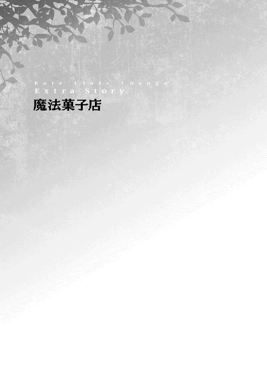

| レア・クラスチェンジ！II ～魔物使いちゃんとレア従魔の異世界ゆる旅～ | |
| 黒杉くろん | |
| TOブックス (2016) | |
異世界で魔物を従える職業【モンスターテイマー】となったレナ。レアな従魔たちとの騒がしくて楽しい旅を続ける彼女は、旅の資金を稼ぐため、続々とクエストをこなす日々を過ごす。そんなある日、冒険者の一行と遭遇。その一人、性別不詳の美形・パトリシアに因縁をつけられ、勝負をすることに！ かわいい従魔など、愛されキャラたちが大集合！ さらなる進化【レア・クラスチェンジ】へ大熱狂のコミカル・ファンタジー！ もふもふ倍増で癒されますっ！
イラスト：ちま
デザイン：BEE-PEE
プロローグ：村へ
レナたち一行は様々な食材を集めつつ、のんびりと旅を続けていた。草原で魔物を狩ったり、野草を集めたり。たまに脇の林に入って木の実集めをしたりと、なかなか旅を楽しめているようだ。
異世界なので、当然レナの知らない食材も多い。一見地球と同じ食材に見えて、特殊な特性を持っているものもあった。食べても大丈夫か、［全状態異常耐性］ギフト持ちのスライムたちがまず［溶解］してみることで確認していた。毒があればピリリと舌？ に感じるらしい。魔物味覚では、毒は美味しいスパイスになるそう。ハマルに乗ってのんびりと進行していたレナが、一点を指差す。
索敵のため空中を浮遊していたリリーが、レナの肩に舞い降りる。
「......あ。サクランボっぽい果実を発見ー！ クレハ、イズミ。毒味をお願いしてもいいかな？」
『『あいあいさーー！』』
スライムたちは嬉々として返事をする。毒味、などと言っているが、けしてご主人さまが鬼畜なわけではない。スライムは大食いなうえ悪喰なので、お互いの理にかなっているのだ。
リリーが『まかせて』とウインクして、再び空中に飛び立つ。濃い緑の葉が茂る木から果物を四つほどもいで来て、スライムボディにポイポイっと放り込む。
くるくるとボディを巡回した果実は、溶かされて消えていく。美味しかったのだろう、スライムたちがくるりと一回転して飛び跳ねてみせる。これは、レナも食べてＯＫ！ の合図だ。
皆で木の真下に移動。巨大化したハマルを足場にして、レナは赤い果実をたくさん採ることができた。直径四センチほどの丸い果実はつややかで、食欲をそそられる。赤い実は縁起がいいんだっけ？ とアケビを思い出しながら、逃亡珍道中だったなぁとレナはくすっと笑った。
▽野生のサクランボ（仮）を手に入れた！ ×50
マジックバッグを開いた時に、ふと、中にストックしてあるお肉は傷んでいないかな？ と思い当たる。レナが小さな塊肉を取り出してみると、綺麗なピンク色だったお肉は若干茶色がかっている。あちゃー、と声をあげた。マジックバッグはいわば容量の大きい常温保存倉庫なので、時間経過によりナマモノは傷んでしまうのだ。
「......前に狩って保存しておいたヒツジのお肉、もうかなり色が怪しくなってるね。傷んでそう。食べてお腹を壊したら大変だし、そろそろ、二度目の狩りとまいりますか......！」
ご主人さまの一言に、従魔たちは色めきだった。好戦的な喜びの声をあげる。
『『よっしゃあ、出陣じゃあーーーっ！』』
『うふふふふふ』
『かしこまりましたー、レナ様ー』
今度はどんなお肉が手に入るかなぁ、とうきうき顔のレナ。ニヤリと口角を上げる従魔たち。こうして、草原の一画は再び蹂躙された。
☆
傷んだお肉をオトリに使おう、とレナは提案した。完全に腐っているわけではないので、これで肉食の魔物たちを引き寄せることができそうだ。傷み肉を山盛り状態にして草原に放置し、泥や草をざっと適当にかける。強者の食べ残し、という演出だ。これを狙ってやってきた肉食魔物が標的。広大な草原には人影がなく、ヒト族の企てた作戦に慣れていない魔物が多い。策であることを疑うことなく、腐肉の周囲に肉食魔物たちがうろつきはじめた。少しだけ距離を取りながら草陰からうなり声を漏らし、互いをけん制している。
そんな心配をしなくても、金色の暴君は差別などしないので安心して欲しい。みんな仲良く食材にしてあげる。まあ、肉の美味しい魔物であればより喜ばれるが。
「い、いっくよーー！」
主人の出撃の号令が放たれた。ハマルが巨大化しつつ、メエエエ！ と咆哮をあげる。
まず一匹目。パコーーーーンッッ!!
急加速したゴールデンシープ号が金色の風となって、軽やかに草原の魔物たちを撥ねていく。記念すべき本日一体目、宙を舞ったのはハイエナの魔物。
まだまだ！ パコーーーーンッ！ パコーーーーンッ！
快進撃は止まらない。クラスチェンジしたハマルは素早さも体力値も格段に向上していて、さらに、主人の［鼓舞］の支援もあるので追突の威力がとんでもない。キツネ、ハイエナ、オオカミなどを根こそぎ倒していくハマル。草食獣の大下克上である。この方法だと傷んだお肉を無駄にせずに済むうえ、地道に草食魔物を探して狩るよりはるかに効率が良い。何より、主人は長時間暴走シープに乗っていられないので、短期決戦が望ましいのだ。
▽レナと従魔たちが レベルアップした！
狩りが終わり、獲物を回収する。オトリに使った腐肉は獲物たちの腹に入ることがなかったので、スライムが美味しく頂いた。前言撤回、やはりレナは鬼畜かもしれない。
☆
レナたちは毎夜、ふわっふわのゴールデンベッドで快眠する。目覚めた時には疲れがすっかり回復している。ハマルの金毛は極上の感触で、食べ物は新鮮で美味しい。同行者は全員可愛い。あとは、衣食住の「衣」さえ揃えばほぼ完璧だ。
頬に触れる金色もふもふの柔らかさを感じながら、レナは目覚めた。寄り添って眠っているため身体がぽかぽか温まっていて、肌寒さは感じない。朝のさわやかな空気が気持ち良い。
「......おはようー」
『おはよー、レナ様ー』
まずハマルが返事を返した。すでに起きて活動していたリリーとクーイズが、わらわらとレナの近くに集まってくる。
『レーナ！ おっはよー！ 今日の朝ご飯は鳥肉だよーっ』
『ぷくぷくスズメが三羽落ちてたの！ 普通のコウモリは一匹。イズたちがもう起きてるということはー？』
『......スズメ、解体済み、なの！ えへん！』
『『褒めてくれて良いのよーー！』』
「わあ。みんな、朝早くからありがとうね！ 今日は私の方が寝ぼすけだったね。甘えちゃったな」
『仲間の特権だから良いんじゃないー。たまにはレナ様にも、のんびり寝坊して欲しいですー、って、先輩たちと話してたんだぁ。また褒めて可愛がってくれたらー、ボクたちは嬉しいのー』
『『『その通りーー！』』』
「喜んで！ なんていい子たちなの、本当にかっわいいなぁ。えへへへ。鳥肉、嬉しいね。でも昨日狩ったヒツジ肉のレバーの方が先に傷んじゃいそうだから、そっちから食べようか？ 昨日摘んだネギと一緒に焼いてみよう」
『『わーい！ 鳥肉は夜だね。つくねがいいなー！』』
『デザートは......さくらんぼ？』
「はい。デザートもつけますよー」
『......にゃむぅー......また、眠くなってきちゃったー』
「あははっ」
すぅすぅと寝息をかき始めてしまったハマル。居眠りヒツジだった頃の習慣が抜けずに、一日に何度も小刻みに眠くなってしまうのだ。
ぷくぷくスズメが〝落ちてた〟という状況について説明しよう。夜間、半径五メートルくらいの円状にハマルの［周辺効果］を設定しておいて、そのままレナたちが［快眠］する。すると朝起きた時には、ついでに眠らされた獲物たちを回収できる......というシステムなのである。もしかして、と試してみた思いつきの作戦だったが、優秀な成果を上げていた。
今夜はつくね、と言っているが、ナイフで肉を細かく叩いて香草とまぜ合わせ、串に刺し、それをフレイムの火で炙った〝亜種つくね〟のことである。なかなかイケる。さっぱりした鳥肉はレナの好物だ。日本では、安くて美味しいニワトリのむね肉をよく購入していた。
不運にも夜間にヒツジの上空を飛んでしまい、快適な眠りに誘われてしまった獲物たちは、眠った状態のまま、スライムに溶かされていくのだった......。
『『スキル［溶解］ーー！』』
▽ぷくぷくスズメの肉を 手に入れた！ ×３
▽コウモリは スライムたちの おやつになった。
☆
ガララージュレ王国から遠ざかるため、レナたちは数日をかけて、かなりの強行軍で反対方向に歩いてきていた。国境からだいぶ離れたので、ようやく少しは安心できるというところ。途中にいくつか村があったが、スルーしていた。進行を優先させたのと、レナは他人に会うのがまだほんの少し、怖かったのだ。しかし、味付けのされていない肉ばかり口にしていて、そろそろ調味料が欲しくなってきた。レナは贅沢だと思いつつも、お肉を齧るたびに、あともうちょっと味があればもっと美味しく頂けるのにな、と思ってしまう。それに、ヒト型になれるようになった従魔たちにも、塩の旨みを体験させてあげたい。たくさん色々な経験をさせてあげよう、とレナは考えていた。今回は少し大きな村の近くまで来たので、冷や汗をかきながらも、レナはついに他人に会う覚悟をした。リリーに村内の偵察をお願いして、悪人がいないか確認をしてもらおう。
「ここの村に入ろうと思うの......村の人たちの魂を、確認してきてくれる？」
『......ん！ まかせてね、ご主人さまっ』
リリーは快く返事をした。必要以上に明るい声なのは、主人を気遣っているのかもしれない。
ウインクをサービス！ ふわっと翅を羽ばたかせる。
姿を消したリリーが村中を飛び回り、［フェアリー・アイ］で人々を丁寧に視ていく。キレイな心を持つ人の魂は白く輝き、悪人の魂は黒く濁って視えるらしい。
レナはどきどきしながら、村近くの草むらに隠れてリリーの帰りを待つ。いつのまにか、手のひらをぎゅっときつく握っていた。クーイズ、ハマルがそっと寄り添う。
ひと通り村内を視まわったリリーは、まっすぐにレナの元に戻り、肩にふわっと腰掛けた。［幻覚］を解いて、姿を現す。驚いたような表情。大きな目を更に大きく見開いて、じっと村を視つめ続けている。
「リリーちゃん......？」
心配そうに声をかける主人を安心させるように、リリーはレナの耳を軽く撫でてくれた。
『ちょっと、驚いただけなの。ビックリさせてごめんなさい。大丈夫！ あのね......この村の人たち......全員が、とってもいい人みたいだよ。ここで買い物していっても、全然大丈夫だと思う。悪い人が......いなさすぎて、逆に、ビックリしちゃったんだー』
その言葉を聞いたレナの表情が、ぱあっと明るくなった。
「そっか、良かったぁ......！ 今まで、悪い人にたくさん会ったからね......。ルーカさんは善人だったけれど。これからは、善い人たちにたくさん出会っていきたいねぇ」
『『そうだねー！ ま、悪人ばかりだったのはあの国がおかしいんだと思うけどー』』
『クスクスッ！ ご主人さま、日ごろの......行いがいいもん。きっと、これから、いいご縁にいっぱい恵まれるよー』
「ありがとう！ そうだといいなぁ」
『うんうん。ボクたちもイイ子でいるねー』
「心配してない。ウチの子たちはみんな最高だもん。現状維持でよろしく！」
『『『『きゃあーーーっ♪』』』』
主人が巨大ヒツジを乗りまわして草原を蹂躙したことは、従魔たちの中では問題にはならないらしい。主人も同様に、ウチの子贔屓が激しい。贔屓しているという自覚はあるらしく、親バカにはなってもバカ親にはならないようにしないと、と気を引き締めているので、どうか許容してやって欲しい。
村に入る時のレナの服装は、簡素なローブに造りの粗いシャツ、制服のスカート。少々奇抜だが、仕方ない。スライムたちは主人の胸元に隠れることになった。姿を消したリリーが、魔人族ハマルにヒト族風の［幻覚］をかけ続けることで、珍獣対策をする。ハマルが普通のヒツジに見えるよう［幻覚］をかけたとしても、モンスターと一緒にいるレナが珍しい「魔物使い」だとバレて注目を浴びたら困るし、ガララージュレ王国の近くに魔物使いが現れたと後で政府に嗅ぎつけられたくないのだ。
魔人族ハマルの輝く白金色の髪は、［幻覚］により真っ黒に染められた。シャツとズボンを着用してもらい、裾をギリギリ引きずらない長さのローブを羽織ってもらう。フードを被れば整った顔もなんとか隠せる。もちろんヒツジの耳や角もヒト族のものに偽った。
「ううー。首元がスースーするよぅー」
シャツは大人用なので、いつもモコモコしているハマルは肌寒くて落ち着かないようだ。
「ごめんね、ハーくん。また大きな街に着いたら、なんとか資金を調達して、マフラーを買ってあげるから。村にいる間だけ、我慢してくれる？」
レナはしゃがんで視線を合わせながら、ふんわりカールした黒髪を撫でた。黒髪ハマルは美幼児だが、元の姿に比べたらかなり目立たなくなっている。
「んー。はぁーい。レナ様のご指令とあらばー」
「いい子だね」
『『『えらーい！』』』
先輩たちにわっしょいされたハマルは、耳をピコピコさせて笑った。
......久しぶりのヒト族との接触。レナは喉をゴクリとならして生唾を飲み込み、深ーく呼吸した。不自然に見えないよう気をつけながら、ゆっくりと歩き、ハマルの手を引いて村へと向かう。
☆
草原の隅にひっそり存在する村の建物は、ほとんどが木造りの民家だった。牧歌的な風景である。人影はほとんどない。子どもは少なく、大人たちは昼間は畑仕事をしているのだ。
住民たちのみが利用しているらしいごく小さな商店が、四軒ほど並んで建っている。それぞれ、生鮮食品・衣類・日用品・農具を扱っているらしい。扱う商品のイラストが描かれた看板が、店先に揺れていた。全ての店が青空市場状態だが、生鮮食品店だけは日光により商品が傷まないよう対策がされていて、隣店との間に板で壁がつくられて影ができている。
村の門の前で軽く一礼したレナたちは、生鮮食品店へとまっすぐ向かった。
旅人の姿が珍しいのか、遊んでいた数人の子どもたちがローブ姿の二人を見て楽しそうにはしゃいでいる。近寄ってくる様子はないが、レナは肩をこわばらせた。心持ち早足になる。
生鮮食品店の前まで来ると、控えめな声で、店主らしいふくよかな女性に声をかけた。小さなお客たちを見た店主は、少し驚いた表情。
「こ、こんにちは......。私たちは旅の者なのですが、調味料が欲しいんです。このお店の商品について、ご説明頂けないでしょうか？」
ローブのフードを深く被って顔を隠したお客の声が年若い少女のものだったので、店主は優しく目元を緩めた。危険な旅人ではないようだ、と判断されたのだろう。寂れた村の商店に対して、随分丁寧な口調で話しかけてくれるのだな、とレナの評価を上げる。
「あら、まあまあ。随分可愛い旅人さんだこと。保護者さんはどこかなー？」
まさかの、ラナシュでは成人済みとなるレナが子ども扱いされてしまった......。店主の女性に悪気はないのだろうが、これは反論しなければ。「あれ？ ボクの保護者がレナ様なんだよねー？」と、ハマルが首を傾げながらレナを見上げる。レナはつないだ手の力を少し強めることで、その通り！ と同意を表した。
「わ、私は成人しています......！」
「ええええっ!?」
小柄で童顔なご主人さまは、この世界では相当幼く見られてしまうようだ。ラナシュのヒト族の成人年齢について言っておくと、男性は十八歳、女性は十六歳。つまり、現在十七歳のレナは立派な成人と言える。店主には思い切り驚かれてしまったが。
信じられない、という表情で店主はまじまじとレナを眺めて、たわわなスライム虚乳に目をやり、ようやく納得してくれた。あらやだごめんなさいねぇ、と取り繕うように謝られたが、それは擬い物なのである。
▽レナは 心に 深い傷を負った......。
リリーが、固まっている主人の肩をトントンと二回連続で叩く。相手はこちらに悪い感情を持っていないよ、嘘をついてないよ、という合図。こうして悪意対策をしよう！ と、先ほど皆で決めたのだった。
店主がジロジロとレナを眺めたのは、純粋に、一見子どもにしか見えない少女を心配していたのだろう。視線は無遠慮だったが、普段、親戚ばかりの村民としか触れ合っていないためである。
しばらく沈黙が場を支配したので、レナが気まずそうに口火を切った。
「ええと......。私たち、かなり頼りなく見えるかもしれませんが、長く旅生活を送っているので、身を守る術は一応持っていますよ......？」
「あら！ ごめんなさい。気を遣わせちゃったわねー。商人がお客さんに遠慮させちゃうなんて、ダメだね。あのさ。ムキムキのむさい旅人だったら、たまーに村にも来るんだけど......貴方たちはあんまりにも華奢だから。おばちゃん心配しちゃったのよー。どうか許してくれないかい？」
レナはホッと息をついた。
「はい。気にしていませんよ。こちらこそ、むきになっちゃってごめんなさい」
「ありがとね！ お嬢さん。えーと。お求めなのは調味料だったね」
レナが大人な対応をして見せると、店主も安心したようだ。にぱっと笑顔を向けて、店の最奥に姿を消す。何やら大きな箱を持ってきてくれた。ここに調味料がまとめて収められているらしい。
「旅人さんだったら、多めに買いたいだろう？ ここにストックしてるんだ」
ちゃめっ気たっぷりに告げて、箱の中身をレナたちにも見せてくれた。
ガラスの容器がみっちり詰められていて、それぞれの中にカラフルな調味料が入っている。ほとんどはサラサラした粒状のもの。いくつかは、トロリとした液体の入った瓶もあった。
見慣れない不思議な色合いに好奇心をそそられ、レナはフードを少しだけずらして黒い瞳を覗かせ、興味深々に検分し始める。ハマルも藍色の瞳をパチクリさせている。
少女たちの素直な反応に、店主の女性がくすっと笑い声を漏らした。
「ピンクの粒が砂糖。水色が塩だねー。ちょっと高価なのになると......これは、火ネズミの火袋を精製した赤トゲカラシ。液状のは、蜜アリが集めたチューレハニー！ ちっちゃい村の商店にしてはなかなか品揃えがいいだろ？ 蜜アリはその土地だけで咲く特別な花の蜜を好んで集めるんだ。だからチューレハニーはこの辺り限定の特産品だよ。オススメしとくね」
「わ、聞いただけでももう美味しそう、チューレハニー......買っちゃおうかな」
「美味しそうなのー？ 聞いただけじゃ分かんないからー、食べてみたいなー」
「あら。そっちの子はやっと喋ったわね。また可愛らしい声だわぁ！」
レナよりさらに小柄なハマルを、店主は微笑ましそうに見つめる。
「んー。お姉様の方がお喋り上手だからー、おしゃべりお任せしてるんだー」
「おや、そうなのかい。仲良しだね」
「ちょ......ハーくんっ......!?」
レナが慌てた理由は、以下の通り。正体に関心を持たれないよう、ハマルの「レナ様」呼びを禁止していたのだが......予定していた「お姉ちゃん」ではなく、バッチリ「お姉様」と発言されてしまったからである。思わずレナの表情が引きつる。聞く人が聞けば、特殊な目で見られてしまいかねない。
お姉様（笑）は顔を青くさせていたが、幸いにも店主の女性は「育ちがいいのね！」と良心的に捉えてくれた。ドギマギしていたレナはようやく胸を撫で下ろす。お胸がプルプルしているのは、スライムたちが笑いを堪えているからだろう。
店主の女性は少し言葉を付け加える。周囲に気を配り、小声になった。
「......まあ、いくら防衛手段があるとは言え、こんな子たちが二人きりで旅だなんて、事情が無いわけないと思っていたけど。お姉様とは、また随分高貴な呼び方じゃないかい？ あ、深い事情は聞かないよ。それに、ここに貴方たちが来たことも無闇に言わないから、安心なさいね。ただこれからは気をつけなさい。貴方たちの出自に興味を抱かせないように。私みたいなただのおばちゃんとかなら良いんだけどさ......悪どい奴らはいるもんだから。前にも事情持ちの旅人が村に来たことはあったんだ。その子たちはとても大変な思いをしたそうだよ。......弟分をしっかり守ってあげなさいね、お姉ちゃんっ！ 景気付けに、調味料の値段、おまけしとくから！」
盛大にお察しされている。
バシン！ と強めに背中を叩かれたレナは、冷や汗をダラダラ流しながら微妙な笑顔でお礼を言った。これ以上話を掘り下げられないのはありがたい。お姉様、という誤解も受け入れよう。
どうやら店主は、人攫いなどの悪人から逃げてきた上流階級の子たちかも？ と想像したらしい。まさに当たらずしも遠からず、と言える。ダナツェラで捕まっていたら、レナとスライムは実際に売られていたのだから......。
トントン、とリリーが肩を二回叩く。今回の訪問を内緒にする、という店主の言葉に嘘はないようだ。レナとハマルは丁寧に頭を下げる。
「お言葉、肝に銘じておきます......！ 割引も、ありがとうございます」
「頑張りなさいねー！」
否定も肯定もしない、無難なお礼の言葉を口にしたレナ。少々失礼な対応だが、お察し名人の店主は明るい笑顔で返してくれる。本当に、今回はいい人に巡り会えたらしい。店主と顔を見合わせて笑い、レナはこのご縁に心から感謝した。
じゃあこの話はここで終わりね、と店主が調味料の箱をレナたちに勧める。心遣いをありがたく受け取って、レナは真剣に商品を吟味し始めた。
「ええと......迷っちゃうなぁ。では、お砂糖を二瓶と、チューレハニーを一瓶下さい。あとは、ちょっと申し上げにくいんですけど......お塩の瓶を皆さんの生活に支障がないぶんだけ、全部譲って欲しいです！」
「ん！ 構わないよ」
「ありがとうございますー！ やったぁ。お金はこれで足りますか？」
日本人のレナはお塩が大好きっ！ 塩はマジックバックに入れておけば、瓶同士がぶつかって割れる心配もない。次にいつ商店に行けるか分からないから、とストック用も含めて大量に注文した。
レナは店主に小さな銀の硬貨を一枚だけ差し出す。今持っている全財産の五分の一だ。これを譲ってくれたルーカ先生によれば、銀貨五枚でだいたい宿に一週間ほど泊まれるだけの価値があるとのこと。ハマルをテイムしたことにより、宿泊は最高級のゴールデンベッド野宿でも代用できるし、それよりも調味料の確保を優先した。小さな村でこれだけ大量の調味料がストックできているなら、値段の相場はそこまで高くないはず、と見積もった。レナは期待した目で店主を見つめる。
▽レナの きらめく眼差し！
......一方の店主は、顎が落ちんばかりに口を開いていた。レナは「あれ？ やらかした？」と青ざめる。店主が大慌てで、バッ！ とレナの手ごと硬貨を握りしめて隠した。
「......何してるのー！ こんな硬貨、普通の店ではまず使えないよっ!?」
「え、ええっ!?」
レナは怒られてしまった！ しかし、この硬貨の何がダメなのか異世界初心者には分からない。ルーカは妙なものを渡したりしないだろうが......。店主が呆れたように「はぁ」とため息を吐く。
「あのね。この硬貨では価値が高すぎるんだよ......！ もしかして、貨幣の価値をよく知らないのかい？ この辺の子どもでも小銭の使い方くらいは知ってるもんなんだけどねぇ。貴方たち、やっぱり相当上流階級の出身者だね？ 平民の店でこんなお高い硬貨をポンポン出してたら、怪しんでくれって言って回ってるようなもんだ。気をつけなくちゃ。全くもう、危なっかしくて、見てらんないねぇー......」
「ご、ごめんなさい」
言い終えた店主は難しい顔で、お姉ちゃんがしっかりしなきゃ、と付け加えた。
宿の宿泊料金から、日用品の価格をざっくり割り出したつもりでいたレナだが、どうやらルーカのいう宿とは、王都などにある相場が高めな高級宿を差していたらしい。元王子様である彼は、そういった場所にしか泊まった経験がなかったのである。首輪で常時行動を制限されていたこともあり、知識はあっても、平民の常識などはよく知らないのだろう。
ふとルーカのことを考えたレナは、自分は親切な女性に一般人の貨幣感覚を教えてもらえたからいいが、貴族の常識しか持たないルーカは、上手く街でやって行けているだろうか？ と心配になった。まあ魔眼で思考を読んでいれば騙されたりはしなさそうだが。マイペースで天然なうえ、妙に運が悪いので気がかりだ。思考が脇にそれてどこかぼんやりしているレナを見て、店主は言いすぎたと思ったのか、すまなさそうに謝まってきた。
「大声出して驚かせちゃって、こちらこそごめんね。......ん、周りの人には気付かれてないね。よし。それじゃ私がここで、その銀貨を細かい硬貨に両替してあげよう。行商人と商品の取引をする時に、たまーにその硬貨を使うこともあるから、遠慮しなくていいよ」
「！」
レナの肩が二回肩が叩かれる。ということは、本当に良心から申し出てくれているということ。
不当にお金を盗られることもなさそうだ。あまりに都合のいい展開に、レナは一瞬動揺したものの、ありがたく好意に甘えることにした。
「ご配慮、感謝いたします......！」
いちいち気のいい店主を疑っている現状に、チクリと良心が痛む。店主は、にっと力強い笑みを浮かべた。
「ただーし！ 両替のための条件はあるよ？ アンタたちは危なっかしすぎるから、私の家でしっかりと平民常識指導を受けていくこと！ もしこれが受け入れられないって言うなら、いっそ、調味料も売ってあげないから」
「「えっ」」
条件を付けられてしまった!? レナとハマルが目を丸くする。
「私も、強引なやり方だとは思っているんだけどね......。こんな純粋そうな子たちに何かあったらと思うと、やりきれないんだよ。親切の押し付けさ。お願い！ なんとか時間を作ってくれないかい。それとも、少しでもこの村に留まるのはマズイ？」
「うっ」
レナが言葉に詰まる。ハマルはレナを見上げている。先を急いでいるのは、その通りだ。行き先のアテも予定も無いけれど、この村に長居していて、まだどこか常識が魔物らしいハマルに違和感を感じられても困るし、ガララージュレ王国から遠ざかりたい。調味料を手に入れたらすぐ発つ予定だった。レナはしっかり考える。まっすぐな店主の視線が、悩むレナを射抜き続けていた。
「う。......尋ねるのは大変申し訳ないのですが、どのくらい時間がかかるでしょうか？」
「そりゃ、お嬢さんたちにまかせるよ。数時間でも、数日でも。長く一緒にいられるなら、それだけたくさんのことを教えてあげられるけどね」
「......では。一日で、お願いできますか？ ご提案、本当にありがたいです。一般常識を教えてもらえるのはすごく助かるのですが、ただ、先を急ぐので......。こちらが教えを乞う立場なのに、時間を指定してしまって、すみません」
へりくだりまくるレナの言葉を聞いて、店主は苦笑を浮かべた。
「そうかい！ 良かったよ！ こっちが言い出したことだから、そんなに頭を下げないで。うーん......お姉ちゃんの丁寧すぎる言葉遣いも直した方がいいなー。そんなお堅い言葉遣いは平民らしくないから、目立つよ。気をつけて。明日の朝には発つってことでいいかい？ じゃ、この村に宿はないから、今夜はウチに泊まっていきなさい。なに。もう主人を亡くしているから家には私と子ども二人しかいないし、部屋は余ってるんだ。余計な詮索はしないよう、子どもには口止めしておくよ」
「......何から何まで、配慮して下さって助かりますー！ ありがとうございます」
「あははっ！ お客さんには満足して帰ってもらうのが、商売人の喜びってね。ま、今回は完全に私の自己満足なわけだけど。お礼を言われると気分がいいね！ この店には急用のお客さんなんてそうそう来ないし、今日はもう閉店にしよう。二人とも、私の家までついておいで」
小さな村の商店の営業時間は適当だ。よほど商品がすぐ欲しい場合は、店主の家を直接訪ねればいい。そんなのんびりしたシステムなのである。
「はいっ」
レナとハマルは、生鮮食品店の店主の家に一泊することになった。リリーとクーイズには窮屈な思いをさせてしまうが、常識講座のため、一晩だけガマンしてもらおう。
☆
生鮮食品店の店主は、アイシャと名乗った。レナとハマルは、偽名でクリスとハルと名乗っておく。基本的にトラブルメーカーなレナたちだが、何事もなく彼女の家に辿り着いた。
アイシャがレナたちを振り返り、軽い口調で話しかける。
「その椅子にそれぞれ座って。飲み物を出してあげようね。今の時期なら旬のベリージュースを作ってあげられるんだけど......どうかなー？ 貴方たちの口に合うかな。アリ蜜を足してベリーをじっくり煮詰めたジャムに、炭酸水を入れてジュースっぽく仕上げるのさ。甘酸っぱくて美味しいんだよ。飲んでみるかい？ うちの子どもたちはこれが大好きなんだ！」
そのような美味しそうなものを勧められて、レナが断れるわけがない。信頼できる相手からの好意とあらば、なおさら素直に受け入れる。
「うわあぁ、美味しそうー！ そんな凝ったジュース、私たちが頂いてもいいんですか......!? ぜひ、味わってみたいです」
「ふふふっ。お姉ちゃんは随分食いしん坊さんみたいだね！ そう言ってもらえると嬉しいよ。ハルくんも、同じものを飲んでみるかい」
「ありがとーございますー。頂きますー」
「ん！ じゃあ、ちょっとだけ待っててね。二人とも、窓のカーテンは閉めてあるから室内ではローブを脱いでも大丈夫だよ」
「あっ。重ね重ね、恐れいります」
「堅い」
「う。お気遣いありがとうござ......まだ堅いですよね？」
「うん。普通、クリスみたいな喋り方をする方が難しいんだけどねぇ。ここにいるうちに、もう少し砕けた話し方に慣れていきなさい」
「「はーい」」
お察し名人アイシャの気配りがすごい。間延びした返事をしてみせたレナは苦笑した。
アイシャは家に着いた瞬間に全ての窓のカーテンを閉め、魔道具の室内ランプに柔らかなオレンジの光を灯す。蛍光灯ほどとはいわないが、部屋の中はしっかり明るくなっている。子ども用イスに新品の座布団を手際良く敷いて、玄関で足を止めてしまっていたレナたちをテーブルに案内してくれた。過剰に気を遣ってしまうお客人に対しての、自然に先回りした完璧なおもてなしである。
リリーの［心眼］フォローがなければ、あまりにも親切すぎて、また騙されることを疑ってしまっていたかもしれない。
「ありがとうございます」
レナはもう一言だけ、心からお礼を言って、ようやく埃っぽいローブを脱いだ。着替えにまだ手間取るハマルのローブも、砂で床を汚さないよう気をつけながら脱がせてやる。
「あらやだ......！......すごく綺麗な子たちだったのねぇ」
二人の整った容姿を見て、アイシャは感嘆のため息をついた。レナたちを安心させるように微笑み、余計な詮索はせずにキッチンに向かった。
クリスとハル。二人は同じ黒髪とはいえ、アジア系の顔立ちの姉と、顔の彫りが深めな弟は全然似ていない。アイシャの瞳が潤んでいたのは、なまじ容姿が良かったことで〝人攫いから逃げてきた上流階級の子ども〟という仮説を確信したからだろう。半分はその通りだ。
レナのたちは静かに椅子に座って、時折キッチンを覗き込みながら待つ。しばらくすると、ベリージャムを贅沢に使った気合いの入った絶品ジュースを手に、得意げな顔でアイシャが現れた。
色鮮やかなベリージュースを見て目を輝かせる姉弟。透明感のある赤色に、炭酸の泡がぷつぷつと浮かんでいる。まだ完成ではないのだとか。アリ蜜がさらにひと雫、コップに注がれた。ごろりと果実の形を保ったベリージャムの間を、するすると琥珀色の蜜が落ちていく。とても綺麗！ とレナは頬を淡く染めた。
「「頂きます！」」
「召し上がれ」
優しいアイシャの声を聞いて、手を合わせたレナとハマルは「待ってました」とカップを持ち上げる。ふちに唇を付けようとして、レナが歯を打ったのはドジっ子の鏡といえよう。ベリーの色素が、ピンク色の唇を深紅に彩る。しゅわっと喉を通っていく爽やかな炭酸の感覚、蜜ベリーのしっかりとした甘み！......あまりの美味しさに、レナとハマルは頭上に花を飛ばし始めた。［幻覚］で消されたハマルのヒツジ耳は、ピコピコとせわしなく動いていて、それを感じ取ったリリーがこっそり笑った。
「うう。すごく幸せぇ〜〜......！ ねぇハルくん、美味しいねぇ」
「うんっ」
「そう喜んでもらえると、作って良かったとしみじみ思うね！」
可愛子ちゃんたちが喜ぶ様子を見たアイシャも、目元を緩める。
レナは炭酸水の作り方をアイシャに尋ねた。クーイズとリリーにも、村を出てからベリージュースを作ってあげようと思ったのだ。炭酸水は、水に「ぷくぷくの骨」をしばらく入れておくと作れるらしい。「ぷくぷく」と名付けられている太っちょモンスターの骨なら何でも大丈夫。今度ぷくぷくスズメを捕まえたら、骨は残しておこうと、レナとハマルは頷きあった。ベリージャムに使用したベリーの種類、見つけ方も一緒に習った。
生活を豊かにするこのような細かな知恵も、これからたくさん学んでいきたいとレナは考えている。異世界ラナシュで生きていくために。口の中の甘酸っぱさを、しっかりと噛みしめた。
☆
ジュースを飲んで一息ついた後は、軽く雑談する。緊張が解れたところで、アイシャはテーブルの上にスカーフを広げて、その上に様々な種類の硬貨を載せていった。レナとハマルの前に、照明の光を反射する真新しい硬貨の数々が並ぶ。新品、もしくは新品に近い硬貨は金運を呼び寄せるからとっておくの、とアイシャが語った。風水みたいなものなのだろう。
硬貨の素材は全て銅と銀。これよりもさらに価値が高い硬貨になると、金が使われる。金はラナシュでも貴重な金属とのこと。
ラナシュ世界の通貨単位は「リル」。大きさはどの硬貨もほとんど同じ。わずかに銀貨の方が大きいが、どれも子どもの手でも持てるくらいのサイズで楕円型。穴が開いていたり凝った装飾がされていたりと、同じ素材でも造形のクオリティが全然違う。それが、通貨の価値の差になっているそうだ。アイシャが硬貨を指差しながら説明を始める。
「額の小さい硬貨を見たこと無いかもしれないから、順番に説明していくね。まずは、銅貨から。葉っぱのシンプルな模様のが１リル、穴の空いたものが５リル、盾の紋章が10リル、剣の紋章が50リル。次は銀貨。模様価値の順番は同じで、下から１００リル、５００リル、１０００リル、５０００リル。それに追加で王冠印の１００００リル硬貨。さらに高価なものになってくると、金貨もあるんだけど......普通の市民なら、まず使う機会なんてないねー。使うのは大商人か、貴族たちくらいじゃないかな？ 王族たちの使う白金貨って存在も聞いたことはあるよ。
物価としては、クリスが使おうとした５０００リル銀貨で、王都の高級宿一泊ぶんくらい。普通の町の宿なら一泊でだいたい５００リル。長期宿泊なら割引してくれるからね。食べ物の値段は、塩ひと瓶１００リル、砂糖ひと瓶１５０リル、ハニーは２５０リル。調味料類はちょっと高めだけど、果物や野菜、穀物は10〜80リルくらいが相場。肉は種類によってすごく差がある。普通の鶏なんかだと野菜と同じくらい安いし、貴重な魔物肉なら銀貨が使われることもあるんだ。１リル硬貨は、裁縫用具の針やボタンとか、小さな買い物の時に使うかな。
クリスが５０００リル銀貨をあの場で使おうとした異常さを、分かってもらえた......？ １０００リルなんて商品代金をポンと払おうとするだけでも驚くのに、出てきた銀貨は剣の紋章なんだもの。そんなの、私でも冬用の備蓄をまとめ買いする時にしか使わないよー！」
「そ、それはなんとも......」
レナは思わず口元を押さえて、気まずそうに眉尻を下げた。
アイシャの指摘した通り、平民たちの常識から考えるとレナたちの言動は怪しすぎる。事情持ちだと言いふらしているようなものだ。親切な村商人に会えたから良かったものの、大きな街の商店でやらかしていたら、例えば悪人に粗相を見られ、再び危険に巻き込まれた可能性だってある。アイシャにまた「ありがとうございます」と告げたレナは苦笑されてしまった。
アイシャが次に持ってきたのは、紙とペン。紙は貴重品ではないようだ。ペンは、日本人には馴染みのない羽タイプのペン。この際だからと色々と質問してみると、ペンは羽タイプが一番安くて、平民でも使っている人が多い。たくさん書き物をする事務職の人々は、もう少し値段の張る万年筆を使うのだとか。
紙にペンで地図を描きながら、アイシャはこの村周辺の地理について説明する。
「貴方たちの出身地については聞かないから、ざっくりとラナシュ全体の地理を説明するね。今いるこの村は、ヒト族の暮らすミレージュエ大陸の端っこ、ツェルル草原のネイ村だよ。周辺の国々はこの通り。......気をつけなくちゃいけないのは、ガララージュレ王国だね。貴方たちは絶対に行かない方がいいと思う」
レナがごくりと生唾を飲み込む。アイシャはそれを見なかったことにした。
「他には、アネース王国が次に近いかな。大きな街に行きたいなら、ここの王都がオススメだよ！ 治安もいいし、観光名所もたくさんある。綺麗な街だって有名なんだ。そこそこの規模の街を訪れたいなら、行きやすいのは、アネース領内の小都市トイリア。アネース王国の玄関口だね。ここには私も食材の買い付けに行くんだけど、暮らしやすそうな印象かな」
ふむふむ、とレナが頷く。これからの行き先は決まっていなかったが、ひとまずアネース王国を目指すのが良さそうだ。他国の中なら、ガララージュレ王国政府も無闇に手出しはできないだろう。
集中力を切らさず話を聞くレナを見て、アイシャが感心感心、と頷く。そして、こっくりこっくり船を漕ぎ始めているハマルを眺めて、おかしそうに笑う。
「地理の話を続けるよ。いいかい、クリス？」
「はい」
「じゃあ、もっと視野を広げよう。ここはミレーの端っこだって、さっき言ったね？ 船で海を渡ったら、その先には、魔人族たちが多く暮らすジーニアレス大陸がある。ジーニの大地はとても肥沃なんだけど、自然災害が多くて、場所によって環境の差がかなりあるらしい。住むにはクセが強すぎるから、ヒト族よりも頑丈な魔人族が多く暮らしているのさ。魔王さんがしっかり魔人族たちをまとめてくれているから、ヒト族が観光に行っても全然問題はないよ。差別もされない。珍しくて美味しい食べ物が色々あるって聞いた」
「美味しい食べ物!?」
「ふあぁーー......」
素敵なごちそうを想像して歓喜の声をあげたレナ、このタイミングで都合よく目を覚ましたハマル。アイシャは笑ってしまった。今日の夕飯は何にしようかねー？ なんてのほほんと呟く。
地理の説明はおしまい。アイシャは地図のインクを［ウインド］の魔法で乾かしてレナに渡した。
▽レナは ラナシュ地図を 手に入れた！ ×１
アイシャは緑魔法に適性があるそう。同じく緑魔法に適性があるレナもそのうち、魔法らしい魔法を使えるようになるだろう。実はレナはちょっぴり楽しみにしていた。
アイシャはたたんで籠に入れられていたローブを抱え、洗濯をするためにそそくさと庭に出ていった。昼間のうちに洗濯を済ませれば、上手くすれば今日中に乾く。レナが遠慮するヒマも与えない早技だった。洗濯の間に子ども部屋で身体を拭いておきなさいね、と去り際に声がかけられる。お風呂の代わりだ。村人個人の家には浴槽は普及していない。村の中央に公衆浴場があるそうだが、レナたちが素顔を晒すわけにもいかないのでこの方法を提案してくれた。「大きな街の宿には風呂がだいたい付属しているよ」とのことなので、レナの楽しみがまたひとつ増えた。ラナシュ生活もだいぶ楽しめるようになってきたな、と考えてレナはうふふと笑う。
二階の子ども部屋の扉を閉めて鍵をかけると、ようやくクーイズとリリーが姿を見せる。
『『......ぷはっ！』』
『ふー。......アイシャさん、とってもいい人だったねー！ 良かったね、ご主人さま！』
よじよじ、とレナの胸元からスライムたちが這い上がってくる。顔を挟むようにして、両方の肩に登った。リリーはレナの頭に上半身を預けてひと息つく。
『ね！ レナとハーくん至れり尽くせり、みたいな？ じーーー』
『お夕飯もご馳走になれちゃうなんてー！ いいないいなー。じーーー』
『......いいなぁ』
美味しいジュースにありつけなかった三名が、羨ましいぞ！ との気持ちを込めてレナにぐりぐりと身体をこすり付け始める。ご主人様なんとかしてよー、とおねだりしているようだ。レナをひと通りおしおきすると、今度はハマルにタックルする。ぐーりぐーりとお腹をくすぐり始めた。
「せ、先輩方ーー、あうっ、すみませんー！ ふあはははぁっ！」
『『うーりうりうりうりうりィ!!』』
『それそれ、こしょこしょ！』
「ひぁーーーっ！」
身悶えるハマル。魔人族になりたてで感覚が敏感なのだ。ギフトは［鈍感］なのだが、くすぐりは痛みではないため判定外という仕様らしい。ややこしい。ハマルも先輩従魔たちも笑い転げながら、子ども用ベッドにダイブした。主人はにこにこしながらその光景を眺めているが、そろそろ仲裁をすべきである。
「みんな、お疲れさまー。クレハ、イズミ、リリーちゃん、隠れていてくれてありがとうね。あんまり騒いじゃうと声が外に漏れちゃうから、静かにしてよっか。あと、私たちだけ先にベリージュースを頂いちゃってごめんね。アイシャさんに作り方を聞いたから、またこの村を発ったら草原で材料を集めて作ってあげる。それまで待っててくれるかな？」
『『『うわーーい！ やったぁーー！』』』
また全員分のベリージュースを作る、と約束したら先輩従魔たちも納得してくれた。ようやく解放されたハマルは、くてんくてんに力が抜けている。
「ふにゃぁぁ......。......美味しかったよねぇー、アイシャお母さんのジュース。でもでも、レナ様のお料理ももちろん楽しみですー」
『『こやつめ！ 両方食べられるなんて、羨ましい奴め！』』
従魔たちはまた小声で騒ぎ始めてしまった。「ひゃーーっ」とハマルの悲鳴があがるが、先輩たちも状況を理解しており軽くつんつんしているだけだ。気を張らずに済むほのぼの空間で、レナもようやく肩の力を抜いて、しばらくゆっくりと休憩することができた。
そして身体を清めることにする。レナは立ち上がると、この場には魔物の子どもしかいないし、と下着以外の服を全て脱いだ。タオルを桶に浸して、きつく絞る。汲まれていた水に、先ほどポカポカ石を入れておいたのでお湯になっている。腕から順番に拭いていく。久しぶりのお湯の温かさが気持ちよくて、小さく鼻歌を歌い始めた。
ぬらり......うずうず。目の前でそんなことをし始められると、イタズラ好きのクレハとイズミはじっとしていられない！ リラックス中だからと我慢していたが、もう限界！ はやっ！ 邪な視線を感じたレナが後ろを振り向いて、顔を引きつらせた。
「だ、ダメだからね？......今、変な声出ちゃって誰かに覗かれたら、大変なことになるからね？ ......分かってるよね。こ、こら、めっ！ その左右に揺れる動きこわい！ やめて！」
これまた見事な「やるなよ？ 絶対にやるなよ！」である。
『うへへ......』
『ご主人さまはくすぐったがりですからなぁ......』
『『ふっふっふーー!!』』
ワクワクぷるるん！ と、クーイズが身体を震わせた。
『『......ああーーん！ もう我慢できないのぉーー！ そぉーーれ!!』』
▽クーイズの マイムマイム！
▽レナを囲んで ダンスを始めた！
さすがに多少空気を読んで、主人をからかうだけでくすぐり攻撃は自重しているが、これでもかと煽っている。焦ったレナがわたわたと逃げまどって、最終的に足をもつれさせお湯の入った桶を蹴飛ばしてしまった。スライムがサッと床に広がり水を全て吸収する！
「すごぉーーい！ えら......くない。危ない、誤魔化されるところだった!?」
クーイズがてへへと笑う。身体を拭く前にお湯が無くなってしまった、と落ち込むレナは全裸。イズミが［アクア］で水を出して、クレハが［フレイム］で温める。アフターフォローは完璧！ それ以前にやらないで欲しかった。リリーは床をポカポカ叩きながら爆笑しており、ハマルはマイペースに首を傾げた。
「あれれー。お姉様はー、どうして拭いた足をわざわざまた濡らしたのー？」
▽レナの 心が 傷ついた......。
クリティカル！ もちろん、生まれ持っての運動センスとおっちょこちょいのせいなのだが、基本的に運動能力抜群の魔物たちには、ドジっ子属性は理解されなかった。
☆
なんだかんだ騒がしく過ごしていると、階段を上がってくる三人分の足音が聞こえてくる。クーイズとリリーに隠れてもらった。コンコンと扉が軽くノックされ、レナが鍵を解いた瞬間、ガチャリと扉が廊下側から開かれる。
「......ほんとにお客さまがいるー！ 初めましてっ」
「わあ、おねーちゃんたちいらっしゃーい！」
レナが視線を下げると、やんちゃそうな二人の幼児がキラキラした目で見つめ返してきた。
「こらこら。うるさくしてごめんねぇ。さっき子どもが帰って来たんだよー、挨拶なさい」
アイシャがはしゃぐ子どもたちの後ろから顔を覗かせる。どうやらこの二人は、遊びに出ていたアイシャの実子のようだ。それぞれ七歳と五歳の子どもたちは、元気よく手を上げて自己紹介する。
「おれはカイ！」
「あたしはロロだよ、お客さま！」
「「二人とも、今日は泊まっていくんだよね？ やったー！」」
この村では客人は珍しい。幼い旅人となればなおさら。カイとロロはレナの後ろにいるハマルを見つけて、わぁーっと手を振る。ハマルは目をぱちくりさせていて、保護者たちは子どもの交流を微笑ましそうに眺めた。
「初めまして！ クリスです。一晩お世話になります。二人とも、よろしくねー」
「よろしくー。ハルだよー」
軽く挨拶を済ませたら、リビングに移動する。夕飯ができているそうだ！
カイとロロは、レナたちにあれこれ楽しそうに話しかけてくる。しかし旅の話などを意図的に避けるように質問していたのは、母の教育の賜物だろう。
今日のアイシャ家の晩ご飯は、薄切りパンにチーズを乗せたものと、トマトスープ、野菜サラダ。デザートは採れたての生ベリー。素朴ながらとても美味しそうなメニューで、レナとハマルはうきうきと表情をほころばせている。しかし、アイシャ家の子どもたちには「またぁ!?」と不評なようだ。子どもらしく、野菜より肉が好きらしい。
「ワガママを言うんじゃありません。ご飯になってくれた食材にも、作ってくれた人にも感謝して食べなさい。残したら許さないからね？」
アイシャがにっこりと黒い笑顔を子どもたちに向けると、背筋を伸ばした子どもたちは大人しく席に着く。怒れる母は恐ろしいのである。
レナは少し迷ったものの、アイシャにこっそり生肉の提供を申し出てみた。耳打ちする。
「あの。お節介かもしれませんが、手持ちのお肉をお譲りできますよ。たくさんあるので」
「ええっ？ それは......ありがたいけど、一体何肉なんだい？ 手持ちって、肉は傷みやすいけど......。いや、クリスを信用してないわけじゃないんだよ。ただ衛生面は職業柄気になっちゃうんだ」
「ああ、今朝狩ったばっかりの新鮮なお肉なので、ご安心下さいー」
レナの言葉にアイシャは頷き、別室で二人でマジックバッグを覗き込む。レナがバッグから鳥肉、ウサギ肉、ヒツジ肉を出してみると、案の定、アイシャには頭を抱えられてしまったが。
レナももしやとは思っていたのだが、硬貨同様、ルーカに譲られたマジックバッグもやはり高級品らしい。少しでも空間魔法がかけられていれば価格が跳ね上がるのだが、レナに譲られたものはそれなりに容量が大きい、中級クオリティのマジックバッグ。とてもいいお値段がする。ちなみに最上級の魔法がかけられていれば、時間経過もしないのだとか。
「分かってるとは思うけど、迂闊に人前でマジックバッグを披露しないように気をつけるんだよ！」
アイシャは心配そうに、レナに念押しする。レナはぶんぶん首を振って頷いた。
アイシャに様々な肉を渡すと、すごく助かる！ とお礼を言われる。
レナの提案で、夕飯のメニューには藤堂家のアレンジが加えられた。トマトスープにはコンロで炙ったウサギ肉とヤギ乳が足されて、具だくさんのトマトシチューになる。その上に薄切りのパンを乗せ、さらにチーズを散らしてオーブンで焼くと......。
▽こんがりパングラタンもどきが 完成した！ ×５
じゅわっと湯気を立てるキツネ色のチーズが、空になった胃袋をこれでもかと刺激する。子どもたちも大満足なボリュームのある一品だ。
「いただきます！」
号令をかけて、皆が大きな口を開けて頬張った。
「「「......美味しいーー！」」」
「良かったぁ！」
舌を火傷しそうな勢いで、子どもたちはグラタンもどきをがっついて食べ始める。しっかりふーふーして冷ましてね、と言いながら自らもグラタンを口に入れたレナは、目を白黒させてふるふる震えている......ということは、バッチリ熱をくらってしまったらしい。
▽レナ 状態異常：口内火傷（微）
ドジっ子が止まらない。アイシャが慌てて水を差し入れる。
「もう、クリスってばそそっかしいよ！ それにしても、料理の知識はあるんだねー。驚いた。グラタン、とっても美味しいね。ありがとう！ レシピ、もらっちゃって良かったのかい？」
「あちち......。か、構いませんよー。こんなお礼しかできませんが......」
「何、水くさいこと言ってるの。そもそも、たくさん買い物してくれて私は大助かりだよ。お肉もたくさん買い取らせてもらったし。可愛い子たちが笑ってくれると気分がいいしね！」
「そう言ってもらえると助かります」
「ん。頂けると、って言わなかったのはえらいね。使い分け、できてきたじゃないか」
レナとアイシャは笑いあった。
レナたちが狩ったのが普通の動物ではなく魔物だと知り、アイシャは驚いていた。普通の動物の肉と比較すると、魔物肉は畜産動物肉よりも少し硬いが、味が濃い。塩漬けにすると、長期保存に最適な絶品のベーコンを作ることができるのだとか。
ラナシュ、特にミレー大陸では普通の動物の畜産業が盛ん。そちらのお肉は、鮮度が落ちるのが少し早いものの、クセがなく、柔らかくてどんな料理にも合うそうだ。ただ、このネイ村のような小さな集落ではめったに口にできない。狩りでウサギなどを獲るのが手っ取り早いのだが、夫を亡くしているアイシャ家ではそれも難しい。食卓に肉が並ぶ日は少なかった。
アイシャは肉を譲ったことに対して「何かお礼を」とさらに申し出てくれたので、レナは図々しいかと思いながらも、夜食にまた同じパングラタンをもらいたいとお願いしてみた。よく食べるのね！ と言われてしまったが、快く受け入れられた。もちろんクーイズとリリーの分である。レナの乙女力は尊い犠牲になったのだ。
☆
「「おやすみなさい」」
「お休みー！ また明日もお話しようね。お姉様とハーくん」
「おいロロ、そんなこと言っちゃうと二人とも困るだろー。ゆっくり休んでいってね、お姉様たち！」
お姉様、だと？ カイとロロの発言が不穏だ。レナがじっとりハマルを見やると、見事に目を逸らされる。犯人発見。ちょんと鼻つまみ攻撃をしておいた。プチ修羅場のレナたちの横で、ロロが涙目で兄に抗議する。
「だって、お別れさみしいもーん......。また明日も二人に会えるの、楽しみなんだもんー」
「それは俺もだけどさ......。でも二人に言うんだったら......そうじゃなくて、また来てね、だろー？」
「......ん。ワガママは、だめ。......またねーっ」
妹をたしなめるカイの言葉には、早くもアイシャのような優しい気遣いが表れていた。幼いのに大したものだ。素直にそれを聞き入れるロロも、とてもいい子。レナはその親子の繋がりに気付いて、目元を緩める。自分もこうして親を真似て育ったんだろうな、と、懐かしく思った。
「明日の朝、少しだけまた会えるから。その後に『またね』しようね？ 今日はどうもありがとう」
レナが、カイとロロに微笑みかける。ついでにもう一言。
「......あ、あのね？ 二人とも。ハルくんが面白おかしく話しちゃったみたいだけど、私はお姉様じゃなくて、クリスお姉ちゃんだからね......？」
「「「お姉様」」」
「うぐっ」
カイとロロはどうしても呼び方を訂正する気はないようだ。ハマルが己の主観で話した「クリス様武勇伝」のせいで、すっかりお姉様呼びが定着してしまっている。これがまさか、今後のレナの運命に影響を及ぼすことになろうとは。ふて寝で［快眠］したレナは知るよしもないのだった。
☆
「またね！......また遊びに来てね、お姉様ぁー！」
「ハルくんもねっ！」
「貴方たちがあんまりいい子だったから、私も別れるのが惜しいよ。買い物していってくれてどうもありがとう。お肉も嬉しかった。いいご縁だったわ。気をつけて旅をしていきなさいね」
アイシャ家の玄関で、レナたちと一家はいったん別れの挨拶を交わす。外だと目立つからだ。子どもたちはなんとかいじらしい笑顔を保っている。泣きそうに目が潤んでいたため、つられてレナも涙目になった。感謝の言葉を返す。
「はい！ こちらこそ、色々と教えて頂いて......本当にありがとうございました。アイシャさんたちと出会えて良かった......。絶対、また遊びに来るからね、カイくん、ロロちゃん！」
「「うんっ！」」
「ありがとうございましたー。またねー、また会おうねー、同志よー」
ハマルが余計な一言を付け加える。
「こ、こらっ」
「「「あははははっ！ お姉様ー！」」」
レナはみんなにからかわれてしまった。寂しいが......そろそろ本当にお別れしなくてはいけない。
他の村人に見つからないよう、レナたちはまだ薄暗い早朝にそっと玄関を出て、村の入り口へ向かう。無言で軽く抱きしめ合うと、レナとハマルは村に背を向けて歩き出した。この場での別離は、あっさりとしていた。皆、とても幸せな気持ちだった。
☆
赤くなった鼻をすんっとすするレナたちが歩む先には、アネース王国がある。まず目指すのは、アネース王国内の小都市トイリア。そこで本格的な旅支度を整えるつもりだ。村を出てしばらく歩いた辺りで、クーイズとリリーがひょっこり姿を現す。ハマルも魔物状態に戻った。
しんみりとした空気を払拭するように、軽快に足を進めるレナたち。
トイリアを目指しつつ、気分転換も兼ねて、道中でベリーを採取していくことにした。村人がベリー摘みをするいくつかのポイントのうち、アイシャおすすめの一番村から遠い場所に向かう。
マジックバッグには砂糖とハニーがたくさん入っている。お鍋も調達することができたので、ベリージャムをたくさん作ろう。火はクレハの［フレイム］がある。
リリーが［魅了］した虫たちの誘導により、効率良く野生のベリーを発見して、採取していった。オレンジ色のラズベリーのような見た目の実。これを加熱すると鮮やかな赤色になり、さらに栄養価が増すらしい。レナは熟れたオレンジ色の果実を口に含んで、今回の優しい出会いを思いだし、嬉しそうに笑った。甘い好意の味。
「これからは、きっと大丈夫だよね。楽しい旅になるはず」
『『何があっても、皆でレナを守ってあげるからね！』』
『ん。大丈夫。いろんな景色、みんなで、楽しもう......！』
『えいえいおーー』
「これからもどうぞよろしくね。クレハ、イズミ、リリーちゃん、ハーくん」
『『あいあいさーー！』』
『ずっと、仲良し！ クスクスッ』
『よろしくですー。レナお姉様ー』
〈称号：［逃亡者］、［お姉様］が追加されました！〉
〈ギルドカードを確認して下さい〉
「......ああああっ!?」
トラブルメーカーの称号こそ、レナにピッタリな気がするのは気のせいだろうか。
▽レナは 一般常識を 学んだ！
小都市トイリアへ
ここはアネース王国の国境検問所。大国の玄関だけあって、たくさんの人々で賑わっている。その中には、細い三つ編みを垂らした少女と魔物たちの姿もあった。毎度おなじみ、皆さんご存知のレナと愉快な仲間たちである。小さいとはいえ魔物を連れているので、列の前後の人たちからは微妙に距離を置かれていた。話しかけられることもなくてちょっぴり切ないが、必要以上には怖がられていない。魔物をペットにしている人もいなくはないし、商人の荷馬車を魔物がひくこともあるため、魔物を扱える子なのかな？ と、正しく捉えられていた。従魔たちが大人しかったのが良かったのだろう。
この国境門を通り抜けて一番近い街が、目指している小都市トイリア。風光明媚でとても過ごしやすい街だとアイシャから聞いている。楽しみだな、とレナが国境壁を明るい気持ちで見上げる。
ガララージュレ王国に近いため、トイリアに定住する予定はないが、もしも目立たずに暮らせそうで治安のいい国だったなら、王都に家を買うことも検討していた。資金を稼げたら、だが。別の王国の中央まで離れたら、さすがに再びガララージュレ王国に狙われることも無いだろう。
レナは「魔物使いでも暮らしやすい国か？」をきちんと知りたかったので、ここではギルドカードを偽らずに［職業：魔物使い］のまま入国することにした。それにカード偽造をして捕まっても困る。ギルドカードのステータス数値より下の情報はクローズしてある。ここは伏せておいても問題ないため、クローズしておけば、レア従魔の種族を知られることはない。リリーに［幻覚］をかけてもらって、従魔の見た目だけ偽っておくことにした。ハマルを「居眠りヒツジ」風、スライムは「ミニスライム」風の見た目にする。リリー本人には、いつものフェアリー姿ではなく蝶の姿になってもらった。
アネース王国は大国なので、しっかり入国審査ができる人物が門を警備している可能性が高い。相手のスキルを視ることができるルーカがいないので、門番が［看破］スキルを持っているのか分からない。慎重になろう。もし万が一、従魔たちの［幻覚］まで［看破］されたら、その時は事情をきちんと話すしかない。まあ悩んでもこれ以上はどうしようもないので、レナは不安な気持ちを切り替えて前を向いた。
草原で色々狩って、採ったので、レナのマジックバッグの中身は潤っている。
ヒツジ肉、ウサギ肉、トリ肉、香草、ぷくぷくの骨、塩、砂糖、チューレハニー、野生ベリー、殻付きくるみ、モモりんご、着替え、鍋、ジュエルスライム製の宝石......などなど。
さらに道中塩を手に入れて、ますます旅生活は快適になっていた。トイリアでの買い足しは旅の便利用品が中心になるだろう。服や、もっと質が良いお鍋などのキッチングッズが欲しい。アイシャがくれたお鍋は、［フレイム］の火力を誤り、底が焦げてしまったのだ。そのために、まずは冒険者ギルドで資金を稼がなくてはいけない。
レナが日本から持ってきた学生鞄に入っていた、ラナシュでは質の高すぎる水筒やらスマホやらは、列に並ぶ前にマジックバッグに放り込んでおいた。万が一見られて、興味を持たれたらマズイ。学生鞄は砂っぽく汚れているので、日本のものだと気付かれない......と思いたい。
ついにレナたちの検問の順番がまわってきた。
「......うわ、緊張するなー......」
担当の門番はごく普通の中肉中背のおじさんに見える。だが、色々と内緒にしたいことがあるレナはドキドキが止まらない様子。眉尻を下げて、鼓動が早くなった胸を軽く押さえた。
『『レナっ、ファイトー！』』
『......ご主人さま。リラックス、リラックス〜！』
『ふわあぁ......。焦ってもー、仕方ないよー。いつも通りのレナ様が素敵だよー』
従魔たちの励ましを受けて、レナは力強いガッツポーズを返し、一歩、足を踏み出した！
「......そうだよね。緊張しても仕方ない。よし！ 元気出そう！ 一番、藤堂レナ、行きまーすっ」
『『『ひゅーひゅーー！』』』
『あのねー？ レナ様の言動がー、さっきからボクらよりもよほど注目を集めてるのー』
「えっ」
レナが魔物と会話できるのは従魔契約をしているからであって、周りの人たちからは、独り言の異様に多い少女......と見られていた。そんな子が、いきなりガッツポーズまでしたものだから、さらに距離を置かれていた。レナがキョロキョロと周りを見渡したら、さりげなく視線を逸らされまくる。「ガーン......！」と落ち込む様子は無駄にオーバーリアクションで、また............これ以上は言うまい。おとなしく門番の男性の元に向かうレナ。影を背負ってトボトボ歩いてくる不思議ちゃんを見て、門番も苦笑している。
「やあ、アネース王国にようこそ。元気なお嬢さん？ 魔物たちと一緒にいるけど、そういう職業なのかな......。ギルドカードの確認をさせてもらっていいかい」
「......は、はい！ 騒がしくしてすみませんでした。よろしくお願いします」
「うん。ありがとう。お預かりします」
門番はレナを怖がらせないように穏やかに笑いかけたあと、目を細めながらギルドカードをチェックし始めた。......ルーカが魔眼の力を使う時の仕草に似ている。もしかしたら本当に［看破］スキル持ちなのかもしれない。カードには何も細工をしていなかったので、何事もなく返された。ホッと息を吐く。
「君は魔物使いなんだね。一応、連れている従魔の確認だけさせてねー。お嬢さんの従魔はシープ、バタフライ、スライムが二体。計四体で間違いはないかな？」
「はい」
嘘は言っていない。ゴールデンシープ、蝶々の翅の妖精、ジュエルスライムではあるが。［心眼］を発動させていた門番はニコリと笑った。
「うん。君は魂の綺麗な子のようだ。手間をかけさせて申し訳なかった。では、改めまして、アネース王国へようこそ！ 『風と水の乙女が歌う白の都』と謳われる我が国を、どうぞ楽しんでいってね。景観よし、治安もよしだから、永住するのもオススメだよ！ って宣伝しておくね。私はこの国の出身なんだ。自国を誇りに思っている」
「わあ......とても楽しみですー！」
「それは良かったよ」
門番の言葉からイメージしてみると、アネース王国は美しい街なのだろう。それに、この男性のような優しい人が多いのかもしれない。楽しい生活が送れそうな予感にレナの期待が高まっていく。
「とりあえず、ここからまっすぐ正面に歩いていったらトイリアに着く。街の入り口はすぐ見えてくるからね。そこの観光案内所で、アネース王国の地図をもらうといい。もうそろそろ日が落ちるから......アテが無ければ、そこで宿について聞いて、早めに拠点を確保しておくことをオススメするよ。祭り時でもないから、全ての宿が埋まっているなんてことはないだろう」
「！ ご親切にありがとうございます」
「ははっ！ これは門番の規約で、伝えなければいけないことを伝えただけだよ。魔物も泊めてくれる宿は限られているだろうから、宿泊予約をする時にはそのこともしっかり伝えるんだよ」
「はい。ありがとうございましたっ」
レナたちは足取りも軽やかに、皆そろって門をくぐっていく。門番を振り返って、軽く手を振った。彼は次の旅人の相手をしていたが、ひらりと手を振り返してくれた。
☆
魔物と一緒に泊まれる宿がある。宿で受付をする時だけ、従魔たちが魔人族になるしかないか？ と悩んでいたくらいなので、とても助かる。レナはご機嫌で足を進めた。さすがに、馬小屋などに大切な従魔を預けたくはないのだ。是非、案内所で宿について尋ねてみよう。
少し歩いたら、門番の言葉通り、すぐトイリアの入り口門が見えてきた。街の門からまっすぐ伸びる、白石畳の広い道がまず目に飛び込んでくる。両脇の清らかな水が流れる水路が印象的。この辺りの景観が、風と水の乙女〜、と言われる所以だろうか？ 建物の外観は国の政策で統一されている。白か薄茶色のレンガ造り、メルヘンな赤屋根の建物が並んでいる。景観維持のためか、建物の規格もおおよそ決められているらしい。高さも大きさも揃った家は二階建てが多い。それぞれのベランダに色とりどりの花が飾られていて、パッと明るい彩りを添えていた。
すごく可愛らしい街だ、とレナは感動した。
街は夕焼け色に染まっている。もうすぐ日が落ちて、暗くなるだろう。その前に、と門の脇の観光案内所に急いで駆け込む。魔物ＯＫで空きのある宿を紹介して欲しい、と受付の女性に頼んだ。女性はパラパラと冊子をめくる。リアルタイムで商店の状況が分かる優れものの魔道具なのである。
「『淫魔ルルゥのお宿♡』という宿泊所なら、一部屋空いておりますが......」
提案されたのは、まさかの怪しすぎる名称の施設......。案内所の職員も、さすがにこのお宿♡のネーミングに思うところがあるのか、微妙な表情をしている。成人には問題なく勧めるのだが、幼くて純粋そうなレナにはどうなのだろう？ と気になったらしい。手にした観光ガイドブックを再度真剣に読み込み始めた。このベテランの気遣いが、十七歳日本人女性の心に刺さる。
名称こそだいぶアレなお宿♡だったが、客層も悪くなく、内装やサービスもしっかりしていて、宿としてはランクが高いらしい。ただアレな名称と、あまりにハデな外観から新規客はなかなか寄り付かず、オーナー淫魔の知り合いばかりが泊まっているのだとか。オーナーは魔人族の称号を持つ、淫魔サキュバス。凄まじいインパクトだ。
レナが焦りながら思考する。宿泊料金もお手頃。それに何より、魔人族がオーナーなら従魔たちも少しは気楽に過ごせそうだ。......このお宿♡に泊まることを決めた。職員にそう伝えて、通信魔道具で予約を取ってもらう。ちょっぴり気恥ずかしくて、足早に観光案内所を後にした。
「......ま、まあ宿の予約も無事にできたし。良かったよね！......少しだけ冒険者ギルドに顔を出して、どんなクエストがあるのか見て行こうか？ 明日からは、何か簡単な依頼を受けようと思うの。旅の資金、稼がなきゃ」
『『『『はーーい！』』』』
冒険者ギルドにトラウマがあるレナだが......件のダナツェラギルドが、この世界の普通ではない、はずである。ルーカもそう言っていた。しかし訪問を明日に回すと怖気付いてしまいそうだったので、レナは今日のうちに、トイリア冒険者ギルドを訪ねてみることにした。
冒険者ギルドとお宿♡
トイリア門から五分ほど大通りを歩くと、ごつい男たちで賑わう冒険者ギルドが見えてくる。とても大きな建物だ。トイリアの一般的な建物三棟分はある。正面扉はつねに開けられており、開放的な雰囲気。今は夕方なので、クエストを終えた人々が集まってきている。たくさんの賑やかな声が、外まで聞こえてきていた。体育会系のさわやかな人が多い印象だ。
「うわー。すごく......大きいです......」
レナがぽかんと口を開けて建物を仰ぎ見る。冒険者ギルド、とでかでか書かれた看板を確認した。
「ハーくん。［体型変化］で身体を小さくしておいてくれる？」
『はーいっ』
今回は初めてのトイリアギルドなので、とにかくこっそり様子をうかがいたい。ハマルにはスイカくらいの大きさに変化してもらう。先輩冒険者とぶつかったりして絡まれるのを防ぐため。それに魔物が見つからなければ、レナだけではそうそう目立たないだろうと考えた。なお、後者の思考は誤算である。理由は、レナが冒険者にはとても見えないからだ。スライムたちとミニヒツジはレナの細腕にまとめて抱えられる。リリーは妖精の状態で姿を消して、肩車された。
「よし。じゃー、いくよっ？」
『『『『おーー！』』』』
小声で従魔たちと話したあと、レナはこそこそと冒険者ギルドに入っていった。
「......おじゃましまーす......」
コメツキバッタより腰が低い新人冒険者Ａである。がっつり緊張している。正面玄関の本当に隅っこを、ひっそりひっそり移動していく。
「......わあ！」
完全に建物の中に入ると、活気に思わず圧倒されて、壁際で足を止めた。小さく歓声を上げる。
木造りの建物内は天井が高くて、広々としている。床は若干砂や葉っぱが落ちているが、ゴミは見当たらず、綺麗に清掃されていた。ファンタジーな装備に身を包み、大剣や弓を背に背負った仕事帰りの冒険者がたくさんいる。
ギルドの一階はクエストの受注カウンターと素材買取所、二階は食堂。美味しそうな匂いが冒険帰りの男たちの食欲を刺激するため、次から次へと大皿の料理が運ばれてきていた。ドカ盛り飯がどんどんと大食らいたちの腹へと消えていく。
クエストカウンターには、依頼完了の知らせが次々と舞い込んでいて、どの受付嬢も大変忙しそうに手を動かしていた。美人揃いの受付嬢たちだが、さすがに夕方ともなると笑顔が疲れてきている。いちゃもんを付けた冒険者を鬼の形相で言葉責めしている年配の女性もいた。実に逞しい。
ギルドの端っこで、レナがキョロキョロとクエストの貼られた掲示板を探していると、隣にいたスキンヘッドの大男に声をかけられた。強面なので、一瞬ビクッと大げさに反応してしまう。
「......お。なんだ、嬢ちゃん？ 魔物素材の買取りをしてもらいに来たのかい？ 全く、こんな小さい子を放ったらかしにしてるなんてどこのパーティだよ......。ちっ。アンタの仲間、ちょっと冷たいんじゃないのかい。大丈夫か？ 不満を溜め込んでないか？ 何かあればギルドの職員を頼ればいいからな。んーとなぁ......買取カウンターはあっちなんだけどなー。残念ながら、スライムゼリーとちっこい羊だけじゃ大した金額にならないと思うぜ。自分で捌いて食うか、食堂で料理してもらうのがオススメだっ！ がはは！」
ごつい見た目に似合わず、子ども好きでとても親切な男性のようだ。レナが子ども扱いされたのは、もう何度目だろうか。
唐突な声かけにビビっていたレナだが、リリーが優しく頭を撫でてくれたので、男性が嘘を言っていない善人だと分かった。安心して、ぽつぽつと話し出す。
「この子たちは素材じゃないんです〜......！ みんな、私の大切な仲間なんですよ。ええと、新人冒険者の藤堂レナと言います！ 魔物使いです。初めまして、先輩。若輩者ですが、よろしくお願いします。今は、クエストの掲示板を探していました」
レナが普通に返事をすると、スキンヘッド冒険者は目を丸くした。
「お、おう！ よろしくなー。......まさか、初対面の嬢ちゃんに普通に話してもらえるとは思わなかったぜぇ。俺、いつも小さい子には泣かれちまうんだよな。それでも、困ってそうなら声をかけずにはいられないんだけどよ！ お節介焼きってやつだ、がははっ！ アンタは、見た目によらず随分肝が据わってるんだな」
「うっ......小さい子じゃないです。成人していますから。十七歳です」
「冗談も一丁前に言えるとは、ますます結構なことだ！ ははっ、面白いぞ！」
「本当ですってばーー!?」
スライム虚乳フォローのないレナは、どこまでもロリ娘にしか見られなかった。残念！ 驚いて、大きな黒い瞳をさらに見開いている仕草が余計に子どもっぽい。周囲からもどこか微笑ましい視線を向けられている。空気を読んだレナは、悔しい気持ちを抑えてこの話題を終わらせることにした。やりとりを長々続けているともっと注目されてしまう。
「......掲示板の場所を教えてもらえないでしょうか？」
年齢についての弁解を諦め、掲示板の場所について尋ねてみる。この男性なら教えてくれそうだ、と思った。男性は「ん」と、カウンターの脇の柱を指差す。太い柱には、巨大なコルクボード状の板が設置され、大量の紙が貼り付けられていた。
実はクエストボードはとても分かりやすい位置にあったのだが、カウンター近くに依頼完了受付のため冒険者たちが群がっていたため、背の低いレナは見つけることができなかったようだ。今も、男性が指差す先を背伸びして眺めているが、ボードの端っこしか見ることができない。
「う、うわ。今、見に行けるかなぁ......」
「なんだぁ？ 嬢ちゃん。何か、受けたい依頼でもあったのかい。それか、依頼発注希望だとか？」
スキンヘッド男は普通に話してもらえたことがよほど嬉しかったのだろう。情けない表情をしているレナにしゃがんで視線を合わせて、丁寧に尋ねる。
「ええと、今すぐクエストを受ける訳じゃないんですけど。明日は、何か簡単なものに挑戦したいなーと思ってて。ここのギルドに来たのは初めてなので、どんな依頼があるか確認しておきたかったんです」
「......おう！ そいつは立派な心がけだなあ。情報収集しておくのは、いいことだぜ！ 何事も準備しすぎるってことはないもんだ。えらいえらい。今、嬢ちゃんのギルドカードのランクはいくつだ？」
「いちばん下のＧランクです......」
「そう小さくならなくていいさ。誰でも最初はＧランクから駆け上がっていくんだからな。それならまあ......まずは薬草収集やキノコ集めがオススメだ！ 簡単だし、完了期限のない常時依頼だからな。集まった時に買い取ってもらえばいい。ただ、萎びていたら価値が下がるから注意するんだぞ。あとは......家の掃除や草刈りなんかの、個人の手伝いの依頼もＧランクで受けられるはずだぜぇ。明日の朝イチならギルド内も空いてるだろうし、ちと早起きして、掲示板を覗きに来な。良いクエストは早いもの勝ちだからよ」
「はい。色々と教えてくれてありがとうございます！」
「感謝されると嬉しいなぁ。頑張れよっ！ 若い奴らは皆、最初はこうして雑用から下積みしていくんだよな。懐かしいぜぇ。その頃から比べると、俺も歳食ったなぁ！ ははっ！......ひとつだけ忠告だ。駆け出しの時に焦って高難度な依頼を受けて、死ぬ奴も少なくない。自分の実力と相談して堅実に依頼を受けること。いいな？」
男性は神妙な顔つきでレナを見る。ベテランの風格を醸し出している彼は、そのような場面を目にしたことがあるのかもしれない......。レナはまっすぐに見つめ返した。
「はい。もちろん、死にたくないですし、生活のための資金が稼げたらそれでいいので。無理はしません」
「おお。良いなー！ そういう奴が、意外と高ランクの冒険者になったりするんだ。嬢ちゃん、稼げるようになったらまたメシでも奢ってくれな！ ははは！ 出会いの餞別に今日は俺が奢ろう、と言いたい所だが......。あいにく今からはパーティの若いのの鍛錬に付き合わなくちゃならねぇ。また今度会ったら、飯に誘わせてくれや」
「え。悪いですよ......？」
「なーに、今日の良い出会いに感謝して、まぁ......飲み明かしたいのさ！ 頼むぜ、付き合ってくれ。あと、できれば、パーティの奴とも友達になってやって欲しいなァ。成人したばっかの若造がいるんだけど、同年代の友達がいなくてな。嬢ちゃんなら、大人びてるから話しやすそうだし。じゃあ、また会ったら声をかけるぞ！ がははっ」
リリーが主人の頭を優しく撫でている。善意ということ。......こういうタイプの人は、過剰に遠慮するとさらに色々してくれようとする場合がある。レナは好意をありがたく受け取ることにした。
「......はい。ではまた今度。お誘い楽しみにしていますね？」
「おう！ またなぁー！」
騒がしい大男は愉快そうに笑って、ドカドカと大股で立ち去って行った。
結局、彼の名前も聞く暇がなかったが......あの目立つ外見はそうそう忘れられないし、今度出会った時にでも聞けばいいだろう。冒険者ギルドに通っていればそのうち会えるはず。
男性が大きな声で話していたので、レナまで注目されてしまっている。必要な情報は聞けたことだし、他の人に話しかけられる前に、ギルドを立ち去ることにした。ラブリー従魔たちをチラチラ見ていた受付嬢は、きっと触ってみたかったのだろうが、「悪いな」と思いながらもスルーして、レナはくるりと踵を返す。足早に宿へと向かった。
▽スキンヘッド冒険者に ご飯をご馳走してもらう 約束をした！
☆
街は早くも薄紫色に染まってきている。しかし、街灯が道を優しく照らしてくれているため視界は十分明るい。草原の夜は真っ暗だったなぁ、とレナは思い出す。夜道を視認できて、安全に歩けることを「ありがたいな」と思いながら、宿屋を目指し白石畳の道を歩く。
......そして、問題の宿屋前に辿り着いた。
「.............................................................................................ここ、なんだよね......？」
『『やあーーーんっ！』』
『クスクスクスクスッ！......お、お腹、痛いよーっ』
『わーお。すごーくピンク。まっぶしぃーー』
宿屋の外観を眺めて、絶句するレナ。はしゃぎ始める従魔たち。
さあ。ここで、観光案内所で聞いたお宿♡とやらの情報をおさらいしてみよう。レナたちが今夜泊まる宿の名称は「淫魔ルルゥのお宿♡」。外観はド派手、そしてオーナーがサキュバスの魔人族。......今更ながら字面がやばい。年齢指定ものである。宿としてのクオリティとサービスは良い、と聞いているが、それは果たしてどのようなサービスなのだろうか。そのような邪なことを思わず考えてしまう、トンデモない見た目のお宿♡が、マジで目の前に存在した。主従が無駄にピンク脳な訳ではない、このお宿♡を見たら誰もがそわそわしてしまうはず。ピンクの電飾が目に沁みる。
「.....................」
『『『『...............』』』』
一通り騒いだ従魔たちが大人しくなってしまうと、嫌な沈黙がレナたちの間に流れた。まるでタイミングを合わせたように、お宿♡から「あっはーーん♡」と嬌声が聞こえてくる。レナの背中に冷たい汗が流れ始めた。足が完全に固まってしまう。
宿の建物自体は国の規格どおりに薄茶のレンガ造り、赤屋根の可愛らしいものなのだが......ピンクの電飾がこれでもかと張り巡らされており、イルミネーションのようにキラキラ輝いてレナたちを照らしていた。まるで日本のえっちなホテル......んんっ！ 失礼。
お願いだから、ピンクの電飾で「ようこそ」とか細工しないでほしかった。ここに、入る？
「............うぅっ......」
従魔たちも一緒に泊めてくれる宿なんてここしかない。宿泊予約はすでに取ってしまっている。一泊いくら、で料金を払うのだから、早めに部屋で休んだ方が確実にお得。
ド庶民のレナは熱くなった頭でそう考えて、ついに............宿の扉を開けたァ！
「はぁーーーーいっ♡」
閉めたァ！
▽レナは 激しく混乱している......。
衝動的にバシッと扉を閉めてしまい、レナが呆然とつっ立っていると、ドアが内側から開けられた。現れたのはもちろん、オーナーの淫魔サキュバスその人。匂い立つような美しい女性である。
「......もぅ！ 小さなお嬢さん。そんなに激しく扉を閉められたら、壊れちゃうわー？」
「ご、ごめんなさい」
怒られてしまった。レナは素直に頭を下げるが、淫魔のスリットスカートから覗く白い太ももが目に入ってしまい、咄嗟に顔をそらす。イケナイ気分になる。すごく恥ずかしい。
まぁ初心だこと♡ と淫魔がにんまり微笑む。先ほど、受付デスクになぜか艶かしいポージングで座っていた（お客様へのサービス♡とのこと）オーナーはさりげなくレナを赤い瞳で見つめた。......気のせいだろうか。視線がギラついているような......？
レナが少し怖気づいていると気付いた淫魔。キュッとくびれた腰に手を当ててレナを見下ろすと、今度は安心させるように人懐っこい笑みを浮かべる。室内に入るよう自然に促した。
「まあまあ。そぉんな所で震えてないでぇ......入っていらっしゃいな！ 可愛いお客様に、たっぷりサービスしてあ・げ・る・わ♡」
あんまり自然じゃなかった。美しいオーナーにハートマークてんこ盛りでお誘いの言葉をかけられると、同性のレナですらもなんだかドキドキしてしまう。色気がすごい。比較的スレンダーな体にぴったりフィットしている黒のドレスと、桃色のショートの髪がとってもセクシー。
レナは落ち着かなさそうにオーナーを見上げる。
「で、では。お邪魔しま〜す......」
「はぁい♡ いらっしゃーい」
恐る恐る宿に入っていくお客人の様子を見て、オーナーは「こんな反応してくれる子、久しぶり！」とイタズラ心を膨らませた。レナが中に入ると玄関扉をパタンと閉めて、部屋の鍵をサッと取り出し、営業用の笑顔を浮かべる。レナはピキンと固まった。
「......では。ようこそ！ 淫魔ルルゥのお宿♡へ。当店をご利用頂き誠にありがとうございまぁす！ 貴方は、魔物使いのレナさんよね。お待ちしておりました♡ お食事はなし、お部屋利用のみで一週間の宿泊とうかがっております。お間違いはございませんか？ 料金は前払いで、３０００リルになりまぁす。バスルームは各部屋ごとに備えつけてありますので、お好きな時間にご利用下さいませ。ただし、着替えのバスローブは当宿に宿泊している時だけのサービスなので、持ち帰りはご遠慮下さい。従魔をお連れだと聞いていますので、クイーンサイズのベッドがある部屋にご案内いたします。従魔さんたちは大人しい子みたいね。きちんとバスルームで洗ってもらえれば、みんなでベッドを使ってもらっても大丈夫よ」
「......あ。た、助かります。各お部屋にバスルームがあるんだ！ とっても贅沢ですね。こんなにサービスが素晴らしくてお値段はお手頃だなんて......その、嬉しいです」
「ありがとうねー♡ 私の自慢の城なのよ！」
お得な利用内容を聞いて、レナはころっと態度を和らげた。相変わらずのチョロさだが、リリーの魂の審議によるとこの淫魔は善人らしいので、ひとまず安心できる。ルームバスなんてまたすごくアレなホテルっぽいが......んんっ！ レナは純粋に、充実した設備に感動していた。
「ほとんどの淫魔はお宿♡を経営してるからねぇ。ん？ 淫魔の伝統的な趣味的嗜好よ♡ だから設備に対しての料金は破格なの。オーナーが淫魔のお宿♡は、だいたいリーズナブルでサービスが良いから、よそで見かけたら是非ご贔屓にしてあげてね！ 営業しておくわ。お嬢さんは可愛らしいし、どこのお宿♡でも歓迎されるんじゃないかしらー？......まあその代わり、ちょこっとエッチな声を聞いちゃったりするかもしれないけど......？ うふふ♡」
「え、えっちな声......!?」
レナの顔が、またリンゴのように赤くなってしまう。先ほど玄関先で聞いたアハーンな声を思い出してしまったらしい。モンスターとして野生の本能が強い従魔たちは、このような話はむしろ好物。きゃあきゃあと楽しそうにはしゃいでいて、主人の方がよほど初心だ。
オーナーは主従を見比べて、カラカラと快活に笑った。
「冗談よっ！ アナタ、本当に可愛いねー」
「......えっ？」
「男女の営みが目的でここを訪れる人はほとんどいないから、安心なさいな？ まあ外観は一見それっぽいけどー。こーんな派手な建物に手を組んでカップルが入って来たら、何をするのかすぐ分かっちゃうじゃない。あからさますぎて、そういう目的のお客人には逆に選ばれないのよ！ 来る人は昔からの馴染みの冒険者たちがほとんどね。他には、会談の場なんかに使われたりもしてるわ。淫魔の宿は防音性が高いから、うってつけなの」
......おや。では、先ほど聞こえたアハーンな声は何だったのだろうか。レナが何やら今度は青ざめている。
「じゃあ、さっき聞こえた声は......幽霊......!?」
レナはたまにド天然を発動させる。知ってた。そんなピンク声を発する幽霊なんて嫌すぎる。
「えっ!? ぷ、ぷはあっ！......お、お嬢さん、もう最高ー！ あはははッ！ まさか、そんな反応を返されるなんて、予想外よ。......ぷっ、玄関で聞こえた声？ それ、私のものよ。［呼び声］っていうスキルを使ってね。観光案内所で宿泊予約してくれたお客様が幼い女の子って聞いていたから、ちょーっと出来心でからかっちゃったの。ごめんね♡」
オーナーはお腹を押さえて、うっすら涙を浮かべながら、軽ーく謝る。ひいひいと笑い続ける。赤い瞳には、頬を膨らませる少女の姿がハッキリと映されていた。その少女が抱える従魔たちから厳しい視線を送られていることに気付いて、ようやく少し冷静になる。
「ひ、ひどいですーー！ あの声、相当ビックリしたんですからっ」
「うふふ♡ 今晩、私がオトナの愛の営みについて教えてあげましょうかー？ ああいう声にも慣れられるわよ。お嬢さん可愛いから、はりきってサービスしちゃう！」
「......きゃーーーーっ!?」
「あっはははは！ かっわいいーー！」
完全にからかい対象として、レナはロックオンされてしまったようだ。オーナーは楽しいことが大好きな性分らしい。オーナーにダメ押しとばかりに耳元にふぅっと息を吹きかけられ、レナは驚いて飛び上がると腰を勢いよく曲げて一礼して、慌てて逃げ出した。
ようやく部屋に駆け込んだところで、リリーに『あの淫魔の言葉......ほとんど本気じゃないからかいだよ？』と真相を聞いてぐったり脱力する。慣れないからかい方だったとは言え、こんなに相手のペースに乗せられてはいけないなぁ、と平常心を保っていた従魔たちを見てレナは反省した。
☆
小さなお客人が立ち去った後の受付では、オーナー淫魔、ルルゥといつの間にか現れた、いかにも歴戦の冒険者といった風貌の獣人男性がくつろいでいる。待ち合い用のテーブル席にそれぞれ腰掛けた二人は、熱く湯気を立てる紅茶を口に含んだ。......温度が高すぎたらしく、獣人はペロリと舌を出して空気にさらす。ルルゥがクスクス笑って、青魔法［アクア］で冷たい水を出現させ、赤くなった舌を冷やしてやった。
「今日はいい日ねぇ。随分、面白い子が訪ねてきてくれたものー。うふふ♡」
ご機嫌で話を振るルルゥ。獣人はカップを置いて、渋い顔をしている。
「......うむ。見てたぞオーナー。......あまりあのチビ娘をからかいすぎない方がいい。アンタが勘付いていないはずはないだろうが、主人が襲われるかもしれないと感じた時の連れの従魔たちの眼力は尋常じゃなかったぞ。ランクの低い魔物にしちゃありえない。俺でも寒気を感じたんだからな。何か秘密を持っているのかもしれん。......もしや、わざとからかって、様子見したのか？」
「どうかしらぁ？ 内緒にしておくわ。いい女には秘密が多いものだから......なんてね！ それにしても、貴方に心配されるなんていい気分よ。ああ、そんな怖い顔しないで。苦言はありがたく受け取っておくわね！ からかいの程度はわきまえているから安心してちょうだい」
「......そうなのだろうな。アンタは接客のプロだから。見ているこっちはヒヤヒヤするが......」
「オホホホ！ 信用してくれてよくってよ〜！」
獣人男は、閉まりきっていなかった玄関口のわずかな隙間から、先ほどのレナたちのやり取りを見ていたらしい。実は、お宿の外ではちょっとした騒ぎになっていた。覗き魔がいます！ と通報されなくてよかった。
ルルゥは、赤い目を色っぽく瞬かせながら高笑いしてみせる。妙なおふざけを見せられた獣人は、はあ、とため息を吐いた。
「まあ、彼女にその気があったなら、本当に身体を重ねても良かったんだけどねっ」
「おいおい......。淫魔サキュバスの［愛の覗き見］を使うほど貴重な人材だったのか？」
「何が視えたかは、お客様の個人情報なので教えられませぇーん。でも魂の綺麗な、とってもいい子だったわよ♡ 魔物たちをすごく大切に扱っているようだわ。家族みたいに。嬉しいわね」
「......そうか。それは何よりだ。ヒト族の中には、魔物を扱う職についてるくせに、躾と称して痛めつけやがる奴もいるからな。そんなのに出会っちまうと気分が悪い」
「ヒト族にも魔人族にも、悪い奴は一定数いるもんねー。あーヤダヤダっ！......あら、話しこんじゃったわ。お嬢さんの部屋に寝間着を届けに行かなくちゃいけないのよ」
そう告げると、ルルゥは静かに席を立つ。お盆に二人分の空になったティーカップを乗せた。ごちそうさま、と獣人が言うとパチンとウインクしてみせる。
「珍しいな。アメニティを準備しておくのを忘れたのか」
「いいえー？ そんな粗相はしないわよ。お嬢さんたちを見るまでは分からなかったことなんだけどね。従魔ちゃんたちの分のバスローブが足りないなーって」
「はっ？......マジか......」
獣人が驚愕の表情で目を見開く。あの小さな魔物たちは、魔人族の姿をとれるほど強い魔物だとルルゥは暗に伝えていた。そのような者たちを従えているレナは、実はとんでもない実力者......？ と、視線で問いかける。
「ふふっ」
ルルゥは艶やかに微笑むだけで、明言も否定もしなかった。［魔眼］は、けして珍しいギフトではない。［サキュバス・アイ］を持つルルゥは、レナたちの清らかな魂と、クローズされた称号を視ていたのである。さらに、余談になるが、上位淫魔である彼女は、ギフトの追加効果［愛の覗き視］を使えば、ルーカ並に相手の詳細な情報を読み取ることができる。ただし覗き視の条件は〝相手と身体を重ねること〟なので、レナたちの称号以外の情報は知られていない。従魔たちの称号［魔人族］、そしてレナの称号［逃亡者］［お姉様］をルルゥは確認していた。
口元に笑みを刻みながら、バスローブを手に軽い足取りで階段を登って行くルルゥ。リリーの魂チェックによれば悪人ではないらしいが、どうにも癖がある人物のようである。
ルルゥが部屋を訪れたタイミングでレナが着替えていたのは、きっと偶然なのだろう。
「お姉様ぁーー♡ あらら、可愛らしい身体だことー」
「きゃーーー!? なぜ、貴方がお姉様を知って......!? というか、ノックしてから扉を開けるまでが早すぎです！ 見ないで下さいー！......可愛らしいって何ですか!?」
「何って。言葉通りの意味よぅ」
「がーーーん......」
打ちのめされるレナ。ルルゥは胸を踊らせながら、部屋から立ち去っていった。
初クエスト（前）
淫魔のお宿♡のサービスはとても素晴らしかった。各部屋に備え付けられたバスルーム、共同で使えるキッチン、とても寝心地のいいベッド。おまけに部屋は防音で騒いでも大丈夫、宿泊料金は格安。......これらを一度体験してしまうと、もう普通の宿屋には泊まれそうもない。外観とオーナーがアレだが、それくらいのマイナス面には目をつむろう。レナたちはきっとこれからも、各地の淫魔のお宿♡に泊まり続けるのだろう。庶民レナ、完全敗北。コスパは大切。
昨夜は、ヒト化した従魔たちが初めてのお風呂や巨大ベッドに興奮してはしゃぎまくっていた。それをなだめてご飯も手作りしたレナは正直疲れていた。
▽主人は 初めて［従順］スキルを使った！
▽ハマルの将来が心配だ......。
そのハマルに［周辺効果］と［快眠］スキルを使ってもらったのだが、なにせ寝始めたのは深夜になってからだったので、皆少しだけ寝不足。眠い目をこすりながら、レナが冒険用の衣装に着替え始める。今日の服装は、造りの荒いシャツとキュロットスカート、ローブ。肌触りのいい地球製のセーラー服は、汚れないようにマジックバッグにしまった。
蝶姿のリリーを頭に乗せ、ヒツジとスライムたちを抱えて受付に降りると、今日もひたすら色っぽいルルゥに声をかけられる。
「あっ。おっはよぉ〜！ 昨日はよく眠れたかしら？」
「おはようございます」
少しだけ警戒しながら頭を下げるレナ。朝からあのテンションで絡まれるのは正直しんどい。からかわれてなるものか。こちとら寝不足なのである。
「えーと。レナちゃん、今日は確か、初めてクエストを受けるんだったわね。無理はしちゃダメよ？ 夕方にはお部屋にバスローブを用意しておくから、日が暮れる前に帰っていらっしゃいなー！」
「はい。一番簡単そうなクエストから始めていくので、そんなに遅くはならないと思います。今夜もよろしくお願いします」
「ベッドメイキングはまかせてねっ！ 淫魔の取得スキルに含まれてるのよ、［ベッドメイキング］。最高の宿泊をお約束するわ。頑張ってきてね〜♡」
......ルルゥはごくマトモな対応をしてくれている。おや。昨日は初対面だったから、ちょっと大げさにからかわれただけなのだろうか、とレナの心にポジティブが顔を出す。二日目ともなればレナの反応も落ち着いてきているし、もう大丈夫かもしれない。レナはホッとした表情でぺこりとルルゥに頭を下げて、お宿♡の玄関扉を開けた。信頼はいともたやすく裏切られる。少女の背中に、どこまでも空気を読まない色っぽいエールが贈られた。
「あ〜ん、肩の力を抜いてぇ〜！ フゥ〜フゥ〜！ あんあん♡ ......首すじにキスマークがついてるわよぉ。お嬢さん♡ 意外とおませさんなのね」
「......きゃーーーーーっ!?」
「あっははははは！」
首筋の赤い印はリリーが［吸血］した跡だったのだが、動揺したレナは、顔を赤くして弁明もせずに走り去って行った。反応のせいでルルゥのからかいに信憑性が増してしまい、ロビーにいた別のお客に色眼鏡で見られかけている。ルルゥがお腹を押さえてひいひい笑っている。
「可愛いー♡」
「加減しとけって言っただろう......オーナー。はあ」
レナの緊張がほぐされた（強制）。では、冒険者ギルドを目指そう！
☆
「あー......叫び疲れた......。ほんとに驚いたね。まさか称号がバレちゃうなんて......。ルルゥさんが魔眼ギフト持ちだったなんて、予想外だった。でも、バスローブを人数分サービスしてくれる善い人で良かったよぉ」
早朝の爽やかな空気を感じながら、レナたちが可愛らしい白と赤の街並みを歩いていく。話題はもちろん淫魔のお宿♡での出来事について。
『『ねー！ 悪い人に絡まれるのヤだもんねっ』』
『バスローブ、だったっけ......？ アレ、好き。ふかふか、ふわふわだったねっ』
『着るのも簡単だったしー。感触好みだから買って欲しいですー。レナ様ー』
「あはは。皆、ちゃんと着れてなかったけどねー？ 着崩れてたよ。お宿♡に子どもが泊まったのは前代未聞って言ってたし、大人用バスローブしかなかったから仕方ないね。購入できるか、ルルゥさんに相談してみよう。......あの外観だし、子どもが入っていったら変な目で見られるだろうな」
すなわち見た目が幼いレナが、従魔連れとはいえ一人でお宿♡に入っていったのも周囲から穿った目で見られていたということだが......自覚がなく、明るいのが救いだろう。今日もレナは、元気に自分で自分の首をシメていた。
そんなレナに先日贈られた称号について確認しておこう。
［逃亡者］......何者か、もしくはどこかから逃げている者に贈られる称号。セットすると、追いかけられている時は足が速くなる。
［お姉様］......年下の者から慕われまくっている女性に贈られる称号。セットすると、周囲から憧憬の念を集めやすくなる。口調が高飛車になる。
ギルドカードには、新たに称号の項目が増えていた。
［逃亡者］は言わずもがな便利そうだが、実は、［お姉様］もすでにいい仕事をしている。昨日、［従順］スキルを使う際に［お姉様］の称号を組み合わせて使ってみたら、従魔が一発でおとなしくなったのだ。正気に戻った時の主人の精神力はガリッと削られていたが......。便利である。［従順］スキルは、お叱りの言葉と共に使うと威力が上がる。今後も称号を有効活用する機会があるだろう。
レナたちはわいわいと楽しく話しながらギルドに着く。日が登り始めてすぐの冒険者ギルドは人の出入りもまだまばらで、すごく空いている。
これ幸いと、レナたちはクエストが貼られた掲示板へまっすぐ向かう。
「どれにしようかな......？」
Ｇランク冒険者向けの依頼を順番に見ていく。
○薬草採取（常時依頼）......いやし草の納品を求ム。採取した薬草が上質なものなら、金額の上乗せアリ。
○キノコ採取（常時依頼）......特産品のパンダキノコの納品を求ム。採取したキノコが上質なものなら、金額の上乗せアリ。
○手紙配達（商業ギルド郵便部）......臨時配達員を求ム。ギフトＢＯＸなど重い荷物を運ぶ可能性もあるので、体力に自信のある者が望ましい。配送先・運んだ物によって、金額の上乗せアリ、出来高制。
○レストランホール清掃（お食事処いななき）......清掃員を求ム。清掃時間は、レストランの開店前と閉店後。緑魔法［クリーン］を覚えている者は優遇アリ。一日の賃金は４００リル。
などなど。Ｇランク依頼は基本的に雑用やお手伝いが多いので、たくさんの種類がある。レナはそのうちの一つに目を留めた。
○毒キノコの除去（キノコ農場ワーナー）......マッシュルームに混ざってしまった毒キノコの除去作業員を求ム。毒キノコの見た目はこちらで説明アリ。初心者歓迎。一日の賃金は５００リル。
この依頼用紙を手にとって、じっくりと内容を眺める。
「これなら、クレハとイズミのギフトを活かせるかなぁ。賃金も高めだし」
レナが受付で詳細を教えてもらう。これは定期的に貼られている依頼とのこと。
ラナシュ世界のキノコ栽培は屋外でのみ行われているので、作っている品種の中によそから飛んできた毒キノコの胞子が混じってしまうのだとか。胞子同士が勝手に掛け合わされて新しい品種ができてしまうことはないらしい。この街に自生している毒キノコは「笑いタケ」や「苦タケ」など毒性の低い物のみだが、商品に別物が混じってしまうと農場の評判も落ちてしまう。そこで定期的に除去手伝い員を募集している。もちろん、出荷前にはオーナーが責任を持って毒キノコが混じっていないかを再確認する。
そこまで説明を聞いて、受付嬢に「オーナーは穏やかで親切な人だから農場まで行ってみたら？」と勧められたレナたちは、このクエストを受けることに決めた。
▽Ｇランク依頼［毒キノコ除去］を受注した！
▽クエストをたくさん受けて ギルドカードの ランクアップを目指そう。
クエスト受注用紙の入った封筒を渡されたレナたちは、すぐさま農場に向かおうとしたが、受付嬢に控えめに呼び止められた。
「あ、あのね......。貴方の従魔たち、すっごく可愛いよね？......撫でさせてもらえないかなっ！」
「えっ！ いいなー。お嬢さん、私も撫でてみたいの。いい？」
「私も触りたい......！」
従魔たちが大人気だ。リリーの［幻覚］で色を変えているとはいえ、ちっちゃなスライムたちは見るからにうるうるプルプルボディだし、ハマルの羊毛は魅惑のもふもふ。リリーは姿を消しているため対象外だが。レナは従魔たちにお触りＯＫかを確認した。
「撫でてもらうー？」
『『あはーーん！ いいよっ！』』
『んんー......ボクのもふもふ毛皮はー、レナ様を喜ばせるためのものなのでー。やだ』
「なんかごめん......」
スライムたちは快諾。もともとぼっち気質のハマルは仲間以外に触られるのは嫌なよう。もふもふを触れなかった受付嬢たちは残念そうにしていたが、スライムをこれでもかとプニプニして愛でていた。厳つい冒険者たちが羨ましそうに美人にいじられているスライムを見ている。......いや、彼らもなんだかんだスライムを触りたそうにしていた。そっちかい。一人スルーされたリリーは、後で主人がこれでもかと愛でておいた。冒険者ギルドの空気は、珍しく華やいでいた。
☆
小都市トイリアはアネース王国の玄関口だけあって、かなり敷地が広い。アイシャはトイリアを「そこそこの規模の街」と言っていたが、王都はもっと大きいということなのだろう。
街の隅の方にあるキノコ農場ワーナーまでレナたちがテクテク歩いて行くと、辿り着いた時にはもう日は高く登っていた。依頼書には開始時間は書かれていなかったが、大丈夫かな......と、少し不安な気持ちで、農場オーナー宅の扉をコンコンと叩く。
「こんにちはっ。毒キノコ除去の依頼を受けた、冒険者のレナです」
家から現れたのは、小柄でふくよかな体型のおじさん。朝から一仕事終えて、今は休憩中だったようだ。年季の入った作業用オーバーオールは湿った土で少し汚れている。
「......おお！ 貴方が今回お手伝いをしてくれる冒険者さんかい。えらく可愛らしいお嬢さんがいらしたね？ 毒キノコ除去は地道な作業だから、マジメそうな子が手伝ってくれると大助かりだよ。さっそくキノコの栽培をしている農場に行こうかと思うんだが、いいかい？」
「はい。まだ毒キノコを見たことがないので、詳しく特徴を教えて下さい」
「勉強熱心だね。助かるよ！ 現場に着いてから、実物を見せつつ教えよう。栽培所は森の中だよ」
「よろしくお願いします！」
魔物が街中に!? とワーナー氏が飛び上がって驚いてしまったので、レナが魔物使いであることを説明しながら歩く。大人しいと告げたら安心してくれた。やがて、トイリアの隅に位置する森林公園に着いた。木が生い茂った一角が農園。この湿っぽい空気と土がキノコの生育に良いのだという。
土地の境はきちんと柵で囲ってあって、「キノコ農場ワーナー」の大きな看板が立てられている。なんと簡易な結界も張られているそう。王国で有名な大キノコ農場なのだと、オーナーは誇らしげに語った。王国の外に農場を作ると凶悪な毒キノコの胞子が飛んでくるため、栽培は国内で、と定められている。ずらりと並んだ、細めの丸太には白い帽子のマッシュルームがぎゅうぎゅうと押し合うように生えている。菌床ではなく原木栽培なのは、異世界の仕様なのだろう。
ワーナー氏はマッシュルームをじっくり観察すると、そのうちの一つをおもむろに手に取る。根元から丁寧にそっと千切っている、とレナは摘み方を学習した。続いて、もうひとつ。
「これが毒キノコの『笑いタケ』だね。食べてから三十分は爆笑し続けることになるから、間違えて飲み込むと結構辛いよ。特徴はカサの中央が尖っていて、少し大きめな所。こちらは『苦タケ』。名前の通りすっごく苦いんだ！ 毒というか、効果は苦いってだけなんだけど、商品に混ざるとお客様からのクレームに繋がるから気をつけて除去して欲しい。特徴は......見ての通り、表面がうっすら緑色な所だね。分かりやすいし、見逃さないように頼むよ」
「はい。分かりました」
「きちんと見てくれてるね。うん、感心感心。貴方に除去をお願いするのは、この二つだけだよ。もし他にも形のおかしなキノコを発見したら、手を出さずにすぐ私を呼んでくれるかな？ 新しい毒キノコの胞子が飛んで来ているなら、農業ギルドに報告をしなくちゃいけないんだ」
レナが「はい！」とハッキリ返事をしたので、ワーナー氏は嬉しそうに目元を緩めている。彼にもレナくらいの年齢の娘がいるので、微笑ましく思ったのだろう。
レナは農場をぐるりと見渡す。栽培地はとても広くて、これらを一日で全て確認するのはとうてい無理そう......。もちろんできる所まででいいからね、とワーナー氏に声をかけられる。
「ワーナーさん......。さっき見本で見せてくれた毒キノコを頂いてもいいでしょうか？」
「？ 構わないけれど、どうするつもりだい？」
レナが頼むと、ワーナー氏は不思議そうな顔をしながらも、毒キノコを渡してくれた。レナはスライムたちと相談して、ぽいぽいっとゼリーボディに毒キノコを放り込む。
「あああっ!? お嬢さん、従魔たちが状態異常になってしまうよ!? どうして......」
『んん〜？ これはナカナカ......美味ですなっ！』
『表面を撫でてるだけでもピリッと感じるから、毒キノコかどうか、すぐに分かりそうだね』
「そっか、良かった！」
食事を楽しむスライムたち。わたわたと慌ててスライムを心配するワーナー氏に、レナが「驚かせてすみません」と謝り、【☆４】［全状態異常耐性］ギフトについてボカして説明する。
「このスライムたちには、弱い毒は効かないんです。カサの表面に触れただけで毒キノコか判別できるみたいなので、判別作業を手伝ってもらっていいでしょうか？」
「そ、そうだったのかい？ 何事もなかったなら良かったよ。お手伝いはもちろん大歓迎さ。魔物が手伝ってくれるのは初めてだけどね！ ははは！ 今みたいに毒キノコだけを溶かしていってもらえると、すっごく助かるなぁー。スライムたち、根元までしっかりと溶かせる？」
試しに、と、ワーナー氏は一本のキノコの原木を指差した。
「やってみましょう。クレハ、イズミ、お願いね」
『『あいあいさーーーっ！』』
スライムたちがスルスルとキノコ付きの原木の上を這っていく。普通のマッシュルームの表面には粘液を残さず移動しており、見つた毒キノコはキレイに根元まで溶かされた。原木一本分の確認をささっと素早く終える。素晴らしい仕事ぶりである。作業が早い上、この方法なら、毒キノコに密着しているマッシュルームは全く傷まない。ワーナー氏は興奮したように頬を染めた。
「いやはや、スライムを使うやり方があるだなんて思い付きもしなかったよ......！ 最高だね！ 是非、よろしく頼むよ。ううむ、魔物使いがレア職なのが悔やまれるなぁ......。相談してもいいかい。通常なら、先に区間を決めてその部分だけを検分してもらうんだ。この農場を一日で見回るなんて不可能だからね。でもスライムたちの早さならあるいは......。一応夕方までと時間を決めて、できる所まで全部検分していってくれないか！ 出来高に応じて、賃金は追加で支払うよ」
「えっ。良いんですか？......引き受けさせて頂きます！ よーし、頑張ってねー二人とも。たくさん仕事をこなせたら、夕飯は豪華なのを作るから！ ［鼓舞］スキルをかけるよ」
『『レナのスペシャルご飯ー！ やったるでぇーーー!!』』
スライムたちとレナは張り切っている！ レナは贅沢に魔力を込めて［鼓舞］スキルをかけてやった。スライムたちの体がぷっくーー！ と風船のように大きく膨らむ。核がキランと光る。
『フレー！ フレー！』
『頑張れーっ』
後輩従魔が先輩たちを応援している。
「行ってらっしゃいー！」
慕うご主人さまの声援を作業開始の合図にして、スライムたちによる、とても効率のいい毒キノコ駆除大作戦が始まった。
▽駆逐してやるッ！！！！
初クエスト（後）
スライムたちが！ 次から次へと毒キノコを駆逐していくッ！ 凄まじい速さで原木の上を移動し、表面を舐めるようにしてマッシュルームの検分を終えると、次の木へとすぐさま触手を伸ばす！
シュバッ！ スタントマンのワイヤーアクションさながらに跳んでいった！ 次のキノコたちをまた舐めあげる！ 終わった！ 次だ！ 次ッ！ 次ッ！ 次！ シュバババッ！......全て、全て駆逐してやるーーーッ!!
──クレハとイズミの進撃は止まらなかった。この農場のキノコ全てを、ぬらぬらギラリと狙っている。たくさん働いたらその分稼げて、ディナーが豪華になるのだから、食いしん坊の二人が気合いを入れないはずがなかった。
『ひゅーひゅーっ！ わーお！ クーも、イズも......かっこいいよー！』
『先輩たちすごーーいっ』
「きゃー素敵ー！ クレハ、イズミ、さすがぁーー！ 惚れるー！」
「これはこれは......見事なものですな！」
観客からの声援を受けて、スライムたちのテンションがぐんぐん上がっていく。
『『うおおぉーーーーー!!』』
残像を残しながら、ギャラリーの視界を赤と青が飛び回っている。二人に平然と［幻覚］をかけ続けるリリーのスペックも大概やばい。ステータスの＋１の効果は絶大なようだ。レナの従魔たちの成長が、今更だがすごすぎる。
日がそろそろ傾きかける頃には、なんと全てのマッシュルームの検分が終わった。ワーナー氏はほくほくの笑顔だ。今後、また毒キノコの胞子は飛んでくるので定期的な検分は必要だが、現時点での原木のチェックが全て済んだのはとても助かる。
クーイズが、シュバッ！ とカッコ良く地面に着地してポーズを決める。拍手が湧き起こった。
「いやはや......。ありがとうね、スライムたち。とっても助かった！ まさか一日で全ての毒キノコが除去できるなんて思わなかったなぁ。溶かしてくれたから後処理も必要ないしね。一応、あとで毒キノコが残っていないか確認はさせてもらうけど、ざっと見た限り大丈夫そうかな。本当に、何から何まで、感謝してるよ！」
『『どういたしましてーーっ！』』
スライムたちの言葉はワーナー氏に伝わっていないので、レナが間に入り通訳する。従魔を褒められたご主人さまもとても嬉しそうだ。ワーナー氏は優しく目を細めて笑った。
「新種の毒キノコは無かったかな？」
スライムに尋ねるワーナー氏。
『......あっ！』
『あのねー、あっちの奥にね』
『一つだけ、マッシュルームじゃないキノコがあったんだよー』
『だけど辛くは無かったから、毒はなさそうなの』
「そうなんだ？ ワーナーさん、奥の方に、毒は無いけど変わった形のキノコがあったらしいです」
「ほう！」
通訳を聞いたワーナー氏はつぶらな目を丸くしている。スライムの案内で農場の奥に行ってみると、一つの原木に、マッシュルームに混ざって燃えるように赤いキノコが育っていた。子どもの掌くらいの大きさで、ゴツゴツしていて硬そう。カサは小さくて、茎がやたらと太く逆三角形。明らかに食べてはいけない外観だが......スライムたちによると無毒らしい。
レナは眉を顰めて紅色キノコを見ている。この茎の部分のゴツゴツ具合......どこかでこんな形を見たことがあった気がしたのだ。なんだろう、と記憶を探る。
一方のワーナー氏は、目を見開いてキノコを凝視していた。しばらくしげしげと観察した後、「はあ〜」と感嘆のため息をつく。ポケットから小さな図鑑を取り出して紅キノコと照らし合わせてから、ナイフを取り出して慎重に根元を切り取った。レナたちにも見えやすいようキノコを掲げる。
「これは......とても珍しい希少なキノコだよ！ 既存のキノコが突然変異して生まれる種類なんだけど。めったに現れないし養殖は不可能とされているから、キノコ農家の間では幻と言われている。『マッチョルーム茸』って言うんだ」
「マ、マッチョ!?」
......なるほど。そう聞いた後で茎をじっくり観察してみると、ボディビルダーの胸筋と腹筋の割れ方のようにも見える。それでレナにも既視感があったようだ。どうしてこんな形になっているのか。すごく想像しやすい。恐る恐るレナがマッチョルーム茸を指差す。
「ええと......。食べたらマッチョになる、とかでしょうか......？」
「あはは、正解！ 名前がこんなだから分かり易いよねぇ。効果はその通りだよ。食べたらすごーくマッチョな体型になれる！ これは魔力を持ったキノコで、筋肉が強制的に鍛えられるから、死ぬまでマッチョなんだって。あ、副作用も確認されてないらしい」
「う、うわぁー」
筋肉を鍛えたい人からすると確かに宝物なのだろうが、とんでもなく人を選ぶシロモノである。マッチョ体型になったら、その分だけ体力値ステータスも上がるのだろうか？ ボディビルダーのような外見になるのか、格闘家のような引き締まった体型になるのか。茎が逆三角形だから前者かなぁ......とレナが考えていると、ワーナー氏は少し迷う様子を見せてから、マッチョルーム茸をおもむろにレナに差し出した。
「かなり食べる人を選ぶキノコだけど......。希少なものだし、筋肉マニアの間では相当の高値で取引されているって聞いたことがある。体力値のステータスも大きく上がるらしい。......よし、見つけたのはスライムたちだからね。主人の貴方にあげよう。従魔の強化に使いなさい」
「えええっ!?」
お高くて貴重なキノコをタダで譲ってくれるらしい！
しかし可愛い従魔がゴリマッチョの危機！
「キノコ農家として、確かにとても気になる逸品なんだけどねー。でも、お嬢さんの従魔たちが今回見つけてくれなかったら、このキノコに出会うことはできなかったと思うから。あげる。マッチョルーム茸は水分に弱いから、湿気の多い森の中ではすぐに痛んでしまうんだよ。明日まであの原木を放置していたら、枯れていただろうねー。お目にかかれただけでもとても幸運だと思ってる。どうもありがとう。熱魔法の［ドライ］で乾燥茸にしてあげるから、持っておいきなさい」
......外見への影響が怖すぎるし、戦力も現状でだいたい満足しているから、正直マッチョルーム茸はいらなかった。しかし、そんな無粋なことを言い出せる雰囲気ではない......。ワーナー氏はまるで菩薩のような、優しさに溢れた微笑みでレナにキノコを差し出しているのだ。
空気の読める子レナは、なんとか笑顔を作っておずおずとそのマッチョルーム茸を受け取った。
キノコらしからぬ重みは、体脂肪率的なもののせいなんだろうか。ギューッと繊維が詰まっているような、凝縮された重みと硬さを感じた。
レナの掌にキノコを乗せたままで、ワーナー氏は器用に［ドライ］の魔法をかける。
▽レナは 乾燥マッチョルーム茸を 手に入れた！ ×１
ワーナー氏は、家に着くまでの道すがら、レナにマッチョルーム茸の希少性やら効果やらを熱く詳しーく語ってくれた。愛想よく相槌を打ちながらも、レナは内心では「クレハが［ドライ］魔法を覚えてくれたらたくさん乾燥野菜やドライフルーツが作れるな。わーい！」なんて考えて現実逃避している。マッチョルーム茸をどうしようか、内心途方に暮れていたのだ......。
オーナーの家に着くと、スライムの働きも含めた上乗せ賃金と（ご主人さまは定期的に［鼓舞］スキルをかけて働いていた）、オマケで、大量のマッシュルームがレナに贈られた。
ギルドのクエスト依頼の用紙には「完了」のサインが堂々と押される。
▽初クエスト「農場の毒キノコ除去」を 成功させた！
レナは賃金１５００リル、乾燥マッシュルーム×１００、マッシュルーム×50を受け取った。
「それでは、ありがとうございました」
主人とオーナーが農場の入り口でにこやかに笑い合う。
「こちらこそ。また毒キノコ除去を依頼するタイミングが合えば、是非お願いしたいね！」
「そう言ってもらえて嬉しいです。この街にいる間にまた依頼を見つけたら、こちらを訪ねますね」
ワーナー氏とスムーズに別れの挨拶を交わす。
レナたちは、またギルド方面へと歩き始めた。クエスト完了の報告をしなければいけないのだ。そして用事が全て終わったあとは、トイリア商店街の方へと足を運ぶつもりである。夕飯を作るための食材の買い足しと、肉屋で、魔物肉を燻製にしてもらえるか聞きたかった。
「クレハ、イズミ、今日は本当にお疲れ様。いっぱい頑張ってくれたね。すごくカッコ良かったよ！ 夕飯は約束通り、豪華なメニューにしましょうね。たくさん作るから、たらふくお食べー」
『『わーーい！ レナ大好きぃーーっ！』』
「私も貴方たちが大好きーーっ！」
『あっ、いいなー。......ご主人さま、リリーも撫でて？』
『ボクもー』
「うふふー、もちろん！ 可愛いよー。私の従魔たちみんな可愛いよぉー。好き！ 好き！ 相思相愛でたまんないね！ うりうりうりうり」
『『きゃーーーっ♪』』
『......えへへっ』
『ふあぁーー』
魔物たちといちゃラブしながら街を歩く魔物使い少女は、とても目立っている。通常運転なので、私たちはもう気にしないことにしよう。
☆
トイリアの食材街にやってきた。夜ご飯の食材を買い求めるお客たちで、街道はごった返している。冒険者ギルドに立ち寄って依頼完了報告を済ませて来たので、もう周囲は薄暗い。
「どこも立派な店舗で、品揃えがいいなぁ。ついでに、お米があれば嬉しいんだけど......」
お肉屋さんに向かう道すがら、レナは、日本らしい調味料や食材がないか探している。クエストをこなして、お財布は潤っているのだ。無駄遣いをするつもりはもちろん無いが、もしお米などがあったなら、多少割高でも買っておきたい！ 日本人が国外旅行に行くとそのうち和食を食べたい病にかかる、というのを異世界でリアルに体験していた。旅行なんて生易しいものじゃないけどね！
残念ながらお米は見つからないまま、お肉屋さんに辿り着いてしまった。代わりの主食に、道中見かけたパン屋さんで焼きたてのパンを買う。これはこれでとても美味しそうだ。
「へい、いらっしゃいー！ 肉屋ゴメスの自慢の肉を見てってくれよ、お客さん方！ おや？ お嬢ちゃんは初めて見る顔だね。今後もどうかウチをご贔屓に頼むよ！ 今日は何をお求めだい」
大きなマンモス肉の看板が掲げられている精肉店のご主人が、ショーケースの向こうから、快活にレナに話しかける。迫力のある笑顔の大男だった。どでかい肉切り包丁が似合う似合う。
「えーっと」
レナは店主に促されるがまま、ショーケースのお肉の鮮度と値段を確認し始める。目的はベーコン製作を請け負ってくれるかの確認だけだったが、日本ではスーパーを巡るのが趣味だったレナは、楽しそうに商品を眺めている。
並べられていた塊肉の種類はウシ、ブタ、ウサギ、ヒツジ、ウマ、トリ。薄切り肉は鮮度が落ちやすいので、注文してから切り出すスタイル。魔物肉は片隅にほんの少しだけ。安定して仕入れられる家畜肉の割り合いが多い。あとは、ベーコンやウインナーなどの肉加工食品が揃えられている。価格はグラム単位で量り売りだが、どれもお手頃価格で、店主が気のいい商売人なのだと分かった。
地球でよく食べていた懐かしいブタ肉、ついでに大きなウインナーを数本レナは注文した。
「まいどあり！ うちの肉は美味いぜ。さっそく今晩食べるのをオススメするぞ！」
「はい、ありがとうございます。そうします。あの......少しご相談があるんですけれど」
「ん？」
「今、魔物の肉を持っているんですが。それを店舗で燻製にしてもらえないでしょうか？ もちろん、燻製にする料金は支払います」
買い物を終えたレナは、ようやく今回の本題について尋ねる。ネイ村のアイシャ曰く、魔物肉は燻製にすると味がさらに深まり長持ちするらしいのだ。常識指導といい、アイシャ様々である。
魔物ベーコンにとても興味があったレナだが、さすがに燻製など大掛かりなことを素人がしても失敗するだろう。せっかくなら肉を駄目にするリスクを犯さず、プロに美味しく作ってもらおう！ と考えた。レナは肉屋からの良い返事を期待している。
▽レナの 上目遣い！
魔物肉をただ焼肉で食べるのに少し飽きてきた、という事情もあった。キラキラの目で見上げてくる少女を、店主のゴメスは驚いた表情で見返す。
「ほぉー。魔物肉の燻製ね......。もちろん、店舗に置いてあるベーコンなんかも自家製だし、持ち込んだ肉をうちで燻製にしてやることはできるよ。そんなことを頼まれたのは初めてだけどなー」
どうやら、店主は今回の話にノリ気らしい。レナがここぞと瞳のきらめきを強める。
「本当ですか！ 是非、お願いしたいです......！」
「そうか。うむ、分かったぜ」
「やったぁ！ ありがとうございます。料金は前払いでいいですか？」
「あー、いや、初めての要望だし......嫁さんと相談してみるよ。後払いで頼む。解体と加工、燻製の代金になるけど、まぁウチの仕事のついでにやればいいことだし、そんなに高くならないから安心していい。獲物の血抜きはもうしてあるか？」
「捌いてありますよ」
レナがバッグから青色スライムに包まれた生肉を出して見せると、ゴメスが一歩後ろに引く。そりゃそうだ。マジックバッグから取り出さなかったのは正解だが、魔物の使い方が非常識すぎる。
イズミ冷蔵庫について説明しよう！ まず［アクア］の魔法でボディを冷やし、凹みを作る。生肉を入れて、覆い、一人でクーラーバックと保冷剤の役割をこなしていた......というわけだ。スライムボディから取り出した肉は全く傷んでおらず、粘液などの不純物も一切ついていない。部位分けも完璧にしてあって、あまりのクオリティの高さに、もう肉屋の店主は笑い出してしまった。
「ガハハハッ！ こりゃ、たまげたなぁ！ スライムってのは随分と便利なんだなぁー。こんなに見事な仕事をされたんじゃ、こっちも立派なベーコンを作ってやらないと気がすまねぇ。美味いの作ってやるからなー！ 期待して待っててくれ！ じっくり燻すとなると......そうだな、だいたい二日後くらいにまたおいで。その頃にゃあ、できてるだろう。燻製のチップは、リンゴ、クルミ、カエデ、ブナなんかがあるけど。どれがいい？」
スライムの［溶解］によるほぼ反則の部位分け肉を見て、ゴメス氏はがぜんヤル気が出たらしい。
「楽しみですー！ それでは......リンゴチップのスモークベーコンをお願いできますか」
「あいよっ！」
商談が成立した！ レナが肉屋に手渡したのは、ヒツジとウサギの魔物の、とくに脂が多い部位の肉だ。元は居眠りヒツジ、丸ヒツジ、ホップラビットなどの低級魔物。
契約印が押された予約票をもらったレナたちは、ゴメスの肉屋を後にして、もう少しプラプラと食材街を散策する。残念ながらそれでも日本食材は見つからなかったが、野菜やチーズなどを買うことができた。これで夕飯を作ろう。
☆
レナたちの本日の夕飯は、フランスパンを使ったガーリックバタートーストと、マッシュルームが主役の具だくさん野菜スープ、ボイルした巨大ソーセージ。付け合わせにチーズも皿の端に置かれていて、とっても豪華！ 調理をした後のお宿♡の共同キッチンには、なんとも食欲を刺激するいい匂いが漂っている。
すぐわきに設置されているイートインスペースにお皿を並べて、レナと従魔たちはうきうきと手を合わせる。冒険者や政治家がよく利用するお宿♡では、淫魔の食事サービスがよく利用されており、共同キッチンはほとんど使われていない。今も、他のお客の姿はない。そのため従魔たちはそれぞれヒト化して、バスローブを身に纏いくつろいでいる。オーナーの許可は得ている。
「さて......。今日はクレハとイズミが大活躍してくれたおかげで、とっても豪華な食事を作ることができました。ありがとうね！ リリーちゃんとハーくんも、応援お疲れさまでした。みんなでご飯を頂きましょう」
「「「「いただきまーーすっ！」」」」
いただきます、を毎回きちんと言うように、レナは保母さんよろしく教育していた。食事開始の号令がかかると、従魔たちはまだ使い慣れないスプーンを頑張って扱いながら、勢いよくご飯を頬張っていく。
「ふふっ。いただきます」
レナも、自分のぶんのスープの器に手を伸ばした。
誰かが食べ過ぎてケンカにならないようにと、全員に一人分をよそった器が配られている。足りなかったらそれぞれ個別におかわりをしてもらうスタイルだ。
スープを一口すすると、豊かなキノコの風味と野菜の甘みが口いっぱいに広がる。スープの素のような便利アイテムは売られていなかったので、コクを出すために、細かく切ったウインナーとチーズが少しずつ入れられていた。瓶詰めソースはあったが、高かったので今回は購入を見送った。
ガーリックバタートーストはクレハの赤魔法［フレイム］で表面が香ばしく炙られている。齧り付くと、バターがじゅわっとにじみ出てくる。たまらない！ メインの大きなウインナーは、シンプルに塩と少しの砂糖で味付けされていた。豚肉の味が濃くて、これも絶品。胡椒の風味があったらさらに美味しかったかもしれないが、胡椒や唐辛子などの辛みのあるスパイスはジーニアレス大陸が原産地なので、使うとウインナーの価格が高くなってしまうのだとか。肉屋ゴメスはリーズナブルな商品を揃えた店舗だったので、胡椒入りの加工肉は置いていなかった。
皆、しばらく無言で、美味しいご飯に舌鼓を打つ。Ｇランク冒険者としてはありえない贅沢ディナーだが、レナたちは食材をある程度自分たちで狩れることと、今回のクエスト報酬金が多かったこと、何より料理をきちんとできる人材がいたので、このようなご馳走にありつけている。初クエスト大成功の祝膳なので、節約家のレナも奮発した！
匂いにつられて、ルルゥと数人の獣人たちがキッチンにこっそりやって来た。まぁ人付き合いも大切だよね、と考えたレナは、少しだけあまった分のおかずを振る舞う。とても喜ばれて、代わりに貴重な食材を譲ってもらえた。また明日からのご飯も豪華になりそうだ。レナは無自覚だったが、ラナシュでの生活水準がどんどんと上がってきている。
ギャラリーが訪れた頃にはもう従魔たちはご飯を食べ終わっており、早々に魔物姿にもどって、丸くなったお腹を抱えつつ主人に寄り添っていた。魔人族であることを知るのは、ルルゥだけ......のはずだ。初クエストは大成功、お腹は美味しいご飯で満たされている。レナたちは、ぐっすりと心地よく眠ることができた。
▽レナたちの 体力が 全快した！
セカンドクエスト（前）
朝ご飯は野菜とチーズを挟んだ大きめのコッペパン。一人ひとつずつ食べる。渇いた喉を炭酸水で潤して、主従は見つめ合って幸せそうに笑った。
「はい。皆さんおはようございます！ 今日も頑張ってクエストを成功させましょう」
『『『『おーーーーっ！』』』』
「いっくよーー！」
レナの言葉に、従魔たちは元気いっぱいに返事をする。いかにも駆け出し冒険者！ な簡素な格好にローブを羽織った小さな魔物使い一行は、冒険者ギルドへと向かった。
早朝の時間帯なので、今日もギルド内は空いている。レナを一目見て「スライム撫でさせてー！」と手をのばしてきた受付嬢にクー・イズを預け、レナはクエスト掲示板を下からじっくりと見ていく。たくさんの依頼書が、ギリギリ重なり合わない絶妙な配置で掲示されている。小都市トイリアは草原へのアクセスが良く、治安も問題ないので、アネース王国を訪れた冒険者たちはまずここを拠点とすることが多い。必然的に、ギルドには彼らの活躍を期待したたくさんの依頼が集中する。
Ｇランククエストは「ちょっと大変だけど誰にでもできるお手伝い」ばかりで、報酬が安価でよいこともあり、特に数が多かった。もちろん内容は玉石混合である。報酬が良いものは早い者勝ち。
明らかに危険度が依頼ランクにみあっていなかったり、不当に報酬が安いクエストは発注された時点でギルド側から注意喚起されるが、楽なクエストに依頼者が高めの報酬をつける分には問題がない。早朝組は、皆それを狙っていた。
「......これがいいかな！」
現在、さまざまな依頼がよりどり見取りな中、レナが手に取ったのは、自分たちの特技を活かせそうな報酬安めのクエスト。他の新人冒険者のように生活がカツカツな訳でもないので、依頼選びに余裕がある。このような内容だ。
○外壁の清掃（マリー教会）......外壁と窓の清掃員を求ム。高い場所も掃除できる方、緑魔法［クリーン］を覚えている方は、優遇アリ。賃金は一日で３５０リル。
受付で詳細を聞いたところ、これは定期依頼ではなく、今回初めて出されたものだという。依頼書を受け取って立ち去ろうとしたレナに、隣のカウンターの受付嬢が不思議そうに声をかけてきた。
「ん？......ああ。レナさんは緑魔法に適性があるものね。［クリーン］の魔法を覚えているから、その依頼を受注したのかしら。それなら、ひとつアドバイスを。清掃系クエストでは［クリーン］魔法を覚えているとだいたいの場合報酬が加算されるから、貴方にオススメだよ」
「.........分かりました！ 情報、ありがとうございます」
「どういたしまして」
笑顔で手を振るお姉さんはおそらく、高所の掃除は小柄なレナには向いていないだろうけど、どうして？ と疑問だったのだろう。レナの緑魔法適性のことを思い出して、納得したようだ。朝早くからわざわざやって来て、内容が大変で報酬も安いクエストを受ける冒険者はいない。
レナが頷いたのを確認した受付嬢たちは、優しく微笑んでいた。普段はごつい冒険者ばかりを相手にしているので、可愛子ちゃんたちとのふれあいは貴重な癒しなのだ。
「「いってらっしゃいませ、冒険者様！」」
「！ はいっ！」
長い三つ編みを軽やかに揺らして、新人冒険者が元気いっぱいに駆け出していく。朝日に照らされて......目が眩しい。目測を誤ったレナは、ギルド正面扉のふちに足を引っ掛けて思い切り転んだ。
☆
「うぅー、あいたたた......。膝、痛むなぁー......」
『『大丈夫？ レナーー......』』
レナは擦りむいた膝に濡らしたハンカチを当てながら、ゆっく朝の街並みを歩いていた。膝が地味に痛むので、時々立ち止まっては休憩している。元々泣き虫なレナを泣かすのなんて、擦り傷さんにかかればちょろかった。レナは涙目で、私ってそそっかしいなぁ、とため息を吐いた。
『よしよーし、泣かないでね......ご主人さま』
『もふもふしてもいいよー？』
姿を消して妖精姿になったリリーに頭を撫でられ、ハマルにはふわふわボディを提供されて。従魔たちの気遣いがレナの心に染みる。じーんと感動しながらも、レナは「私の方が大人なのに......」と悩んでいる。......結局諦めて、即、魅惑のもふもふプヨプヨヒラヒラの天国に堕ちた。
歩き続けると、教会の前に辿り着く。建物はそこまで大きくないが、窓枠に施された凝った彫刻群と、ツタに覆われた白レンガの壁が確かな歴史を感じさせる。庭の隅々まで手入れが行き届いている。几帳面な人物が、大切にこの場所を管理しているのだろう。
赤いトンガリ屋根のてっぺんには、六芒星のモチーフがキラリと光っていた。イングリッシュガーデンを思わせるツル薔薇のアーチをくぐりぬけて、レナたちは教会の玄関へと進む。朝露に濡れた庭の花々が、鮮やかな色彩で来訪者の目を楽しませてくれた。まだ礼拝の時間になっていないため、教会の扉はしっかりと閉まっている。ノックするか少し悩んだが、控えめに扉を叩いてみた。
「おはようございます......早朝から訪ねてしまってすみません。外壁清掃の依頼をお受けしました、冒険者のレナと申します」
レナが反応を待っていると、小走りの足音がわずかに中から聞こえてきた。扉と壁の間に少しだけ隙間ができており、音が漏れているようだ。重厚な観音開きの扉を開けて、現れたのはとても優しそうな細身のおばあさん。クラシカルな修道服を見事に着こなしている。
「まあまあ！ 貴方たちが、今回の清掃依頼を受けてくれた冒険者さんなのね？ 朝早くに来てくれて、とっても助かるわー。早速で申し訳ないんだけど......教会の裏の壁を見てもらえるかしら？ できれば、お昼の礼拝の時間までにそこの清掃を済ませてくれると嬉しいんだけれど......」
マリーと名乗ったシスターさんは、何やら困り顔だ。よほどその外壁の汚れがひどいのだろうか？ それとも、レナが小柄なため、高所の掃除ができるかを心配している？ シスターマリーに安心してもらうため、レナは一応フォローをしておいた。
「体を大きくするスキルを持っているので、高い所の掃除もお任せ下さい！ ［クリーン］の魔法はまだ使えませんが......そこは気合いで、しっかり汚れを落としますから。頑張りますね！」
「まあ！......ふふっ、頼もしいわ。どうもありがとう。よろしくね」
元気のいい宣言を聞いたシスターは嬉しそうに微笑みを返す。大きくなるスキルを持っているのはもちろんヒツジの従魔なのだが......マリーは「目の前の黒髪少女がどのように巨大化するのかしら？」と考えて、ワクワクしていた。まさかのレナ・ジャイアント。今回はレナの伝え方が悪かった。
レナが数あるクエストの中からこの清掃依頼を選んだのは、ハマルの［体型変化］、そしてリリーの飛行能力を活かせると考えたから。キノコ農場で応援しかできなかった二人は、昨夜、少し落ち込んでいた。レナはそれに気付いて、同じように活躍の場を与えてあげたいと考えた。可愛い従魔たちのメンタル面もしっかりとケアしてこそ、デキるご主人さまなのである！......なぜそんなに尽くすのかって？ この従魔たちを見てくれ。それ以上の説明が必要か？
（今日はリリーちゃんとハーくんに頑張ってもらって、仕事が終わったらたくさん褒めてあげよう。そしてまたご馳走を作ろう！）
レナはシスターからバケツと雑巾を受け取り、彼女に続いてるんるんと歩き出す。レナ自身が緑魔法［クリーン］を取得するためにも、清掃依頼は効果的かもしれない。［クリーン］というからには、掃除をしまくったら魔法が取得できる可能性がある。
冒険者ギルドで受付嬢に対して緑魔法の曖昧な返事をしていたのは、言わばフェイク。ご存知の通り、レナはまだ緑魔法を一切使えない。それなのになぜ受付嬢に頷いてみせたのかと言えば、従魔たちが活躍してくれるのだと、周りの冒険者たちに聞かれたくなかったからだ。
......レナがカウンターで話していた時。リリーはレナの肩を三度叩いた。『魂がキレイではない者が近くにいる！』の合図である。レナは警戒していた。あれだけの数の冒険者がいれば、素行の良くない荒くれ者だって混じっているだろう。危ない者には関わりたくない......。
話を戻そう。教会裏の外壁を見たレナが、驚きの声をあげる。
「これは......!?」
「......ね？ あまりにもひどいでしょう......。この落書き、多分子どものイタズラだと思うんだけどやりすぎよねぇ。レナさん、高さは届きそうかしら？」
「あ、それは大丈夫です。この汚れは、普通に雑巾でこすれば落ちそうですか......？」
「下の方は私がもう消したのだけど、そのやり方で大丈夫だったわ。どうやら、普通の絵の具でラクガキしただけみたい。それじゃあ任せ切っちゃって申し訳ないんだけど、私はまだ礼拝の準備があるの。あとはお願いできるかしら？」
「分かりました！ 頑張りますねっ」
シスターは「また様子を見に来るわね。おやつを差し入れるわ」と言って、建物の中に静かに戻って行った。レナ・ジャイアントを見たかったらしく、相当名残惜しげではあったが。おやつ、と聞いた従魔たちが大いにはしゃぎだしたので、皆を落ち着けるためにレナは仕方なく［従順］スキルを使う。
▽レナは 心に ダメージを負った！
............。静かになった裏庭で、レナたちが改めて目の前の外壁を見上げる。白いレンガ造りの外壁はカラフルな塗料でこれでもかと汚されていた。文章が書いてあるようにも見えるが、ミミズがのたくったようなクセの強い書体なので解読できそうもない。何往復もいろんな塗料で重ね書きされており、そこかしこで色が混ざっている。子どもが癇癪を起こしたような雑なラクガキはどう書かれたのだろうか......高さ二・五メートル程の、大人でも手が届かない範囲までが汚れていた。少し教会の横に逸れればラクガキが見えてしまうため、礼拝前に掃除して欲しいと、シスター・マリーは申し訳なさそうにお願いしていた。ぷくー、とレナが頬を膨らませる。
「もう！ ひどいことするなぁ......」
『『ねーーー！ さいてーー！』』
『こういうの、バチ当たり、っていうんだよね......？』
『どうして、こんなことしたんだろうー』
『『ぷんすか、ぷんぷん！』』
「......まあ、私たちの仕事はここを綺麗にすることだからね。よーっし。気持ちを切り替えて、みんなでお掃除頑張りましょうか！」
『『『『おおーーー！』』』』
主人は従魔たちにニコッと明るく笑いかけて、誰よりも早く水の入ったバケツに雑巾を浸し、ぎゅっと強く絞る。片手に雑巾を持って（もう片手に持つのはもちろん鞭である。魔物使いスキルの発動条件のため。シュールだ）テキパキと掃除の指示を出していく。
「まずは、乾いた絵の具に水を含ませて落としやすくしよう。イズミ。［アクア］の魔法をお願いできる？ 〝ミスト・シャワー〟状態でお願い。スキル［鼓舞］！」
従魔たちみんなのテンションが、主人の号令でぐーーん！ と上がった。イズミがぷよんと弾む。
『えいやーーっ！ ［アクア］ー』
お得意の青魔法［アクア］で出現させたのは、霧雨。レナが以前イメージの仕方をスマホ動画に頼りながら伝えて、最近では、これをお風呂場でシャワー代わりに使うようになっていた。高級宿以外のバスルームにはシャワーが備え付けられていないので、重宝している。
細かな水滴が、壁のラクガキ群をしっとりと濡らしていく。少し時間をかけて絵の具の表面を溶かしたら、次に活躍するのはハマル。
「ハーくんは、高さ二メートルくらいに巨大化してくれるかな」
『おおせのままにー！ ［体型変化］ー』
指示を待ってました！ とばかりにハマルがふるりと身体を震わせ、徐々に大きくなる。花壇を踏みつけないように足場に気をつけて、巨大化し続けること......約二・五倍ほどになった。二メートル強の巨大ヒツジが突如として教会の裏庭に出現した！
『レナ様。どうぞー』
「ありがとう」
恭しく差し出された羊の頭に、レナがのそのそよじ登っていく。主人が金毛に捕まったことを確認したハマルは首を真上に伸ばしていく。一番上のラクガキにも、すんなりとレナの手が届いている。
「やったぁ！ じゃあ、私はこのまま拭き掃除していくねー。疲れたら言ってね、ハーくん。みんなも色々と手伝ってくれる？ イズミ、バケツに水が無くなったら補充をお願い」
『あいあいさー！』
「クレハは、掃除が全部終わったら外壁の乾燥をお願い」
『まかせてーー♪』
「リリーちゃん。ラクガキの端っこの方には私の手も届かないから、清掃をまかせてもいい？」
『ん！......了解なの！ ご主人さま、私、頑張るからねーっ』
「うん！ 皆で頑張ろうね」
レナと従魔たちの、二回目のクエストが始まった。
▽外壁を 綺麗に 清掃しよう！
窓枠の上で、赤青スライムたちがリズミカルにきゅっ！ きゅっ！ と踊る。レナとリリーが懸命に雑巾を持った手を動かしてラクガキを拭き取る。リリーは蝶の姿のままで、二本のヒト族の腕を生やしていた。きちんと清掃してくれているが、なんともホラーな絵面である......。
力いっぱい壁をこすっていくので、雑巾掃除組の腕がすぐに疲れてくるのだが、そのたびにハマルが短時間［快眠］で彼女たちの体力を回復させた。時々、大きな金色もふもふに埋もれてスヤスヤ。誰も見ていないので、仕事ができているならこれくらいは許容範囲だとしておこう。
処分に困る塗料で汚れた水は、悪喰スライムたちが全て［溶解］していく。
日が空のてっぺんに登りきる前には、外壁はすっかり綺麗になった！
「やったねーー！ お疲れ様！」
『『『『上手にできましたーー！』』』』
最後にもう一度、シャワーで細かな汚れを洗い流し、仕上げにクレハがフレイムで壁を乾燥させる。誰がみても満足する仕上がりであろう、真白いレンガ造りの美しい壁がそこにあった。依頼書に「できればこれも......」と書かれていた窓掃除も、きちんと終えている。
主従が満足そうに綺麗な白壁を眺めていると、シスター・マリーがやってきた。巨大ヒツジに乗っているレナを見上げて、目を丸くしている。
「あらあら、まあまあ！ そういうことだったのねぇ。私ってば早とちりしてしまって、てっきりレナさんの背が伸びるのかと思っていたわ......ふふっ、ちょっと見てみたかったのだけど。壁、とっても綺麗になっているわね！ 本当にありがとう。これで問題なく、礼拝を始められそうだわ」
シスターとレナたちが朗らかに談笑していると......庭の隅に植えられているビワの木が、ガサガサと不自然に揺れ始める。風も無いのに、やたらと大きな揺れだ。何事!?
そちらをじーっと見つめていると、やがて「気付かれたか！」と少年の声がして、葉の緑の間からザザッ！ と勢いよく黒い人影が落ちてくる。地面に尻もちをついていたが......すぐに立ち上がり、そいやっ！ とかっこいいポーズをキメた。
▽黒づくめの 少年が 現れた！ ×２
不審者を眺める皆の視線は、少しだけ緊張感を持ちながらも生ぬるい。
「いててっ！......やいやーい！ よくも、俺様たちの『誓いの宣誓文』を消してくれやがったな、このやろーー！」
「＊暗黒獄炎罪団＊の業に満ちた活動を許さないとは......まさかキサマら、かの有名な☆聖・永遠輪廻教団☆の者かっ!?」
「なんたること！ もう俺様たちの存在を嗅ぎつけたというのか......。ふふふ、さすがだなァ！ それでこそ我らの永遠のライバル！ あ。我らってカッコいいかも、今後はこれでいこう」
どうやら、彼らが今回ラクガキをした犯人らしい。そんな気はしていた。
「う、うわあああああああ!?」
あまりにもこっ恥ずかしいセリフを聞いたレナは盛大に赤面して、頭を抱える。頭痛がする。
「いや、違うよ。☆聖・永遠輪廻教団☆？ 何それ！ 見当違いだってことよりも......その、痛々しい発言はもうやめておきなよぉー！ 絶対、将来思い出して後悔するタイプのやつだから！ 黒歴史になるからぁ......」
何やら心当たりがあるようだ。
セカンドクエスト（後）
「かっこわるい」
「「ぐっはああぁッ!?」」
「壁を汚しておいて掃除もせずに、マリーさんに依頼料金出させるなんてもうダメダメ。最低」
「くっ......！ 我らの咎をとがめようというのか!? あっ、なんかダジャレになった」
「ちょっ、お前、カッコ悪いぞ......！」
「うっせーーー！ 我らは罪団と言うだけあって、すっごく悪い奴らなんだぞぉ!? ついでに強い！......闇に堕ちた者に、現実の言葉など届きはしないのだよ......ククク......」
「言葉の表現がとても稚拙。訳が分からないよ。強いのがついでなの？ ムリして難しい言葉を無茶苦茶に組み合わせてるから、逆にダサい感じになっちゃってる......うわぁぁーー......」
レナが、これでもかと少年たちにドン引きの視線を送る。
▽レナの 絶対零度！
「「......うわああああああんッ!?」」
▽会心の一撃！ 少年たちは崩れ落ちた！
大変お疲れ様でした、と言いたい。ひどい。レナの必殺マインド・クラッシュも、少年たちの詰めの甘ぁーーい厨二病も、どちらも相当ひどい。
シスター・マリーは焼き菓子の入った籠を手に、ポカンとつっ立っている。
従魔たちは『闇の使者キーーック！』『なんの！ 聖闘士バリアーッ！』『クハハハァ！』とオリジナルの厨二病技を作って遊んでいた。ちなみに上からイズミ、クレハ、リリーである。小サイズに戻ったハマルはクレハにバリア要員にされていたが、相手がスライムなので大したダメージもないし、本人も仲間に入れてもらえて満足そうなのでけしてイジメではない。
教会の裏庭はカオスな空気に包まれていた。少年たちは、自分たちがカッコいいと思っていた言動がこうも晒し挙げられて、さすがに恥ずかしくなったのか、ご自慢の眼帯と黒包帯（口元用）を捨て去り、地面をのたうちまわっている。黒服の中に仕込んであった自作の鎖かたびらが、勢い良く転がったせいで食い込んだらしく「アイタタッ！」「刺さった！」と声が漏れていた。残念にもほどがある。彼らをとても冷めた目で見下ろしているレナ〝様〟。今回ばかりは、そのあまりの容赦のなさに「女王様ーー！」と畏怖を込めて呼びたくなる!!
レナが激辛口なコメントばかりしたのには理由があった。なに、良くある話である。レナとて、この病で過去に致命傷を負っていたのだ......。
古傷が............疼いている。（ここで憂いのため息）
サラッとレナの過去の話をしておこう。
これは、少女レナが中学生の時の自業自得な出来事。
世間の流行からだいぶ遅れて、某セーラー服で戦う美少女アニメにどハマりしたレナちゃん（十四歳）。あろうことか、主人公の女の子の「ツインテールの根元に小さなおだんご」という特殊な髪型を真似て学校へ行ってしまったのである。ちょっぴり特別な存在になった気がしてドキドキわくわくしていたのだが、友達の「あえての髪型スルー」という有難い気遣いにより、厨二病が恥ずかしいものだと気付かされる。ここまで約一ヶ月かかった。大慌てで髪型を元に戻そうとしたが、ムーンテールの結び跡はくっきりと髪に残ってしまった......。何度クシでとかしても直らない......。悩んだ末の解決策が、現在の編み込み三つ編みヘアだったのである！
回想終了。三つ編みをレナが日課にしているのは、あの日の自分を忘れないための戒めなのだ。もう絶対あんなことしない。厨二病、ヤバイ、絶対。今思い出しても、胸がズキズキと締めつけられ、血の涙を流しそうになる......むしろ流れている......。
悟り目になったレナは、再び少年たちを見つめた。とても不気味だ。二人はビクッ！ と肩をはねさせる。元厨二病患者は憂いていた......彼らがこのまま暗黒街道を突き進めば、将来待っているのは周りからの「残念な人」という評価と、重くのしかかる後悔だけだろう。もしかしたら過去が災いして心を病み、引きこもりになってしまうかもしれない。バッチリ過去を後悔しているレナは、なんとか取り返しがつかなくなる前に厨二心を折ってあげなければ、と強く思った。
さあ、息を吸い込んで。──折る！
「ねぇ。ここにいる誰もが、貴方たちをカッコ良いとは思ってないよ？ ほら、周りをよく見て」
静かに告げるレナ。少年たちが恐る恐る、地面を転がるのをやめて、シスターと従魔たちを見上げる。かわいそうなものを見る目を向けられていた。
「「ぐ、ぐわああああああッ!?」」
▽少年たちは 精神に 大ダメージを負った！
▽レナの 追撃！
容赦がなさすぎる。
「貴方たちの現状について、私が客観的な意見を述べます。まず、昼間に黒づくめの格好って、逆に悪目立ちしてるし！ 声変わりしてない高い声で悪そうなセリフを言っても、全然迫力がないし！ イタズラして大人を困らせるなんて、それこそ子どもの我儘でしかない!! カッコ悪ぅーーい！ ださーーい！ 自分を省みて、しっかり改心しなさーーいっ！」
的確に痛い所を突いた、レナ様のキレッキレのお説教！ 恐るべし！ イタタタタ！
地面にうずくまってプルプル身悶えしている少年たちは、もはや虫の息。顔なんてもうトウガラシのように真っ赤である。ただ、素直にシスター・マリーに謝るのはどうしても悔しいらしく、涙目でいじらしく反撃してくる。
「「......バーーカバーーカ!! ブーーース!!」」
このような拙い言葉しか浮かんで来なかったようだ。
「もう！」
三つ編み少女は呆れたように頬を膨らませて、少年らを凛々しく睨んだ。次はどう説得しようか、と思考し始める。多少手間がかかっても、更生させてあげたい。
──しかし次の瞬間、場の空気が一気に氷点下にまで凍えて、レナの意識が少年らから逸れた。レナに向けられた「バカ」に「ブス」......そんな言葉を絶対に許さない存在が、怒りの鎌首を掲げたのである。
「！」
「「ひいっ......!?」」
ぶるり、とレナが一度おおきく肩を震わせる。少年らは情けない悲鳴を上げて、怯えた表情でレナの背後を見つめていた。シスター・マリーは顔色を蒼白にして、おずおずと壁際まで後ずさっている。凍えるほどの冷気を飲み込むようにして、次いで、猛烈な熱気が場を支配した！ 冷気と熱気。この関連性に気付いたレナが、青ざめてバッ！ と勢いよく後ろを振り返る。
そこには、未だかつてない恐ろしい殺気を纏った従魔たちの姿があった。白目の部分をうっすら赤く染め上げて、大切な主人を馬鹿にした少年たちをきつく、鋭く睨みつけている！ 殺気に当てられて、全員の肌がピリピリと痛みを訴えていた。
「み、みんな......!?」
怒り狂った魔物たちの耳には、大好きな主人の声すらも届かない......。彼女のために怒っているというのに。レナのギフトで著しい成長を遂げて、急激に強く、感情豊かになった従魔たち。だが、まだまだ幼くて未熟な存在なのである。昂った感情までは上手くコントロールできないのだろう。
スライムたちが、プツプツとゼリーボディの表面を泡立たせる。
『ブスだとぅ〜......？ ウチの、可愛い可愛いご主人に向かって、ブスだとぅ〜！』
『妄言吐きよってからに、許さんぞボウズ共こらぁーーッ！』
『クスクス......スライムの［溶解］、全身の水分がなくなるまで［吸血］......もしくは、圧死、かな。どれが良い？ クスクスクスクスッ......』
『潰す』
......いけない！ 従魔たちの言葉はレナにしか聞こえていないが、空気がさらにズンと重くなった。少年たちもシスターも酷く怯えている。危険だ！ と判断したレナが、従魔たちの怒りの対象である少年らを庇うように立ち塞がって、対峙した。精一杯声をかける。
「みんな落ち着いて......！ 私は、あんな幼稚な捨てゼリフなんて気にしてないから。バカとかブスとか言われたけど、どうでもいいの！ ね？......めっ！ もう、ハーくん巨大化しないの！ リリーちゃんは［魅了］で虫を呼ばない！ クレハとイズミのそれは......なんのダンス......!?」
「よ、幼稚な......捨てゼリフ......？」
「うおおおん、心が痛いよぉぉ......！」
こんな時にも少年らの厨二心を折ることに余念のないレナ、さすがである。自らの言動を改めて見つめ直させられた少年たちが、絶望の表情を浮かべている。まあそれは置いといて。......まだ従魔たちが怒りを解く様子はない。レナは不安で押しつぶされそうになりながらも、瞳をキッと見開いて、従魔たちと目を合わせ続けた。
はたと、［鼓舞］スキルのハイテンション効果がまだ継続して影響を与えているのかも!? と思い至る。よりにも寄ってこんな時に！ と、悔しげに唇を噛みしめた。......さすがにそろそろ場を収拾させなければ騒ぎになってしまう。最悪、人の手に負えない危険な魔物とみなされて、排除......引き離されてしまうかもしれない......!?
『『怨嗟ノ舞！ 憤怒ノ狂演舞！』』
スライムたちに厨二病が感染している。少年たちより完成度が高い。
「やめなさいっ！ 小難しい単語の羅列って、けしてカッコ良くないからね！......うう、こうなったら......アレをやるしかないッ！ い、嫌だけど。本当に本当に、気が進まないけどっ」
ハマルは巨大化。リリーはブンブン羽音のうるさいスズメ蜂を多数背後に従えているし、スライムたちは厨二病ウイルスに感染している。ちなみに謎の踊りは、技名だけ立派なただのぷよぷよ反復横とび。レナは心労をドスドスと積み上げながらも、ついに......覚悟を決めた！ すうーーっ、と息を深く吸い込んで......愛しい従魔たちをしっかり見つめる。
「称号［お姉様］セットぉ！」
▽キターーーーーーーー！
これはこれは......レナ、いやいやレナ様。本気で従魔を鎮めにいくようだ。ヒュウ！
羞恥心により潤んでいたレナの瞳は、称号をセットしたことにより静かに凪いで、漆黒が美しさを増している。魔物たちは何かを察したようにハッと姿勢を正して、主人に焦点を合わせた。余裕たっぷりに微笑む三つ編み少女の姿。素晴らしい。刮目せよ！
──......ドキドキドキドキ!!
レナは堂々と微笑み［従順］スキルを使う。高飛車なお姉様言葉とともに。
「......あら。主人の言葉を聞き流すだなんて、随分と立場をわきまえていないのね？ 貴方たち、それでも私の従魔のつもりなのかしら？......片腹痛くってよッ！ スキル［従順］！」
きゃーーっ！ いいぞいいぞーー！ 咲き乱れろ赤薔薇オーラ！
従魔たちの身体からすうっと余計な力が抜けていき、心が先ほどとは別の高揚に上書きされる。調教済みである。
「いい？ 私の言葉によく耳を傾けて、噛みしめて頂戴。私に従う者たちは皆、お利口さんで賢くて、可愛らしいのよ。私、そう思って貴方たちを大切に愛して慈しんできたわ。よく知ってるわよね？......それなのに、今の貴方たちの姿はどうかしら？ その鋭く細められた瞳は、怒りに飲まれて主人の姿を映していないわ。険しい、恐ろしい表情ね。......悲しい。本来の自分を思い出して。いつものように、可愛らしく微笑んで頂戴な。私、貴方たちの笑顔が大好きなのよ」
ここでレナ様が余裕たっぷりに、香り立つように優雅に微笑んでみせる。堂々とした立ち姿と、溢れんばかりの愛情に満ちた言葉が、従魔たちの心をズギューーーンッ！ と撃ち抜いた。
『『『『レナ様従えてぇぇーーーーッ！......うわあぁん、ごめんなさーーーいっ！』』』』
▽従魔たちの 怒りが 解けた......！
我先にと恭しく頭を下げて、主人にそれぞれの最敬礼をとってみせる従魔たち。
満足そうに口角をあげて微笑んでみせる、魔物使いちゃんがカッコいい。シビれるッ！ どうやら［お姉様］の称号は、言葉遣いだけではなく、表情や動作にも効果が表れるようだ。全てのことが終わってからのレナのメンタルが心配である。まだまだ。
「うふふっ、よくできました！ 私に跪く貴方たちの姿、とーっても可愛いわ。素敵よ。もう、自分を見失わないよう気をつけなさいね。この私の従魔であることをいつだって誇って生きなさい！」
『『はあーーいっ！ もっちろんだよー！ レナー、ごめんね』』
『あ、アメと......鞭ぃ......！ ご主人さま、超絶カッコいい......！』
『ああっレナ女王様ぁーーっ!!』
正気に返った......いや、狂喜錯乱した従魔たちが、ぷよーんヒラーんもふーん！ とお姉様の胸に跳び込んでいく。感動の一場面！ まったいら！ ハマルは小さなサイズに［体型変化］している。主人も従魔もちっちゃいので、名画のような素晴らしい光景だが、絵面がほのぼのとしていた。絶妙な角度でレナたちを照らし出した、雲の隙間から伸びる光には拍手を送りたい。
ホッと肩の力を抜いたシスターが、ころころと声を上げて笑い始める。少年らは、ポカーンとおマヌケに口を開けて主従を眺めていた。レナの莫大な羞恥心を代償に、従魔たちの怒りの暴走は鎮められた。少年たちの厨二病も改善されかけている。めでたし、めでたし。
☆
協会の裏庭で、レナたちと少年二人が焼き菓子を口にする。シスター・マリーお手製のマドレーヌは香りが芳醇で、ホッペが落ちそうな美味しさ。シスターは「ちょっと騒ぎになっちゃったけれど、何事もなくて良かったわ。レナさんもキマってたわねぇ」と楽しげな声で話す。レナがマドレーヌを喉に詰まらせて、むぐうっ!? と苦悶の声を漏らした。シスターはレナお姉様のことを、少年らとはまたベクトルの違う厨二病だと認識してしまっている。ドンマイ。
黒づくめ少年たちは随分と大人しい。［お姉様］称号の〝年下の憧憬の念を集めやすくなる〟効果が強く影響していた。高飛車お姉様に、厨二心を折られた結果、新たな世界の扉を開いてしまったらしい......目をキラキラさせながらレナを見つめて「カッコいー！」とこっそり何度も呟いている。
▽レナは 少年二人から 尊敬されている！
大惨事である。レナの目から光が消えていた。
「ねえねえ！ お姉さん、いや、お姉様！ あの恐ろしい魔物たちを従えてるなんてスゲーです！」
「跪く姿が可愛らしいわね......くうっ、イイ！ すっごくイイ！」
「う、うわああああーーーーっ！ もう言わないで!?」
少年たちは女王様の言葉を繰り返して楽しんでいるが、男子がやるとオネェにしか見られないし、その尊敬するお姉様が死にそうだからやめておきたまえ。レナは一番の功労者のはずなのだが、一人で貧乏くじをひく羽目になってしまった。昨日、マッチョルーム茸を見つけるという幸運に恵まれた反動だろうか？ 色々とハプニングがあったものの、これでようやく、二度目の依頼が完了となった。レナが手にした依頼書に「完了」のスタンプが押される。
▽クエスト「教会の外壁＆窓清掃」を 成功させた！
レナは 賃金５００リル（上乗せアリ）とおみやげの焼き菓子を受け取った。
▽少年二名が 仲間になりたそうに レナたちを見ている！
▽期待の眼差し！ ×２
「......。............冗談じゃなくってよ......お断りだわッ」
「「ひゅーー！ カッコいいーー!!」」
『『『『きゃーーーっ！ レナ女王様、従えてぇーーー！』』』』
「うっ......つらい......」
輝く視線に耐えかね、つい、サービスしてしまったレナ。このお遊びがまさか後世にまで影響することになろうとは、ははっ。それでは、お宿♡に帰ろう。
☆
将来のお嫁さんは童顔で強気なおチビさん！ と心に決めた「元」黒づくめの少年二人が、いたって普通の服装で路地裏を歩いている。重くてジャラジャラしていた鎖かたびらは、脱ぎ去った。気分がよさそうに鼻歌を歌って、足取りはとても軽やか。
「いやー。レナさんカッコ良かったよなぁ......」
一人が頬を染めてため息をつきながら、ぽつりと言った。何度目だろうか。お姉様による更生教育は、彼らをひとつ大人の階段へと導いていた。不可抗力である。
「レナお姉様とお呼び」
「喜んで。レナお姉様ー！」
「よろしいぜ！ はあ、真にカッコ良い人って、ああいう人のことを言うんだな。目が覚めたよ」
「ああ。黒ずくめの服装ってだけで悦に浸ってた俺らは、若かったよ......。こないだ森で見かけた黒いローブの兄さんの斬新な見た目と、従えてたグロカッコいいモンスターに衝撃を受けて、すーぐに悪堕ちしちまったもんな。単純だったなぁ。でもこれからはもう、簡単に自分をブレさせたりしないぜーー！ 心にレナお姉様の勇姿を焼き付けている限りっ！」
「おう！ ＊暗黒獄炎罪団＊は解散だな。清く正しく、イタズラせずに生きていこうぜ。......父ちゃんの高所ペイント魔道具勝手に使ったの、謝らなきゃ。うう、大目玉食らいそうだなぁ......」
「い、今の俺たちには贖罪が必要なのさ......。レナお姉様にその機会を与えて頂けたんだから、生かそう。従えてはもらえなかったけど。とりあえず、ファンの証として鞭を買おう！」
「すげーいい考えだな!? お前、やるなー！......ハッ、これが......天才か!?」
「ふふふん！」
相変わらずアンポンタンな会話をしているが、お説教をきちんと受け止めて、生き方を変えようと改心したのは良いことだ。
「「情けは人のためならず」」
これからは善行を重ねよう！ シスターとレナに教えられた言葉を意気揚々と復唱した少年たちは、嬉しそうに駆け出す。薄暗い路地裏を通り抜けて、商店の立ち並ぶにぎやかな大通りへ。暖かい太陽の日差しを、昨日とはまた違った新鮮な気持ちで受けとめた。彼らの足元の影まで、一段階明るくなったようだ。
この少年らは将来、好みの強気な女性と結婚して仲良く二家族で鞭屋を営み、幸せな人生を送ると先に告げておこう。──グロテスクな獣を連れた黒ローブの若者、とやらの姿は、二人の頭の中からいつの間にか消え去っていた。
☆
所変わってこちらはお宿♡。レナたちは、クエスト大成功で良かったね、シスター・マリーのお菓子美味しかったね！ と今日の出来事を話して、盛り上がっている。
舌の肥えたレナも手放しで絶賛しているマドレーヌは、実はなかなかの贅沢品だった。理由は材料の卵がラナシュでは比較的高いから。ラナシュの一般的な家畜鶏「コッコ」は肉食用品種で、卵を毎日産まないのである。そのため、店舗で購入する場合は卵ひとつが１００リルもする。日常使いするにはちょっと高すぎる。野生の鳥種（魔物含む）の大きな卵は商人ギルドの直売所で売られているが、街の外で採取という手間賃がかかるため、これも高い。卵納品は冒険者ギルドのＦランク常時依頼となっており、商人ギルドと提携して販売している。庶民はたまの贅沢に、卵を購入するのだ。
シスターがお菓子に卵を贅沢に使えたのは、教会へ国からの補助金があるため。ラナシュ人が善行を重ねて、清らかな魂を保つために、教会は必要不可欠なのだ。まだ善悪の区別がつきにくく、悪いことをしてしまう子どもたちが率先して善行に参加してくれるよう、ご褒美のおやつはちょっぴり豪華に作っているのだった。
ついでに他の生鮮食品についても少し説明しておこう。乳牛は家畜として存在するため、乳製品は比較的安く買うことができる。小麦粉も、薄力・中力・強力と、地球となんら変わりない品揃え。料理がとても捗りそうだ。野菜、果物は農家が作っているもの（農業ギルド経由）と外から採取してきたもの（冒険者ギルド→商人ギルド経由）がある。好みで使い分ける。
トイリアの食料品店を見てまわった料理好きのレナは、豊かな品ぞろえを前に目を輝かせていた。
それでは、お宿♡の実況に戻ろう。レナはクイーンサイズのベッドに寝転び、お風呂に入った従魔たちも魔物姿でくつろいでいる。ふと、従魔たちが甘えるようにレナに寄り添ってきた。
『......ねー、ご主人さま？......壁のお掃除、頑張ったから......撫でて、欲しいなぁ。お願いっ』
『ボクもー。サポート頑張ったよー？ レナ様、撫でて下さいー！』
『クーとイズも、ついでにプヨプヨしてもええんやでーーっ！』
『ぷよんと、ぽよんと、魅惑のボディさ☆』
思い思いに、可愛がって〜と要求してくる従魔たち。クスクス笑いながら上体を起こしたレナは、まず目の前に舞い降りたフェアリーの小さな頭を、指先で優しく撫でてやる。乳白の髪をすくうと、柔らかく指に絡む。リリーは照れたように微笑んで、レナの桜色の爪にちゅっと口付けた。続いて、隣に寝そべっていたハマルの金色毛皮を思い切り、もふんもふんかき乱してやる。
『んー......！ 幸せな時間、だね』
『ふああっ、たまんないですーー』
一緒にスライムも撫でてやりたい、とレナは思ったが......あいにく、腕は二本しかない。「もうちょっとだけ待ってね」と申し訳なさそうに先輩に告げた。前回はスライムが優先して褒められたので、今回は後輩が優先なのだ。クーイズはきちんと理解していて、大人しくタンゴを踊って順番を待つ。............が、すぐに飽きてしまう。レナの肩に乗り、ぐりぐり〜っと左右からほっぺを押して遊びだした。ご主人さまは、まるでどこぞのキング☆スライムのような顔になってしまった！
「むにゅうっ。......もうーーー！ いたずらっ子スライムたちめー、それでも愛おしいぞっ！ このっ、このこのーーっ！」
『『きゃーーーーっ♪』』
ほっぺが左右圧迫された面白い顔のままで、しばらくリリーとハマルを愛でていたレナだが、ようやくスライムたちの順番になると、ぷよぷよボディをぐわしっと掴み、思い切りくすぐり始める！
......ぐにょぐにょぐにょぐにょぐにょっ!! ムニムニーーーっ!!
二回分たまっていた「おしおき」も含めて、全力で揉んでおいた。甲高い声をあげてもにゅられているスライムたちの実に楽しそうな笑い声が部屋に響く。餅のようにボディを伸ばされ、時おりぷるるん！ と元の体型に戻るのは、いいストレッチになっているようだ。ボディは弾力抜群なので、レナの手の方が先に疲れてきてしまう。
「......ふぅ。リリーちゃん、ハーくん。お手伝いをお願い！」
▽レナは 応援を 要請した！
『楽しそうー！ クスクスッ......まかせて！』
『おおせのままにー、レナ様ー。それでは先輩、お覚悟ー！』
▽援助隊として リリーと ハマルが 現れた！
『おっ！ 下克上ですかな？』
『よきかな、よきかな』
『『どどーーんとこいやぁーーーっ!!』』
「「うりゃあーーーっ！」」
ぷよーーーん！ もちーーーん！ 後輩たちは魔人族になり、バスローブを適当に着て、全力でスライムと戯れ始めた。みんなでお腹が痛くなるまで笑いあう。平和な一日の終わりだ。
主従の一日（従魔視点）
ハロー！ 今回は我ら従魔たちが、ご主人さまについて語って行くよーー！ まずは、クーとイズからだねっ。一緒に喋っていくよ。張りきっていきましょぉーー、ドンドンぱふぱふーーっ♪
んー、クーとイズが、レナと初めて出会った時のことから話そうかな？ ダナツェラ近くの草原を散歩してたら、たまたまレナに出会ったんだよねぇ。いきなり草むらから女の子が飛び出してきたから、驚いちゃった！ スライムを従魔にしたかったみたいで、出会い頭に［従魔契約］スキルを使ってきたの。変わってるよね？ 普通は、弱弱モンスターのスライムなんてテイムしようと思わないのにー。その時は、まだレナのことなーんにも知らなかったし、目の前のトカゲに気を取られて別れちゃったんだぁ。その日のおやつにしたよ！ 次の日にようやくあの子の従魔になった。すっごくあまーいチョコレートをくれたし、いっぱい遊んでくれたから好きになったんだ！ ふふふー♪ またヒトと生活することになるなんて、思いもしなかったなぁ。
それが出会い。それから一緒にトイリアまで旅をしてきて、レナの自分を犠牲にしちゃうくらい優しいところや（リリーの痛ぁい吸血に耐えたりね！）、根性ある頑張り屋さんなところ、触れてくれる手の温かさ......色んな魅力を知って、もっともっと好きになっていったよー。いつまでもこうして、みんなで楽しく過ごしていけたらいいね......って思う！ うちのご主人、可愛くてカッコ良くて、ステキー従えてー！ って皆も思うでしょ？
んじゃ、リアルタイムでトイリアでの一日を実況していきますか。
今日は入国して四日目の朝。また新しい依頼を受けにギルドに行く予定なんだよ。お宿♡の大きなベッドでようやく薄目を開けたレナは、また眠そうに船をこぎ始めた。意外と、朝には弱いんだよねー。......あ、髪に寝グセがついてるっ！ ジェルボディでツヤツヤに直してあげましょう。あとで褒めてねー？
レナはマジメだから、きちんとスマホで目覚ましのアラームをかけて、毎日自分で起きてる。我らの方がいつも早く起きるし、時計も読めるから、お目覚め係を任せてくれていいんだけどねぇ。誰かに頼りきりになると怠け癖がついちゃうから、頑張るんだって。ふむ。いい心がけですなっ！
「おはよう......」
『『おっはよー！ レナーー！』』
「あぅ......」
おや？ 声がちょっとうるさかったかな。レナはまた瞼を下ろして、枕に顔を突っ込んだ。そんな反応されちゃうとぉ......ウズウズッ......。......うりゃーーー!!
『『コッケコッココココココーーーッ！！！』』
主人の耳元でコッコ風に嘶いてやったぜ！ どや！
「うわっ!?......ちょっ、こら、静かにしてーーーー......」
どうにもスライムになってからは、イタズラがしたくて堪らんのですよ。てへ。ごめんね？ 昨日、少年らに怒った時みたいに過剰な迷惑はかけないから。これくらいは......許してね。許して、どうか......受け入れて。ご主人さまぁ、好きだよ〜〜！ うふん♡
ゼリーボディをしならせながら愛を込めて耳元で囁くと、レナは「可愛すぎる......」って呟いて、またハーくんの金色もふもふに顔を埋もれさせちゃった。そして、チラリチラリとこっちを横目で見る。これは惚れてる顔だねっ!? うん、知ってた！ わーい！ 相思相愛！
ハーくんも一瞬目を覚ましたけど、またすぐにくぅくぅ寝始めちゃう。元居眠りヒツジさんはいつも一番お寝坊さんなの。リリーは、コッコの鳴きマネのせいで完璧に目覚めたみたい。ごめんね。
レナは基本的に、謝ったらイタズラを全て許してくれる。本当に、身内には甘ぁーーい。この子から与えられる愛情はとーっても心地良いから。構われたくて、ついからかっちゃうんだよね。それに許される時、愛されてるなぁって心の底から実感できるから。幸せなの。......もちろん嫌われたくはないから、限度は見極めてるよ？ リリーと一緒にレナの腕を引っ張って、起こしてー。お出かけの支度を手伝った。んじゃ、お外に出よう！
皆で冒険者ギルドに向かう。従魔はもちろん魔物姿。
今日は早くも三つめの依頼。レナと我らってば、やるぅーー♪
ぱふぱふっ。ギルドカードランクをＧからＦに上げるには、依頼を五つ連続で成功させなきゃいけない。それが、きちんとお仕事のできる冒険者ですよーって証明になるの。Ｅランクになるまでは、信頼作り。だから連続成功が求められるんだね。ちなみに、途中で失敗しちゃったらまた一回目からのカウントになるんだって。ぱふぱふタイム終了なり！
ギルドについたら、クーとイズはいつも通り、受付嬢さんに預けられる。構われるのは元々好きだしー、美人のボインをぱふぱふするのも楽しいので、スライムボディで思い切り堪能しちゃうのだっ！ うへへ......。いつもは、スライムボディでご主人さまをぱふぱふする一方だからなーー。......なーんて、不埒なことを考えてても、スライムの表情はヒト族には判別できないし、声も仲間以外には理解されないから問題ない。スライムには性別もないし、イヤラシクないでしょ？ 羨ましいと考えた男性諸君、挙手したまえ！ ふふん、魔物生も捨てたモノじゃないねー。そんなこと考えてたら......調子にのって、ギルドカウンターで駆けっこしちゃう！
「「きゃっ！」」
『『うりゃりゃりゃーーー!!』』
「ああっ！ こら、二人とも......他の人の邪魔になっちゃうでしょ。ここでは、追いかけっこしちゃ、ダーメ。後で一緒に遊ぼうね。今はおとなしくしてて。皆さん、うちの子がごめんなさい！」
あっ、叱られちゃった......それにレナに謝らせちゃったなぁ。ごめんなさい。魔物になってからは衝動的な感情に突き動かされることが多くなったの。気をつけなくちゃ。ぷにょんとボディを折り曲げて謝ったら、お姉さんたちも「今度はいきなり走り出さないでね」って優しく許してくれた。はいっ！ 以後、気をつけまーす！
クーとイズはいつも一緒。同じ時に同じことを考えて、行動したくなる。喋るタイミングもよく被る。......不思議に思った？ ふむ。じゃあこっそり、理由を教えてあげよっか？
えっとね。「クレハとイズミは同じ魂を分け合ってる」って、以前ルーカに言われてたの、覚えてるかな。その時、思い出したんだ。......「前世の記憶」ってのを。
スライムとして生まれ変わる前のクーとイズは、同じ一つの個体で、ヒト族の子どもだった......。貧しい村に生まれて、口減らしのためにガララージュレ王国政府に売られたの。そして、生体実験に使われて死んだ。......痛くて、寒くて、熱かった気がする......。あの国は、悪ーい怪しーい魔法実験をいっぱいやってたよ。スライムになって【☆４】［全状態異常耐性］ギフトを得たのは、前世で色んな薬品まみれにされた後遺症なのかも？ いやー......あっさり死にましたなぁ！ 最期は研究室のベッドの上で息を引き取った。無感動な目で眺められていたのを覚えてる。薬品投与実験の経過観察中だったのかもね。ああいう見定める目って、大キライ。......だからルーカのことも、最初は警戒しちゃったんだ......。優しい人だって後で分かって、仲良くなれて良かった。レナは、最初からすごく好意を滲ませた目で我らを見てくれたから、またあのキラキラした黒い瞳に見つめられたくて、別れた翌日にすぐ会いに行ったの。ああんっ、照れて身体が熱くなっちゃうぅ〜〜！
「!?......どうしてだろう、二体ともぬくぬくスライムになった！ 気持ちいい......」
照れスライムたちは受付嬢さんたちに大人気♡
前世で辛い経験をしたけど......多分それで得たギフトのおかげで、今世ではレナの盾にもなれる。今は毎日幸せなんだ！ だから暗くならずに、いつだって明るく笑うよ！ クーとイズが、リリーやハーくんより上手に喋れたりフォークを扱えたりするのは、魂がヒト族のものだったからなのだ。
どーう？ ビックリしたー？ じゃ、この話はここまでにしておくね。終ーわり。ご静聴、ありがとうございました！
受付嬢さんたちが微笑んでる。レナが依頼掲示板を背伸びして一生懸命見てる様子は、かなり好評。早くもトイリアギルドのマスコットだね！ 皆さぁん、拝観料頂きますわよ？
「どのクエストにしようかな。ハーくんは、この中で希望のとかある？」
『レナ様のおおせのままにー』
「う、うーん」
レナー。あの子に意見求めてもだいたい返ってこないと思うよ。モンスターテイムした時に完璧にしつけちゃったもん。ハーくんはもともと面倒くさがりな性格だし。レナ様のお願いや命令を聞くのが好きなんだよね。レナに抱えられてのーんびりアクビをするハーくん。また、受付嬢さんたちが和んだ気配がした。
どの依頼にするか、うんうん悩んでいたレナが、ふいにビクッと肩を大きく跳ねさせる。............えっ。......何事!? もしかして。リリーが黒くなった魂を視て、それをレナに知らせたのかな。......この間、嫌な人がギルドにいたって言ってたもん。
『『あーヤダヤダ。どれどれ？』』
クーとイズも慌ててギルド内を見渡してみると......あらまぁ！ あからさまに悪役っぽい見た目の冒険者三人組が、二階の食堂から降りてきてるジャン！ あの人たちが原因かな？ 最近の仕事はロクなものが無いだの、俺らはもっとやれるけど全力を出していないだけーだの......ダミ声でクダを巻いてる。うへ。受付嬢さんが険しい顔になってるよー。あの三人、階段を降りる足元がフラフラしてるし酔っ払ってるのかな......まさか、レナに絡んだりしないでよねーーーっ!?
我らは臨戦態勢で、ガラの悪い三人の様子をこっそりうかがう。全員、階段を降りきると、崩れ落ちるようにして端っこにうずくまって寝てしまった。......ホッと一息つく。レナが絡まれなくてよかった。しばらく起きないといいなー。あと十分待って起きなければ外に連れ出しましょう、ってベテラン受付嬢さんが話してる。それなら安心だね！
「......すみません！ 早急に、捜索依頼を出したいんですけどっ!!」
なんてタイミングなのー!?
......十分待つ間もなく、ギルドに慌ただしく一人の女の子が駆け込んできて騒ぎ出す。酔っ払いたちの目を覚まさせちゃった......。受付嬢さんたちは困惑してる。
「お嬢さん、随分慌ててどうしたのかな......？ お話を聞くことはできるけれど、保護者のかたは一緒にここに来てる？ 冒険者ギルドで依頼を出せるのは、成人だけよ。未成年が依頼を出す時には、せめて大人の代理人が必要なの」
「そんなっ!?」
女の子はカウンターに身を乗り出して、きゃんきゃんと甲高い声で説得を始めた。焦りと不安がすごく伝わって来る。この子がそこまで必死になる捜索対象って、なんなんだろう。
受付嬢さんは何度も「これは規則です」って繰り返すばかり。でもおチビちゃんも巧みな言い回しで食いさがってる。この子、幼いのに言葉使いがおませさんだなー。でも口が上手くても、内容は「捜索依頼を出したくて冒険者ギルドにやって来たけど、一人きりで来ちゃって、なおかつお金も今は持っていない。後で絶対払うから、お願い！」だって？......う、うーん。お嬢ちゃん......かわいそうだけどさ。そんな曖昧な内容じゃ、たとえ依頼を出させてもらえても、引き受けてくれる冒険者はいないと思うのだよー。みんな、生活があるもん。とくに、今の時間帯にいるのは、お金にまだ余裕がない低ランク冒険者たちばかりだから。無償の親切を申し出る余裕がないだろうな。それが当たり前の対応だと思う。逃げ出したペットを探して欲しい、とのこと。天涯孤独で、その子だけが友達なんだって。一生懸命に情に訴えかけてる。周囲の冒険者たちは、話を耳にして同情はしてたけれど、声をかける人はいない......。
「......おい」
「ああ、そうだな」
「へへへ」
......ああっ!! 注目を集めまくってるおチビさんに、例の三人組がニヤニヤしながら近づいてきてるーー!? 完全にチンピラ。......ヤバイかも!?
女の子は自分の希望を伝えることに必死で、近づく大人にまるで気付いていない。ベテラン受付嬢が、さりげなくチンピラの様子をうかがっている。この人が助けてくれるかなぁ......冒険者ギルドに所属する者が、ギルド内で幼い女の子に怪我をさせたとあっちゃあ、ギルドの評判に傷がつくだろうし。どうなるだろ。クーとイズは固唾を飲んで、じっ、と女の子を見つめる。
──女の子の華奢な肩に、ポンと軽く手が置かれた。ハッ！ とした表情で、女の子が勢いよく振り向く。青い瞳はうるうるしてる。 質のいいブラウスに包まれた肩に触れたのは......白くて小さくて、とても綺麗な手だった。身内贔屓？ 聞こえんなぁ。誰よりも早くおチビさんに声をかけた人物はぁ......同じく、おチビさんッ！ そう。つまり我らがレナ様だったのである！
きゃーーーーっ!! 従えてぇーー!!............ふぅ、満足！
「......私たちで良ければ、一緒にペットを探そうか？ 捜索能力にはそこそこ自信があるんだ。力になれると思うよ」
レナの声はとても穏やかで、どこまでも響きが優しい。女の子は突然の理想の申し出に、目を丸くして固まっている。レナは言葉を続ける。
「あのね。私たち、今日は元々依頼を受ける予定はなかったの。一応ギルドの掲示板だけ見にきてただけ。だから、暇なの。索敵能力をもっと鍛えたいと思ってたし、せっかくだから、あなたのペット捜索の依頼、受けさせて下さい。依頼料金は、あとで街のオススメスポットを紹介してくれれば無償で大丈夫だよー。この街に来たばかりだから、それが一番助かるんだ。......どうかなぁ？ ちょっと頼りないかもしれないけど。手伝わせてもらえませんか？」
ああーん、優しいなぁ。なんともレナらしい言い方だよね。ほぼ無償ご奉仕か、まぁいいんでない？ この女の子かわいそうだしー。情けは人の為ならず。今の我らなら、境遇のかわいそうな子を助けるだけの余裕がある。......ガララージュレ王国から逃げてる最中はそうもいかなくて、子どもに手を差し伸べなかったことを、レナも自分たちも、実は気にしているんだ。
レナは膝を折り曲げて、女の子と目の高さを合わせて話してあげてる。我らが草原で、この子に絆された時のことを思い出した。
「えっ。......そんな。無償なんて。......いいの？ お姉ちゃん......」
女の子は、何度も依頼を断られてさすがに弱気になってきてたみたい。あまりに理想通りのレナの提案に対して、本当に？ と問いかけるような眼差しを送る。でも、疑問を口にしていても、瞳には懇願が強く滲んでいた。レナは女の子を安心させるように、笑顔で力強く頷く。
「うんっ！ 一緒に探すよ！ 私たちを頼って！」
「......！ あっ、ありがとうございますっ......!!」
女の子はついに瞳からぼろぼろ涙をこぼして、深くお辞儀をする。レナが目元に、ハンカチを当てて、涙を吸い取ってあげた。やだ......イケレナ......！ また惚れ直しましたわ〜。
レナはおチビさんの手をとると、受付でクーイズをしゅっと回収して「今日はこの子の依頼を受けることにします！」と一礼。笑顔の受付嬢さんたちに背を向けて、一目散に冒険者ギルドから駆け出していく。ナイス行動力！ でも相変わらず足元危なっかしいよ！ こ、転ばなくてよかった。
我らは街道を駆けるレナの肩によじ登って、冒険者ギルドを振り返ってみる。中途半端に女の子に近寄りかけた状態で、ポカーーンと立ちぼうけている三人組の姿が見えた。ふふん、残念だったなーー！ ウチのご主人のカリスマ善人ぶりには叶わないだろーー！ スッキリしたっ。
あ、こういう依頼料の発生しないクエストについて言っとくね。えっとねー、受けても全然問題ないの。冒険者としてのランクアップ条件にはカウントされないけど、個人間で引き受ける分には、冒険者ギルドも縛らないんだ。そこまで取り締まるの難しいしね。以上！
しばらく足を動かし続けて、小さな噴水広場まで来ると、レナはおチビさんの依頼内容を詳しく聞き出す。
「どんなペットを探せばいいのか、教えてくれる？」
「えっと......蝶々です。大きめのアカスジアゲハ。漆黒の翅に、真紅の模様。蝶々のなかでも、とりわけ綺麗な見た目だと思います。街の中を飛んでたら目立ちそうかな......」
依頼を受けてもらえることになったからか、女の子は落ち着いた様子で答えてる。いなくなったペットって、蝶々なんだ？ なぁーーんだ。それなら、リリーの得意分野じゃーん！ 早めに見つけられそうだね！ 探すのが蝶々なら、このパーティに捜索を頼んでベストだったんじゃない？ むしろ、他の冒険者じゃあ見つけづらかったかも。空中とかの捜索難しいし。
んじゃ、リリーに交代をお願いしますかな。カモーーン、可愛い後輩ちゃーーん！ また我らともお話しよーね？ みんなバイバーイ♪
☆
......はい！ 現場の、リリーです。初めまして。......なんちゃって。えへへ。コレ、一回言ってみたかったの！ こうしてちゃんと挨拶をするの、なんだか緊張しちゃうね......？ 実況頑張るので、よろしくお願いしまぁす。頭の中で考えてることなら、けっこうスムーズに伝えられるよ。思考までたどたどしい訳じゃないのだよ！ 見直した？
実況開始。ご主人さまと女の子の、話し合いが終わった。えーとね、逃げたペットは魔物じゃなくて、普通の蝶々。大人しくて、女の子とも仲良しな蝶々だったんだけど......一緒に暮らしてた蝶々の飼い主のお爺さんが亡くなったら、窓から逃げて行っちゃったんだってー。目を離した時に窓が開いてたから......って。女の子はまた目に涙を溜め始めちゃった......。よしよし、ってクーイズがぷよぷよダンスで慰めてる。
そっかー......蝶々は大切な友達で、お爺さんとの思い出がつまった〝形見〟でもあるんだね？ 私は卵から生まれた、親を知らない蝶々の魔物だから......そういう家族との繋がりって、正直よく分からないけれど。女の子が蝶々を大切に思っているのはすごく伝わってきた。蝶々を語る言葉がとっても丁寧だし、翅が綺麗って言ってる時には、魂がキラキラと輝いてたもの！ そのアカスジアゲハが、大好きなんだね。こんなに愛されてるのに......いくら知能の低い普通の虫だとはいえ、飼い主さんが亡くなったとたん、友達の元から逃げて行っちゃうものなのかなぁ？ もしかして、蝶々にも事情とか理由とか、あったんじゃないかなー......？
「リリーちゃん。街の昆虫を［魅了］して、捜索を手伝ってもらうことってできるかな？」
『......おまかせなの！』
おっきな蝶々は目立つからギルドでは姿を消してたけど、ご主人さまの指令で蝶々姿で現れてみると、女の子は腰を抜かしそうなくらい驚いていた。......クスクスクスッ！ 五十センチの蝶なんて魔物でもなかなかいないもんね......？ ジャイアント・バタフライでも三十センチくらいだもん。あれ？ ひょっとして、私がこの世界で一番大きい蝶種になるのかな？......乙女として、それはどうなんだろう。......まぁ、本当の姿はフェアリーだし、別にいっか！ 貴重な蝶々姿、バッチリ、記憶にとどめておくといいのだよ！ 女の子！ ──それじゃあー、えいっ！
『スキル［魅了］！』
お空に飛んでいって、宙でくるりと一回転。ヒラヒラ、ヒラリ......とバタフライ・ダンスを踊る。クルリクルリ。青い翅を太陽に負けないくらいに輝かせる。キラリん！
このダンスとスキルで魅せて、目が合った虫たちを、次々に［魅了］していく。えーと、街の空にいたのは......蝶々を中心にテントウムシ、トンボ、蜂、蝿......などなど。今回は飛べる虫ばかりを集めてみたよー。全員を、私の周りにいったん集合させてみた。羽音がすごくて、ご主人さまたちが顔を引きつらせてる。あっ、ごめーん。この中に探してる蝶々がいたらいいのになー......なんて思ったけど、さすがに、そんなに都合良くはいかないみたい。従えた虫たちに、アカスジアゲハの特徴を伝えて、それぞれ思い思いの場所へ探しにいってもらう。女の子とご主人さまが顔を見合わせて、頷き合った。
「絶対見つけようね！」
「うん！......っお姉ちゃん、従魔さんたち、本当にありがとうございます」
「どういたしまして」
「......えへへ」
後でハーくんの、「正しいお姉様認識講座」が始まりそうな予感が......けっふん！
私たちはまず、お花屋さんが立ち並んでいる商店街の方へと向かうことにした。
トイリアらしい赤い屋根のお店がたくさん並んでいる、服飾商店街。それぞれの店先には、凝ったデザインの店看板がひとつずつ置かれてて、売り出し中のオススメ商品とか、割引情報について書いた紙が貼られて風に揺られている。視界がとってもカラフル！ それに 店員さんたちはニコニコ笑顔で、うちは素敵なお店なんだよーって誇らしげ。わあ！ すごく雰囲気がいいね。
「すみません。お尋ねしたいことがあるんですけど......」
「大きめのアカスジアゲハを見かけませんでしたか？ 黒い翅に赤い模様の、綺麗な蝶々なんです」
ご主人さまと女の子は、花屋さん一軒一軒に足を運んで、蝶々を見かけなかったか聞き込みしていく。大切な友達について語る時、女の子の魂がキラキラと輝いて、見惚れちゃう。女の子の家の近くは、もう探しきってしまったんだって。お花屋さんを十軒近くまわったんだけど、残念ながら、まだ目撃情報はもらえていない......。蝶々なら花、は安直だったかな......？ むう。
女の子はね。元々は孤児だったところをお爺さんに引き取ってもらって、二人で暮らしてたの。血は繋がって無かったんだって。アカスジアゲハがその輪に入ったのは、一年くらい前のこと。翅を猫に傷つけられて、フラフラと部屋に入って来た蝶々を、お爺さんが緑魔法［ヒール］で治してあげたのがキッカケで、懐いたみたい。みるみる丈夫になって、室内のガーデンスペースで三人で過ごすのが日課になったそう。蝶々が大好きなのはチューレのお花。だから、女の子の服からもかすかにお花の匂いがしてたんだ。お爺さんはガーデニングが趣味だったの。素敵ね！
全てのお花屋さんへ聞き取り調査を終えたけれど、赤い翅の蝶々の情報はついに得られなかった。女の子が、またうるうると瞳を潤ませる。ご主人さまが、慌てて、とりあえず街の中を歩き回ろうよ！ って提案した。女の子は、口元を引き結んで、健気に頷く。
また歩き出そうとした時。......虫の翅音が近づいてきてる......！ 私が［魅了］した虫の一匹が、成果を持って帰ってきたの！
空中で一匹の小さな蝶々と話し合う。......うんうん。うむ！ やったぁ！
『......ご主人さま！......街のはずれの、緑地公園。......そこの花畑で、この子が、アカスジアゲハを、見つけたって！』
「！ ありがとう、リリーちゃん。じゃあそこにいってみようか」
探してる子かは分からないけど......この辺りではアカスジアゲハは珍しいから、女の子の友達の可能性は高いと思う。周辺には青か緑の翅の蝶々が多いんだ。またご主人さまの肩に降りると、指先で優しく頭を撫でられた。嬉しい。胸がポカポカする......。褒めてもらうのは従魔にとって、何よりのご褒美なの。女の子に頭を下げられる。魔物に対しても丁寧な対応をしてくれる、いい子ね。
「よし、すぐに向かおうか」
「はい！」
『『『『えいえいおー！』』』』
ご主人さまが女の子の手を引いて小さめの歩幅で走り出す。............！......ああ、転んじゃったぁ。ご主人さま、運動が苦手なの。また膝に擦り傷を作っちゃって、涙目になってる。でも、女の子が、さっと緑魔法で治してくれたよ。こないだの、ギルドで転けた時の傷もついでに治してくれたから......従魔一同でお礼をしましたっ！ 抱きつき攻撃！ ぎゅーーっ、頭をくりくり！ 女の子もご主人さまも、笑ってくれた。女の子は、持ってた救急治療セットをくれたよ。これで小さな怪我とかを治療してると、そのうち［ヒール］魔法を覚えられるんだって。
この子の笑顔が、公園でも見れるといいなぁ......。祈るような気持ちで、私たちは公園に向かう。
公園に着いたら、女の子が蝶々の名前を大声で呼ぶ。
「モスラーーーーッ!!」
なんだか変わったお名前ね？ 名前の由来はね......「もう助からないと思ったけど、寸での所で息を吹き返した、ラッキーバタフライ」の略でモスラ。お爺さんが名付けたんだってー。センスないよね、って女の子は苦笑している。蝶々の名前を聞いたご主人さまは、驚いた顔をしてた。
......一匹の蝶々が、ゆらゆらこちらに飛んできた！......アカスジアゲハだ。ちょっと疲れてるみたい。木々の緑の背景に、この子の翅の漆黒がよく映えてる。女の子が感激したように涙を滲ませて、恐る恐る手のひらを差し出したら、そこにフワリと蝶々が舞い降りる。......うん、この子で間違いなかったみたい！ 良かったねー！
「......また会えてすごく嬉しい！ モスラ、どうして出て行っちゃったの......？」
アカスジアゲハは触覚を揺らす。あれ？ この蝶々、妙に魂の輝きが強いなぁ。どうしてだろう？......ああ、なるほどー。多分、〝魔物になりかけてる〟からなんだ。あのね。普通の生き物でも、長年生きてたり、とても強い感情が芽生えたりすると、魔物に進化することがあるの。そういう特別な存在は、元々魔物の子どもとして生まれてくる個体よりも、もっと強い力を秘めてるんだよ。
このアカスジアゲハはオスだから。もしかしたら、将来、女の子を護るナイトになってあげられるかもしれないね。......ん？ ああ、はいはーいっ。
『......ご主人さま。この蝶々はね、落ち込んでた、女の子を......励ましてあげたくて。綺麗なお花畑を、探しに来たんだって。嫌いになったわけじゃ、ないんだよ、って......。この子のこと、大好きなんだって、言ってる。伝えてあげて......？』
「！」
そういうことだったんだね。蝶々が飛んできた先に目線を移すと、一面に黄色の花畑が広がっている。女の子の一番好きな花は......タンポポだったの。この賢いアカスジアゲハは、それをきちんと知ってて、タンポポを見せてあげたくてお花畑を探しに来てたんだ。タンポポは、部屋で栽培するのが難しいみたいなの。きっと、アリスのお家のガーデンスペースにも無かったんだと思う。
「〜〜〜〜ッ、うう、モスラぁ......！ 私のこと、元気付けようとしてくれて、ありがとう......！」
事情を聞いた女の子はポロポロと涙をこぼして、泣いて......そして、幸せそうに笑った。泣き笑いの表情。この表情、とっても好き。彼女と蝶々、二人の魂が呼応して光っている。
......ちょっと羨ましくなって、ご主人さまに頬ずりしたら「ありがとう、お疲れさま」ってお褒めの言葉を頂戴したの。えへ。今日のＭＶＰは、私だもんね。もーーっと、褒めて、たくさん可愛がって！......あ。もらい泣きしたご主人さまの涙がこぼれて、私の翅に触れて、流れ落ちた。ご主人さまは涙まであったかいんだね。
女の子とは、公園で別れたよー。思ったよりも捜索に時間がかかっちゃったから、ベーコンを予約してあるお肉屋さんの営業終了時間が近づいてきてるんだ。オススメスポットの紹介は、また今度、ってことで、女の子のお家の場所を教えてもらった。また会いましょうって約束して、お別れする。あの子と蝶々は、もう少しタンポポ畑を眺めてから帰るんだって。
私は［魅了］した虫たちに『お疲れ様』って声をかけて、解散してもらった。
あの二人、すごくいい関係のお友達だったなぁ。私も、ご主人さまとの出会いについて、ちょっとだけ語ろうかな......？
私はガララージュレ王国内、ダナツェラ近くの森でテイムされた。夜、のんびりチューレの花の蜜を吸ってたら、イキナリご主人さまが飛び出してきて［従魔契約］を......と、そこはクーイズとよく似た出会いなの。ご主人さまは悪い人たちから逃げる為に、夜目の効く、索敵の得意なモンスターを探してたんだって。そこでナイトバタフライに白羽の矢が立った。選ばれた幸運な蝶種が、この私......リリーだったのだよ！ えっへん！ 物理戦闘には向かないけれど、［幻覚］は得意なの。けっこう役に立ててるんじゃないかなぁ、と自負してるよ？ あっ......以前、盗賊さんを、骨つきお肉に変えちゃったのはごめんね。失敗は次に生かすからね！
ご主人さまと従魔契約の勝負をした時。私は得意の［幻覚］で、彼女の「最も関心を引くもの」を見せて混乱させようとした。ご主人さまが望んだ［幻覚］は......とっても不思議な、鈍色の世界の景色。異世界の風景だった。灰色の大きな建物が沢山並んで建ってて......人がいっぱい、いーっぱい！ あんな景色は、ラナシュのどこにも存在しないだろうなぁって、魔物ながら途方もない違和感を感じた。......今、改めて考えると、ご主人さまは寂しかったんだろうな......。平和な世界にいたのに、いきなりラナシュにきちゃって、悪い人たちに追われることになって。怖くて、辛かったはず......。帰りたいって願う気持ちが、あの［幻覚］に表れたんだね。逃亡中のご主人さまの苦しそうな泣き顔が忘れられない、ご主人さまの笑顔は、これからは、私たち従魔が守ってみせるの！
ただ泣くことが多かったご主人さまだけれど、逃亡旅をしてる中で、私たちのために少しづつ変わってくれた。食べ慣れない蛇も口にして、脚が腫れるほど歩いて、体力をつけて。従魔を悪い人たちに渡さないように、って、歯を食いしばってたくさん辛い決断をしてくれて精神的にも逞しくなった。盗賊さんをオトリにして逃げる作戦も、森に置き去りにされてる子どもに近寄らずに逃げたことも、握りしめた拳に血を滲ませるほど、彼女には苦痛だったんだ。......従魔の安全を何よりも優先してくれたご主人さま。残酷な現実から目を逸らさない凛とした姿勢は、私たち従魔を惹きつけてやまない。ご主人さまの魂は、どんどん清らかな輝きを増している。今［心眼］で覗いたら、もう眼が眩みそうなくらい！......一生、貴方の従魔でいさせて、ご主人さま！ わたしたち、もっともっと強くなるからね。どうかこの優しい人が、心穏やかに過ごせますように......。
えーとね、熱くなっちゃった。私の、ご主人さまへの気持ちはこんな感じ。大好きなの！
......じゃあ、そろそろハーくんに代わりまーす。お肉屋さんのところから、実況お願いね。まだまだ誰かに気持ちを伝えるのって慣れてないけれど、ちゃんとお話、できてた？......クスクスッ。最後まで聞いてくれて、ありがとうございました！ またねーー！
☆
選手交代しましたー。ゴールデンシープのハマルだよー。ふあぁ。午後の日差しが気持ちよくて、眠気が襲ってくるぅ......今日もいい天気。んー、眠気覚ましにレナ様のこと先に語っちゃおう。
ボクとレナ様との出会い、始まり始まりー。えっとね、まずボクが草原で寝てたでしょー。そこにレナ様が勝負を挑みにやって来て、ボクは勝負に負けました。テイムされて、目一杯愛されて、今とっても幸せですー。おしまい。......え。もっと詳しくー......？ そっかー、先輩たちがそう言うなら、おおせのままにー。
えーとね。お昼寝してるところにー、レナ様が従魔契約の勝負を挑みにやってきて。無理やり起こされたから、すーっごくイライラしてたんだ。巨大化して早く倒しちゃおーって思ったんだけれど。なんと！ レナ様たちの方が何枚も上手だったのー。レナ様は、スライム先輩とリリー先輩の能力を上手に使って、ボクを火ダルマにしてみせた。あ......［幻覚］も込み込みでー、火ダルマ風ってことね。炎の鞭でぴしぴし攻撃してきた。レナ様は、一見とっても弱そうなヒト族の少女だったしー、ボクは強力なスキルとギフトを持ってて、そこそこの強者の魔物だったからー......あんなに一方的にのされるとは思いもしなくて、衝撃的だったなぁ。
──あの覚醒したレナ様の神々しさといったら！ もう筆舌に尽くしがたい！......みなぎってきたーー！ 解説いくよー、熱風になびく闇色の髪が炎の赤に映える、しなる紅蓮の鞭の鋭い軌跡（長いので省略）......んー！ 本当にステキだった！ そのあまりの攻めの激しさに、さすがのボクも反撃しようっていう気持ちがポッキリ折れちゃってー。従属を受け入れたんだー。
こーんな鬼畜作戦を企てたレナ様との生活は、どうなるのやらー......ってちょっと心配してたんだけどー。すっごく大切にしてくれてる。毎日いーっぱい撫でてくれるし、好き好きって言ってくれるし。この人のベッドになれてボクはとっても嬉しいですー。レナ様ご愛用の毛布ハマル、これからもどうぞよろしくー。最高の毛並みを維持しなくっちゃね。......うう、そのためならばー、苦手なお風呂も......頑張って耐えますー。うん。こんな感じだよー。蛇足が多かった？ ボク、蛇じゃなくてヒツジだから分かんないですー。
じゃあ、パッチリ目覚めたから、実況していきましょー。現場のハマルですー。二度目まして。ペット探しのお手伝いが終わって、お肉屋さんにやってきたよ。魔物肉のベーコンを受け取りに来たんだー。どんなご飯に変身するのか、とーっても楽しみー！ ヒツジ肉ベーコンも作ってもらってる。魔物の世界では、同種の肉を食べるのも別に珍しいことじゃないから、同族喰らいってタブーじゃないよー。死んだ群れの仲間の肉を食べる、って習性の魔物もいるくらいだし。ボクはもともと草食だから、魔物状態の時は葉っぱしか食べられないけどー。魔人族の時はお肉も美味しく頂いてますー。ヒト族のカラダって面白いねぇ。お肉も、野菜も、全部とーっても美味しく食べれるんだから。ナイス舌。もうやみつきー！ 魔人族に変身すると、ボクたち魔物も味覚が繊細になるみたい。え、また蛇足？ 細かいところはお気になさらずー。
「おっ！ お嬢ちゃん、いらっしゃい。待ってたぜぇ」
「こんにちはー！」
レナ様がワクワク顔で肉屋のゴメスさんを見上げるとー、向こうも「心得た！」と胸を叩いて応えて、店の奥から何かを持ってくる。......リンゴのほのかないい香りが鼻をくすぐってきた......お腹空いてくるよー。ゴメスさんが店奥から持ってきたのは、リンゴチップで燻製にした魔物肉のベーコン。レナ様が二日前に燻製処理を頼んだやつだねー。リンゴチップセレクト、大正解だったみたい！ ふあぁ、この匂い、絶対美味しいって......。レナ様はお料理が上手だし。美味しい食材が手に入るとー、夕飯が二倍楽しみになる。スライム先輩とリリー先輩もー、今日のご飯を想像して、表情がうっとりしてるー。
「うわぁ。いい香りー！ もう気分は最高潮です〜！ ゴメスさん。無理をきいて下さってありがとうございました！」
レナ様ニコニコ顔。かーわいいー。
「おう。魔物肉は仕入れ値が高いから、ウチの購買層と合わなくてあんまり扱う機会が無いんだ。今回はすごくいい仕込みの練習になったよ。硬めの肉を捌いたり加工するのは、肉屋にとって大事な経験なんだ。若い奴らにも魔物肉を扱わせてやれて良かった。礼を言われるどころか、むしろこっちが礼を言いたい。ありがとうな、お嬢ちゃん！......ってーことで、今回の燻製代金はいらんぞ。いいな？」
「......えーー!?」
おや、なんとも太っ腹ーー！ ありがとうございまーす。ゴメスさんは職人の鏡みたいな人だなー。レナ様の反応をみてー、カウンターの向こう側で苦笑して、スキンヘッドをボリボリ掻いてる。
「頼む、どうかそうさせてくれ。実はな、嫁さんに相談したんだが......小さい女の子からなーに料金取ろうとしてんだ、それくらいサービスしなッ！ って、盛大に叱られちまったんだよ。いやー、一昨日の夜は修羅場だったぜー......ゴホンッ、まあ、そういうことなんだ。仕事ついでに勉強させてもらったんだし、料金は気にせんでくれ。受け取ったら俺は殺される。またウチの店を贔屓にしてくれたら、それが一番嬉しい！」
「ち、小さな女の子......!?......うっ、まあいいや。慣れてきた。ゴメスさん、本当に、お言葉に甘えてもいいんですか？」
「ははっ！ 甘えてもらわなくちゃ俺が叱られちまうよ！」
「ありがとうございます」
ゴメスさんのお嫁さんもいい人みたい。夫婦揃ってとても親切だねー。ありがたやー。
レナ様は、茶色がかった紅色のベーコンを、ゴメスさんから大量に受け取った。たくさんの量を渡してたんだー。ボクが大きめに［体型変化］して、背中に布を敷いてー。ベーコンをそこに積んだ。わぁ。このまま移動販売とかできちゃいそうなくらいの品揃え。いろんな部位のベーコンが揃ってるねー。ふふふー。......コレはうちのだよー？ 肉を狙ってたネコを威嚇しておく！ だめっ！ メエエェ！ みんなに笑われちゃった。だってー、ウチのベーコンは死守しなきゃだもんー。
「今日は何を作ろうかなぁ。皆もお手伝いしてくれる？」
『『ガッテン承知ーーっ!!』』
『......はーーい！』
『おおせのままにー！』
レナ様はこんな感じで、従魔にもすごく優しく言葉をかけてくれる。手伝いなさい、ではなくてー、手伝ってくれるかなーって。いつもこっちの意思を尊重してくれてるんだー。だからー、一緒にいてもストレスを感じないのー。......レナ様はボクらの主人だから、もっと強気に、命令してくれても良いんだけどねー？
「ハーくん......。もう、そんな物欲しそうな目で訴えかけてもダメだよ。［お姉様］の称号は、使いません......！」
ちぇっ。
夕闇の中でピンク色に眩しく輝く、お宿♡に帰ってきたよ。眩しくじゃなく、怪しく？ 否定はしませんー。
レナ様はまず軽くバスルームで汗を流す。ボクたちも一緒。水道代を遠慮して、お湯をはらずにイズミ先輩に「ミスト・シャワー」をお願いしたよー。今回はボクらもお料理を手伝うから、一緒にシャワーを浴びなきゃいけないのー......うう、お水は苦手だけどー、頑張る......。ゴールデンシープの金色毛皮は水をはじくからー、ヒト型になってから、丁寧に髪を洗われる。スライムジェルを髪に絡ませてー、洗い流すとー、つやっつやになるんだぁ。身体もそれで洗っていく。こっちは一人でもできるよ。
「シャンプーもリンスも、ボディソープも洗濯洗剤もこなすなんて、スライムジェルって本当に万能だなぁ。しかもすごく綺麗になるし！」
レナ様が感心したように呟く。スライムジェル、よっぽどすごーいらしくて、ほぼ毎日このセリフを聞いてるよー。お風呂から上がると、ぺしょんと輪郭に沿って貼りついてる金髪を、クレハ先輩が「ドライヤー」魔法で乾かしてくれる。これも、レナ様オリジナルの使い方。自分で言うのもアレだけどー、さすが、ゴールデンシープの髪？ 濡れてた金髪は、乾かしたら、ふわっふわクルクルの金毛に。ツヤもすごいけど、何より触り心地が抜群なのですー。レナ様がうずうず手を伸ばしてきたから、大人しく頭を差し出した。
「ハーくん、土下座スタイルは勘弁して!?」
「どうぞ撫でて下さいませー。......んんー、身体あったまって、眠くなってきちゃった......むにゃ」
「ど、土下寝。しかも洗面所の床で。もう、ご飯がまだだよー。みんなで手伝ってくれるんでしょう？ 頼りにしてたんだけどなー」
おっと、それはいけない。ベーコン使ったご飯、楽しみだもんー！ ぱちっ、と目を覚ますと、レナ様と先輩たちがにんまりボクを見ててー、金髪をこれでもかと撫でられましたー。
本日の夕飯は「にょっき」。ベーコン入りトマトソースを絡めるんだってー。初めて聞いた食べ物だけどー......レナ様が笑顔だから、きっとすごーく美味しいんだろうなぁ。料理上手なレナ様の作るご飯は、どんなものでも、ボクたちの舌を魅了しちゃうのー。頑張ってお手伝いしよーっと！
ボクたちはヒト型で、にょっき作りを担当ー。レナ様は、トマトソースを担当ー。
作り方を言うねー？ ソースの方から。まずー、溶かしたバターに薄切りにんにくを浸して、弱火で熱して、香りを出すでしょ。角切りベーコンを焦げ目が付くまでじっくり熱する、タマネギを入れたら炒めるー。皮を剥いたトマトを加えて、ぐつぐつ煮詰めていく......味付けは塩と、お宿♡常連の獣人さんにもらった黒胡椒。あと香草を少しー。トマトの水気が少なくなってきたら、完成なんだって。以上、レナ様の受け売りでしたー。んん、食欲をそそられるいい香り......！
ボクらが作ってるのは、ジャガイモのにょっき。茹でて潰したジャガイモに、強力粉と塩を加えるの。ぐにょぐにょコネてまとめたらー、少し生地を休ませて、小さなだ円型に丸めるよ。フォークの背で横線の模様をつけたら、茹でて、完成！ ボクたちは、ジャガイモを潰すのと、形を作るのを手伝ったんだー。こうして皆でお料理するのって楽しいね。草原にいた時は他人を煩わしく思ってたけどー、今は、こんな感じで仲間とわいわいしてるのも好きになった。
スライム先輩が一番上手ににょっきを丸めてて、リリー先輩は女の子らしくハート型のを作ってる。ボクは......まだヒト族の五本指の手を上手く扱えなくて、にょっきの大きさはバラバラ。形も、四角っぽかったり尖ってたり、かなり不恰好になっちゃった......。先輩たちがとっても上手ににょっきを作ってるから、情けなくてちょっと落ち込んじゃう......。張り切って、一生懸命やってるのになぁ。しょんぼり顔でレナ様を見上げた。そしたら優しく微笑まれる。
「ハーくんの作ったニョッキは、形が個性的ですごくいいね。上手にできてるよ」
従えてぇーーー!! ふあぁ、レナ様の慈愛に満ちた笑顔とありがたーいお言葉のおかげで、気持ちが、ふわっと明るくあったかくなった。つられて少し笑ったら、また頭を撫でてもらえた。そうなると、先輩たちも褒めて褒めてって、レナ様に全力でアピールし始める。毎日、いつでもこーんな感じ。幸せそうでしょ？ その通りー。
「お夕飯、完成ーーーっ！」
「「「「わーーーい！」」」」
テーブルの上の真っ白なお皿に、まだ湯気の立ってるにょっきと、添えられた赤いトマトソースが盛られている。ごろごろと角切りのベーコンが入ってるぅ......うわぁ、どんな味なんだろう？
一食一食が未知の味だから、お食事がいつも楽しみで仕方ないよー。早くフォークを持ちたい。みんなでそわそわしながらレナ様を見つめる。
「ふふふっ！ では皆さん、今日も一日お疲れ様でしたっ。ペット探しも夕飯のお手伝いも、みんなが頑張ってくれたからすごく助かったよー。ありがとうね！ 本日のメニューは、〝ジャガイモのニョッキにベーコントマトソース添え、パルメザンチーズをかけて〟でございます。頂きましょう！」
「「「「いっただきまーーーす！」」」」
そのお言葉をお待ちしておりましたーー！ 食べ始めの合図を聞いた瞬間、従魔みんなの目の色が変わる。それぞれ、利き手にしっかりとフォークを握って、自分のお皿のニョッキにひと思いに突き刺し、口に運んだ......。う、うわわわわわっ......！
「「あつぅい......！」」
リリー先輩とボクのお口の中が、あっちっち......！
「ちょっ、リリーちゃん、ハーくん、急ぎすぎだよー!? 大丈夫？ ちゃんとふーふーして冷まして、ゆっくり噛んで食べましょうね」
「「はーい......」」
ボクとリリー先輩は涙目になってしまったけれど、スライム先輩はヤケド耐性があるから、問題なく熱々のご飯を味わっているみたい。いいなー......。ボクの［鈍感］ギフトは、魔人族の時はなぜか働きが鈍い。レナ様の体質の影響で、かなり早くヒト型になったからなのかなー？ もっと働いてくれていーんだよー、鈍感くん？ ぐすん。
一口目は結局、熱で味がよく分からなかったからー......今度こそ！ と、しっかりふーふーしてニョッキを食べる。そっか、こう発音するんだー。ニョッキ、ニョッキッキ。ぷっ。......んーーーー！ もっちり、初めての食感。ニョッキはモチモチで、ジャガイモの優しい甘さ。ソースのトマトの濃厚な風味が絡んで、黒胡椒が舌をピリリとさせて、でもその刺激をチーズが柔らかくまとめてくれてる。......ううーー！ おいしぃー！ たまらなくなって、追加でベーコンを三カケラほどまとめて口に含むと......完敗しましたぁ。ほっぺを思わず緩ませちゃう。ほっぺ落っこちる。こんなの、ズルいですー。美味しすぎるよレナ様ぁーーー！ 程よい塩気と濃いお肉の味が、とっても素晴らしーです。感動しながらレナ様にそう伝えたら、ニョッキを作ってくれた従魔のみんなも、肉屋のゴメスさんもみんながすごいねーーって返事を頂いた。もうお腹も心も幸せで満たされてて、夢見心地ですぅ......ふあぁ。
ボクがレナ様と会話してると、また他のみんなも話掛けてきて、楽しく皆で寄り添いながら、ご飯を完食したよ。ちゃんと席について食べなくちゃダメだよ！......次は。って、レナ様に怒られちゃったけどー。まんざらでもなさそうだねぇ。
お片づけは、お皿をシンクに運ぶところまでをお手伝い。レナ様がお皿を洗う水音で、魔物状態に戻ったボクらは段々眠くなってくるぅー......。眠気に負けちゃって、いつの間にか瞼が落ちてた。目が覚めたら、レナ様がルルゥお姉さんにからかわれてて、慌てたところを更に獣人さんたちにからかわれてる場面だった。レナ様、しっかり反応返しちゃうから、からかいの標的にされちゃうのー。こうして夕飯のおかずの残りを、お宿♡の皆さんに振る舞うのも定番になってきてる。
お部屋に戻ってもう一度バスルームへ。今度は浴槽にお湯をはって、ゆっくりと肩まで浸かった。レナ様とリリー先輩だけバスローブを着て、ボクとスライム先輩は魔物姿へ。リリー先輩は、翅が無いヒト型の方が寝やすいんだってー。ボクのもふもふ毛皮を枕にしてもらって、みんなでベッドに横になる。［快眠］＋［周辺効果］スキルを使うと、すぐに穏やかな寝息が聞こえてきた。密着してるから、四人の心臓の鼓動がよく聞こえてる。この音、大好きですー。安心するー。重みと熱が心地よくて、ボクはとっても満たされた気持ちになって、ゆっくりと瞼を下ろした。
また、明日みんなと会うのが楽しみだなぁ。おやすみなさーい。じゃ、お話おしまい。
☆
『『レーーーナ！』』
「ご主人さまっ！」
『レナ様ー』
今日もみんなで、貴方の名前を呼ぶ。いつだって期待した通り、優しい眼差しで応えてくれるのを知ってる。まつ毛が震えて、覗いた瞳はあたたかみのある黒色。やんわりと目元と唇が笑みのかたちになった。この笑顔が大好き。好き好き大好きーって何度でも言って、もっと撫でて、可愛がって！ それ以上に従魔たち全員で、大好きって気持ちを返すから。これからもずっと、一緒にいさせて。仲良しな思い出をたくさん増やしていこうよ、ご主人様！
「わ、おはよう......みんな。今日はやけに起きるのが早いのね？」
だって早く貴方に会いたかったから！
今日も、魔物使いレナと、レア従魔たちの騒がしくて楽しい一日が始まる。
トラだーーー！
レナは駆けていた。今回ばかりはいつものようにドジをして転ぶ訳にもいかない。背後からは付かず離れず絶妙な距離を保ちながら、獰猛なサーベルキャットが追いかけて来ているのである。必死で身体のバランスを取りつつ走っていた。
......キャットでしょう？ などと、侮ってはいけない。なぜキャットと名付けた......！ と叫びたくなるほど、普通に「虎」なのである。大きさは確かに虎にしては小柄で一メートルほどだが、もういっそ素直に虎と名付けてほしかった。脚がどっしり太くてしなやかな体躯、大きな口から覗く長い牙、爛々と嗜虐的に輝く獣の目。立派な爪で切り裂かれたら......と想像するとぶわっと背筋が粟立つ。
もちろん、レナは称号［逃亡者］をすでにセットしている。いつもよりは駆ける速度が速いが......。しかし、現状ギリギリ追いつかれてはいないのは、少女が逃げる様をキャットが楽しんでいるからで、ヤツが本気を出して走ればすぐにでも肉塊がひとつ出来上がるだろう。追いつかれるのは時間の問題。餌になるタイミングは、キャットの気分次第。情けない話だ、とレナは瞬きを忘れた乾いた目に、涙をじんわり滲ませる。奴に追いかけられ始めた瞬間は、驚きが先に立ち、泣く暇さえなかった。逃げきる手段は......と考えるが、策はまだ思い浮かばず、ただひたすら足を動かすしかない。レナは両腕に可愛い従魔全員を抱え込んでいた。激しく揺さぶられるためか、みんな、きゃーきゃー騒いでいる。その声を聞いて萌える余裕もない。レナは必死に頭を回転させていた。
なぜ、こんなことになっているのか......。事の発端は数刻前に遡る。
☆
トイリアに来てから、早くも七日目の朝を迎えた魔物使いレナと従魔たち。休みなくギルドのＧランク依頼をこなしていき、ついにランクアップの最終クエストを受けようとしていた。優秀な魔物の能力と、主人の知恵のおかげで、これまで依頼は成功続き。順風満帆である。
一つめ、二つめのクエスト内容は、皆さんもご存知なので説明を省こう。三つめは庭の草刈り、四つめは食堂の清掃クエストをきちんとこなした。マジメで堅実な仕事ぶりは、ギルドからも評価されている。ランクアップ条件は、Ｇランククエストを連続で五回成功させること。あとひとつ！
そして、レナたちは記念すべき五つめの依頼を受けた。久々に街の外に出ることになる「薬草採取」の依頼に決めた。常時依頼であるこのクエストをランクアップ条件としてカウントしてもらうには、一日で相当量の薬草を集めるという条件がプラスされる。そこそこ難しい達成条件だが......レナたちには勝算があった。薬草の近くには野いちごが自生していることが多く、それを目当てに虫が集まるので、リリーの［魅了］で虫たちを従え薬草の自生する場所に案内してもらえばいい。主人に頼りにされたリリーは、嬉しそうに『まかせて！』と言った。
そして、アネース王国の国境門を再び越え、久しぶりに草原に出たレナたちは、さっそく虫を頼りに、薬草を集め始める。たまにはこうして外の野生の環境にも触れておかないと、気が緩んでしまう......とも考えていた。小都市トイリアは安全で、人々はレナたちに優しくて、ひたすら居心地がいい場所なのだ。ぬるま湯のようで......それに浸りきり日和ることが、ちょっと不安だった。いつでも最悪の事態に対応できるよう、自分たちの力を磨いておかなくては、と気を引き締めての野外クエストだった。
まあそーんなマジメなことを考えながらも、レナは、採取後に時間が余れば、以前のようにハマルドライブで魔物肉を調達してもいいなーなどとよそ事を考えて、脳内にベーコン色の花畑を展開させていた。食欲の旺盛な少女である。よく動く分、地球にいた時よりも食べる量が増えている。
規定量の薬草を効率よく採取し終え、レナたちは早々にクエストの達成条件をクリアした！
青々とした薬草をマジックバッグに詰めていく。マジックバッグの中は異空間なので、草同士がこすれあって傷むことはない。また街の近くで、普通の鞄に入れ替えよう。
満足げな笑顔で立ち上がる主従。ここで、重要なポイント。このような会話がなされていた。
「あ。あの雲、燻製肉みたい。はぁーー。魔物肉のベーコンって、美味しいよねぇ......」
空を見上げながらうっとりと、今朝の厚切りベーコンとレタスのサンドイッチを思い出し呟くレナ。貴方の中の乙女力が、いい加減にしろと滅亡の危機を訴えている。細長くまとまっている雲ならば何でもいいのだろう。恐ろしい食欲と想像力である。
『『うむっ！ ベーコン、肉の味が濃ゆーくて、大変美味でしたなぁ！』』
『私も、燻製肉、大好き！ 今朝のは、ヒツジだったね。例えば......肉食獣のお肉なら......どんな味のベーコンに、なるんだろう？ じゅるり......』
『あう。リリー先輩の目つきが危険ですー。金色ベッドの実食はご容赦をー。んー、肉食獣かぁ......この辺にちょっとならいるねー。ボクは味を知らないけれどー。レナ様、食べてみたいー？』
魔物たちも賛同しかしない。リリーでさえも。これはもうダメだ。
「肉食獣......うん！ 興味あるなぁー。肉食獣のお肉も美味しいかもしれないね」
▽ピコン！
▽おめでとうございます！ トラブるフラグを確認しました！
......なんてね！ どうなることやら。ここで、冒頭の事態を思い出して頂きたい。
さあ！ これから魔物を撥ねて帰ろうか、というベストタイミングで......来てしまった。いつぞやのクマを思い出させる、鋭い咆哮が草原に響き渡る！
──ガオオオオオォォォン！！！
......小さな身体のどこからそんなに大きな声が、と思うほどの迫力だ。ビリビリと空気が震えた。咆哮が聞こえたのは、レナたちの背後から。声を張り上げた魔物がわざわざ自分の存在をアピールしたのは、弱そうなヒト族を十分にいたぶり、遊んでから殺すためだ。少女が顔を引きつらせながら振り向くと......とんでもない牙を口の端から覗かせて、嗜虐的に笑っている、悪そーな顔つきの虎が駆けてきている！ ヤダー！
「......ひええっ......!?」
『『きゃーーー!?』』
『レナ様っ！ アレ、サーベルキャットだよ、逃げて下さいーー！』
『......強そう！』
『そうなんですー、すごく強いんですー！』
こうして、レナたちとサーベルキャットの生死をかけた恐怖の追いかけっこが始まったのだった......。美味しい肉食獣の肉を食べたいならば、叶えてみせよう、しかしその前に試練だ！ という世界の副音声が聞こえたような気がした。
「いや、あれ、どう見ても虎だよねーーッ!?」
ハマルが巨大化する前にうっかり彼を抱え込んでしまったレナは究極の失敗を悟るが、もう自分の足で走るしかない。青ざめながら、涙を流すヒマも惜しんでひたすら足を回転させる。ああ、ハマルの［駆け足］スキルが恋しい！ しかし走りながら羊の背に飛び乗る実力などレナには無かったのだ。合掌。
☆
まあ、こういう訳でレナたちはキャットに遭遇してしまったのだった。超幸運なご主人さまのうっかり発言により、運［測定不能］ステータスがまたも暴走したらしい。
ラナシュで運［測定不能］ステータスを持つのはレナだけなので確証はされていないのだが、前回の人喰い大クマといい、望んだ途端にモンスターたちが現れるので、関係を疑わざるをえない。望んだものを手に入れるまでの試練が想像を絶する鬼畜仕様なのはいかがなものかと思う。
レナパーティの実況に戻ろう。
「ーーーーッはあ、はあ...ッ！」
早くも、息が切れてきているレナ。表情は険しく、逃げることに必死だ。地球にいた頃に比べれば、貧弱な現代っ子の体力もだいぶ強化されているが、もともとのステータス値が低すぎる。火事場の馬鹿力はいつまでもつだろうか。キャットは少女の限界を、余裕をもって見定めていた。
ここで足を止めてしまえば、お遊びは終わりとばかりに、レナたちはヤツに捕えられてしまう......！ 何か、利用できるものはないか!? レナは真剣に、辺りをぐるりと見渡す。
夢中で走っていたレナはいつの間にか、見通しのいい平原を抜けて、低緑樹と背の高い草むらが多い林に迷い込んできていた。石ころがゴロゴロしていて走りにくいが、地形が特殊なぶん、それらを利用した罠をはることもできそうである。......勝利を確信したキャットが油断しきっている今が、チャンス！ 一度機会を逃したら、きっともう命はない。
「！」
レナの走る先に、広範囲にわたって木々が生えていない場所がある。なぜか、と目を凝らして見てみたら、地面に大きな水たまりがいくつも確認できた。水たまりの水面は濃い青に見えており、どのような構造になっているのかは分からないが随分深そう。似たような水場がいくつも固まって存在しているため、そこにだけ木が生えていないようだ。
「......ハーくんっ......！ この水たまりが、何か、知ってるっ？」
レナは息を切らしながら、腕の中のハマルに尋ねた。
『多分、水モグラの住処だよー。草原の日陰にも、同じようなのがあったんだぁ。穴を掘って青魔法で水を貯めて、底でエサの水草を栽培してるのー！ 水深は、だいたい二メートルくらい？』
「そっか......！」
これを使おう、と即座に作戦を考え始めたレナ。......なんとか考えがまとまったらしく、従魔たちに小声で指示を出す。負荷に肺が痛みを訴えるが、気合いで話す。
「......うん！ 逃げ切るための作戦、思いついたよー......！ 聞いてくれる？」
『『ガッテン!!』』
『『はぁーーい！』』
「この、水たまりをっ、利用しようと思う！......まず、リリーちゃんが［幻覚］で......キャットに目くらましをしかけるでしょっ。次に、っはあ、ハーくんが［駆け足］で走って、クレハとイズミを、私よりも早くっ、水たまりまで運ぶ！ 二人は、そこに行ったら水面に身体を伸ばして［超硬化］する......〝膜〟をはってて。......私が上を走り抜けても耐えられるかな？」
『『おまかせあれー！』』
レナはスライムを橋として使うようだ。
「助かるよ......！ ボディの上を駆け抜けて、私が、向こう岸に逃げるね。そうしたら、すぐにまた収縮して、岸で控えていて。リリーちゃん。私が渡る予定の、あの水たまりに......また別で［幻覚］スキルを使って、普通の地面のように偽っておいて欲しい。キャットに錯覚させたいの」
『分かった......！』
「サーベルキャットは、［幻覚］に気付かなければ、水たまりの上をそのまま通るはず。キャットが水に落ちたら、クレハとイズミが、すぐにもう一度伸びて水面をカバーして......［超硬化］！ これで、水中から逃げられない。──溺死させるよっ！」
『『うし！ ヤったるでぇーーーっ！』』
『......頑張るのっ！』
『おおせのままにー！』
「運要素も強い作戦だけど、今、私が考えられるのはこれが精一杯だった......。......うん、絶対、成功させようねっ」
『『『『おおーーーー！』』』』
かくして、逃げるための作戦が決定した。溺死を誘うとは......レナの作戦は今回も安定のえぐさを誇っている。しかし綺麗事にこだわっていては、ヤツに喰われてしまう。絶対生き残りたいのだ、作戦がえげつなかろうが、確実性の高いものを選んで、勝つ！ 魔物使いちゃんは確実に逞しくなっていた。すぐ目の前にはもう、たくさんの水たまりが迫ってきている。一番大きな巣穴をレナは見極めて、遠慮なく利用させてもらう。そちらに進行方向を調節した。水モグラには悪いが、こちらも命がかかっているのだ。御免！ 巣穴の直径は一・五メートルほどもあるため、キャットも余裕で落とせるだろう。
「スキル［鼓舞］ッ！」
『......スキル［幻覚］！』
『スキル［駆け足］ぃーー！』
お互いを信頼しあっている主従は、もうそれぞれに声かけをすることもなく、思い思いのタイミングでスキルを発動させる。スライムはとりあえず、ハマルの毛にぐにょんと絡まりひっついた。
リリーの［幻覚］で、サーベルキャットの周りにはうっとおしくまとわりつく黒い靄が出現する。キャットは身体をブルリと震わせて、黒い空間を割くように爪で攻撃してきたが、物理攻撃は効果なし。すぐ理解して戦法を変え、高くジャンプして靄を潜り抜けてきた！ 黒の領域から鋭い牙が顔を出す。しかし、ヤツがその場に留まって攻撃していた時間のぶんだけ、さっきよりも、逃げるレナたちとの間には、わずかに距離が開いている。これが勝機！
ハマルはスライムを纏わり付かせて［駆け足］スキルを使い、勢いよく主人の腕から飛び降り、駆けだしていた。水たまりを飛び越えたその瞬間に、スライムたちはポロポロと自ら離れて水面に落ちていく。水面に触れようかという瞬間、岸までボディを薄ーく伸ばして［超硬化］した。完璧に作戦通り！ 水たまりにはレナ専用の橋が渡される。ボディの端は地面にしっかりと届いているので、主人が乗ってたゆむことはないだろう。
リリーが再び［幻覚］スキルを使って、水たまりの見た目を、偽の地面に変化させた。幅広のまっすぐな一本道を、レナが渡り切る......！ キャットはそれを追いかけて走り......派手な水しぶきを上げて、水たまりに落ちた！
▽サーベルキャットが 水没した！
「今......!!」
『『うおおおスキル［超硬化］ーーー!!』』
主人の合図で、岸でボティを丸く戻していたスライムたちが、また水面に広がりダイヤモンドよりも硬くなる。唯一の逃げ道である水面を閉ざされたキャットは、呼吸ができずに苦しそうにもがいている。ごつい爪で何度も、ガンガンッ！ とスライムボディを攻撃した。クーイズは黙り込み、衝撃に耐えている。
「スキル［従魔回復］！ スキル［従魔回復］スキル［従魔回復］スキル［従魔回復］ぅーー！」
過保護なご主人さまはこれでもかとスライムたちにスキルを使用する。時々、［鼓舞］スキルも重ねがけしていた。リリーがサーベルキャットの魂の灯火を、空中から目を細めて視定めている......。......激しくもがいていたキャットの動きが、だんだんと鈍くなってきた。口の端から時折りごぼっと溢れていた気泡も、今はもうほとんど浮かんでこない。生きるために必要な息を吐き切ってしまったのだろう。かなり弱った状態ではあるが......相手は絶対的強者だ。レナたちは皆、キャットから目を離さない。油断はしない。
『......あっ』
可愛らしい小さな声が、妖精の口からこぼれ出る。花が咲くように柔らかく、リリーの表情が歓喜の色に染まった。
『......やったぁー！ ご主人さま、サーベルキャットの、魂の光が......消えたのっ！ もう、大丈夫だよ。......私たち、助かったんだ。勝ったよぉーー！』
リリーの言葉を聞いたレナは、しばらく呆けたように立ち尽くしていたが......徐々に頬を高揚させていくと、興奮して涙交じりの声で叫ぶ。
「......やったーーっ!!」
スライムたちが、ぷるるん！ と元のまんまるボディに戻って、レナの元へと駆けつけた。
『『やりましたな、レナーー！』』
「うん......！ はあ、逃げ切れて本当に良かったぁ。怖かったよぉぉ......！ みんなが力を貸してくれたおかげだね。頑張ってくれて、ありがとう！ 今、生きてるのが嬉しいー......！」
『みんなお疲れさまー。レナ様もー、とっても頑張ってたよー？』
『うん！......今回は、転ばなかったの！ すごい！』
『『うむ。えらいぞレナー！ よしよーーし！』』
「うわっぷ!?」
レナの顔面に、スライムたちがぷよぷよと張り付いて揺れる。よしよし、と褒めているようだ。
『クスクスッ！......あ。ねぇ、ご主人さま。早く引き上げないと、サーベルキャット、沈んじゃうよー？』
「あっ！ そうだね。むぐっ」
『『ぱふぱふ終わり。離脱ーーーー！』』
『引き上げしますかぁー』
水たまりの側で巨大化したハマルに、スライムが触手ロープになって巻きついて、反対の先端を水中のサーベルキャットの胴に巻きつける（水中担当はイズミ）。徐々に身体を収縮させていく......。水を含んで重たくなったキャットの体は、ついに水たまりから引っ張り上げられた！ 外傷のない、状態のいいモンスター素材は、買取に出せば高い評価を得ることだろう。
......死体に対して、レナは一度だけ両手を合わせる。自分たちの敵だったとはいえ、亡くなった者への礼儀だと考えていた。従魔たちもそれを真似る。そんな幼子たちを、主人はやさしく見つめていた。クレハのドライヤー魔法でサーベルキャットの身体を乾かして、今回は［溶解］せずにそのままマジックバッグに収納する。今まではスマホ検索で肉の部位分けページを見てスライムに解体してもらっていたのだが、さすがに虎肉のページは無かったためだ。地球にいた頃と変わらず使えるスマホを、レナは不思議そうな表情で眺めている......。
ふと、空を見上げると、もう薄紫色に染まりかけてきていた。
「わ。大変だ！ 急いで帰らなくちゃ......。ハーくん、お疲れのところ申し訳ないんだけど、大きくなって、国境門までとばして走っていってくれるかな？ が、頑張って乗りこなす......！」
『ボクは元気ですのでー、お気遣いなさらずー。どうぞお乗り下さいませー！』
アネース王国の門の閉門時間は遅めだが、万が一締め出されたら大変だ。早めに帰って、お宿♡で休みたかった。その前に、今日中に冒険者ギルドに薬草採取の報告もしなければならない。
レナは全力疾走してだるくなった身体に鞭打って、激しく揺れるヒツジにまたがり、街に向かっていった。結局乗りこなせなくて、軽く酔った。
☆
夜になり、閉店間際で人のまばらなトイリア冒険者ギルドにレナたちが勢いよく駆け込む。街の入り口からは主人がダッシュしてきたので、またもぜぇはぁと息を切らし、瀕死状態になっている。
「だ、大丈夫...!? 今日は遅くなっても貴方たちが帰ってこなかったから、心配していたのよー」
受付のお姉さんは、レナに優しく声をかけて労わってくれた。
「だ、だぃじょぅぶですぅぅ......ぁ、ぁりがとぅござぃまふ......」
明らかに大丈夫じゃない返答をする新人冒険者の様子に、周囲の人々が苦笑している。少し休憩してようやく息を整えたレナは、普通の鞄に入れ替えていた薬草の束を、ごっそりカウンターに置いた。みずみずしい緑の薬草がいくつかの山になって積まれて、受付嬢は驚きの表情になる。
「まあ......！ ふふっ、えらいわねー。きちんと依頼をこなして来てたのね。今回はもしかして、成果がよくなかったのかと思ったわ」
「もしダメだったら、こんなに急いで走って来ないですよー」
「確かにね！ あはは！」
査定は無事に終わる。慣れないナイフでの採取だったため、レナの持ち込んだ薬草は切断面が少し痛んでいたが、これくらいなら問題はないと告げられた。断面を裁断し直すことができるので、根に近いところで切れていて、鮮度がよければ十分合格ラインらしい。少し心配していたので、ようやく、レナもホッと肩の力を抜く。五回連続でＧランククエストをこなして、レナはランクアップ条件をクリアしたことになる。ギルドカードの更新は、この場ですぐにしてもらえた。Ｅランクまでの昇進は、受付カウンターで済ますことができるのだ。
冒険者ギルド：ランクＦ 名前：藤堂 レナ
職業：魔物使い ＬＶ．８ 装備：麻のシャツ／キュロットスカート／革靴／鞄／Ｍバッグ／ローブ
適性：黒魔法・緑魔法 体力：23 知力：54 素早さ：16
魔力：54 運：測定不能 スキル：［従魔契約］、［鼓舞］、［伝令］、［従順］、［従魔回復］、［みね打ち］
従魔：クレハ、イズミ、リリー、ハマル
ギフト：【☆７】［レア・クラスチェンジ体質］ 称号：逃亡者、お姉様
異世界ラナシュに放り出されたばかりの頃にくらべたら、レナも随分強くなっている。レベルも、以前確認した時から四つも上がっていた。サーベルキャットを討伐した分の経験値はまだレベルに反映されていないので、またすぐレベルアップするかもしれない。
従魔たちのステータスの確認は、また時間がある時にしようと決めた。レナは嬉しそうな表情で、ギルドカードをしっかり眺めると、再び紐を首に下げて、さらにシャツの中にカードをしまい込む。ギルドカードは地球でいうパスポートのようなものなので、無くさないように、よく動く冒険者はこうして身につけている。
「......あ。すみません、お姉さん。魔物の図鑑って、ここで見せてもらえますか？ サーベルキャットっていう魔物に出会ったんです。お肉の部位分けとかの情報も、載ってたら嬉しいんですけど」
レナが控えめな声で受付嬢に尋ねる。業務終了間近に頼むことを申し訳なく思ったようだ。
今日は草食獣の魔物を新たに狩れなかった。レナの頭の中は虎ステーキのことでいっぱい！ 虎肉の、脂の多い部分はベーコンに回すとしても、赤身肉は新鮮なうちにミディアムレア程度に炙ってステーキにするのが一番いいだろう。つまり今日の晩ご飯の予定である！ 厚切りもいいし、サイコロステーキもいいなー......と、レナはそんなことばかりを考えていた。
お姉さんはどこか困惑した表情で、レナを眺めている。
「えっと......サーベルキャットからは逃げ切れたのね？ 大変な目にあったわね！」
「はいっ！ それはもう〜。うう、生きて帰ってこれて良かったですーー！」
受付嬢は、レナたちがキャットから逃げ切れたことは理解していたが、ではなぜお肉の部位分け？ と首を傾げている。まさか狩ったとは思ってもいなかったのだ。しかも、自分たちで解体しようとしているなんて。スライム［溶解］解体なんて非常識、想像できるはずがない。
再度、そのことについてレナに質問しようとした受付嬢。しかし、おそらくパーティであろう四人組の冒険者たちが、騒がしく大声で話しながらギルド内へと入ってきた！ 受付嬢の声がかき消されて、四人組に一気に注目が集まる。......その話の内容を聞いて、レナはピキンと背筋を凍らせることになった。
背の高い薄茶色の髪の若者が、イライラと頭を乱暴に掻いて、声を張りあげる。本人は目立つつもりはなかったのだが、つい感情が昂ぶって、大声になってしまったようだ。
「...... ーーーーッ!! なんっで、見つからないんだよサーベルキャットぉ！ 少女を即座に襲うんじゃ無かったのかよお前ーーッ！ ここにいるだろうが少女！ どこ見てたんだよ！ 餌に食い付けよ！ くそっ、腹立つぅーー！」
ーーーーッ!! なんっで、見つからないんだよサーベルキャットぉ！ 少女を即座に襲うんじゃ無かったのかよお前ーーッ！ ここにいるだろうが少女！ どこ見てたんだよ！ 餌に食い付けよ！ くそっ、腹立つぅーー！」
察すると、どうやらこの人物は討伐クエストが失敗してしまったらしい。討伐対象をそもそも見つけられなかったようだ。
サーベルキャットを狙っていたのか......と、レナはこの巡り合わせに嫌な予感を覚えた。若者を横目でチラリと見て......少女？ と疑問を抱く。どう見ても......少女というより、少年のような風貌だ。不機嫌だからか、やたら鋭い目つきが、よりいっそう少年らしさを加速させている。青年になりかけくらいの年頃に見える。ええと、あの子は性別不詳......と、レナは失礼なことをぼんやり考えた。まさかオネェではあるまい。
「ぶはははッ！ そりゃ、パトリシア、お前さんがそんなガサツだから、男だと勘違いされて襲われなかったんじゃねーかぁ？ もっと淑女っぽく、おしとやかにだなぁー。サーベルキャットなんかに出くわすの怖い〜とでも言ってりゃあ、逆に会ってたかもしれんぞ。奴らが狙うのはか弱い少女らしいから。ははははッ！」
これは、以前レナがギルドで会ったスキンヘッド冒険者の声。彼のパーティらしい。屈強な者が集う冒険者ギルドの内部でも際立って体格が立派で、大声と合わせて、もう凄まじく目立つ。
「うッるせえええぇ！ 愉快そうに笑ってんじゃねーーゴルダロ！ よし、じゃあ一発、私が淑女なとこを想像してみやがれ」
「......おうっ！ 一気に背筋が冷えたなぁ！」
「気味悪がってんじゃねーか！ おいこら！......サーベルキャットくらいでそんなに怖がってられっかよ！ 私は弱くないからな」
「うん？ まぁお前さんの実力なら、討伐は余裕だっただろうな。見つからなくて残念だったなー」
薄茶色の髪の若者パトリシアと、気前のいい大男......ゴルダロは周囲の目をはばからず、どつき漫才を繰り広げている。遠慮のない物言いを気兼ねなくしているあたり、かなり仲が良さそう。あとの二人が「さすがに目立ってるよ」と控えめに苦言を呈した。
「そうねぇ......淑女ね。ああーーーーん♪ サーベルキャット、怖いのぉーー♪ もう、涙が出ちゃう。乙女だモン。......どう？ パトリシア。こーんな感じで、女子力アップしたらいいんじゃないかしら！ 語尾にハートマークを付けたらぁ、もっと女の子らしくなるかもしれないわよ？」
「ぶはははははッ!! 腹いてぇーー！」
「私が!? それを!? ゾワッとした！」
「ねー。それ、少女じゃなくない？ 熟女？ 熟女なの？ かなりセクシーな感じの。うっわ、ドキドキしてきた。あっやめて、そんな目で見ないで」
露出の多い服装の踊り子が、身体をしならせながら、ちゅっと投げキッスの仕草をしてみせる。それをたまたま受け止めたのは、正面にいた地味な風貌の魔法使い。やたら熟女を連呼している。言葉通り、少し頬を赤らめて大げさに胸を押さえていた。二人の間には甘ーい雰囲気が漂う......こともなく、パトリシアをからかっているだけのようだ。
「ああもう、うっせぇーーー！ こちとらＥランク昇進試験落ちて落ち込んでんだぞ、もっといたわれよ、全員！ 言葉遊びしてる場合じゃねーだろ」
「言葉遊びだってよ。ああ、淑女にはなれないって自分で言っちまったようなもんだな......」
「あらぁー？ 希望に応じての女子力指導だったのにぃ。もーー」
「もっといたぶれよ、に一瞬聞こえてビックリした」
「馬鹿野郎。ビックリすんなし。......試験一からやり直しだよ!? 私マジかわいそうじゃん！」
「お前さんが一番うるさいぞパトリシア！ もうちょっと周りに気遣って、声を抑えて静かにな！」
「ゴルダロ超うるさいんだけどー、鼓膜いたーい」
「あらあらぁーー♪」
......ギルド内の注目を全て掻っ攫っているゴルダロパーティ。これは関わりたくない。レナは青ざめた顔で受付嬢に向きなおる。ぎゃんぎゃん煩いパーティは視界から外しておくことにした。
「あのー......。サーベルキャットって、そもそもどんな魔物なんでしょう？ 魔物図鑑をお借りしたいのですが......」
しかし、虎肉ステーキは諦められなかったようだ。当たり障りのない言葉を選びながらも、レナはこっそり、こっそり、受付嬢に耳打ちする。だが、本当に小さな声だったにもかかわらず、〝サーベルキャット〟の単語はパトリシアに聞かれてしまう。執念である。濃い連中とは必ず縁ができてしまうあわれなレナであった。がしっと、荒っぽく肩が組まれる。ビクゥ！ とレナが肩を跳ねさせた。
「ほほぅ？ 今、サーベルキャット、って言ったかなァ......？ お嬢ちゃん......」
地を這うようなドス声が、レナの耳をゾワゾワと撫であげる。
「......ひえーーーーーーッ!?」
思わず甲高い叫び声を上げてしまったレナ。ギルド内の視線は、いまや少女二人（？）に釘付け！
ああ......目立ちたくなかったのに。がっつり巻き込まれて渦中のレナは、ホラーさながらに気配を感じさせず近づいてきたパトリシアに、もう捕らわれてしまっていた。ギラギラとしたグリーンの瞳が、魔物使いの少女をじっとりと睨めつけている。
『『ごらぁっ！ なーーにウチの主人に勝手に絡んどんじゃーーいっ！』』
『......許さないぞ！』
『無礼者ーー！』
次の瞬間、パトリシアの頭に従魔一同のぷよもふヒラヒラタックルが決まった。
▽レナたちは 注目を 集めている！
酒場［黄金の杯］
小さな魔物たちに貼り付かれた少年娘、パトリシア。彼女のパーティメンバーはお腹を押さえて爆笑している。青ざめているのは新人魔物使いレナ。大慌てで、従魔たちを引っぺがす。
「う、うわーーっ!? す、すみません......！ こら、みんな離れてっ」
『『レナ様に言いがかりをつけるとは何事じゃあ！』』
『うちのお姉様に気安く触れないでよねーー！ ばかーっ』
『虫まみれに......してあげようか......？ クスクスッ......』
「もう......！」
▽従魔たちは 怒っている！
小サイズ従魔たちのタックルは大したダメージを与えなかったが、顔にへばりつかれていて呼吸が苦しかったのか、魔物マスクが剥がれたパトリシアは少し咳き込んでいた。魔物たちを腕の中に収めたレナは、申し訳なさそうに頭を下げる。従魔たちは、きしゃーー！ とパトリシアを威嚇していたが、教会で我を忘れた時のように本気の激怒ではなく、迫力は可愛らしいものだ。きちんと、当時叱られたことを反省しているらしい。じゃあ怒るな、というツッコミは無粋なのだ。
受付嬢たちはクスクス笑いながら、騒動を見守っている。冒険者同士でこの程度の小競り合いなら、なんてことない。魔物が攻撃を軽いタックル程度にとどめたのは、それなりの知能と理性があるからだろう、と考えて、わざわざ出しゃばることはしない姿勢。
パトリシアとやらは、いいようにやられて恥ずかしかったのか、顔を赤くして一度軽く頭を振ると、再びレナを睨みつけてきたが......そんな彼女の頭上に、大きな手がぬっと現れる。そのまま、わしゃわしゃっと手荒く髪を掻き乱されてもがいた。
「っわッ!? おいお前、コラ......いてーんだよゴルダロ......！ 離せ！ 私の頭から手を退けやがれ......あ、あだだだだ」
「がははははッ！ いやいやぁ、これは制裁だぞ。今のはお前さんが悪いからな。反省したかぁ？」
「............少しはな！ 手ェ退けて！......もう、驚かせてごめんってば！」
「んー、俺に謝られてもなぁ。こっちの嬢ちゃんはもう、自分の従魔たちの非は謝っただろう？ お前さんもこの子に頭を下げなきゃならんよ。驚かせちまったんだからな。ホラ！ 頑張れ！......よお！ 久しぶりだなぁ、嬢ちゃん！」
「藤堂レナですー......どうぞレナとお呼び下さい。ええと、ゴルダロさん？」
「そういや、そんな名前だったなァ！ はははっ」
強面スキンヘッド・ゴルダロはようやく、パトリシアの頭から手を離した。
「......な、なに。アンタら、知り合いだったの...？」
パトリシアはぐおぉ......と頭を抱えてしゃがみ込んで、涙目でゴルダロとレナを見上げる。レナは、パトリシアを心配するような表情をしていたので、「うっ」と気まずそうに口ごもり、緩慢な動作で立ち上がった。チラリとレナを見て......何と声をかけようか悩み、パトリシアはまたふいっと目を逸らしてしまう。そして八つ当たりするように、ゴルダロの手の甲をつねった。皮の分厚い手には、大してダメージがない......と思いきや、少し赤くなっている。「この馬鹿力め！」と、ゴルダロは豪快に笑う。
「おう。一緒に飯を食う約束をした仲だからなぁ！ 仲良しだ！」
全てはレナの気遣いの賜物である。
「なになに〜？ ゴルたんの知り合いなの？」
「幼女だねー」
「おうともよ！」
踊り子と魔法使いが、パトリシアたちの背後からひょっこり顔を出して、レナを見つめた。
「いや、成人してますから！ ゴルダロさん。適当に返事しちゃ駄目ですー！ 私の認識が間違った方向にっ！」
「背が小さい」
「発育が可愛い〜♪」
「「幼女」」
「ひ、ひどい！」
▽レナは からかわれている！
レナの反応が面白かったため、魔法使いと踊り子の目は半月型になっていた。幼女を驚かせてしまったのか......と、パトリシアはさらに気まずそうな表情になっている。もうやめてやれ。
ゴルダロパーティの面々が思い思いに発言するものだから話が脇道に逸れまくっているが、事の発端は、狩られたサーベルキャットの話題だったはずだ。「ここで騒いでると迷惑になっちゃいますし、せめて場所を変えてお話しませんか？」というレナの空気を読んだ一言で、ゴルダロパーティとレナたちは揃って酒場に移動して話すことになった。関わりたくなかったレナだが、大勢の前で目立つよりはこの方がマシだと判断したようだ。
皆でぞろぞろとギルドの出入り口へと歩いていく。パーティリーダーのゴルダロはギルド内での信頼も厚かったので、新人のレナが彼らと酒場に行くことに対しても、受付嬢たちは口出ししない。「飲みすぎちゃダメよ〜」と明るく一言添える程度にとどめた。「バイバーイ、またね」と明るく手を振ってくれる受付嬢に一礼したレナは、ゴルダロパーティの面々に笑顔で対応しながらも、厄介なことになっちゃった......と、内心で重いため息をついた。
☆
夜の街道を歩いていくレナたち。街灯に照らされた飲み屋街は、この時間帯が一番賑わっている。
（サーベルキャットって、討伐クエストを受けてないと倒しちゃいけなかったのかな......？ でも、こっちも命がかかってたんだよー）
レナは歩きながら、サーベルキャット問題について悶々と考え込んでいる。しかし自分が悩んだ所で答えが出るはずもないので、説明してもらう機会を大人しく待つことにした。
（虎ステーキを夕飯にしようと思ってたんだけどな。明日の昼食にしようっと）
まだ虎肉料理に想いをはせている。ここまでくると食欲界から表彰状をもらえそうだ。
今夜は外食......となると、食事の時に従魔たちがヒト型になるわけにもいかない。ヒト味覚での食事は今夜は我慢してもらうことになる。また明日、お宿♡の食堂で、一緒に虎ステーキを楽しむとしよう。そう考えたレナの表情は、思案顔から一転、自然と明るくほころんでいた。
ともに歩くゴルダロパーティの面々は、一人でころころ百面相するレナを面白そうに眺めている。完全におもちゃである。
目的の酒場が見えてきて、パトリシアが「今日はまだ空いてるじゃん」と弾んだ声を上げた。
レナは、こっそりこっそり、背の高い彼女を見上げる。このパトリシアという少女（？）は、粗相をした従魔たちに罰を求めなかったので、ペナルティを受けなくて助かったのだが......目つきが鋭くて荒っぽいので、少し怖い印象を抱いてしまっていた。出会ってまだ間もなく、どのような人物か測りかねている。密かに様子をうかがったつもりのレナだったが......同じく、レナをチラチラと横目で見ていたパトリシアと、バチッ！ と、視線がぶつかり合ってしまった。レナの黒眼と、パトリシアのグリーンの鋭い瞳は、驚きからどちらもまん丸だ。パトリシアの方が先に、バツが悪そうに目を逸らした。......そして、蚊のなくようなささやかな声で「驚かしてごめん」と呟いた。
レナはパチパチ瞬きする。単純にも「もしかしたら、そんなに悪い人じゃないのかもしれない」と感じて、腕の中でムスッと膨れている従魔たちをやさしく撫でて落ち着かせ、ふうっ、と息を吐きだした。パトリシアにだけ聞こえる程度の小声で「お互い様ですから。私の従魔たちも貴方を驚かせてしまって、すみませんでした」と返す。許されたパトリシアの耳が赤くなっているのに気付いて、クスリと笑みをこぼした。
少女たちのお互いさまの内緒の謝罪は、夜の食堂街のにぎやかさに紛れてしまい、他の誰にも気付かれなかった。......と思っていたが、パーティメンバーは気遣って聞こえていないフリをしていたようだ。若者同士の交流を微笑ましく思い、この穏やかな空気を壊すまいと、必死で笑いを堪えていた。
☆
冒険者や肉体労働をしている者たちが多く集まる、とても賑やかな大衆酒場「黄金の杯」。その片隅の大人数用丸テーブルに、ゴルダロパーティががやがやと陣取る。レナとパトリシアは、なんと隣同士の席。余計な気を効かせたパーティメンバーがニヤニヤとしながら、落ち着かない様子の少女二人を眺めている。
「何にやついて見てんだよ！」
「「お察しの通りだよ〜」」
「ぐっ......！」
顔を赤くしながら、パトリシアが踊り子と魔法使いに突っかかっていったのは、気恥ずかしくてレナから意識を逸らしたかったのだろう。巻き添えで絡まれたゴルダロが、パトリシアを片手で軽くいなしながら、乾杯の音頭を取る。パーティのリーダーが号令をかけるのは、飲みの席における暗黙の了解だ。大ジョッキを差し出されると、パトリシアも渋々席に座り直した。喧嘩腰はいったん収める。これも、飲み場でのルールだ。
「ゴホン！......えーと、まあ、小難しい挨拶はなしだな。今日もお疲れさん！ 乾杯ッ！」
「「「「かんぱーいっ!!」」」」
ゴルダロが野太い声で号令をかけると、それぞれの飲み物の入った杯の口が、カツン！ と小気味よく触れ合った。割ったらウエイトレスにド突かれるので力を加減している。一思いに、杯をぐいっと傾ける！ ごっ、ごっ、ごっ、と豪快な音を立てて、飲み物が冒険者たちの喉を潤していった。フルーツジュースをちまちま飲んでいるのはレナだけで、他の者は皆、この食堂名物の大ジョッキビールを手に持っている。
「「「「ぷはあっ！」」」」
満足そうな声を漏らしたゴルダロパーティ全員の口の周りに、白い泡のヒゲがついている。向かい側に座っている者の顔を指差して大笑いした。レナと同じ歳だというパトリシアも、ビールが大好きらしく、一気にジョッキを半分ほど空にしている。......ますます女の子らしさが無くなった。こういう、いかにも冒険者っぽいにぎやかな雰囲気もいいものだなぁ......と、レナもようやく気持ちを落ち着ける。大衆酒場の喧しい空気に飲まれて縮こまっていたのだが、なんとか慣れてきた。
「......あ。すみませんお姉さん、ミックスジュースを四つ追加でお願いします。お会計は別で」
レナはウエイトレスをつかまえると、従魔の分のジュースを追加注文する。レナ本人のご飯はゴルダロが奢ってくれるらしいので、別会計で注文した。
「ん......？ アンタさ、気ぃー使いすぎじゃない？」
パトリシアがレナの小声の注文を目ざとく拾い、立ち去りかけていたウエイトレスの腕を掴み、絡む。すでに酔っているらしく、顔がほんのり赤くなっている。
「オネーサン！ さっきのミックスジュースのお会計も、このテーブルのは一緒にまとめてもらっていいよー。......今回は全部ゴルダロ払いなッ！ ハハッ！」
「おっ？ うむ、いいぞいいぞー！ それくらい、一向に構わん！ なんだ、嬢ちゃん。そんなに遠慮しなくてもいい。水臭いじゃねぇか！ こういう場では、大人を頼ってもらわなくちゃ困るなぁ。俺が周りから不甲斐なく見られちまう。どんどん頼んでくれよ！ よっしゃ、ミックスジュースもジョッキにしてくれ、ウエイトレスのお姉ちゃん！」
「聞き届けました！ ありがとうございまぁす！ では、ジョッキでお運びしますね」
「......ええっ!?」
「「ははははははッ!!」」
ゴルダロの明らかに酔いで気が大きくなっている発言も、ウエイトレスが稼ぎのタイミングを見逃さず拾い上げる。満面の笑みで、さっとテーブルから離れていってしまった。商魂逞しい。レナが慌てて呼び止めかけた時には、もう手遅れだった。パトリシアがチロリと舌を出す。従魔たちは素直に喜んでいる。テーブルに半身を乗り出した状態で固まっているレナを肴に、パーティメンバーはまた大きな笑い声を響かせた。
「ちょっ、やるじゃないゴルダロォーー！ アハハハハッ！ なかなかカッコ良かったわよぉ！ いい感じに酔って、男前度が上がってるわねぇ。やっぱ、この食堂名物のクラクラ・ビールは効くわぁ。んっ、おーいし♪」
「ていうかさー、いいかげんお嬢さんのこと名前で呼んでやりなよー？ 仲良しなんでしょ」
「「ひゅーひゅー！」」
「ぎゃははははっ、二人とも囃し立てがうざいぞーー！ んで、ゴルダロはそーゆーのめっちゃ下手くそだぞーー！ ひっく！ もういい中年なのにな！」
「うむ、からかわれてしまったな。がははははッ！ お前さんの笑い声は淑女らしくないなぁ、パトリシア！ 気をつけろ。そんなだから、サーベルキャットも寄りつかんのだ！」
「おう上等だゴルダロ、表出ろや」
「そろそろお料理来ちゃうわよぉ？」
「うおっと、それは勘弁。ここのご飯、美味しいんだよねー」
全員、思いつきで怒涛の勢いで話している。レナはもうどっぷり絡まれていて、逃げられない。パトリシアは底抜けに明るい表情で、いつの間にやらまたもレナと肩を組んでいた。笑い上戸の絡み酒タイプということだろう。めんどくさい。お酒を嗜む者が周りにいなかったレナは、豹変ぶりにただただ目を白黒させている。従魔たちが半眼になっているが、今回は不穏な雰囲気でもないので、運ばれてきたジュースを口にしておとなしく待機していた。リリーが『この女の子、悪い子では......ないよ』と皆に告げたため平常心でいられた。
（サーベルキャットの話題はもういいのかなぁ......？ 今後のために聞いておきたいんだけどな）
レナは悩んでいたが、ゴルダロパーティに声をかけるタイミングを掴めずにいる。困り顔で曖昧に微笑みながら待機していると......立ち上がっていたパトリシアが、どさっ、と椅子の背もたれに倒れかかるように着席した。笑い疲れて休憩、のようだ。ふと、隣のレナに目を向けた。
「ふぅーん。これくらいオンナノコっぽければ、キャットにも襲われるのかねー......？」
パトリシアはレナの顎をくいっと摘んで持ち上げると、顔をまじまじと品定めし始める。
「「「ぶっはあッッ!!」」」
パーティメンバーが盛大に吹き出し、ゴホゴホッとむせた。
「「絵面サマになりすぎぃーー!!」」
「ぶははははッ！ 仲良しだなぁ！」
パトリシアとレナが顔を引きつらせる。
▽従魔一同の ぷよもふヒラヒラタックル！
▽不届き者は イスから 転げ落ちた！
食堂の片隅を中心に、ドッと大きな笑いが起きて、数多の好奇の視線をガッツリ浴びたレナの精神力がガリガリ削られていく......。どうしていつも目立ってしまうのだろう。ふつーに生きたいだけなのに。心の涙がちょちょぎれそうである。
またレナに従魔たちを引っぺがしてもらったパトリシアは、赤ら顔をさらに赤くして、キーー！ と喚き始める。びしっ！ とレナが抱える魔物たちを指差してしまい、威嚇され後退し、ゴルダロには素行を叱られた。学習しよう。
「......なんだよーー!?......なあ従魔たち、反応が早すぎるぞ！ ちょーっと、レナの女の子らしい雰囲気を、今後の参考にしようかと思ったダケじゃんっ。お触り厳禁なわけ？ どんッだけ、主人のこと好きなんだよーー!?」
この発言はまさに起爆剤であった。従魔たちはこれでもかと盛大に胸を張る。
『超超超超超超超!!』
『超超超超超超!!』
『『ちょーー！ 好きにきまっとるわぁーーッ!! えへん！』』
『もう、すーーっごく、大好きなの！ 一生、相思相愛なんだ......もん！ いいでしょ？』
『レナ様ぁー！ 従えて下さいませぇーーー！』
熱烈な愛の告白をされたレナの目が喜びで輝いたり、女王様扱いされて光を失ったりと大忙しだ。ハマルをテイムした時の女王様作戦も、教会でのお姉様も、完璧に黒歴史である。ヤッチマッタ。心が痛い......上目遣いの従魔たちがとても可愛い。......じゃあもういっか！ 考えるのやーめた！
▽レナは 表情を とろけさせた！
「......え...ちょ、怖......。なあ、何言ってんの？ この子ら......なんかごめん......」
▽パトリシアは 従魔たちのあまりの剣幕に ビビっている！
パトリシアに小声で通訳を頼まれたレナは、顔をボッと赤らめた。レナにしてみれば、この会話の通訳をさせられるのは立派な羞恥プレイなのである。もじもじしている。
「え、えーっとね。その......皆、私のことがとても好きだそうです......。一生私に仕えてくれるって。愛してるのーって......言われました......照れるぅ！」
「ご主人様、モテモテじゃなーーい♪」
「イイね！ 幼女が小さい魔物に愛されてるのすごくイイよ！ 癒しだよ」
「ぶははははッ!! 愛かぁ、いいなぁ！」
「ちょ、くはははは......！ ......なに、この子らそんなこと言ってたわけ!? 愛情パネェわ！ よっしゃお姉さん、フルーツジュース追加して！」
「毎度ありがとうございまーす！」
レナは顔を赤くしながらも「ちなみに私も愛してます」と油を注いだ。なかなかやりおる。
囃し立てるような口笛が、そこらここらから、小さな魔物使いと従魔たちに降り注いだ。テーブルの上で魔物たちがコミカルにダンスするものだから、拍手が鳴り止まない！
皆おちつけ、いい加減サーベルキャットの話に移ろう。
ダンシングモンスターをレナは膝の上に回収して、ウエイトレスに慌てて謝る。酔っ払いが足を乗せちゃうこともあるのよ〜、これくらいへっちゃら！ と言いながら、さっとテーブルクロスを替えてくれた。手慣れている。
こほん、とレナが咳払いする。
「お話するのが、随分遅くなっちゃいましたが......。サーベルキャットについて、うかがっても良いでしょうか？ 私、冒険者になったばかりで、まだ知らないことだらけなんです。ええと......今回は、薬草採取のために草原にいたら、いきなりサーベルキャットが現れて、追いかけられたので撃退しました。逃げながら精一杯作戦を考えて、実行した結果、仕留めちゃったんですけど......。何か、マズかったでしょうか......？」
控えめにゴルダロパーティの面々に尋ねたレナ。命掛けだったから仕方ないんです、と言い訳したかったが、狩りのルールが厳格に定められていたのかもしれないので、まず情報を聞き出すことにした。大人たちは酔って顔を赤らめているものの、ギルドのこととなると頭は冷静なようだ。今は騒がずに、静かにレナの話に耳を傾けている。レナの問いかける視線は全員に対して向けられていたが、大人たちは揃って、パトリシアをじとーーっと見やる。説明責任があるのはお前だぞ、と視線で促している。パトリシアは「う......」と言葉を詰まらせ、究極に気まずそうな表情でレナを見た。無垢な黒い瞳に見上げられて、なんとか口を開く。
「......いや......。別に、問題があった訳じゃない。クエストを受けてた奴しか魔物を狩っちゃいけないとか、そういう極端な決まりは無いからな。......襲われてたなら、尚更だ。逃げるなり、討ちとるなりしないとこっちの身が危ないから、そういう場合の討伐はむしろ推奨されてる」
「！ そうでしたか。ルールを破ってたわけではなくて、ホッとしました」
パトリシアが冒険者ギルドでレナに乱暴に絡んだのも、いうなれば、ただのクエスト失敗の八つ当たりだったのだ。成果が無いまま帰還してしまい、かなり気が立っていた。レナの事情を聞いて気まずくなり、ギルドで絡んだのは自分が全て悪かったのだと、パトリシアはぼそぼそと告げた。......冒険者としてランクアップできなかったことを思い出して、腹にズドンと暗い気持ちが沈み、表情が陰ってしまう。レナは心配そうに、パトリシアを見つめている。
「パトリシアさんは......ランクアップの最終クエストがサーベルキャット討伐だったんですか？」
「パトリシアさん!? む、むず痒い！......あー......うん。そうだね。私のＥランク昇級最終クエストが奴の討伐だった。失敗したけど。せっかくだから、Ｅランクになる時の条件、聞いとくか？」
「いいんですか？ 是非！」
「おう。じゃ、説明するぞ。......なにニヤニヤしてんだよゴルダロ。ぶっ飛ばすぞ。その顔入れ替えやがれ。......んーと、Ｅランクになるには、採取クエスト二つ、手伝い系のクエスト二つ、討伐クエスト三つを連続でこなさなくちゃいけないんだ。途中で失敗したら、また一から全てやり直し。だから結構難易度が高い。依頼を受ける期間が開きすぎると、ランクアップ条件とみなされなくなるから注意な。期間が開かないなら、途中、隣町の冒険者ギルドとかで依頼を受けても問題ないよ。ギルド同士は国をまたいで世界中で提携してるから。ただ、提携対象として除外された施設もある。この辺だとガララージュレ王国の冒険者ギルドかな。不正が多くてね」
「！」
ガララージュレ王国、と聞いてレナが一瞬固まる。すぐに取り繕ったので、酔っ払いたちには気付かれなかった。......多分。
「私は依頼を六つ連続で成功させててさ。ようやくＥランクになれる所だったんだ......あーあ、それなのに！ そもそもキャットが見つからないとか、どうしようもねーわ。......はあ、落ち込む」
「それはかなりショックですね......」
「だろーー!? レナ、気持ち分かってくれる!?......あっ、ごめんなさい！」
▽パトリシアは レナと 肩を組もうとした！
▽従魔が......見ている......。
うちのご主人さまに乱暴に触れるなよ、とギラリと眼光で威嚇してみせた従魔たち。パトリシアの反応から察したレナがぱっと膝の上に視線をやると、きゅるるん？ と可愛く見上げてみせるあたり、小悪魔どころの話ではない。
▽主人は 陥落した！
表情をゆるふわにして従魔たちを抱きしめて頬ずりする。踊り子が「やるわねー......」と呟き、パーティメンバーも大きく頷く。知能が高いんだなァ、と青ざめたパトリシアがげんなり呟いた。
ゴルダロがパトリシアを眺めて、ふんすっ！ と鼻息を吹く。
「助言しただろう？ パトリシア。最後だからこそ、運も絡む難しい依頼は受けるな、もっと無難な選択をした方がいい......と。なぁ、俺は頭は良くないが......冒険者としての経験はお前さんよりもある。先輩の話は、ある程度聞いとくもんだ。もちろん、信用ならん先輩もいるだろうが、俺たちは、お前さんのためを思って親切で助言している」
「それは......。もちろん分かってるさ。ゴルダロたちのことは超信用してる。......でも、だってぇー」
ゴルダロが真剣な声で苦言を述べると、パトリシアはまるで子どものように唇を尖らせた。耳に痛いほどの正論である。心配されて嬉しい。しかし、クエスト失敗が悔しすぎて、素直に非を認めるどころではないようだ。パトリシアはグリーンの瞳を細めると、隣にいるレナをじーっと見つめる。視線は剣呑ではなく、ただ、不思議そうにレナを眺めていた。
「レナの狩ったキャットってさぁ、オレンジベースのしましま毛皮に、緑の目だったか？」
「はい。確か、そうです」
「そーなんだ。じゃあ、私の依頼になってたキャットと同じかも。はぁ......。......どの辺にソイツらはいたの？ 追いかけてきたのは、一体だけ？ 奴ら、数体の集団でいることが多いんだけどな。......一体だろうと、災難だったな。怖かっただろ？」
「ほんと、追いかけられてる時はゾッと背筋が凍りましたよぉー......！ それでも、その場で泣いてる訳にはいかないので、頑張って走り続けましたけれど。もう、あんな経験はしたくないです。 キャットに出会ったのは、草原のド真ん中でした。平原地帯。もし複数に追われてたなら、撃退も無理だったでしょう。間違いなくこっちが狩られてましたね......」
ぶるりっと思い出し身震いするレナ。従魔たちと「怖かったねー」と話す。
──レナの証言を聞いたパトリシアの瞳の焦点が、一瞬......ブレた。眉が顰められて、厳しい思案顔になっている。まるで、レナを通して何か別のものを見ているかのよう......。......瞳の光が揺らいだのは一瞬で、またすぐに何事もなかったかのように元に戻った。リリーが、ピクリと蝶々の触覚を震わせる。［心眼］で、パトリシアの魂に一瞬かかった影を捉えていた。
「ふぅん。平原かぁ。......なんでそんなトコにキャットがいたんだろーな......？ サーベルキャットは、自分が作った巣穴の近くを生涯のテリトリーとして狭い範囲で過ごす。移動は滅多にしない。今回、サーベルキャット討伐の依頼が貼り出されたのは、キャットの巣穴がたくさんある場所が見つかって、生息数の調整が必要だと判断されたからなんだ。巣にキャットが増えすぎると、餌が足りなくなる。でも奴らは餌場は巣穴周辺と決めているから、誘惑のフェロモンを出して獲物を呼び込むんだよ。......そうなると一箇所にたくさんの魔物が溜まって危険だし、ヒト族がフラリと誘い込まれることもある。緊急に討伐依頼が出されたんだ」
「そうなんですか！ 独特な生態ですね。ヒト族も自分たちを守らないといけませんからね......」
レナがうんうんと頷く。パトリシアは、レナという人物を測りかねているように小さく頭を振った。
「私が今回受けた依頼に書かれていた生息地は、草原じゃなく岩場だった。......でも、行ってみたらもぬけの殻だったんだ。......アンタの乙女度が高かったから、そこのキャットがわざわざ嗅ぎつけて移動したのかね？ 仕留めたキャットの特徴も同じだったみたいだし。......まさかねェ」
「あ、あはははは。まさかー」
高いのはレナの乙女度ではなく、時に厄介すぎる運［測定不能］ステータスである。レナの乙女の泉はほぼ枯渇している。幼い従魔たちの世話をするようになり、そちらに全ての関心が持って行かれているのだ。冷や汗ダラダラで乾いた笑いをもらすレナを、パトリシアは胡乱な目で眺めた。......しばらく双方無言で、重い空気が流れる。......内から湧き上がる衝動に突き動かされて、パトリシアはきつい言葉を吐き出す。
「............。......アンタ、まだＥランクになったばっからしいじゃん？ それにしては、キャットに追いかけられたのに、逃げ切るどころか作戦立てて撃退なんて、冷静で立派な対応だよな。パーティの仲間の力を借りたとしてもさ。指揮をとったのはアンタなんだろ？ 冒険者になりたてで、私と同じ歳。主人に戦闘力はない。それなのに、そんなの......可能なのかね。......まさか『嘘』ついてないよなぁ......。他のやつの狩りの成果、奪ってたりしていないだろうな？」
「!?」
場の空気が凍った。レナが驚いて、目を見開いて硬直している。大人たちがパトリシアに対して怒り、厳しい顔を向けた。
「おいこら、パトリシア！ お前、酔ってるとはいえ無茶苦茶言い過ぎだぞ!?」
ゴルダロが立ち上がって、即座にパトリシアを叱る。
「この純粋の塊みたいな、感情が全て顔にダダ漏れちまう嬢ちゃんが！ そんな悪どいことを企てたかもしれないなんて......本気で思ってるワケじゃないだろう？ きちんと謝れよ」
ズバリ単純素直と言われたレナは、落ち込んでしまった。ゴルダロ、お前も言い過ぎである。ゴルダロは厳しい中にも、切なさを滲ませた声音で、パトリシアに真摯に語りかける。パトリシアは、しまった！ というように口元を押さえている。
「............ふーーんっ！」
しかし、拗ねて横を向いてしまった。身体をくるりと回転させて、皆に背を向けると、椅子の背もたれごしにウエイトレスが持つ追加分ビールに手を伸ばす。二杯とも飲み干してしまった。
失言をしておいて謝らない不誠実な態度に、さすがのゴルダロたちもぐっと拳を握る。
大量のビールを無理やり腹に納めたパトリシアは......具合が悪そうに頭を抱え、椅子の背に寄りかかった姿勢のまま、眠り始めてしまった。料理が来る前にアルコールだけを大量摂取したせいで、悪酔いしたのだろう。表情は苦しそう。まさにヤケ酒だったようである。
パーティメンバーが、はああぁ......と重ーいため息を吐く。身に覚えのない悪行を疑われたレナは、動揺した表情のままパトリシアをただ見つめていて、従魔たちは殺気立っている。
「......すまなかったな、嬢ちゃん。パトリシアがアンタを嫌な気分にさせちまって......。ううむ、パトリシアは口調が乱暴でも、本来嫌な奴ではないんだが......最近はどうにも情緒不安定でな。あんな失言をするとは。......最終段階でクエストが失敗して、今回はまた酷く荒れちまってる。嬢ちゃんに言った言葉は全部まとめて八つ当たりだろう。また謝らせるから、許してくれないか......というのは、俺がこいつの保護者だからどうしても甘い意見になるんだが。とにかくすまんっ!!」
ゴインッ！ と、ゴルダロのスキンヘッドが盛大にテーブルに打ち付けられた。テーブルはそろそろ怒っていい。何度も繰り返される保護者ゴルダロの謝罪を、レナは慌てて止める。
「い、いえ！ もう、そんなに謝らないで下さい。......確かに、パトリシアさんはちょっと怖かったです。でも私の実力を知って、サーベルキャット討伐に疑問を抱くのはよく分かります。私自身はとても弱くて、戦ってくれたのは従魔たちだから......。パトリシアさんは、戦えずに依頼が失敗したことがショックで、納得できないのでしょう。『嘘』じゃないかって発言、確かに気にしていなくはないですけど、そんなに恨みませんよ。どうか頭を上げて下さい、ゴルダロさん」
「うわーお......！ お嬢さん、ホントにいい子だねー？ お姉さん、感動しちゃったわぁ♪」
「うんうん。撫でてもいい？」
『『『『きしゃーーーー!!』』』』
レナがゴルダロに柔らかい笑顔を向けると、踊り子と魔法使いに褒められた。魔法使いのからかい文句を聞いた従魔たちが軽く威嚇してみせ、レナが撫でて落ち着かせると、ほんの少しだけ場の空気が和む。荒れていたパトリシアについて、踊り子風のお姉さんが事情を語ってくれた。
「......この子ね、最近両親を亡くしたの。それでこんなに荒れてて。ちょっと聞いてくれる？ パトリシアの両親は中堅の冒険者で、私たちのパーティの一員だったわ。ある日二人だけで、人数制限のある討伐助力クエストを受けたのよ。でもそのクエストは、冒険者たちを利用しようとする依頼者の罠だった......。
依頼内容は、もちろんモンスターの討伐。臨時パーティメンバーの募集で、依頼者も冒険者だった。結構名の通った人物だったから、信用してしまったみたい。依頼書に書かれてたモンスターを狩ったあと、その成果を独占するために、依頼人の冒険者たちは、この子の両親を殺したわ......。上手く偶然を装ったから、わざと殺害したことはバレなかった。でも味をしめて、その後何度も同じことを繰り返したから、小さな違和感が積もり積もって冒険者ギルドにバレたの。彼らは非道な悪人として、犯罪使役人に身分を落とされた。こうなると、死ぬまで一生鎖で繋がれて働くことになる。重い罰がきちんと与えられた。......私たち冒険者は、それで納得しなければならない。
だけどパトリシアはまだ気持ちの整理がついてないのよ。まだ若いし、天涯孤独になった理由が理由だから、受け入れるまで時間がかかってしまうのね。冒険者としても駆け出しで、誰かが死ぬ場面に出くわしたこともなかったし。両親が亡くなってからはがむしゃらに難しい依頼を受けたり、疑心暗鬼になったりしてて、私たち、とても心配していたわ。歳の近い女の子冒険者がいるってゴルダロに聞いて、仲良くなって欲しいと思ったの。少しは穏やかになるかなって。......でも貴方に悪いことしちゃったわね。こっちの事情に巻き込んじゃってごめんなさい」
「そうだったんですか......」
レナは、うなされているパトリシアを、切なそうな表情で見ている。......同情していた。先日のペット捜索を手伝った女の子が孤児だったことといい、この異世界では、人が亡くなる事例が随分身近だ。モンスターが街のすぐ側に生息しているし、悪人に出くわす可能性も、日本よりも高いのだろう。......それにしたって、パトリシアの両親の亡くなり方はあんまりだとレナは思った。むすっとしていた従魔たちも、考え込んでいる。
「あの。彼女さえ良ければ......。今後、お互いに歩み寄って、友達になっていけたら嬉しいですね」
レナの口から自然と、前向きな言葉が溢れた。ゴルダロが言った通り、パトリシアはそんなに悪い子じゃないと思ったのだ。だって、保護者たちにこんなに愛されている。
パーティの三人が驚いた表情で、レナを眺めた。やがて、嬉しそうに破顔する。
「......おう！ もし嬢ちゃんが......あー、レナが良ければ、パトリシアと是非友達になってやってくれな！ 頼むぜぇ。今の失言を、水に流せとは言わねぇ。ちゃんと謝るように、俺からパトリシアに言っておくぞ！ うん！......だからまた会ったら、話しかけてやってくれ」
「レナちゃん！ まだ若いのに、とっても懐が広いのねぇ。お姉さん感心しちゃったわー。うふふ、いい子いい子ー♪ ありがとうね」
「まじで驚いたよー。お嬢さん、どう育ったらそんなにいい子になるんだー？ えらいね。パトリシアにも見習わせたいなぁ。いや、アレも根はいい奴なんだけど......なにせ、意地っ張り見栄っ張りの目付きの悪いツンデレ少年娘だからさー」
「そうだよな！ がははははッ！」
「色々と損してるわよねぇ」
パーティメンバー三名の、パトリシアに向ける視線が優しくて、レナも目元を緩める。親が亡くなった時の息苦しくて悲しい気持ちも、そんな時に支えてくれる人がいる幸せも......全部、よく知っていた。自分がいなくなった日本で、兄は一人でご飯を食べているのだろうか、と考えてチクリと胸が痛む。でもレナにはどうすることもできない。
その後ようやく料理が運ばれてきて、レナはゴルダロたちとたくさん飲んで、食べて、騒いで、笑いあって別れることができた。パトリシアはゴルダロに豪快に俵担ぎされて、自宅に連れ帰られた。
☆
トイリアの夜の街を歩きながら、レナと従魔たちが話す。
『あーあ。まーた、レナってば絆されてるぅー』
『全く、親切すぎて困ったものですなっ』
『......そんな、優しい、ご主人さまが......好きだけどね......？ クスクスッ』
『確かにー。これぞ女王さ......お姉様の器なのですー。でもー、入れ込むのはほどほどにねー？』
「あははっ、みんな、ありがとう。無理はしないから。のんびりと気長に話してみるよ」
従魔たちの呆れ混じりの暖かい声援を聞いて、主人は照れ臭そうに笑っている。パトリシアと友達になりたいと思った。まだパトリシアは心の整理ができていないだろうから、長い目で見てみよう。相性が良ければ、そのうち友達になれるだろう。お宿♡に帰って、ぐっすり眠った。
☆
翌日の冒険者ギルド前。半眼のレナたちの前には、剣の柄に手を置いた少年娘パトリシアがいた。
「......よ、よっしゃぁ！ 本当にサーベルキャットを倒せるだけの実力があったのか、私を納得させてみやがれ！ レナ！ 私がアンタの実力を認められたら......もちろん、謝る。......そしたらさ、えっと、その。......と、友達になろう！ ええい、いざ、尋常に勝負ぅーー！」
騒がしい。パトリシアは酔いの残った青白い顔のままで、レナに対してとんでもない阿呆な勝負を挑んでいた。ツンデレ......なのだろうか？ 友達に、の所は、恥ずかしそうに目を伏せて小声で発言している。「何様だアホウ」と、呆れ顔のゴルダロが、背後からパコンと薄茶色の頭を叩く。あ、口を押さえて気持ち悪そうにしている......本格的にやばいかもしれない。レナはこめかみに手を当てながら、なんとも不器用な少女娘を生暖かく見ていた。
お説教
レナたちは冒険者ギルドから少し離れた小さな公園に移動した。もちろんゴルダロたちも一緒。今だに気分が悪そうなパトリシアは、結局ギルド前で嘔吐してしまっていた......。
現在、パトリシアはレナにお説教されている。嘔吐物を嫌がらずに片付けられ、背中をさすられ、イズミの［アクア］水まで提供され......叱られるにしても、人目の多いギルド前から退避とまで気を遣われたら、もう素直にお説教を受け入れるしかない。時々ツンデレしながらも、大人しく話を聞いている。レナはしゃがんだ状態のパトリシアを見下ろして、仁王立ちしていた。
「......パトリシアさん。昨日、貴方は私に対して疑惑を口にしましたね？ 悪いことしてたんじゃないかって言われたの、正直、ショックでした......。でも、私が弱いのは事実だし、疑いたくなる気持ちは分かります。......だから、まずかったと思ったら一言謝ってもらえたら、その場で友達になれたんですよ？ そのつもりで、今日また会いに来てくれたんですよね？ 友達になろう、って」
「う。うん......」
「それがどうして、勝負という発想に繋がるんですか。もう！」
「......だって、剣を交えて語り合ったら、大体の事柄は片付くし！ 気持ちも通じるし！」
「私の武器が何か、見えますよね？ コレ！ 鞭ですよ、鞭！ 全く扱えません！ 飾りです！」
「そうなの!? いっつも得意げに構えてたから、てっきりレナはそれで戦えるんだとばかり......」
「魔物使いは鞭を装備していないと、職業に関係したスキルを発動できないんですよ......！ 好きで鞭を持ってるわけじゃないんです。マイナー武器すぎて悪目立ちするし、困ってる！ つらい！」
「え。そ、そっかぁ。なんか荒ぶってんなぁ。じゃあレナ、他の武器なら何を扱えるわけ......？」
「箒とか、おたまとか、箸とか......？」
「武器じゃないじゃん！......うえっ、叫んでまた気持ち悪く......」
「えっなになに、レナちゃん箸使えるの？ 俺と同じく東方の出身とか？ やったー仲間じゃん！」
「うっせーよジーン！ 頭に響くから黙って、ろ......うっ!? うううう......！」
パトリシアが真っ青になって口元を押さえた。レナが公園の隅の方にパトリシアを誘導する。
「はいはーい。大丈夫ですよー。リラックスして深呼吸して下さいねー。イズミ、パトリシアさんの頭に乗っかって、冷やしてあげてくれるかな？ クレハは、背中に引っ付いて温めてあげて」
『しゃーないですなー。［アクア］ー』
『うぃーす。［フレイム］ー』
「......！ ふぅーー、はぁーー、ふぅーー......。ふぅ......。吐き気、少し落ち着いた......ありがと」
「はい、お疲れ様です。......ねぇ。魔物使いって、従えている魔物が実力なんですよ。〝魔物使いレナ〟と、戦闘してみますか？ うちの子の強さ、分からせてあげましょうか？ パトリシアさん」
『『『『ヤる!?』』』』
「〜〜〜〜〜っ......!?」
レナが唐突にドスの効いた声を出して、仄暗い笑顔をパトリシアに向ける。なかなか迫力がある。自分が弱いと言われた件は納得していても、従魔たちが頑張ってサーベルキャットを退けた努力を疑われたことには怒っていた。従魔ががしっ！ ヌラリ......とパトリシアに絡みつく。
「......なーんてねー！ 冗談です。私はただ、貴方と話し合いをしようと思って」
「一度持ちかけた勝負を自分でやめたとなっちゃあ、情けなくて冒険者なんて名乗れねぇな！ ......よっしゃあ、その申し出、受けるぜ！ レナ......！」
「え。しまった。......本当に......？」
謝ってもらえればそれでよかったレナが困惑して、パトリシアとゴルダロたちを交互に眺める。レナの不気味な迫力に一瞬ビビったパトリシアだったが、拳を突きつけて宣言した。顔が真っ白。二日酔いのくせに......。ゴルダロたちが頭が痛そうに額を押さえて、絶不調パトリシアを眺める。
「こいつが体調悪くてへばってるうちに、適当に一発小突いて、ケジメつけさせてやってくれ」
保護者ひどい。「馬鹿力だからそこだけ気をつけてな」とレナ側に丁寧にアドバイスしている。恨みがましそうにゴルダロを見るパトリシアだが、事の発端はこやつの失言と脳筋ツンデレだ。
「はあ。私も説得の方法がまずかったし......。分かりました。パトリシアさん借りて行きますね」
「おうっ！ うちのに付き合ってくれてありがとな、レナ！ また食事をご馳走しよう！ パトリシアは手加減するんだぞ。一発いいのもらっとけ。元々そのつもりだったんだろ？ ガハハハハッ！」
「夜には帰っていらっしゃいね♪ 気をつけて遊ぶのよ、レナちゃん、パトリシア」
「友達になって帰ってこいよー。あ、なんかこれ稚魚の放流っぽい。送り出したのは幼女と小さな魔物とでっかい子どもだけど。なーんて。一日ゆっくりしておいで」
「......え。私は、少しレナと勝負をしたら、今日も依頼を受けるつもりなんだけど......」
「えー。友達になったらたくさん話しましょうよ、パトリシアさん。とりあえず草原行こう！」
「うわっ!?」
レナはハマルに巨大化の指示を出して、スライムたちに目配せ。触手でパトリシアをもふもふに縛り付けるようお願いした！ 動揺して手足をジタバタさせるパトリシアだが、［鈍感］なヒツジにたまたま当たった蹴りはまるでダメージにならない。うねるスライム触手も頑丈で、がっつり縛り上げられてしまう。レナは鞭を片手に従魔たちに指示しているため、見た目的にだいぶアブナイシチュエーションだ。魔法使いが「ひゅう！」と余計な口笛を吹く。レナの瞳がキラリと光った。
「出発ー！」
『『『『えいえいおーー！』』』』
「やめろ頼む離せ降ろせっ！ お、降ろせ下さいっ」
▽パトリシアは 逃げられない！
「......お母さーん。あれ、なーに？」
「しっ！ 見ちゃいけません！」
恥ずかしい格好で晒し者になりながら、トイリアの街を移動するパトリシア。生活圏であんまりな仕打ちである。辛抱強いレナも、いい加減に業を煮やしていたようだ。えぐい作戦企てに定評のあるレナを怒らせると、こうなる。このような子どもの無邪気な声に何度も心を折られた。パトリシアは昨夜の失言を、激しく後悔した。
☆
「......さ、やるぞ！」
パトリシアが拳を構える！ 大量の虫を従えたリリー、ぐにょんぐにょん準備運動するスライム、巨大化したハマルを冷や汗をかきながら見つめた。なんだこれヤバイ。向かい合っただけで、迫力に飲まれかける......自分が勝てるビジョンがまるで見えてこない。サーベルキャットを屠ったというのは本当かも、と本能で察した。パトリシアがなぜ拳を構えているのかというと、従魔に怪我を負わせないようにと、自主的に剣を置いたのである。剣を手に戦い始めると、周りが見えなくなるほど熱中してしまうのだ。素手で魔物に挑もうとする剣士、異様な光景である。自殺行為もいいところだが、レナたちも手加減するだろう。レナは従魔たちにスキルを使うため、鞭を構えていた。鞭で直接パトリシアを攻撃しない、というのがさっき話し合って決めたルール。
「スキル［鼓舞］」
無慈悲なひと声。従魔たちのテンションがぐーん！ と上がる！ パトリシアが額にも汗を滲ませる。顔に「すこぶるやべェ」と書かれている。が、地を蹴った！ 漢に二言はないのだ！ あれ？
「うおおおおおおっ！」
▽仲直りの 戦闘開始！
▽パトリシアの 豪腕パーンチ！
ゴウッ！ と拳が風をきる音がする！ パトリシアは馬鹿力とのこと。かなり威力がありそうだ。従魔たちは『やるじゃん！』と目を見張るも、動じない。魔物使いレナの力を思い知らせるまで！
『『のび〜〜るよっ！ スキル［超硬化］！』』
『私の、前に集まって、虫たち！ 虫壁。蜂も、たくさんいるよ......？』
『［快眠］＋［周辺効果］ー。近づいてきたら眠らせちゃうねー？ それから、踏み潰す』
『『『『どれがいい......？』』』』
従魔たちの言葉はパトリシアには聞こえていない。どのコース選んでもハズレなしのロシアンルーレット！ やだー！ 青ざめたパトリシアはビジュアルのえぐい虫壁と巨大羊を避けて、キラキラ美しいスライム壁を選んでしまった。スライムといえど、今はダイヤモンドのように硬いのに。
拳が叩きつけられる！ ──ゴイィンッ!! と、鈍い音が草原に重く響いた。
「......ぐぅおおおおおッ......!?」
拳を思い切りスライム盾に打ち付けたパトリシアは、腹の底から声を絞り出して悶絶した。まあ、そうなる。ビリビリ痺れる右手を反対の手で抱え込んで、強烈な痛みをなんとか耐えた。
......まだまだ！ これは、レナたちと和解して友達になってもらうための勝負。精一杯戦わなくては！......とうつむけていた顔をキッと上げる。目の前が真っ暗になった。頭上に、集まりすぎて黒く見える虫の壁！ 巨大ハマルの据わった目！ ふん！ と熱い鼻息がパトリシアの前髪を揺らす。スライムたちがレナを守っている。これはやばい。剣があったらまた展開が違ったかもしれないが、この窮地を切り抜けるなど不可能だ......とさすがのパトリシアも理解した。昂ぶっていた気持ちがみるみる萎んでいく。膝をついた姿勢で固まるパトリシアに、近寄ってきたレナの影がかかる。
「──これで、お互い様ですッ！ そぉーーーーれ！」
▽レナの 全力頭突き！ ゴォン！
「「うがあああああ......!!」」
乙女たちがおでこを押さえて悶えている。この二名をもう今後は乙女とは呼べないな。レナは自分もダメージを受ける方法で、無理やり戦闘を収束させた。震えた声で「両成敗」と告げる。スライム盾を殴った分、パトリシアの方がより重症だが、それは本人のこれまでの素行への罰だ。
「うっ、これでぇ......心置きなく、友達になれますね......！ あ、あだだ。パティちゃん石頭すぎ」
「無茶しやがって、レナ......！ ってーか、パティちゃんて何!? ひっ、ゾワゾワする！」
「「......あははは！」」
▽熱い友情が 芽生えた！
めでたしめでたし、だろうか。なんとも力任せな結末だった。パトリシアは当初の予定通り、レナから一発くらい、レナに友達だと言われて、吹っ切れた。自分の中で、ようやく区切りがついたらしい。苦しげに顰められていた眉が、今は緩やかな弧を描いている。
レナは新たな友人を「パティちゃん」と可愛らしく呼んだ。パトリシアは気恥ずかしそうに耳を真っ赤にしているが、拒絶する様子はない。
「その呼び名、照れるんだけど。......なぁ、フツーに敬語なしで話してくれないか。ムズムズする」
「うん、分かった。じゃあお言葉に甘えて、そうさせてもらうね！ 貴方と友達になれてよかったよー。とっても嬉しい」
「......マジか......レナ、良い奴すぎて罪悪感がハンパねぇ。......昨日も、今日も。色々とごめんな......」
パトリシアがついに謝った！ 心からの謝罪だ、とレナは気持ち良く言葉を受け取った。
「どういたしまして！ 謝ってくれたから、もう良いよー。私たちも、これからごめんね」
「お？」
「えへ」
『『『『えへへっ！』』』』
朗らかな空気に、唐突に爆弾発言がぶっこまれた。何を言われたのか分からず、首を傾げるパトリシア。従魔たちのイタズラっぽい表情に気付き、逃げようとするも、レナに腰に抱きつかれる。本当はパトリシアがしたように肩を組みたかったレナだが、身長が足りなかったためこうなった。
「私ね......。パティちゃんにきちんと理解して欲しいんだ。従魔たちはサーベルキャットを撃退できるくらい強いってことを！ あんまり公にしたくない秘密なんだけど......友達だから、特別ね？」
なんてことない。親バカレナは、可愛い私の従魔たちを正当に評価して欲しいようだ。いいね！
☆
その日、またしても草原は荒れた。
［駆け足］スキルを使い爆走する巨大な居眠りヒツジ。（リリーの［幻覚］スキルにより、白いヒツジに見えている）。ヒツジの額に貼りつくスライムの盾は、獲物を容赦なく撥ねあげる。パコーーン！ パコーーン！ と、リズミカルに草原の魔物たちが空に舞う。フェアリーが瞳をギラつかせながら周囲を視渡しており、隠れているモンスターを一匹たりとも視逃さない。
──圧倒的な戦力！
レナとパトリシアは、ヒツジの背に乗ってこの恐るべき光景を直近で眺めていた。臨場感が尋常じゃなーーい！ パトリシアが騎乗する前に、念入りに緑魔法［ヒール］をかけてやったレナ。パトリシアとの戦闘でレベルアップして、ちょうど［ヒール］を覚えたのである。なんという完璧なタイミング。場を整えられたパトリシアはまたも逃げられなくなった。ヒツジにまたがりレナの後ろで腰を据えて、ヒツジの首元に巻かれたローブをむんずと掴んでなんとかバランスを保っている。背もたれができたレナは快適そう。これなら、ヒツジが撥ねた衝撃で振り落とされる心配もない！
「よ、ようやくハマルに乗り慣れてきたぞ。......ちょーすごいじゃん、レナの従魔たち！」
「そうでしょうそうでしょう！」
レナは心底嬉しそうに答える。リリーが、主人とその友人を振り返って、ニコッと花が咲くように可憐に笑った。
「かーわいいリリーちゃん！ いだっ......し、舌噛んだ!?」
「レナ、ドジだよなぁ。大丈夫か？ 後で［ヒール］しときなよ。ハマル飛ばしてんなぁ！」
『だってぇー、レナ様、従魔が褒められると嬉しそうだからー！ ボク、張り切っちゃう！』
「メェメェ言ってる。私に話しかけてんの？......っうわ！ また速くなった......ははは！ 風になった気分、すんげー楽しい！ いけいけーーー！」
メェェェ!! と、興奮したヒツジの咆哮が草原に響き渡る。スライム盾がより輝きを増す。
自分たちは魔物使いレナの従魔！ 強く、美しく、凛と指揮をとる彼女にふさわしく！ （たまにちょっぴり情けないけれど、ご愛敬）ご主人さまが褒めてくれるなら、どれだけでも頑張れる！
草食獣も肉食獣もひっくるめて撥ね飛ばし、轢き倒し、レナパーティはたくさんの素材を手に入れた。経験値も取得している。従魔たちが魔物肉の解体まで完璧にしてみせたので、パトリシアは終始感心しきりだった。刺々しかった態度もすっかり柔らかくなり、今ではレナたちと穏やかに会話している。草原を巨大ヒツジでドライブするという世にも貴重な経験が、いい気分転換となったようだ。それに、初めての女の子の友達もできた。本気でぶつかって、許してくれた、貴重な友達。レナたちにも、色々と気にかけてくれたゴルダロたちにも感謝しないとな......と、パトリシアは久しぶりに肩の力を抜いて、空を仰ぎ見た。澄み渡った青が、パトリシアの瞳に涼しげな色彩を映した。
「......すんげー気分いい。こんなの、いつぶりだろう......。よっしゃ、レナ！ 剣士の戦闘も見てみないか？ 私それなりに実力あるんだぜ。情けないところ見せちまってばっかだから、ちょっと挽回させてくれ！」
「わ、いいの？ じゃあパトリシアちゃんの戦闘、見てみたいな！」
「おう！」
この日、またしても草原は荒れた（二度目）。そろそろ自重してやってくれ。今回、草原に君臨した暴君は、新人剣士のパトリシア・ネイチャー。ルーキーとして一目おかれる彼女の戦闘力は、凄まじかった。
豪快な「うおらァッ！」という掛け声とともに剛力で剣が振るわれると、魔物の頭が粉砕される。血や骨が宙を舞う。その威力のまま地に剣身が落とされると、大地がドガンッ！ と割れた。逃げ出した魔物に剣を投げつけて刺し殺し、死後硬直などものともせずズルッと剣を引き抜くと、また狩りを再開する！ 興奮した形相が恐ろしい。血塗れの剣が似合いすぎだ。剣は切るためというより、主に投打に使われていた。......強い！
レナたちがドン引き......いや、遠い目をしてパトリシアを眺めている。類は友を呼ぶ、との言葉を贈っておこう。
夢
狩りの成果をたずさえ、小都市トイリアに戻ってきたレナパーティとパトリシア。道中、今日の夕飯はどうしようか、と話している時に、パトリシアが「自炊するんだったら、自宅のキッチンを貸そうか？ お母さんは料理が好きだったからキッチン広いし、調理道具もたくさん揃ってるよ」と申し出てくれた。そのため、レナたちは全員でパトリシアの自宅に向かっている。
トイリアの門をくぐってから少し歩いて、平民の住宅街に辿り着く。ネイチャー家の外観が予想外に可愛らしくて、レナたちは驚いた表情。パトリシアが現在一人きりで住む一軒家は、当然トイリアらしい薄茶の壁に赤い屋根だが、外壁にチロリアン模様がペイントされていたり、色鮮やかな花の鉢が至る所に飾られていたりと独自のアレンジが施され、周辺の家々よりもいっそうメルヘンな仕様である。良い意味で目を引いた。パトリシアは「これもお母さんの趣味」と照れくさそうに語る。目は自宅に向けられていて、両親との思い出を懐かしんでいる様子だった。横顔に少しだけ哀愁が漂う。
「今は、花のお世話はパティちゃんがしてるの？」
「おう。土いじりは嫌いじゃないから。お母さんが......べ、別にマザコンじゃないけど。今日はお母さんっていう機会がやけに多いな......。生前育ててた花を、引き継いで世話してるんだ。毎朝水やりをしてから冒険者ギルドに行ってるぜ」
この話題は正解だったようだ。母にガーデニングを教えてもらった、と語るパトリシアの表情が明るくなっている。レナはホッとして、しばらくお花談義を聞き続けた。
ゴルダロたちによると、パトリシアの両親が亡くなってから、もう一年近くが経つそう。娘と仲間たちにとってはまだまだ最近の出来事なのだが、月日は確実に流れている。落ち着いて両親との思い出話ができるパトリシアは、未練を引きずりながらも、自分の中である程度は感情の整理ができているのかもしれない。もっとも、冒険者ギルド関係の話になると荒れてしまうのだが......。両親の亡くなり方を考えれば、仕方がない話だろう。
（今回、サーベルキャット云々で揉めたのは、狩りの成果を横取りしたのかも、ってピンポイントな一致がマズかったんだろうなぁ......。ご両親の死因と状況が似ていたから）
レナはこっそり苦笑する。従魔たちは『仕方ないなぁ』という顔をしている。パトリシアはきちんと謝ってくれた。これから絆を深めていこう、とレナはやんわり微笑んだ。
家の中に招かれてみると、また内装もとても可愛らしい。メルヘンインテリアで統一されており、あたたかみのある手作りの飾り小物が、壁や机の上に置かれている。窓には凝った手編みのレースカーテンがかけられていた。玄関に飾られた花瓶に生けられているミニ薔薇は、パトリシアが初めて一人きりで世話したもの。華やかな芳香が、ふわっと皆の鼻をくすぐった。
......内装は素敵なのだが、現在一人きりでここに住む家主は、どうも掃除が苦手らしい。床の隅や飾り棚の隙間などにうっすらとホコリが積もっている。母親の遺した手作り小物などを移動させられず、生前の光景のまま部屋を保っていたことと、ここ最近のパトリシアは冒険者稼業に入れ込んでいて、寝る時にしか家にいなかったことが原因である。
レナの目が部屋の隅に向けられていると気付いたパトリシアは、「しまった！ 掃除しておくんだった......」と頭を抱えている。急きょ友達を呼ぶことになるとは思ってもいなかったのだ。
気分を悪くしていないかな......と身構えるパトリシア。精神的に調教済みのようだ。レナはふふん！ と何やら得意げに友達を見上げた。
「パトリシアちゃん！ ご飯を作る前に、このお部屋を掃除してもいいかな......？ えーと、かなりおせっかいだとは思うんだけど」
「ああ、うん。んん？......それは助かるけどさ、レナ。なんで？ あっいやごめん、私が掃除してなかったからだよな。ごめん。そんな目で見る!?......からかってるだろ、こら。気を遣わせちゃって、悪いな。毎日クエストこなしてて、出かけっぱなしだったから。余裕なくて」
「パティちゃん、いつもお疲れさま。私、お掃除好きだから全然気にしないで！ あと、新しい魔法を試させてもらいたいなーと思っての提案だから。どうだろう？」
「あ、アレ覚えたってことか？ レナ、緑魔法に適性あるみたいだもんな。いいよ」
「ふっふっふ！ その通り。じゃあ行くよー、緑魔法［クリーン］！」
レナが張り切って清掃の呪文を唱えると、室内には、たくさんの柔らかな緑の光が現れた！ 光はフワリフワリと緩やかに宙を舞い、床や壁にくっ付くと、その場所にあった汚れを吸い込んでピカリと輝く......。光が消えたあとは、とても綺麗になっている。部屋の至るところが次々輝く。それだけ掃除不足だったのか、とパトリシアが申し訳なさそうに頬をかくと、レナが「いい練習の機会になりました！」と、さりげなくフォローした。わずか五分ほどで、部屋中がピカピカになった！ レナもパトリシアも大満足だ。ひとつ、反省点があるとすれば、部屋中のホコリを満遍なく消すイメージをしたせいで、思ったよりも大量の魔力を消費してしまっていること。この経験は今後に生かそう。
「ありがとうなー！ 部屋中、すごく綺麗になってる。クリーン魔法、初めてなんだろ？ それなのに、随分魔法のイメージが上手いじゃん」
「お掃除もお料理も、家事全般は得意だからかな？ ふふっ、上手にできて良かった！ じゃ、ご飯作ろっか。クレハとイズミにも手伝ってもらおう」
『『任せんしゃーーいっ！』』
レナに指名されたクレハとイズミが、ぷにょーーんっ！ と飛び跳ねて元気よく返事をする。スライムたちも、レベルアップと同時に、新しい魔法を覚えていたのだ。それを使ってみたくてウズウズしている。
▽レッツ クッキング！
「イズミ。これを体内の空間に入れて、転がりながら［アイス］の魔法を使ってくれる？」
『はーーい！』
レナがまず始めに取り出したのは、帰り道で購入した濃度高めの生クリームと、お手製のベリージャム。それらをささっと適当に計量して、器型になったイズミへと放り込む。イズミは体内の空洞に材料を入れ込んで、くるくると机上で回転を始めた。机の端から落ちないよう、あっちへコロコロ、こっちへコロコロ......時々リリーとハマルにつつかれては『きゃーーっ』と声を上げて、実に楽しそう。出来上がったのは、即席のアイスクリーム！ 卵を材料に使っていないのでカチコチに固くなっているが、食事が終わるまで常温で放置しておけば、いい感じに柔らかくなるだろう。
イズミが転がっている間に、レナたちはメインディッシュの準備をしていく。今宵のメニューは焼肉だ。料理が苦手だったパトリシアは、肉をざっくり切る所だけを任された。長く使われていなかったネイチャー家のキッチンで、久しぶりに、包丁とまな板のぶつかる豪快な音が響く。......少年娘はどうにも力加減が下手なよう。羊肉は、力任せにぶつんっと大きく切断されていた。これぞ、女子力（※物理）。まあ、今夜のメニューは漬け焼肉なので、この切り方でも問題ない。むしろ、断面がギザギザしているぶん味が染み込みやすいかも、とレナが楽しげに声をかける。レナはニンニクとネギをスライスしていった。それらと塩を、切られた肉に揉み込むと、肉の下準備は終わり。脂で汚れた包丁、まな板などの洗い物を済ませた。ここからはクレハの出番。
『それでは！ いっくよーー！ 熱魔法［ヒート］』
クレハはテーブルの上でびよーん！ と円盤型に伸びて身体を熱する。地球のものとなんら変わらない、高性能なホットプレートが出来上がった。高温プレートで漬け肉を焼くと、香ばしい香りが部屋中に広がる。異世界の羊肉は強烈な臭気を醸すわけではない。口に入れたらふわりと肉が香る程度なので、室内焼肉も可能だ。よだれが出そうないい匂い！
まず、全員で一定量の肉を焼く。それらをヒト型のクレハが最初に全て食べ尽くしてから、またホットプレート状態に戻り、焼肉パーティ開始となった。
▽レッツ パーリィ！
「「かんぱーーいっ！」」
「「「いただきまーーす！」」」
『召し上がれ〜♪』
主人たちの乾杯を食事開始の合図にして、ヒト化したイズミ、リリー、ハマルが目をキラキラさせながら、羊肉を、小さな口いっぱいに頬張って食べ始める。食事の時はできるだけ魔人族姿で......と決めていた従魔たちは、レナの友人となったパトリシアに口止めをして、室内で変身したのだ。あんぐり口を開けて驚かれてしまったが。幼児たちが纏った服は淫魔のお宿♡の特製バスローブ。特別に買い取らせてもらった。従魔たちは大はしゃぎで、肉を次から次へと平らげる！ たまに炭酸水を飲む。なんて幸せそうな表情で食べるのか、とレナがデレっと格好を崩している。パトリシアとレナは、それぞれビールとベリージュースで乾杯してゆっくりと飲み干した。食卓に並んでいるのは、薄くスライスしたライ麦パンに、簡単な野菜サラダ、じゅうじゅうと音を立てている焼きたての羊肉。クレハホットプレートでお肉を焼きながら食べるので、アツぅ〜い状態で頂くことができる。はふっ、と皆の口から湯気がこぼれた。黄金の脂が唇をてろりと濡らすと、うっとり表情をとろけさせる。サラダで、口の中のこってり感をリフレッシュ。またお肉！ パン！ お口の中がパラダイス！ これでビールが進まないはずがない。パトリシアの胃袋は酒池肉林状態！ この世の天国とばかりに、焼肉を満喫した。
上機嫌になったパトリシアは、またレナと肩を組みそうになったが、なんとか自重。レナはせっせと幼児たちの世話を焼きながら、自分も幸せそうに口の中の旨味を堪能している。お腹がはち切れそうなくらい食べたら、フォークを置いて、のんびりお話をする。レナがまず口を開いた。
「さっき、草原で魔物を倒した時に、レベルアップのお知らせがあったよね」
レナは「よく頑張りました！」と従魔たちを褒める。
「『すごいー!? すごいー!?』」
「ステータス、強くなってる......？ ご主人さま。確認、したいなー」
「ボクも見たいですー」
「そうしよっか。みんなおいでー」
従魔たちがわらわらと主人の下に集まる。レナは、首にかけられた細い鎖をたぐり寄せ、服の中に仕舞い込んでいたギルドカードを胸元から取り出した。クレハが、ホットプレートのコゲ汚れを美味しくペロリ！ と飲み込んで、イズミとそっくりのヒト型になる。イズミの背中に抱きついた。レナがギルドカードに触れ、順番に従魔の名前をタップしていくと、個々の詳細なステータスが表示される。
名前：クレハ
種族：ミニ・ジュエルスライム（赤）ＬＶ．13 適性：赤魔法［熱］ 体力：33（＋３）
知力：25（＋４） 素早さ：33（＋２） 魔力：22（＋２） 運：14
スキル：［溶解］＋１、［超硬化］、［伸縮自在］ ギフト：【☆４】［全状態異常耐性］
称号：魔人族
名前：イズミ
種族：ミニ・ジュエルスライム（青）ＬＶ．13 適性：青魔法［氷］ 体力：31（＋２）
知力：25（＋４） 素早さ：35（＋３） 魔力：22（＋２） 運：14
スキル：［溶解］＋１、［超硬化］、［伸縮自在］ ギフト：【☆４】［全状態異常耐性］
称号：魔人族
名前：リリー
種族：ダークフェアリー（幼体）♀、ＬＶ．11 適性：黒魔法、黄魔法 体力：18
知力：19（＋３） 素早さ：20（＋１） 魔力：41（＋６） 運：15
スキル：［幻覚］＋１、［吸血］、［魅了］、［黒ノ霧］、［紅ノ霧］
ギフト：【☆４】［フェアリー・アイ］ 称号：魔人族
名前：ハマル
種族：金毛羊♂、ＬＶ．15 適性：黒魔法 体力：33（＋２） 知力：27（＋３）
素早さ：21（＋５） 魔力：21（＋１） 運：25（＋２）
スキル：［体形変化］、［駆け足］、［快眠］＋１、［周辺効果］＋１、［跳躍］
ギフト：【☆５】［鈍感］ 称号：魔人族
前回確認した時よりも、スライムたちとリリーは五つ、ハマルは六つもレベルが上がっている。ハマルドライブで大活躍していたため、ヒツジの経験値分配はとくに多かったようだ。それぞれが新しい魔法、スキルを取得しており、今後も生活面でも戦闘面でも、大いに役立ってくれるだろう。
新しいスキルについて説明しよう。
［伸縮自在］......パッシブスキル。ボディを伸ばす・縮める動作に補正がかかり、より自在に変形することができる。
［黒ノ霧］......視界を妨げる漆黒の霧を発生させる。範囲と濃度は使用者のイメージ、込める魔力量により変化する。
［紅ノ霧］......血のような紅色の霧を発生させる。この霧の中にいるものは恐慌状態になる。霧の範囲と精神干渉レベルは、使用者のイメージ、込める魔力量により変化する。
［跳躍］......より高く、遠くまでジャンプできる。連発すると足に負担がかかり、体力値ステータスが一時的に下がるので注意。
どれも強力そうなスキルだ。レナの鬼畜作戦の幅も広がるだろう。
リリーの［紅ノ霧］は、もしやガララージュレ王国内で行った、死亡偽装工作の血飛沫がここにきて影響したのだろうか......？ 乙女の名誉のために、これ以上の深読みは避けよう。レナも、サーベルキャットの経験値持ち越し分があったため、またレベルアップしていた。魔物使いレベルは９になり、体力・知力・素早さがそれぞれ＋１ずつ上昇している。新しく取得した魔法は、緑魔法の［ヒール］と［クリーン］！ 従魔たちに比べると地味な変化だったが、少しずつご主人さまも強くなっていた。
ヒト族は職業レベルが10上がるごとにステータス値が大きく上がる。魔物でいうクラスチェンジ時のような増え方をするらしい。次回のレベルアップでは、レナも、もっと強くなれるだろう。レベルアップによる、ステータスボーナス値について説明しておこう。まず、ヒト族については前記の通り。魔物は、もともと身体が頑丈で多技能持ちな代わりに、クラスチェンジすることでしかボーナス値が与えられない。まず一度目の進化を迎えて、食物連鎖の底辺から這い上がった強者のみが、どんどん強くなる仕組みだ。そして進化を繰り返し......魔人族の称号を得るまでになった者は皆、かなりの実力者ということ。ちなみにだが、レア進化を遂げた場合は、ステータスの上昇が通常よりも二倍近くも多いのだとか。魔人族は、ヒト型に変化している状態でも、ステータスは魔物の時と変わらず強力なまま。しかしヒト族のような見た目とはいえ、何かしらの職業に就いて、新たにその補正値を得ることはできない。就職はヒト族にのみ与えられている特権なのだ。魔人族が職業に就こうとしても、元のステータス値が高すぎるためか、職業選択の魔法がエラーとなり適用されない。「料理人」や「裁縫士」など、生産職業についている者専用のスキルを取得したい場合には、魔人族はよほど特別な努力をしなければならない。数百年という長めの寿命にものを言わせて、技術系スキルをなんとか取得し、固有の種族間で代々引き継いできた者たちには、洋裁一族のエルフ、鍛冶一族のドワーフ、茶業一族の樹人......などがいる。伝統的な手法を長く受け継ぎ、クオリティの高いものを作るのが魔人系統。真新しいものを次から次へと発明し、流行をつくるのがヒト族。と、このように住み分けられていた。お互いの作り出すものがあまりに違うため、争うよりも協力関係を望むようになり、昔から種族間で親交があったことも影響して、ラナシュではヒト族・魔人族という種族相違が原因の差別はほぼ見られない。ほぼ......というのは、差別意識の強い者はどこの世界にも一定数いるためである。
......話を戻そう。強化されたステータスをレナたちが満足そうに眺めている。お腹が満たされてリラックスしていたこともあり、情報オープン済みのギルドカードを、従魔全員に見えるくらいの位置に無防備に掲げてしまっていた。隣にいるパトリシアにもチラリと見えてしまう。異常なステータス値にぎょっとして、パトリシアはつい好奇心に負けてレナのカードを覗き込んでしまった！
「えっ......。ちょ、レナたちのステータス......やばくない？ てか、従魔たち強すぎだし！ 何事だよこれッ!? 種族名とか聞いたこともないやつなんだけど。えっ、私コレに勝負挑んでたの？」
「あっ!? パティちゃん、見ちゃった!? しまった......。あの、口外しないでね」
「「きゃあーーっ！ えっちーー！」」
「......ねぇ、パトリシア。百合の、お花は、好き？」
「な、何だよリリー。まあ......好きだけど？ 季節になると花屋で球根買うくらいには」
「じゃあ、手首に可愛い、百合印つけてあげるね......！ 私と、妖精契約しよう......！」
「何それ!?」
「説明しましょー。妖精契約とはー、かくかくしかじか。ボクらのこと、内緒ねってお約束してくれるよねー？ だってパトリシアってばー、酔うと口が軽くなっちゃうんだもんー」
「うっ！」
失言したばかりのパトリシアは言葉に詰まる。従魔たちはかなり痛いところを突いてきていた。
レナが困ったようにたしなめるも、従魔たちは引かない。他人のギルドカードを勝手に見てはいけないという冒険者間の暗黙の了解をやぶったパトリシアに重い非があるので、仕方ない。恐る恐るリリーが作ったオーロラドームの中に入り、妖精本人と契約を交わした。パトシリアの手首には美麗な百合の紋章が現れる。パトリシアは百合印を、どこか焦がれるような瞳で一瞬眺めた。リリーの分の百合印は、胸元の模様で一括管理されているとのこと。いくつ契約しても紋章が増えないのは、妖精の特権である。
パトリシアが、自分のシャツのボタンを数個外して、首元から垂れた細い鎖を摘んだ。
「つい覗いちゃってごめん......。お詫びに、ってのも変な話だけど、私のギルドカードも見ておく？ 平均的な中級冒険者のステータスだから、今後の参考になるかもよ」
「いいの？ じゃあ拝見しようかな」
パトリシアがふざけて恭しい仕草でレナにカードを差し出して見せたので、笑いが起こる。
冒険者ギルド：ランクＦ 名前：パトリシア・ネイチャー
職業：剣士 ＬＶ．15 装備：白シャツ／ズボン／編み上げブーツ／防火マント／重銀剣
適性：青魔法、黄魔法 体力：51 知力：30 素早さ：42 魔力：25
運：20 スキル：［重心移動］、［一閃］、［叩き斬り］、［快速］ ギフト：【☆３】［剛腕］
称号：少年、遺族
「わあ......強いねぇ！ まさに前線で戦う剣士って感じ。すっごく頼りになりそうー！」
「ストレートに言っていいんだぜ、レナ。脳筋って」
「そ、そんな......」
平均宣言とは一体何だったのか。いや、数値の合計は平均的なのだが......。他に比べて高すぎる体力値に［剛腕］ギフト、［少年］の称号持ちとは、キャラが立ちすぎである。パトリシアには冒険者としての才能がある、というゴルダロたちの言葉に盛大に頷かざるを得ない。パトリシアは女子力（一般的なイメージ参照）を諦めた顔をしている......。レナは称号からは気まずそうに目を逸らしていた。パトリシアは固まるレナの手からひょいっと自分のギルドカードを取り返す。一瞬複雑そうな顔でカード全体を眺めると、ふぅ、と物憂げなため息を吐いて、また服の下にしまい込んだ。嫌な反応しちゃったかな、とパトリシアの様子を眉尻を下げて窺うレナ。残念女子二人はバッチリ目が合って、お互いの胸の内を誤魔化すように、へらっと笑いあった。従魔たちはパトリシアに「やるじゃん！」とガッツポーズを返している。「「［超硬化］してたのにかなり衝撃あったもんなー！」」とクーイズがうんうん頷く。
さっそくお腹の容量に余裕が出てきたらしいクーイズが、予備として机に置いていた生肉にこっそり手を伸ばしかけていたので、レナが慌てて阻止しにかかる。魔物状態ならまだしも、ヒト型の時だからお腹を壊したら大変！ と考えたようだ。ヒト型ハマルがくすぐられた時には、［鈍感］ギフトが効果を発揮しなかったので、心配している。ラナシュ基準は適当だ。騒がしさに、ぷっ、とパトリシアが吹き出す。
レナの膝から降りたリリーが、パトリシアをじーっと視上げた。
「......貴方の魂が、さっき、揺らいだね。自分のギルドカードを、眺めた時。どうして？ 何か......悩んでいるの？......現状に、納得して、いないとか？」
「っ!?」
かなりぼんやりした問いかけだが、パトリシアは何やら心当たりがあったようで、ぎくり！ と肩を跳ねさせる。鋭い瞳をいっそう細めて、緊張した様子でリリーを見つめ返した。が......あっけなく青い目が逸らされてしまう。ふいっ。妖精は気まぐれな生き物なのだ。
「......あっ、アイス！......もう、そろそろ食べ頃だよね！ ご主人さまぁー」
そして主人に抱きつきにいくリリー。自由すぎる。レナは従魔たちと団子状になって前倒しに転けてしまった。明るい笑い声が部屋に響く。顔色を悪くしているパトリシアは蚊帳の外。......モヤモヤしたものを抱えながら、少しでも気持ちを落ち着けるために机に突っ伏した。
☆
デザートを食べ終えて、魔物姿に戻った従魔たちがうつらうつらと居眠りし出した頃。レナとパトリシアは二人きりで二度目の乾杯をして、少ししんみりと話し始めた。明るい天井照明を消して、アロマ蝋燭に火を灯す。柔らかいオレンジの光が室内を照らしている。
「あのさー。酔った勢いで話すけど......さっき、悩んでるのか、ってリリーに言われたじゃん......？」
「そうなの？ ごめん、知らなかったよ」
ドンマイ！
「レナは聞いてなかったのか......墓穴じゃん。何やってんだ、私のバカ......！......。......いいや、ちょっと聞いてくれる？ 悩んでないつもりだし、後悔なんてしてないんだ」
「うん」
「あー。えーっと......上手く話せないなァ。......今の剣士の職業についてのこと。実は、本当は他の職業に興味があったというか？......剣士の道を選んだけど、まだそれが多少、ほんのちょっと、気になってるっていうか？ リリーが気にしたのはそこかなーと思うんだけど......」
「そうなんだ。聞かせて？ リリーちゃんに隠しごとはできないでしょー」
「それな。レナの従魔たち、パないわ......。......こんなこと、誰かに話す日が来るなんて思ってもみなかったぞ。......ふぅ。よし。話題しといてアレだけど、すげーつまんない話だからな」
「了解。楽しく話して」
「お、おう。レナ、結構そういうこと言うよな。......ははっ、友達って感じのノリでいいねェ」
パトリシアはぼんやり宙を見つめて少し黙っていたが、ポツリポツリと話し始めた。
「......あのさ。私が剣士になったのって、まあ、ギフトや取得スキル予測があまりにも戦闘職向きだったからなんだ。なるべくしてなった、というか。お父さんもお母さんも冒険者だったから、小さい頃から木剣振って遊んでて。絶対強くなるなーって、周りから期待されてた。私、皆に褒めてもらえるのが嬉しかったから、いつも『将来は冒険者になる！』って言ってたんだ。もちろん、小さい頃はそれが本心だったよ。......でもさ......途中から、ちょっと嗜好が変わってきてだな。......ぅぅ、数年前から、やたら可愛いものが好きになってきてて！」
「おー、いいじゃない。可愛いものって癒されるよね。分かるよー」
真っ赤になった顔を上げられないパトリシアだったが、レナがのほほんと穏やかに同意したので、息苦しかった胸がすうっと楽になったようだ。赤くなったまま、消えそうな声で話を続ける。
「......私、花職人に憧れてたんだ。適正職業のほとんどは戦闘系だったんだけど、唯一、花職人は選択できる状態だった。お母さんと土いじりしてたからかな。うちの花壇の花、なかなか綺麗だったろ？ あれを眺めてるのがすごく好き。花職人になって、花を売る店を構えて、自分で育てたキレーで可愛い花に囲まれて生活するの。素敵だよなー。お客さんにオススメの花を見繕ったり。とびきり素敵な花束を作って、笑顔になってもらえたら......なんて。......ちょっとダケ、思ったんだ。きっとそれがちっぽけな未練」
パトシリアがビールをぐいっと煽る。漢らしい。
「......なんかさぁー、大人になってくにつれて、どんどん可愛いものに惹かれていって。小さい頃、女の子らしいおもちゃや遊びに触れてこなかった影響なのかね......？ 周りはムサイ冒険者や男友達ばっかだったし、そいつらとチャンバラするのに夢中で、親に勧められた人形なんかには見向きもしなかったな。......で、今になってこの有様ってゆーな。私には可愛いものなんて似合わないのに。あーあ、レナが羨ましい！」
「んー、ありがとう？ でも私はパティちゃんの運動神経の良さが羨ましいけど」
「じゃ、私みたいな荒っぽいのになりたい？」
「ごめん」
「ははっ、ちょ、否定はえーよ！ ふはは、笑える！」
「パティちゃんが心から望むなら、変われると思うよ。お花が好きなら今から花職人を目指したっていいし、女の子らしい言葉遣いが気になるなら、私が目標なら、先生してみようか？」
「......。今から花職人？ 私が？ あらゆる奴に指さされて笑われる予感しかしねーな！」
パトリシアはしばらくケタケタ愉快そうに笑うと、「なんてことない気まぐれな愚痴だよ」と誤魔化すように軽い口調で話した。レナが、ぷくっと頬を膨らませる。
「......貴方の話を聞いて、本気で花職人に惹かれてるなって思ったの。語ってる時に、目がキラキラ輝いてたもん。それなのに、パティちゃんを抑えているものは何......？ 恥ずかしいから......が理由なの？ あのね。パティちゃんが本当にやりたいことをして、毎日笑顔でいてくれることを、みんな望んでいると思うの。ゴルダロさんたちも、ご両親だって......今でも、きっと。冒険者として頑張りすぎて、無茶をしちゃうパティちゃんは、あなたを大切に思う人たちにすごく心配かけてるよ。お姉さんが最近の話をしてくれたんだ。もう、がむしゃらすぎ！ どうして、そんなにまで頑張っちゃうの？」
パトリシアが難しい顔をしている。冗談めかして片付けられたと思ったのに、まさか本気のアドバイスが返ってくるとは予想外だった。レナは眉を八の字にしてパトリシアを見つめ続けている。まいったな......と、薄茶色の髪をくしゃっと掻いたパトリシア。ため息もついでに吐き出す。
「レナ、さすがに踏み込み過ぎだぞ」
「だって、友達がお話聞いてっていうから」
「うっ。......レナに口で勝てる気がしないな。でも、ゴルダロたちには言わない！」
「意地っ張り！」
「だって私が花だぞ？ 似合わん！ って爆笑されるに決まってるわ！......それに、剣士を選んだことを後悔してない、って言ったじゃん。冒険者になって親と同じランクまで登りつめることが、一年前に、私の夢になったんだよ。......そうしたら、お父さんとお母さんと修行した思い出なんかも、全部、忘れないでいられる気がしてさ......。毎日、眠った分だけ何かを忘れてく気がして、ろくに寝れないんだ。思い出が消えちゃうのって、すごく怖いだろ？ 今は、花になんかかまけてられないよ。何か、心の支えになるものが欲しいんだ......」
「......心の支えが、冒険者稼業なんだね？ ご両親と同じランクの冒険者になるって夢、とても素晴らしいと思うよ。でも寝不足で、すがるような精神状態で依頼をこなしてたら......そのうち怪我をして、死んでしまうかもしれない......！ ゴルダロさんたち、本気で貴方のことで悩んでた」
「......。だって。なんかもう、心ん中がグチャグチャで。ずっと、しんどくて......」
「その気持ちを、正直に話してみるのはどうかな？ パティちゃんは全部隠して、抱え込んじゃってるでしょ。言いにくいことかもしれない。でも相手は、貴方を本当に大切に思っている人だよ。誰かと気持ちを共有したら、生きるのが楽になるはず」
「......この説得上手。言われて嬉しいとこと痛いとこを、チクチク突いてきやがって」
「ありがとう。ついでにお花屋さんのことも告白したら、とても喜ばれると思うけどー？ パーティメンバーの本当の夢、みんな知りたいと思うな」
「はあっ!? 無理、無理無理無理無理、無理！ 嫌だね！ あいつら絶対笑う！」
「パティちゃんが真剣に話すことなら、みんな真面目に受け取ってくれるよ。昔、ご両親やゴルダロさんたちがパティちゃんに剣士の職業を勧めたのは、花職人になりたいって夢を知らなかったからでしょう？ 知れば、きっと応援してくれると思う。口に出して言わなきゃ、分からないことって多いよ。必死に隠してたなら、尚更気付いてもらえない。パティちゃんが本心を教えてくれなくて、一人で悲しんで、冒険者としてすり減っていってしまったら......みんなやりきれないよ」
「そんなことは......あっごめん。サーベルキャットの依頼無理して選んだのも、レナたちに勝負挑んだのも無鉄砲だったわ。その目つきこえーんだけど!? 従魔たち！」
「あ。起こしちゃったね、ごめんね」
『『ご主人のせっかくの親切、無駄にするんじゃないぞパトリシアー！ こーんなおせっかいが当たり前だと思うなよー。乗っかっときな。スライムからの助言だぜ！』』
「それ、ヒト化！ ......またとない、機会だと、思うのだよっ。素直に、なろう？」
「えい、ヒト化。ねむーい......ふあぁ。パトリシアはさー、一生懸命頑張る方向を間違ってるよねー。目標を追いかけることに熱中しすぎてて、自分を大切にできてなさすぎー。目標に到達するのは、他の誰でもない自分自身なのにー。到達した時にヘロヘロのボロボロだったら、それって嬉しい？ 想像してごらんよー。それがパトリシアの目指す姿なの？ ご両親とあまりに違わない？ 今のままじゃ、そもそも志半ばで折れそうだけれど〜。自然界では真っ先に死んじゃうタイプだね」
自然界で生活していた幼い魔物たちが、妙に生々しいシビアな実体験を口々に語る。実力があっても、力を驕って油断した魔物は死んでしまうこと。独りきりで生きる心細さをリリーが語り、頼れる仲間がいる今がとても幸せなのだと皆が笑顔で話した。レナが嬉しそうに目元を緩める。見守るあたたかな視線が、かつての両親やゴルダロたちが自分に向けるものとそっくりだと、パトリシアは感じた。「もし、自分がゴルダロたちの立場だったとしたら......仲間の生活が今の私のようだったら......どう思うだろう」と、ここでようやく考えることができた。不安と心配で胸が押しつぶされそうになる......。じんわりと涙が滲んできた。慌てて顔を逸らす。
「きちんとお話できてえらかったね、みんな。......ところで、貴方たちが全裸なのは、自然を体現してのことなのかなー？ 違うよねー？ じゃあ風邪をひくから、そろそろバスローブを着なさぁーい！」
「「「「キャーー！ 服着せオバケーー！」」」」
バスローブを手にしたレナが幼児たちに襲いかかる！ 控えめな追いかけっこが始まった！
パトリシアが唖然とレナたちを眺める。いつの間にやら、涙が乾いている。ぷっ、と小さく吹き出す。楽しげな悲鳴は、幼い頃の自分を思い出させた。テーブルに頬杖をついて、昔と今をぼうっと比較する。......まだ、道を選べる段階なのだろうか。手のひらを眺めると、剣士らしく豆ができ、皮が厚く変化している。女性にしては大きな手。でも父の方が大きかったなぁと、懐かしく思った。まだ鮮明に覚えている。忘れていない......。この手が、繊細な花を扱う日が来るのだろうか、と考える。母の「ガーデニングは体力仕事よぉ！」という名言が思い起こされた。次々に溢れ出てくる両親との記憶が、パトリシアを優しく包んで............やがて、自然に眠りに落ちていた。
「......パティちゃん、寝たみたいだね？」
レナたちがピタッと追いかけっこを中断して、そうっとパトリシアの横顔を覗き見る。目の下にクマが色濃く浮かんでいる。本人が言っていた通り、これまではよほど眠るのが怖かったのだろう。今は眉が顰められていないことを確認して、レナたちは顔を見合わせてホッと息を吐いた。
「きっと......貴方に似合う素敵な道が見つかるよ、パティちゃん」
レナは眠りこける友達に、穏やかに微笑みかける。みんなを頼ってね、とポツリと呟いた。
パトリシアがスライムコンベアーでぐにょぐにょベッドへと運ばれていく。台所に移動したレナは、食後のお皿を洗ってキッチンを片付け始める。そして、一人で苦笑した。
「実は、もう全部バレちゃってるんだよねぇ......パティちゃん、これから覚悟してね？ お姉さんがしっかり事情を聞いちゃってたんだからー」
「......うふ♪ ごめんねーレナちゃん。ウチの子がまた、面倒くさい感じに絡んじゃってて！」
ふきんを手にゆっくり振り返ったレナの背後に、気配を消して佇んでいたのは、ゴルダロパーティメンバーの踊り子風お姉さんだ。桃色の髪に、やたらと色っぽいカラダ。露出の多い、豊満な胸元を強調した派手な衣装。暗闇に浮かぶ赤い瞳。
「ルルゥさん」
まあ、この人である。苦笑したレナに名前を呼ばれたルルゥは、楽しそうに目を半月に歪めてみせる。ベッドで眠りこけるパトリシア、添い寝している魔物たちを遠目で眺めると、クスクス笑う。
「あの子、本当はお花屋さんになりたかったのねー？ 私たち、全然気付けなかったわぁ......。聞き出してくれてありがとう。レナちゃん」
「どういたしまして。......で、いいんでしょうか？ 込み入った話をして、かなり疲れさせちゃったみたいです。私も友達ができたことが嬉しくて、つい、熱くなっちゃいました」
「あの子、頑固だから。あれくらい攻めてくれて良かったわよ。友達になってくれて感謝してるわ」
「ルルゥさんはパティちゃんの本当のお姉さんみたいですー。パティちゃんがお花屋さんに憧れる気持ちも、ご両親への思いも、とても強いものだったから......一人で抱え続けるのは大変だったんだと思います......。そろそろ、誰かに聞いて欲しいタイミングだったのかなって。皆さんにはカッコ付けてたかったから、付き合いの浅い私たち相手の方が、愚痴を言いやすかったようです。......今回他人に話したことで、上手く心のガス抜きができてたらいいけどなぁ」
「うふふ♡ 貴方は聞き上手だし、フォローも上手ねぇ。メンタルケアのお医者さまになれるわよ〜？ パトリシアは新人冒険者としては実際に強いし、剣士の才能があると思うわ。でも、能力的に向いてるからって、その道を歩まなくちゃいけない理由なんてないもの。短いヒトの一生、楽しく笑って過ごさなくちゃ損よねー！......これから改めて、あの子と向き合ってみたいと思うわ」
ルルゥが話しながら自然にレナを手伝い、台所の片付けが終わった。
「ここ最近のパトリシアは、お酒を飲まなきゃ寝れないみたいだったし、心配していたけど、今日は穏やかに眠ってるわね。良かった。これからは少しずつでも、身体を休めて欲しいわ。......もう一度言うけれど、ありがとうね、レナちゃん。花職人への転職、それとなーくパトリシアに勧めてみるわ♪」
「ありがとうございますっ！ よろしくお願いします」
「あら、貴方がお礼を言うの？ ふふっ♡」
勢い良く頭を下げたレナに対して、ルルゥは、心底おかしそうに声を上げて笑った。
美しい淫魔ルルゥをほうっと見つめて、レナは疑問を口にする。
「......ところで、ルルゥさん。なぜ、冒険者としてゴルダロさんのパーティに？ お名前も『ルナ』って名乗っていましたし。口調までわざわざ変えてたので、何か事情があるのかも、と思って昼間は尋ねませんでしたけれど......。昨夜も、お宿♡にいらっしゃらなかったですよね」
「あん♡ ......私の夜のお話、聞きたいのぉ？ 長くなるわよー？」
「あ、いえ、そこは割愛でお願いします......」
「いいわよー♡ じゃ、パーティにいた理由を話しましょう」
淫魔はやんわりと笑うと、昔話を語り始めた。これは、パトリシアが生まれる前の、彼女の両親とルルゥの思い出。
☆
二十数年前。当時、中堅冒険者だったパトリシアの父親は、地方貴族からの指名依頼の打ち合わせをするため、淫魔ルルゥのお宿♡を訪れていた。防音効果の高いお宿♡が、この会合にうってつけだったためだ。相手に場所を指定されていた。
お宿♡に恋人が入っていく場面をたまたま目にして、余計な邪推をしてしまい、鼻息荒く乗り込んできたのが、当時のパトリシアの母親。お宿♡の受付でルルゥに対してさんざん泣いて、騒いで、話を終えてカウンターに現れた彼に激昂したのである。恋人にお宿♡を訪れることをあらかじめ言っておかなかった父も、思い込みで暴走してしまった短気な母も、どちらも悪い。そう言って仲裁したルルゥは、それから、彼ら夫婦と仲良くなった。
......以来、ルルゥはときどき気分転換にゴルダロパーティに参加していた。諸事情によりお宿♡の受付係をしているが、魔物から成り上って魔人族の称号を手にしただけあって、かなりの実力者である。ルルゥの役割は主に、お得意の付与魔法による後方支援。口調や服装をわざと大げさに変えていたのは、冒険者になりきって楽しんでいたから......らしい。つまりは娯楽のためだ。
......ゴルダロたちとパーティを組むきっかけになったパトリシアの両親が亡くなって、忘れ形見の少女を心配したルルゥは、最近ではほぼ毎日、日中のみ、踊り子ルナとしてパーティで活動していた。
☆
そういう事情があった。ルナとしてレナの前に現れた時、なぜか距離を置かれたため、ルルゥは「何かしらの事情があるのかしら......？」と考えて、あえて親しく話しかけなかっただけだそう。レナもルルゥも、お互い、深読みをしすぎていたということである。小さな魔物使いとルルゥは、見つめ合って苦笑した。
「私たち、考えすぎていたんですねぇ。これからは、昼間も普通に話しかけてもいいですか？」
「もちろんよ〜♪ その方が私も嬉しいわ。実は、さみしかったの！」
「「ふふふっ！」」
その晩は、ルルゥはパトリシアの家に泊まると言ったので、レナたちは玄関先で彼女と別れた。現在、オーナーのいないお宿♡では、なじみの獣人が受付係を代わってくれているらしい。
静かになったネイチャー家の寝室で......今夜ばかりは深く眠っている少女を、ルルゥがとても優しい瞳で見つめている。少女のおでこを優しく撫でると、追加で［夢枷］のスキルをかけてやった。これは本来ならば、心地いい夢で本人を強制的に眠ったままにしてしまう恐ろしいスキル。しかしルルゥは器用に魔力を絞って、ささやかな心地よい影響のみを与えている。テクニシャンだ。
......それでも、以前のパトリシアには毒だっただろう。甘い夢に囚われて、寝たきりになっていた可能性すらある。友人に心を開いた今なら、きちんと目覚めるだろうと、ルルゥは確信していた。
夢をそっと覗くと、母が作ってくれた可愛らしいワンピースを着た幼いパトリシアが、両親と手をつないで楽しそうに笑っているシーンが視える。その隣には、現在のパーティの面々、そしてレナたちの姿もあった。あらまぁ、と頬を染める。
「ふふっ♡ おやすみなさい、パトリシア。貴方のことを大切に思う人は、たくさんいるのよ？ もっと自覚してくれたら嬉しいわ。あんまり強情だと、ルナがお仕置きしちゃうんだから！」
不器用な少女を月が優しく照らす。トイリアの夜は、ゆっくりと穏やかに更けていく......。
☆
翌日。久しぶりにきちんとベッドで目覚めたパトリシアは驚愕していた。──部屋中が、たくさんの綺麗な花束で埋め尽くされていたのである！ あわててリビングに向かうと、そこも同じ状態。見渡す限り、赤、青、黄色、緑、オレンジ......様々な色彩が目に入ってくる。花弁は瑞々しく、爽やかな生気が溢れている。切り花にされたばかりということ。甘い芳香が鼻をくすぐった。
「なんだよ......これ......!?」
リビングの扉に手をかけたまま、パトリシアが唖然と突っ立っていると......ふいに、玄関扉が開いて、ゴルダロと魔法使いのジーンがひょっこり顔を出す。両手に大きな花束をいくつも抱えている。パトリシアと目が合うと、大柄なリーダーはガハハッと豪快に、ジーンは軽快に笑った。
「おう！ 目が覚めたかァ、パトリシア！ お前さん、今日はいつもに増して寝ぼすけだったなぁ。ガハハハハッ！ 何やら、花職人を目指すっていうじゃないか！ 今まで言ってくれなかったとは、水臭いぜぇー。応援するってのに。この花束は全部、俺たちからの餞別だあっ！」
「おはよー。いやー、驚いた驚いた。うん、いいと思うよ？ お花屋さんって。パトリシアは花壇の花を枯らすこともなかったし、向いてるんじゃない？ 開店したら、花買いに毎日通うわー。贈る相手もいないけど。明日から本気出して彼女探すから、綺麗な花束作ってね」
「.........待てよ。おい。......なんでお前らがそれを知ってんだ、コラァ。〜〜〜〜ッレナッ!!」
ゴルダロとジーンの言葉を脳内でよく噛みくだき、粉々にしたものを飲み込んでようやく理解したパトリシアが、わなわなと震えて友達の名前を呼ぶ。恥ずかしさで顔が真っ赤だ。
すると案の定、レナが玄関先からひょこっと顔を出す。従魔とルルゥもにんまり顔を覗かせた。
「ほらぁー、ルナさん。やっぱりパティちゃんにいきなりコレは、ちょっと刺激が強すぎたんじゃないですか？ 盛大に照れてますよー。意地っ張りが加速しないかなぁ。あ、パティちゃんおはよう！ えーとね、私たち、お花屋さんのこと告げ口してないからねっ？ 壁に耳があったの」
「これくらい過激にしないと、パトリシアには効果ないわ〜！ どうせ、自分から言おうと思ってたのに強制されるとヤル気なくなるぞ！ とか考えてるんでしょうけれど。長く隠し通してたことを私たちに言えるまで、またどれだけかかることやら。それならいっそ、正直になるまで、ガンガン攻めるわよ♪ オホホホ！ おっはよー、パトリシアー！ いい加減観念なさいね！」
「......照れてるんじゃなくて、怒ってるんだよッ!! おい！ 都合よく解釈するんじゃねぇ！」
「「またまたぁ〜♪」」
「なんかアンタら、妙に仲良いなぁ!?」
今日もレナの周りには明るい笑顔が溢れている。トイリアではとても良い縁に恵まれたようだ。それはパトリシアも同じ。そら！ と手渡された大きな花束には、仲間の愛情がこれでもかと詰まっている。......パトリシアが、ぐっ、と唇を噛み締めた。そして..................キャパシティの限界を迎えて、バタン！ と玄関扉を閉めて室内に引きこもってしまった。おいおい。従魔たちが『ヘタレ！』とぶーぶー文句を言う。しかし頑固者パトリシアに長年付き合ってきたゴルダロたちは、これくらいでは全く堪えない！ 豪快な笑い声を響かせる。
「ガハハハハッ！ おーい、パトリシア。明日もまた、たくさん花を持ってくるからなー？ 覚悟して......おっと、楽しみにしてろな！ 俺の財布はこれくらいじゃ痛まんぞぉ！」
「「「ひゅーーひゅーー！」」」
「や、め、ろ、よッ!?」
玄関扉のハガキ用の小窓を少し開けて、律儀に返答したパトリシア。スライムたちが室内にうにょーーんと進入しようとしたので、慌てて施錠した。全員が全力で、彼女の心の扉をこじ開けようとしている。おらおらおらおらおら!!
──パトリシアが素直に本心を口にするまで、数日間、いくつもの花束が贈られ続けた。家の合鍵を持っていたルルゥに敵うはずはなく、夜を越すごとに、部屋が花畑になっていく......。最初に贈られた花が萎れかけているのを見て、ついにパトリシアが根を上げ、みんなで大量の花瓶に花を生け直してから、じっくりと話し合った。花職人に転職したいのだと、盛大に照れながら話す彼女を、パーティ全員があたたかく迎え入れる。パトリシアが最終的に転職を決意できたのは、ゴルダロの「もしまた冒険者としてやって行きたくなったら、俺たちがいつでも力を貸すさ！ やりたいことを優先してやってみな。お前さんが明るい笑顔でいてくれるのが一番いい」という言葉があったからだろう。鮮やかに彩られた自宅、涙目で嬉しそうにはにかんだ娘を空から眺めて、今は亡き両親たちもきっと喜んでいるはずだ。
花職人
パトリシアが引きこもっていた数日間の、レナパーティの日常について語っておこう。レナたちは、朝の「パトリシア懐柔大作戦」に参加しつつ、昼間はＧランククエスト順調にこなしていった。ランクアップを急いでいる訳ではなかったので、ランクアップ対象の難しいクエストではなく、採取クエストで堅実に資金集めをしていた。日々の食事を豪華めにしていたので、出て行くお金が多かった。これからはもう少し節制しなければいけないな......と、粗挽きウインナー＆三種のチーズ入りクラムチャウダーを口にしながらレナが反省する。反省という言葉の意義を見失いそうである。ある程度舌が肥えているのは、日本育ちの食いしん坊なので許してやって欲しい。それに、可愛い従魔たちのウルトラベリーキュートな笑顔を見ていると、また、豪華なご飯を作って喜ばせてあげたくなるのだ。
薬草やらキノコやらを求めて、レナたちは草原に林、小さな洞窟など、様々なところに出かけた。リリーが［魅了］した虫たちの活躍で、採取クエストは毎回とても捗っている。時に魔物に襲われることもあったが、強くなった従魔たちは、余裕をもって相手を返り討ちにしてみせた。危なげない戦いぶりは、Ｆランク冒険者としての強さをもう超えているかもしれない。得意げになる従魔を、主人はこれでもかと褒めまくる。相変わらず相思相愛なようで何よりだ。
クエストの最中に遭遇した魔物との戦闘をハイライトでお伝えしよう。
まず、レナたちが初めて受けたＦランククエスト「黄マイマイの殻の納品」について。マイマイはその名の通り、カタツムリ。小さくて、十匹ほどの群れで行動する。アジサイの花にくっ付いていることが多い。この依頼を出したのは、小さな店舗を構えるパティスリー。黄マイマイの薄い殻を果実酒とハチミツに漬け込むと、柔らかくなる。そこにアーモンドパウダー入りの生地を詰めて焼くお菓子はアネース王国の特産品なのだ。だいたいどのスイーツショップにも置かれている。
マイマイを探しに来たレナたち。リリーが虫を従属させて、早々にアジサイの花を見つけた。
『ここに......いそうかな？』
『『いたーー！』』
『あれ。でも、なんかぁー』
「サイズ感がおかしいんですけれど!? すごくおっきいよ！......う、うわあああ!!」
▽エスカルゴン（高級食材）が 現れた！ ×３
レナがぺろりとアジサイの根元近くの葉っぱをめくると、どっしりしたバスケットボール大のカタツムリの殻が顔を出した。トラブルには事欠かない。太陽の光に照らされた魔物は覚醒してしまったらしく、黄色い殻に黒のシマシマ模様を浮かび上がらせて、雷を纏って襲いかかってきた！
▽エスカルゴンの ローリングサンダー！
これはいけない！ 殻の色が変わりきる前に、レナたちは警戒して逃げ出していたのだが、エスカルゴンはすごい勢いで迫ってくる！ すぐ追いつかれてしまいそうだ。衝突したら確実に打撲程度では済まないし、雷で麻痺させられてしまう！ その後は、エスカルゴンに［溶解］され捕食されてしまうのだ......。レナは脳をフル回転させ、対抗策を練る。
「ハーくん！ クレハ、イズミ！ 盾モードで正面から迎え撃って！」
力技である。衝突の衝撃がすごそうだ。攻撃は最大の防御！
『『はいなっ、装着ーー！』』
『負ける気がしないですー！』
そうだろうな。巨大ヒツジモードになると、体積も実力も違いすぎる。律儀に縦一列になって転がってきていたエスカルゴンたち。普段はこの陣形のおかげで「我を倒しても後ろに本命が控えているのだよふははは！」ができていたのだが......今回に限っては、それがアダとなってしまった。
▽ハマルドライブ!!
▽エスカルゴンは 撃ち負けた！ ×３
玉突き事故であった。ビリヤードよろしく、スコココーーン!! と小気味よく撥ね上げられたエスカルゴンたち。想定通りである。スライム盾は麻痺状態にならないうえ、［超硬化］しているのでダメージはほんのわずか。その後、エスカルゴンたちはレナに料理素材として回収された。
▽レナは 高級食材エスカルゴンを 手に入れた！ ×３
しかし、エスカルゴンの殻にはヒビが入ってしまっている。レナはあちゃー、と思いながら「冒険者ギルドでこの素材について尋ねるとまた驚かれてしまうかも。ヒビ入りだし、まずルルゥさんに相談してみようっと」とお宿♡に持ち帰った。ルルゥの勧めで、お宿♡にレストランのシェフを呼び、高級エスカルゴンスープを作ってもらうことに！ エスカルゴンはいい出汁が出るため、殻ごと煮込んでしまえばヒビも問題ない。魔酢を足して調理すると殻も柔らかくなり、食べられる。黄色と黒の縞々の殻は昆布に似た風味、とレナは思った。つまりスープはおでんに似ていた。栄養満点で美味しい！
アジサイの葉の下には、黄マイマイもたくさんいた。
▽レナは 黄マイマイを 手に入れた！ ×20
こちらも葉をめくられた瞬間に逃げようとしたので、リリーが［黒ノ霧］で逃亡を阻止し、スライムボディに取り込んで回収した。どちらのマイマイも同じように転がるのだが、逃げるのが黄マイマイ、攻撃してくるのがエスカルゴンという違いがある。寄生虫はいないそう。
『ごめんなさい......ご主人さま。マイマイの魂の光も、あそこにたくさんあって、ごちゃごちゃしてて。エスカルゴン、判別......できなかったの......。せめて、たくさん反応があるって、伝えればよかったね......。危ない目に合わせちゃった』
リリーはしゅんとしている。レナは、どう慰めようかな......と苦笑する。
「......そうだね、次からは、そのように教えてもらえたら助かるな。お願いしてもいい？ リリーちゃんがそう進言してくれたら、安心できるよ。いつも索敵頑張ってくれてありがとう。今回の件で対策を考えられたんだから、必要な機会だったと思うよ」
『......ん。これからは、もっと......気をつけるね。みんな、フォロー、ありがとう！』
『『おう！ リリーの目、頼りにしてるぜっ！』』
『せっかくパーティなのですしー。魔物からの攻撃には、ボクたちが駆けつけますからー。一緒に頑張りましょー、リリー先輩』
『ん！ じゃあ......お詫びのフェアリーダンスを、お披露目！』
草原の片隅で、リリーが美しく舞う。レナたちは失敗を教訓にして、またひとつ利口になった。
たくさんの黄マイマイを納品して、パティスリーには大変喜ばれた。アネース王国名物、小さなマイマイケーキと割り増しの報酬を受け取ることができた。
またある日、レナたちが見つけたのは陸ウツボの巣穴。ウツボの［幻覚］スキルで、たて穴の表面は普通の地面のように偽られていたが、それはリリーが視破る。［幻覚］の地面が「嘘をついている」と察したそうだ。気合い入れたから！ と得意げなリリー。それでここまでできてしまうとは......レナの従魔には恐れ入る。
「陸ウツボ。美味しいのかな？」
『まずそこを聞くんだねー？ レナ様らしいー。陸ウツボは肉食獣たちがこぞって食べようとするから、美味しいのかもー？ 少なくとも、魔物味覚はトリコにしてるみたいだよー。巣穴から引き出すのが難しいけどー、あんまり強くない』
「うっ。魔物味覚......。......まあいっか。そんなに強くないなら、倒してみよう」
『いつも巣穴にこもってるからー、光に弱いですー』
「了解！」
ここで、レナが考えた作戦がこちら。スマホの照明ライトを最大パワーにして、スライムボディに埋め込む。そして、縦穴の中に放り込んだ。ひゅーーーん............。
『『スキル［超硬化］ーー!!』』
（っ!?）
穴の底で獲物を待ち構えていたウツボは、まるで小さな太陽が落ちてきたように感じ、あまりの眩しさに目がくらんで、何も見えなくなってしまった！
▽陸ウツボは 激しく 混乱している！
そしてクレハとイズミが、ゴスンッ!! とウツボの頭に落下する。ひどい。意識を失ったことを確認して、スライムたちは軟化してウツボの頭を飲み込むと［溶解］する。息の根を止めてから触手を穴の入り口に伸ばして、サーベルキャットを引き上げた時と同じ方法でハマルが引き上げた。
▽レナは 陸ウツボを 手に入れた！ ×１
この魔物は捌いて干物にして、少しずつ食べる旅の非常食になるそうだ。味はジャーキーに似ている。肉屋のゴメスが旨味ダレ漬けで、美味しく作ってくれた。縁は宝だな、とレナは感激した。
洞窟の中でコウモリの大群に出会ってしまった時には、レナがしゃがんだ状態でスライムたちがドーム状に広がり、物理結界の役割を果たした。ハマルが［快眠］＋［周辺効果］でバットたちをまとめて眠らせてしまう。スライムはおやつを、リリーは生き血を口にすることができた。
▽レナたちは ちびコウモリを 倒した！ ×90
キノコ採取に出かけた時には、キノコの側に嚙みつきアリが数匹ひそんでいた。自然界は油断できない。キノコを主食にするアリだが、ヒトや獣と目があうと襲ってくる。そこでリリーが、彼らにとっても毒になるイチコロキノコの傘に［幻覚］でギョロリとした目をつくってみせ、そちらに攻撃を誘導した。もちろん、判断力を鈍らせるため［赤ノ霧］も使用している。
▽嚙みつきアリの 炎症顎攻撃！
▽嚙みつきアリは 苦しんでいる......絶命した。×７
レナたちは日々、様々な魔物に出会い、知恵と実力で倒していった。レナの戦法は容赦がない。普通の女子高生だった子が......いや、本人の自己申告が普通というだけだが......ガララージュレ王国からの逃亡を経験して、心も身体も仲間も逞しくなり、肝も据わった。ぐろい、えぐい、えげつないのＧＥＥ戦法はもうレナ様に任せたまえ。時に『女王様ーー！』などと慕われながら、レナは順調に覇道を歩んでいった。
☆
パトリシアが花職人への転職を決意した、ターニングポイントとなった日。パトリシアとレナパーティが、冒険者ギルド前で揉めていた。この少年娘、この期に及んで尻込みしているのである。緊張しまくって足がガチガチに固まっていたので、レナが膝カックンして場を和ませようとしたら、全員で盛大に転けてしまった。運動オンチが慣れないことをするものではない。街道で注目を集めたので、そそくさと冒険者ギルドに入ることになったのは、結果オーライ......ということにしよう。
ゴルダロパーティは、以前から決まっていた指名依頼があったので仕方なくよそに出かけている。レナたちは友達の応援と、花職人になってからの花の種集めを手伝うためにパトリシアに付き添っていた。
花屋として店を開く前に、野生の花を種から育てて職業レベルを上げるのは、花職人の定番成長コースである。生産職の者は、その職業に関する作業でも経験値を得ることができる。花職人が既成品種の花の種よりも野生のものを好んで集めるのは、職業固有スキル［品種改良］で自分オリジナルの花を創り出すため。既成花の種は元の作成者以外、追加改良ができないのだ。野生花の色や香りを自らがコーディネートし、商品化することによって、それぞれの花屋が差別化を図っている。野外に花の種を集めに行く際には、冒険者に依頼をするのが一般的。よって、パトリシアはレナたちに指名依頼を出した。実際にレナの魔物と戦ってみて、爆走するヒツジに乗り、戦闘力を認めていた。
「一度転職しちゃったら退路が絶たれるから、諦めもつくよー。大丈夫大丈夫っ！ 花職人になって、可愛いお花いっぱい作ろうよ！ 絶対楽しいって！」
「レナの言葉、応援してくれてるのは分かるんだけど、もうちょいなんとかならなかったのか？」
冒険者ギルド内の隅っこで、レナたちがコソコソ話している。パトリシアは数回深呼吸して、自分の手のひらを見つめた。何人もが、言葉で、行動でこの手を力強く引いてくれている。......覚悟が決まった。カウンターまではまっすぐに、つかつかと早足で歩く！ 馴染みの受付嬢が、目を丸くしてパトリシアを見つめた。パトリシアは照れくさそうに頬を掻いて、小さく声をかける。
「おはようございます......その、お話があります」
「あら......パトリシア。おはよう！ 何かしら？ 最近見かけないから心配していたのよ。随分久しぶりに感じるわね。今日は、どんなクエストを受けるのかしら？......剣を持っていない？」
「う。......そ、その......」
「パトリシアちゃんっ、ファイトーー！ ゴーゴー！」
『『『『花職人にー、なりたいのーーっ！』』』』
口ごもるパトリシア。隣にいたレナと従魔たちが、彼女の背中を押す。ドゴーーンッ!!
──意を決した少女は、ついに本心を口にする。
「......あの。転職ッ！......したいんです。は、花職人に。......転職の儀を、お願いできますか？」
「まあ！」
パトリシアの申し出があまりに予想外だったため、さすがの受付嬢も驚きの声を漏らしてしまった。ハッとした様子で、周囲をさりげなく見渡す。他の冒険者の余計な注目を集めていないことを確認して、ほうっと息を吐いた。あわてて、顔面から熱を放出しているパトリシアに謝る。
「ご、ごめんなさいね！ 貴方は、ランクアップのために随分と頑張っていたから......転職すると聞いて、驚いてしまったの。......言葉を聞き届けました。魔道室に案内するわね。こちらにどうぞ」
「......！ は、はいっ。よろしくお願いします」
パトリシアが、受付嬢の言葉を聞いて、ぎくしゃくぴしりっ！ と礼をする。
「ふふふっ！ 転職には勇気がいるわよね。パトリシア・ネイチャーさん。今まで剣士として、冒険者ギルドをご利用くださり、誠にありがとうございました。数々のご活躍、お疲れ様でした。これから先、貴方の歩む道が......沢山の幸せに満ちたものでありますように！ 立派な花職人になれるよう、応援してる。また、お店を持ったら教えてちょうだいな？ ギルドのみんなで遊びに行くからね。とびきり素敵な花束、作ってね！」
受付嬢はパトリシアを安心させるように、明るく笑ってみせた。隣の者に言付けて席を立つ。カウンター奥の魔道室扉の施錠を解き、パトリシアを誘導する。隣にいた受付嬢たちも、パトリシアを笑顔で眺めて「頑張れ！」と手を振ってくれた。再度、深く頭を下げて、長身の剣士はカウンター奥に向かう。レナはその光景を、眩しそうに眺めていた。ギルド職員たちにとって、将来有望な新人冒険者は宝だろう。今回は、才能ある一人の少女が別の道を歩むことになってしまったが......転職を拒んだり嫌な顔をすることなく、祝福している。今までの戦果に対してお礼を言って、新たな道へと気持ちよく送り出す姿勢を見て、レナは好感を持った。
この世界は残酷だけど......同じくらい、優しくもあるのだろう。優しい人たちと知り合いになれて、嬉しいな、とレナは微笑んだ。腕の中に収まった従魔たちを、あらためて愛おしそうに撫でる。......甘えていい時だ！ と認識した従魔たちによって、小さな主人はもみくちゃにされた。
▽パトリシアが 花職人に 転職した！
花の種集め
ところ変わって、こちらは草原。ついに念願の花職人になったパトリシアと、彼女のボディガードであるレナ一行は、どのような野生花のタネを手に入れるのだろうか？ 国境門で、転職後のパトリシアを見た門番が、ギルドカードを八度見してしまったのは仕方がない。つい先日までのパトリシアは、とんでもなく重い重銀剣を片手で振り回して草原の魔物を狩りつくす、まごうことなきルーキー剣士だったのだから。いつも重装備で門を通過していた少年娘が、いきなり可憐なエプロン姿になれば、誰だって過剰反応してしまう。シンプルな黒のエプロンには、ラブリーな花の刺繍が施されている。これは踊り子ルナからの贈り物だ。長くパトリシアの相棒だった剣は、家に置いてきた。大きなシャベルと、種を保管するための鉄カゴ、植物図鑑を手にしたパトリシアは、もう誰がどう見ても一見花職人！ ここで、彼女の現在のステータスをご覧頂こう。
職人ギルド：ランクＧ 名前：パトリシア・ネイチャー
職業：花職人 ＬＶ．１ 装備：白シャツ／ズボン／エプロン／ブーツ／シャベル／鉄カゴ／植物図鑑
適性：青魔法、黄魔法 体力：40 知力：20 素早さ：38
魔力：10 運：12 スキル：［品種改良］、［花鑑定］ ギフト：【☆３】［剛腕］
称号：少年、遺族
......まだ完璧に脳筋だった。そんじょそこらの駆け出し冒険者より、よほど腕力がある。
［剛腕］ギフトの影響、そしてこれまで剣士として鍛えてきた筋力のせいで、剣士の職業補正値が取り消されても、このような偏ったステータスになったのだ。ちなみに、この世界での大人の職業ＬＶ．１の体力値平均は30程度である。......。
転職して職業補正値がなくなったパトリシアだが、冒険者だった数年間に身体が鍛えられていたため、剣士になりたての頃よりも〝自力〟がついていた。鍛えた分だけ、もちろん身体は強靭になる。しかし、職業補正を得てレベルアップしていく間には、その反映はわずかなものになる。ラナシュの不思議な仕組みだ。もし短期間で別の職業の高レベルに登りつめることができるならば、ヒト族は転職を繰り返すほど恐ろしく強くなるのでは......という仮説が、研究者たちの間でまことしやかに話されていた。しかし、転職すると一旦は弱体化してしまう。一つの職業を極めた方が、最終的なレベルは高くなるし、スキルも多数取得できるので、頻繁に転職する物好きなどまずいない。
曖昧な世界ラナシュには、〝システム的な抜け道〟が存在する......失礼、余談が過ぎたようだ。
転職後、ギルドカードを受け取った瞬間に顔を引きつらせたパトリシアを、誰が慰めるかで一悶着あったことを、ここに記しておく。ちなみに結果としては、空気を読んだレナがなんとかフォローした。悩み抜いて絞り出した言葉は「どんな硬い土壌も掘り起こせるね！ 鉢も沢山持てるし、ほんと花職人向きだよ！」だ。フォローとは一体なんだったのか。
各ギルドによるカード発行について説明しておこう。まず、ギルドカードはどのギルドで発行申請をしても同じものが手渡される。冒険者ギルド、商業ギルド、職人ギルドなど、所属ギルドの情報は全て一つのカードにまとめて記録されるのだ。ギルドの重複所属も、能力さえあれば可能である。パトリシアのギルドカードには現在、〈冒険者ランクＧ〉〈職人ランクＧ〉と記載されている。タップで切り替わる。花屋の店舗を持てば、〈商人ギルドＧ〉の表示も追加されるだろう。転職しても体力値が高いままだったため、パトリシアは冒険者の道も諦めないことにした。もちろん、無茶はしないとレナたちと約束している。「しばらくは花職人にかかりっきりになるだろうさ」とパトリシアは快活に笑った。冒険者ランクが初期化されているのは、命を守るための措置。転職した場合は以前のように戦えなくなるため、Ｇランクから再出発となるのだ。これも、多くの者が転職をためらう理由である。
それでは草原の実況をしていこう。三メートル級にまで巨大化したハマルに、レナとパトリシアが乗る。パトリシアはまだまだシャベルで低級魔物程度なら屠りそうだったが、レナたちは油断せずに依頼人を守る最強形態をとっていた。ハマルの首元に巻かれたロングローブの裾を手綱にしているが、いざとなったらレナの膝の上のスライムたちが触手ロープに変形して、二人をヒツジボディに縛り付けてくれる。今回は狩りが目的ではないため、大きなヒツジが野生の魔物に発見されて逃げられても問題ない。むしろ向こうが道をあけてくれる分、移動が快適でよろしい。
「今日も毛並みがやばいな、ハマル。超もふもふじゃん。気持ちいいー」
「毎日しっかりお手入れしてるからね！ ウチのハーくんの羊毛の感触、とくと堪能あれ」
『んー。レナ様に褒められていい気分ー。レナ様がオススメするならー、触ってもいいよー？』
レナの親バカが炸裂している。ご自慢の毛皮のお触りを受け入れたハマルも、パトリシアを主人の友達だと認めているようだ。全くの他人だと認識していたら、触れさせなかっただろう。無遠慮に撫で回されたら後ろ脚蹴りの刑である。
和やかな雰囲気で、一行は花畑を探しながらゆっくりと草原を進む。リリーが［魅了］した虫たちも、花畑を探してくれている。パトリシアの花職人への道は、多くの仲間の手助けにより、かなりのイージーモードで幕を開けた。ゴルダロたちは今は側にいないが、心の支えになっている......。
まず辿り着いたのはレンゲの花畑。レンゲ以外にも種を実らせた植物があれば、採取していく。レンゲと、花を咲かせる野草の種がたくさん集まった！ そしてレナたちは楽しげな会話のなかに、ドスドスとフラグを乱立させていく。
「レンゲの花、ピンクで可愛いよねぇ。パティちゃん。この辺りってどんなお花が咲いてるの？」
「んー。今の夏前の時期によく見かける品種は......チューレ、マリーゴールド、ツツジ、レンゲ、アザミ。ざっとこんな感じだなー」
「え？ マリーゴールドも、野生の花なんだ？」
「うん。マリーゴールドって、元々は人が創った既成花だったんだけどさぁ。運搬される途中、種が草原に落ちて、野生化しちまったんだって。だからこの草原でもよく見かけるんだ。野生のマリーゴールドは、花屋に売ってるアレンジ種よりも花びらが小さくて、色も薄めの黄色。そうやって野生化して、長い間人が手を加えていない花なら、元が既成花でも、私たちも［品種改良］することができる。ただ、既成花の種が外にバラまかれてむやみに野生化すると、自然のバランスが崩れかねないから。私たち花職人は、気をつけて創った種を扱わなくちゃいけない。......食虫植物の種が自然の魔力の影響を受けて、モンスターになった例もあるんだからな」
「うわぁ......！ 責任重大だね。それで、頑丈で密閉できる鉄のカゴを持ってるんだ？ 創った花の種を郊外に持ち出す時、花職人さんはそれに入れていくんだよね。種を落として自然に芽吹いてしまわないように。やっぱり、パティちゃんは花について詳しいねー？ ふふっ！」
「う。......好きだったからさ、外に出るたびに、野生の花を見てたんだよ。花屋で売ってる鮮やかな花も良いけど、野生花も味があっていいよなー」
「そうだねー。なんだか、見てるとほっこりするもん。素朴な魅力があるよね。パティちゃんは、どんなお花を創ってみたいの？」
「まあ、色々試してはみるけど。個人的には、小さめの花が集まって華やかに見えるものが好みかな。カスミソウとか、地味だけど好きだよ。派手な目立つ花ばかりじゃなくて、そーいうのも創ってみるつもり。あとは......機能面も考えたい。すぐ枯れないよう、頑丈な野草の遺伝子も入れたいと思ってる。お客さんは綺麗で長持ちする花を望んでるから。もし鉢植えも売り出すなら、病気や環境の変化に強くて、買った後の手入れもラクな綺麗な花が理想だよなー」
「うん。すごくいいと思う！ 理想の花の種が創れるよう、尖った特徴を持った野草をたくさん見つけたいね」
「だなっ！ 花畑の発見、よろしく頼むぜ、リリー」
『......まかせて！ 私の従えた虫たちに、お願い、しておくの！』
「うん。何言ってるか全然分かんねぇけど、手伝ってくれてありがとなー」
......［運］測定不能のレナが特別な野生花のタネを望んでいる！ ラナシュ世界が、キラリと目を光らせた気がした。パトリシアがこれから先、どのような花を創り出すのか。とっっっても楽しみである。
ほのかな甘い香りが漂う、二つめのレンゲの花畑で、花の種を探すレナたち。紫がかった薄ピンクの花には、小さなマメ蜂がとまって熱心に蜜を集めている。可憐な花はほとんどが七分咲きで、種ができているものはまだ少なかった。レナたちは、ざっくりと花畑全体を見回して、花の枯れかけている株から種を採取していく。パトリシアが少し残念そうに呟く。
「ここはちょっと実りのタイミングがズレてたかー。種がなってるのは少ないな。......でもまあ、レンゲを主力商品として育てる訳ではないし。［品種改良］用の素材としては、さっき採取したのも含めてこのくらいでいいだろう。次の花畑探そうか？」
「そうだねぇ。......あっ！ パティちゃん、あれ......なんかやたらと毒々しい色のレンゲが咲いてるよ？......。た、種採ってく？」
「うわっ!? あの花弁、なんて赤さだよ。不気味......でも、一応採取してくか......？ 珍しそうな品種だし。こんなの見たことないぜ。えーと、紅カラシレンゲ？ 花びらを乾燥させて砕くと、辛味のある薬になる。香辛料としても使えるレア花だってさ。図鑑に書いてある」
パトリシアが花図鑑を開いて、挿絵と紅色のレンゲを見比べている。
「香辛料......！」
「レナの目ぇ輝いてんなぁ。食べ物のこととなると、ほんと嬉しそうな顔になる。子どもか。うりゃっ」
「......ぷふぅ。今はほっぺに何も入ってないよー......つつかないで」
「くはははっ！」
花畑でじゃれる少女二人は、もうすっかり仲良しで、親友と言っていいだろう。
▽パトリシアは レンゲの種を 手に入れた！ ×50
▽紅カラシレンゲの種を 手に入れた！ ×３
場所をさらに移動する。一行が次に辿りついたのはチューレの花畑。地球でいうチューリップに良く似た見た目の花が沢山咲いていた。花びらの色はほぼ原色といっていい程、濃くて鮮やか、色調整の素材に最適そうだ。
「（チューリップに似ているなら......）この花は、球根を素材として使うの？」
「そうだよ。チューレは、種が作られないから、球根を使う。［品種改良］の素材に種を使う理由って、育つ花の情報が全てそこに入ってるからだし。球根でも問題はないんだ。植木職人なんかは、［品種改良］する時には木の実か、接ぎ木用の小枝のどちらかを素材として使うらしい」
「へぇ！ 生産系の職業って、それぞれに特色があって、面白いね。......あっ。あれは、またも毒々しい色の......く、唇!?」
「またかよ！ てか......うわ、本当に唇みたいな花だなぁ。なんだこれ。チューレの亜種とか？ えーと......違うな、品種名は、サイコトリア・エラータ。元々暑い地方用に作られた既成花だったらしいけど、種が運搬中に落ちて、この辺で野生化した可能性があるんだって」
「「ということは......？」」
〝キシャーーーーーーーッ!!〟
▽魔物花サイコトリア・エラータが 現れた！ ×１
▽唇花弁を ぷるぷるさせている！ 魅了効果で 誘い込まれ......！
『させるか！』
......なかった！
▽ハマルドライブ！ 撥ね上げ！
▽サイコトリア・エラータが 空中を舞って 地面に叩きつけられた！
▽完全勝利！
瞬殺であった。レナたちがくらりと誘い込まれかけた時、［鈍感］ギフトの効果で平常心を保っていたハマルが、［全状態異常耐性］ギフト持ちのスライム装甲を纏い突っ込んできて、魔花の根元に角を突っ込み撥ねあげた！ 根っこはゴッソリ引きちぎられている。サイコトリア・エラータよ、己の登場タイミングをもっと図るべきだったな。相手が悪すぎた。あばよ！ 絶命して地面に横たわり、唇花弁を枯らした魔物花は、梅干しのような見た目の大きな実（死骸？）を遺した。
▽パトリシアは チューレの球根を 手に入れた！ ×10
▽魔物花サイコトリア・エラータの種を 手に入れた！ ×１
まだまだ。......不意打ちの遭遇により少し疲れた様子の一行が続いて訪れたのは、マリーゴールドとクローバーの花畑。恐ろしいことに、クローバーは全ての株が幸運の四つ葉持ちだった。レナの運が絶好調だ。ズルイ。ちなみに、これらはまたもレア品種のようである。ん......？ レナたちはいつまでたっても種の採取を始めない。どうも様子がおかしい。
「んんっ、なんかぁ......空気が目に沁みてるよねぇ......!? これ、何事!? 涙が止まらないっ」
『『ご主人を泣かせた花はどこじゃあーーっ!? 許さんぞーー！』』
『......原因を探してっ、虫たち！ ぅぅ、目が、痛いよぉ......』
『ボクは痛くはないけどー、視界がぼやけちゃいますぅーー......！ うえぇ』
「ホントなんなんだろうなぁコレ......ぐすっ。マリーゴールドって、確かに匂いは良くないけど、こんな沁みる感じではないし......。って、これもレア花のせいかぁッ！」
虫たちがへろへろになりながら発見してくれた涙が溢れる原因は、まるでダリアのように大きく丸々と育った、臭気の特別すぎる〝シミールゴールド〟の花だった。見た目の美しさと、タマネギエキスを濃縮したような香りのギャップがたまらない！ もちろん、悪い意味である。
「こんなに泣かされるなんてぇ......げほっ、ぐはっ！ な、なんか喉も痛い。......目ェじんじん痛くて腹立ってきたぞ、こうなったら、絶対、種持って帰ってやる！ ドちくしょうッ！」
パトリシアは目元の雫を手荒く拭い、気合いをいれて、ドカドカと大股でシミールゴールドに向かっていった。涙を滲ませ、鼻をすすりながらも、呼吸を極力おさえて......花株を検分していく。一部分だけ花が枯れて、種ができていた。
▽パトリシアは ラッキークローバーの種を 手に入れた！ ×30
▽マリーゴールドの種を 手に入れた！ ×30
▽シミールゴールドの種を 手に入れた。 ×５
そろそろまとめに入ろう。駆け出しの花職人は、このように気合いと仲間たちの助けで、様々な花の種を集めていった。なんと半数以上が、とても貴重な変異種や魔物花のものである。ヤッタネ！ タネだけに！ ......この発言は忘れてもらって構わない。特に特徴的な花を紹介しておこう。
［クルミソウ］......白の小花を咲かせ、クルミのような硬い実を付ける。
［超速アルファルファ］......紫の小花を咲かせるマメ科植物。とにかく成長が早い
［オルキス・シミア］......白い花びらはコビトのような形。魔物化しかけていた。ゆらゆら動く。
［スライムフラワー］......青い花が咲いた後、スライムゼリーに良く似た味のグミの実をつける。
［鬼アザミ］......うっとりする程美しいピンク色の花弁は、ナイフが集まったような鋭い形状。触れれば皮膚が切れることも。
それぞれ数十粒の種を採取した。ヤッタネ！ 他意はない。
魔物花に遭遇する確率がやたらと高く、逃げ出す際にスライム触手に縛られ、ハマルの背で思い切り揺すられたレナは、パトリシアに支えられていたとはいえ酔ってダウンした。モンスターフラワーの種ばかりいらないので時々逃げていたのだ。魔物花は状態異常攻撃をしてくるものが多い。耐性があるスライムたちやハマルはともかく、レナたちが相手にするには相性が悪すぎる。
ここで一言。パトリシアの夢はモンスターフラワー・ショップを開くことではなく、普通の花屋経営らしいぞ。普通の花屋、か......頑張って頂きたい。
「大丈夫かよ、レナ......？ 顔色悪いなぁ。種はたくさん集まったし、そろそろ戻ろうか。みんな、今日は手伝ってくれてありがとなー！」
パトリシアがレナを気遣って、背をさすってくれている。甲斐甲斐しい。先日と立場が逆だ。
「......どういたしましてー......。これは指名依頼だし、お仕事はしっかり頑張るよ。それに何よりも、親友の夢のお手伝いだしねぇ。たくさん種採取できて良かったね！ うふふうぷっ！」
「おい変な笑い声出てるぞ!? 無理すんなよ、静かに帰ろう」
「ごめーん。......ハーくん、ではアネース王国門まで......お願いします！ ゆ、ゆっくりめでね？」
『おおせのままにー、レナ様ー。途中で止まることもできるからー、身体辛かったらちゃんと言ってねー？』
『『ハーくんが走らなくていいよう、魔物がいたら我らができるだけ撃退していくからねー！』』
『ん！ 私も頑張る......！ ご主人さま、早く、体調......良くなりますように』
「ありがとう可愛い子たち......！」
実にチョロいレナは、従魔たちの優しさに感動して泣いた。そう、感動して......。
▽シミールローズを 発見した！ ×５
「またか!?」
「もういいよぉ！」
スライム以外のメンバー全員で号泣しつつ、パトリシアが根性で種を採取して、道中色々ありながらも、一行はゆっくりと小都市トイリアへ戻っていった。
品種改良
レナたちはまっすぐにパトリシアの家へと向かう。早朝に出かけて、効率良く種を採取できていたので、時刻はまだお昼過ぎだ。パトリシアが花職人スキルを試す時間は十分にある。指名依頼は今日一日なので、レナたちも付き添っている。セルフ［ヒール］して、ハマルベッドですやすや［快眠］したら、レナの酔いも回復した。花職人の［品種改良］に興味があったレナたちは、友達の作業をすぐ隣で見守っている。ついでに夕飯も作るよ、一緒に食べよう、とレナが申し出ると、パトリシアはガッツポーズしてみせた。みんなで声を上げて笑った。
パトリシアは床に真っ白な布を敷いて、その上に、植物の種の入った鉄カゴを置く。白い布が敷かれたのは、万が一、種を落としても見失わないようにだ。
「スキル［品種改良］」
花職人の固有スキルを発動させると、布の上に青紫色の魔法陣が出現する。大きな円形の魔法陣が中央に一つ。その下部に、小さな魔法陣が二つくっ付いた形だ。小さい方の魔法陣の右側に、ベースとなる花の種を置く。左側には、「特徴を抜き出したい種」を置いて、これで準備は完了である。どのような特徴が右側の種に追加されるのかは、一度の改良につき一つだけ。そして完全にランダム。特徴は〝入れ替えられる〟。花職人の職業レベルが上がっていけば、［特徴交換選択］や、［突然変異確率微上昇］などの改良専用スキルが取得できるので、アレンジの自由度はもっと上がっていく。突然変異について説明しよう。例えば花の色の変化。ごく稀に、元の花の特徴が混ざってマーブルになる場合があるのだ。確率はわずか〇・〇三％程。美しく、また希少性が高いマーブルの花は、上流階級の者が好んで贈り物に選ぶ高級品。それを創り出し、種を扱うことができる花屋は、花屋として一目置かれることになる。
「アレンジメント！」
パトリシアが二つの種の上に手をかざし、呪文を唱えた！
小さな魔法陣に置かれた種から瑞々しい緑が芽吹いて、瞬時に成長、花を咲かせて枯れていく。実って落ちた種は、小さな魔法陣に吸い込まれていった。この時、特徴がひとつ入れ替わる。大きい方の魔方陣の中に、新しい品種の〝既成花の種〟が出現した！
「まるで錬金術みたいだなぁ......」
［品種改良］の行程をまじまじと見つめたレナが、興味深そうに呟く。
「新しい物を創り出すんだから、似たようなモンだよ。花職人は花の種専門で、あっちは鉱物や薬品とかって違いがあるけど」
パトリシアは軽い口調で返事をした。薬調合師が作った薬の苦味を取り除いたり、効果をより良くしたり、金属素材を合成したりするのが、ギルド所属の錬金術師の主な仕事らしい。
「そうなんだー」
「興味があるなら、また冒険者ギルド以外のギルドにも足を運んでみな。クエスト掲示板見るのも面白いし。商人ギルドや職人ギルド、研究者ギルドには珍しい品物も売ってるぞ。ん、成功！」
パトリシアが、出来上がった花の種をつまんで、じっくり眺める。
「スキル［花鑑定］！......よっしゃ、レナのお望み通りの効果だぜ。良かったなー。種を植えてから超速で成長する、すぐにグミが食べられる特別なスライムフラワーが完成したっぽい」
▽パトリシアは 超速スライムフラワーの種を 創った！ ×１
使った素材は、超速アルファルファとスライムフラワーの種だ。
「本当!? やったぁ！ スライムグミ、一度食べてみたかったの！ ありがとうパティちゃんっ」
「どういたしまして。てか、たまたま上手くできただけだけど。ぷっ、喜びすぎ」
『『おやおや〜？ レナが望んだからですかなー？』』
『ラナシュ世界が、おおせのままにー！ ってことですねー』
『クスクス！ 世界を、味方につけた、ご主人さま......最強！』
従魔たちの主人アゲが止まらない。だいたいあってる。
「今日はとりあえず［品種改良］しまくってレベルを上げることが目的だから、商品になる綺麗な花を創るよりも、面白そうな組み合わせを色々試してみるか？」
「良いねー！ 楽しそう」
『『斬新なアイデアなら、クーとイズに任せんしゃーーいっ！』』
『......私も！ 私もー！』
寝始めてしまった金色毛玉の上で、クーイズ・リリーが元気よく挙手している。
「みんなも手伝ってくれんの？ ありがと。でもその前に、超速スライムフラワーを発芽させて、グミを食べてみようぜ。待ちきれない子がいるから」
美味しい食べ物に目が無いレナは、スライムゼリー味のグミを食べたい！ 食べたい！ と表情で熱烈アピールしていた。普段クレハとイズミが生み出すのは、スライムジェルのみなのだ。（一応言っておくと、ジェルの方がよほど高価で珍しい品だ）レナは全員にからかわれた。
「青魔法［アクア］」
パトリシアが手のひらの上に、まるでイズミのような、グレープフルーツ大の水球を作り出す。そこにできたばかりの種を入れる。すると水を吸い上げた種はみるみる芽吹き、成長し、五十センチ程まで伸びて、ヒヤシンスのような青い花を付けた。やがて花弁が丸まっていき......直径三センチくらいの実に変化する。見て可愛い、食べて美味しい、スライムフラワーグミがたわわに実った！ 食いしん坊たちが目を輝かせている！ ハマルも起きた。従魔たちは食事の時だけは、揃ってヒト型になる。ネイチャー家の窓にはカーテンが掛けられているので、覗かれる心配もない。
「ちょうど食べ頃だと思う。どうぞ召し上がれ」
「やったぁ。では......みんなも一緒に言おうね。パティお姉ちゃん、ありがとう。いただきまーす！」
「「「「パティお姉ちゃんありがとー！ いただきまぁすっ！」」」」
小さな口に透明感のある青いグミがポイポイっと放り込まれる。皆が目をパチクリさせた。
「「......あまーーい！ ヤッホー共食いじゃあーー！ それそれーー！」」
「ぷにょぷにょ、してるねっ！ ほんと、クーイズ、みたいだ」
「ムグムグ............ふあっ！ 爽やかで美味しいよー」
「サイダーグミって感じのお味。グミ、久しぶりに食べたなぁ。美味しい！......って、もう次の実ができてるね？ 超速って、もしかして実って収穫できるまでが超速なのかな？ しばらくグミ食べ放題ってこと？」
「うわっ、マジだ。随分都合いいな、この花!?」
あまりにもご都合主義なスライムフラワーに、皆驚愕している。しかし利点しかないので、ありがたくグミを頂くことにした。ご飯前のおやつに！ と、軽くお腹が膨れるくらいにスライムフラワーグミを食べる。お腹の中はぷにょぷにょグミフィーバー！
ちなみにだが......レナが言った「サイダー」は完全に失言で、ラナシュ世界には現時点で、サイダーなる飲み物はない。以後、気をつけよう。
パトリシアが軽い気持ちで創った種だったが「いざという時の非常食に！ しかも美味しい！」というキャッチコピーで後に大人気となり、将来の花屋の主力商品の一つになると言っておく。フラワーは約三十分もの間、もがれた端から実を付け続けると、株が枯れて、五粒の種を幹の中に残した。種無しグミだったので幹に種ができたようだ。異世界ではこういう仕組みもありなのだろう。
「次は......」
パトリシアが次の組み合わせを考えている。食事を終えて魔物に戻ったスライムたちが、ぷよーーんっ！ と跳びあがってアピールした。
『『はいはぁーーい！ 鬼アザミに、超速スライムフラワーの組み合わせがイイと思いまーすっ』』
「ん？ クレハ、イズミ、なんて言ってんの？」
「あ。しまったな、ヒト型のままの方が話し合いしやすかったか。えっとねー」
「「焦れったいぜ。じゃじゃーーん！ またまた魔人族だよーん！」」
「ちょ、二人とも！ まだバスローブ用意してないよ、裸はダメだってば......！」
スライムたちはまたもノリでヒト化してしまった。グミを食べ終わってバスローブを脱いでいたので、今は全裸である。レナが慌てて鞄を探る。イタズラしたくなったクーイズがはしゃいで逃げ出したので、ようやく捕まえて、バスローブで縛って拘束してやった！ 何か違う？ いやいや、腰紐を締めただけの話である。レナは「従魔のみんながこうして頻繁に変身すると着替えが大変だなぁ、なにかいい解決策があればいいんだけど......」と悩ましげなため息をついた。
それはともかく......。鬼アザミに新種の種の合わせ技とは、また恐ろしいものが出来上がりそうだが。面白がったパトリシアとレナによって、そのトンデモ案は採用されてしまった......なぜそこでノってしまうのだろうか。
パトリシアが種の上に両手をかざして、スキルを発動させる。
「スキル［品種改良］......アレンジメント！」
▽パトリシアは 超速鬼アザミの種を 創った！ ×１
超速スライムフラワーの、どの特徴が抜き出されたのか。［花鑑定］で種の名称を確認したパトリシアは、難しい顔になった。なんと、先ほどアルファルファを掛け合わせた時に受け継がれた〈超速〉が、再び現れたのである。こういうことはよくある。だから花職人は素材となる種をたくさん確保しようとするのだ。今回の品種改良結果が微妙だったので、クーイズが頬を膨らませてしまっている。パトリシアに、もう一度お願いー！ と全力の上目遣いでおねだりした。
「「お願ぁい、パティお姉ちゃーん!!」」
「激烈可愛い......！」
▽レナが 陥落した！
狙っていたのはそこじゃない。でも抱きしめあう主従は幸せそうだ。
「仕方ないなー。まあ、今日は花職人の職業検証って決めてたし。ある程度、なんでも希望を聞いてやれるよ」
パトリシアは笑いながらそう言って、アザミに水を与えて超速で成長させ、種×10を採取する。そして、超速スライムフラワーと超速鬼アザミを掛け合わせてみた。
「スキル［品種改良］。アレンジメント！」
今度はどうだろうか？ 皆が身を乗り出して、出来上がった種を見つめる。
「スキル［花鑑定］。おーー！ なんか、良い感じじゃん」
▽パトリシアは 食用超速鬼アザミを 創った！ ×１
「食用？ ってことは、食べられるんだね！ 今度はまた別の効果がついて、良かったねぇ。これも美味しいといいな。クレハ、イズミ。お礼を言いましょう」
「「わーい！ パティお姉ちゃん、ありがとうー！」」
「お、おう」
実にあざとい。パトリシアに抱きつきながら上目遣いで見上げてみせたクーイズは、自分たちの可愛さを自覚して行動している。可愛いものにまだまだ耐性のない少年娘は、照れてしまった。主人？ デレッデレに決まっている。
先ほどの、食用超速鬼アザミを成長させてみる。芽はぐんぐんと一メートル程にまで伸びて、ポン！ と軽快な音と共に、ピンクの大きな花を咲かせた。......これは、花だろうか？ トゲトゲしかったアザミの花弁は、丸みを帯びた棒状になっている。まるでポッキィー。少女二人は顔を見合わせる。まずパトリシアが、恐る恐る花びらを一枚（一本？）指で摘んでちぎってみた。
▽食用超速鬼アザミの 「私を食べて」攻撃！
▽レナの唇に 突撃！
「むぐッ!?......い、苺味。美味しいよ？」
「マジか......！」
まさかの、千切られた花弁が自動で誰かしらの口に突っ込んでいくというスタイルの鬼アザミだった。［品種改良］はさっそく特異な変化ばかり。この花はラナシュにおいて完全な新種だった。
「「きゃーー！ クーとイズも食べるー！」」
『『こっちにもちょーだいー！』』
「お夕飯が食べられなくなるといけないから、加減するんだよ？」
従魔に甘ーい主人から許可が出たので、本日二度目のおやつタイムが始まった。リリーとハマルも再びヒト型になって、大喜びで、アザミをサクサクと食べている。レナは味の懐かしさを噛み締めて、うっとりと舌鼓を打った。
最初に創られた超速鬼アザミについては、何度抜いても出てくる切れ味バツグンの花弁をパトリシアの投擲武器として使用することに決まった。二度目に創られた食用のものは、将来のパトリシアの花屋で、またもパーティ用面白お菓子として売れ筋商品になる。彼女の夢は花屋なのであり、けしてお菓子屋ではないのだが......。
他にも、悪ノリしたスライムたちのアイデアにより、様々な〝武器〟フラワーが誕生してしまう。
［超速クルミボムフラワー］......素早く育ち、クルミ大の実を付ける。何かにぶつかると実が弾け、中のベトベトの粘液が拡散する。
［カラクテシミールゴールド］......種の時点で、すでに人を涙目にさせる効果がある劇物。取り扱い注意。種が割られると激辛＋シミルエキスが飛散する。飛散範囲は周囲１メートルほど。
......などなど。パトリシアの夢は花屋であって武器屋では......もうやめておこう。
▽全て パトリシアの投擲武器になった！
このような物ばかり生み出していたので、普通の可愛らしい花の創り方が分からなくなってしまったパトリシアとレナ。残念な少女たちである。頼みの綱のリリー（可愛い）に相談してみると、「サイコトリア・エラータと、枯れキンギョソウなんて、どうかな......！」というなんとも微妙な提案が返ってきた。どうやらリリーにも、花創りのセンスは無いらしい。
魔物花の種にまで手を出す勇気はまだ無かった。特に、リリーの選択では、確実にセクシーリップドクロな見た目になりそうである。提案は丁重にお断りしておいた。
夕飯の、にんにくトマトソースかけハンバーグ（つなぎ無し）を食べながら、パトリシアは途方に暮れていた。レアチーズケーキをデザートにしているあたり、レナは節約という宣言をがっつり忘れているようだ。
▽可愛いお花が好きな 女の子に協力してもらおう！
▽その後に 新たな従魔を 得るであろう。
エピローグ１：強欲な王族たち
王子ルーカティアスが逃亡してから数日が経過した、ガララージュレ王国の王宮広間。現在、この場には王族たちが集い、それぞれ自分勝手な意見をぶつけあっていた。
イライラと肩を怒らせるのは現国王。そんな夫を横目で見てこれ見よがしにため息をついてみせる王妃。それと、やる気なさげに魔法陣の中央に佇んでいる成人したばかりのプリンセス。随分と王族の数が少ないようだが、伝統的な間引きや、お互いの足を引っ張り水面下で殺しあいをした結果である。あとは、探索魔法の補佐をする魔法使いが数人ばかりいた。彼らは全員、あまりにトゲトゲしい王たちの会話に恐れおののいて震えている。
「......ねぇ、お父様。お母様。......まだお義兄さまを探すのですか？ ここまで見つからないと、もう生存は絶望的ではありませんか。最初に探していたジュエルスライムも、人喰い大クマに襲われていたのでしょう？ お義兄さまとて、同じなのではなくて」
疲れた顔をしたシェラトニカ姫が、壇上の王座に座る両親を見上げた。毎日毎日、大嫌いな義兄を遠視魔法で探さなくてはいけなくて心底うんざりしているのだ。シェラトニカとルーカは父が同じなので、半分は血が繋がっているのだが、兄だと認めたくないためわざと「義兄」と呼んでいた。国の便利な道具のくせに、という嫌味と皮肉が込められている。発言する時は結局「おにいさま」と呼ぶので、王たちも微妙なニュアンスの違い程度は咎めなかった。
「うるさいっ......！ いいから探すのだ、シェラトニカ。真剣にな！ ルーカティアスには、まだまだ様々な利用価値がある。【☆７】［魔眼］はこの上なく便利なギフトだ、絶対無くしてはならない、この国の力なのだ！ 諦める訳にはいかないっ！......どこかの村に匿われてはいないか？ 崖の下は？ 川の底は？ 死体が見つかるまでは絶対に遠視を止めるんじゃないぞ！」
国王が声を荒げる。王妃が扇でそっと口元を隠した。そもそも貴方がルーカティアスを外に出さなければこんなことにならなかったというのに！ と責める気持ちを、長ぁーいため息にこめる。自分とて、宝石生みのスライム捕獲作戦に賛同していたのに、勝手なものだ。本日、百回目のため息が漏れた。
「はあぁー......。そうよぉ......国王様の言う通りだわぁ。まだ諦めるなんて段階じゃなくてよ。頑張って頂戴、シェラちゃん。［魔眼］の利用価値だけじゃなく、ルーカは見目がとても良いから、その点でも手放せないわ。愛想のない子だけど、あの容姿は人を惹きつけるから、大国の姫君だって釣れる。最高の餌だもの。［麗人］称号の効果で、姫君を骨抜きにさせてぇ......縁を辿って、他国をいいように操りたいわぁ。クス、おっかしい！ それってとても素敵だと思わない？」
「............」
両親に鋭く見つめられたシェラトニカは、むすっ、と唇をひん曲げてそっぽを向いてしまった。娘が望み通りの反応を返さなかったため、両親は眉を跳ね上げて、不愉快そうな表情になる。全員の黒い心が荒んでいた。シェラトニカが立っている巨大な魔法陣は、彼女の［遠視］を補助するためのものだ。周りの国属魔法使いたちは、シェラトニカの魔力供給要員。何日も義兄を真剣に探しているというのに、見つからないからといって手抜きを疑われるなど気にくわない！ シェラトニカは癇癪を起こして、手にした高級杖の底をガツン！ と床に叩きつけた。まあ、彼女が捜索を頑張っているのは〝義兄が確実に死んだことを確認したい〟からであり、王たちとは理由が全然違ったのだが。王妃が、そんなに怒らないでよぉ、とこれ見よがしにため息を吐く。
王子の生体も死体も見つかっていない現状が、どんどんと王たちを焦らせていく。
「チッ」
「ふぅ......。まさかあのお人形が自分の意思で逃げ出すなんてねぇ。......やだわぁ。もっと厳しく拘束しておくべきだったかしらぁ」
元王子ルーカティアスは優秀なスキルとギフトを持っていたが、いざという時に国王たちに反抗しないようにと、レベルを10までしか上げさせていなかった。その状態で、異常種の魔物がはびこるダナツェラ森林地帯に逃げ込んだとなると、シェラトニカの言う通り、死亡している可能性が正直高い。軍隊のほとんどをルーカの捜索にあてているため、国外には逃げ切ってはいないだろう。国境警備の者からも、変わった報告は来ていない。王たちの自分勝手な打算は、ルーカ死亡説から目を逸らさせている。......しわ寄せが来ているシェラトニカは、たまったものではない。
「お義兄さま。なんって迷惑な存在なのかしら......。みんな、もう彼のことなんて忘れてしまえばいいのに」
シェラトニカの脳裏に、ハッと人目を惹きつけるルーカの綺麗な横顔がよぎって、イライラと唇を噛み締めた。
血縁関係について説明しておくと、正妻の実の娘がシェラトニカ。元側室の息子がルーカティアスである。ルーカの実の母親である元側室の女性は、生まれた息子の従属に強く反対したため、ルーカが物心つく前に殺されていた。とある弱小貴族出身の、とても美しい女性だったようだ。ルーカは第一王子という立場だったが、伝統的な金髪紫眼を受け継ぐシェラトニカが正妻の子として後に生まれたことと、現王がルーカの能力を好き勝手に扱えるよう、一生飼い殺しになる予定だった。
シェラトニカは拗ねたように唇を尖らせて、父母を見上げながら抗議する。
「......私だって綺麗なのにぃ......。ねぇ、お父様、お母様！ ［魅了］のスキルも［魔眼］ギフトも、私だって持っていますわ！ この国には私がいますから。お義兄さまがいなくたって、もういいでしょう？ いつまでもこうして探しているより、これからに目を向けましょう」
義兄に似た、高貴な美貌を誇るシェラトニカ。柔らかな曲線を描く身体は十六歳にしてすでに女性らしい色香を放っている。自己申告しているように、とても見目麗しい少女だが、潤んだ切れ長の瞳は、少女が浮かべるにしてはあまりにも異常な憎悪に染まっていた。
王宮からいなくなって久しく、死亡説まで浮上しているのに、注目を集め続ける義兄が憎くて仕方ない。それに、自分を重視しない両親だって許せない......！ シェラトニカは、自分が何よりも優先されなければ気が済まないのだ。少々的を射ない娘の発言に、父は眉を顰めながら返答する。
「何を言っている......？ 確かに、お前はお前で優秀だが、それとこれとは話が全然違うだろう。ルーカティアスの能力はこの世に唯一無二のものだ。代用など効かない。それとも、お前があの道具同然の立場を全てこなすとでも言うのか？ ははっ、ごめんだろう？......政権を持たないものが、国王に過剰な口出しをするのではない。決定権は私にあるのだ」
国王は、実子を能力と利用価値でしか見ていないようだ。娘を納得させるためとはいえ、この冷たいセリフ......親にあるまじきものである。母だけは、女として娘の気持ちを何となく察したのか、うっすらと口元に笑みを浮かべた。
「うふふ！ シェラちゃんは、相変わらずいじらしくて可愛いわねぇ。それにとても美しいわ。さすが私たちの娘よ。......でもねぇ。物事の判断は正しくしなくてはダメ。その辺りの教育はしてこなかったから仕方ないけどぉ、この際はっきり言うわ。......顔の造りのことだけを言うなら、側室の息子の方が整っているわよぉ」
「〜〜〜〜〜ッッ!!」
シェラトニカの周囲にぶわっと黒い霧が現れ、足元で渦を巻き始めた。魔法陣に込めていた魔力が、術者の激情に飲まれ、変質したのだ。異常な霧に触れてしまった魔法使いたちの足に、ざっくりと深い切り傷が刻まれ、血が飛び散って悲鳴があがる。しかしシェラトニカはまるで周囲を気にする様子もなく、ただ壇上の両親を睨みつけており、母はその様子を楽しげに見下ろした。
「あら......怒らせちゃったかしらぁ。ごめんなさいね。でもあんまり感情的になってはダメよぉ。貴方は将来この国のトップになるんだから。私情は上手く制御なさい。現実を正しく見つめなさい。利用できるものは全て使いなさい！......ね？ ルーカの方が容姿が良くたって、それが何だっていうの。全部自分のために役立てたらいいのよ」
現実から目を逸らしてルーカの死亡を認めない親の言葉など、なんの説得力もなかった。
「くくくっ、違いないな！ 我が妻の言う通りだ。よく覚えておくといい、シェラトニカ。くだらないことにこだわっていないで、早く捜索を続けるのだ」
淀んだ空気を読まずに、国王が妙に快活な笑い声を響かせる。
シェラトニカの紫眼から、光が......消えた。
「......くだらないこと、ですって？......。嫌ですわ。お二人の言葉なんて、もう、聞きたくない」
「「！」」
国王と王妃は目を見開いている。シェラトニカがここまであからさまな反抗の意を示したのは、初めてだった。ドス黒い霧を纏わせながら、壇上をきつく見上げる我儘姫シェラトニカの美しい顔は......──暗い怒りにより、おぞましく醜悪に歪んでいた。ゾッと空気が冷え込む。彼女にとって何よりも大切な〝自分自身の美しさ〟......それが貶されたことで頭が一杯になっているようだ。
「たとえ、お父様お母様であっても......私の容姿を貶すことは許されない」
シェラトニカの天井知らずのプライドは、深く傷付けられた。この傷と同じくらいの痛みを。与えてやらなくては......。制裁しなくては。くっ、と口角を吊り上げて笑う。
「捜索はもういたしませんわ！......だって、お義兄さまは死にましたもの。お二人も本当は分かっていらっしゃるでしょう？ お認め下さいな」
シェラトニカの光を映さない瞳を真正面から見つめてしまった国王夫妻は、驚き硬直しながらも、姫の言葉を受け入れられず、反論してしまう。
「......何を言っているんだ!? 逃がしてわずか十数日の段階で、アレを諦めるなどできない！ 我が国に必要なものなのだと言ったはずだ。国王の決定に異議を申し立てるなど......いくら娘とはいえ、許さんぞ!? いいからさっさと［遠視］を使えッ！ 搜索を再開しろ！」
「そ、そうよぉ。お願い、シェラちゃん......！ 逃げたルーカを取り戻すことは、ガララージュレ王国の、しいては私たちのためにもなるんだからね？ どうか探してちょうだいな」
「......まだ、そんなこと言うの。嫌だって言ってるじゃないッ!! ［影縛り］！」
「「ッ!!」」
怒りに全感情を支配されたシェラトニカが大きく叫んだ瞬間。闇魔法の［影縛り］が、国王と王妃の首を思い切り締め上げた。姫を包んでいた黒い霧は形を変えて、太い縄の形状に変化する。両親の身体をズルズルと這いまわり、縄痕を刻みながら全身を束縛した。首締めを確実にきめるために、動きを封じたのである。強力な魔法を放てる国王愛用の杖も、王妃の扇も、弾き落とされてしまった。ルーカの従属の首輪に何度も魔法をかけていた姫は、今やこの世界有数の闇魔法の使い手だ。お得意の［影縛り］で一度囚われれば、振り払うことなど両親でも不可能である。
「もう、何も言わせないわ......」
顔を赤黒く染めて苦しんでいる国王たちを見上げて、口元だけでニヤリと満足げに笑ったシェラトニカ。狂気に満ちた表情が恐ろしい。......これは、制裁。自分を嗤ったことへの罰なのだ。
「お義兄さまは、私が逃がしたんですよ？ いらないから」
「......なっ......！」
「グ......なんですっ......て......!?」
両親の口からこぼれる吐息には、すでに死の香りが混ざっている。
「いらないの。私よりも美しい存在なんて、許されないわ？ 私の美しさがこの世界で一番だし、みんな、綺麗な私を何よりも愛しているのよ......！ お父様とお母様は嘘をつきましたね。私よりもお義兄さまの方が綺麗、だなんて。そんなのダメです。不愉快な冗談でしたわ」
完全な妄想である。シェラやルーカよりも美しい容姿の者など、広い世界を探せば数十名程度はいるだろう。しかし両親のように現実から目を逸らし、願望を無理やり現実にしようと義兄を逃がした少女は、理想を邪魔する者の排除をもはやためらわない。必要なのは、自分を綺麗だとひたすら褒めてくれる存在だけなのだ。〝嘘つきな〟両親など目ざわりなだけ......また「不愉快ですわ」と低く呟いて、薄ら寒く笑った。自分勝手で残忍な両親の背を見て育ち、周囲から恐れられ甘やかされまくっていた姫は、恐ろしい存在に育っていた。
捜索部隊に人員を割き、広間に国王の護衛を入れていなかったことが決定打となり、ガララージュレ王国の王と王妃はこの日、実の娘の手によって、命をはかなく散らすことになる。現場に居合わせてしまった魔法使いたちも共に殺された。シェラトニカの頭の中に、世界のベルが高らかに鳴り響く。......はたしてそれは、福音と呼んでよい物だったのだろうか。...............。
〈☆新たな適性職業を確認しました〉
〈職業：ダークプリンセス〉
「闇のお姫様？......ふふっ。悪くないわね」
血で染まった広間で美しく微笑むシェラトニカ。新たな悪の王国の産声が聞こえてきていた。
エピローグ２：スチュアートのお屋敷にて
とある大きなお屋敷の衣装室。可愛らしいドレスがたくさん並んでいるクローゼットを少女が覗き見て、そのうちの一つに華奢な手を伸ばした。クラシカルな黒のドレス。大鏡の前に足を運び、自分の身体にあててみせる。スカートはふくらはぎまでを覆っていて、彼女の理想の長さのようだ。赤いローブを合わせてみると、それもまたぴったりイメージ通り。嬉しくてくるりと回る。
「......うん。これがいいかな！ お借りします、スチュアートさん」
一人きりの室内に可愛らしい声がそっと響く。少女は細めの三つ編みを指でつまんで、鏡の中を見つめ、今回は髪を下ろした方が雰囲気が出るかな？ と首を傾げた。
「試してみようかなー」
普段使いの冒険者衣装（シャツとキュロットスカート）を脱いで、ドレスの前ボタンを外し、足を通した。幼い女の子向けに作られているドレスは、ゆったりと身体を覆うワンピースタイプ。首元の小さなクルミボタンが可愛らしいアクセントになっていたが、ローブを着ていたら隠れてしまう。しかし今回はオシャレが目的じゃないので、我慢しよう。ちょっと残念、と少女は苦笑した。
ワンピースドレスに赤いローブ、黒の靴。髪を結んでいた細いゴムを外すと、緩やかなウェーブになった黒髪が背中を軽やかに覆う。毛先にかけて髪を梳いているため、重苦しい雰囲気にはならない。ふと、コンコン、と扉がノックされる。
「どなたですかー？ 合言葉を」
「いのちだいじに」
「はい、どうぞ！ もう着替え終わってるよー」
合言葉が唱えられると、扉は外側から開けられた。合言葉により、施錠の魔法が一時的に解けたのである。ここは至るところに魔法が施された、からくり屋敷。
扉を開けたのは背が高い青年。執事服に身を包み、艶やかな黒髪をきちんとセットしている。紅色の瞳をやんわり弧の形にして、おめかしした少女を眺めると、お手本のような綺麗な所作で一礼した。再び背を伸ばした時にあらわになる顔は、浮世離れした美貌。少女は「相変わらずうちの子は綺麗だなー」と、どこか世間とはズレた感想を抱いた。この少女が誰なのか、皆さんももうお分かりだろう。執事が足音を立てることなく、少女に歩み寄る。
「とてもよくお似合いでいらっしゃいます、レナ様。可愛らしいですね」
照れることなく、さらりと賞賛の言葉を口にした。
「あはは、本当？ ありがとう！......幼い子向けのドレスも、問題なく着れちゃったんだよねぇ......うーん。複雑な気持ち。ねぇ、ラナシュの女の子たちってみんな発育良すぎない？」
「人種の差はあるのかもしれませんね。例えば、遥か東方のヒト族は、成人していても小柄で細身の体型の方が多いようです。ちなみに魔人族ですと、小人族、妖精族、コボルト族、ドワーフ族などは、大人でもヒト族平均の半分以下の身長です」
「へぇ！ そんな種族の方もいるんだねぇ。この世界で人種の差とか、考えるだけ無駄な気がしてきた......」
「大切なのは、レナ様が可愛らしいという事実で御座います」
「う、うわわ。そこまでストレートに褒められると、照れちゃう......えへへ」
「先輩たちも同じようにレナ様を讃えるでしょう。それでは、そろそろ会場設置の準備が終わる頃ですので、リハーサルに向かいましょうか」
「迎えに来てくれたんだね。ここまで結構遠いのに、ありがとう」
「光栄なことで御座います。私が一番休息を取っていないから、と先輩たちが気を利かせて、この役割を譲って下さいました。一番にお姿を拝見できて幸せです」
「......ねぇ。褒め殺しは照れるってばーー！」
「ふふっ。御手を拝借してもよろしいですか？」
〝主人〟を照れさせまくり、しばしの会話を楽しんだ執事は、うやうやしく傅いた。
少女─藤堂レナは、「まだ随分と対応が固いなぁ」と小さく苦笑しながら、手を預ける。
衣装室を出て、二人はお屋敷の屋上に向かう。レナの歩幅に合わせて、執事はゆっくりめに歩いている。ふと、おかしそうにクスリと笑う。
「どうしたの？」
「......いえ。愉快な催し物だな、と思いまして。屋敷の罠をフル稼動させて、悪党たちを懲らしめ、御主人様の偉大さを思い知らせる舞台で締めるとは。素晴らしいです！」
「ねえ！ 最後のくだりはいらないよ!? た、楽しそうに笑ってるね!?」
「失礼致しました」
たわむれながら屋上に辿り着くと、そこにはいつものメンバーが揃っている。レナの従魔たち、パトリシア、ゴルダロパーティ、そしてこの屋敷の主。背後には大がかりな舞台装置が完成しており、それが使用された時の光景を想像して、すでに数人が笑い沈んでいた。ごほごほっ、ぶふぉっ、と盛大に咳き込んでいる音が聞こえる。
現れたレナたちに気付いた幼い従魔たちが、ぱあっと笑顔になってわらわら駆け寄ってくる。
『わあ！ ご主人さま、きれーい！ 赤色が、とてもよく似合ってるの......！』
『ほうほう』
『これは良いものじゃ』
『『ああーーん♡ レナ様、従えてぇーー！』』
『高貴な雰囲気がただよってますー！ はうっ、今のレナ様につま先で弄ばれたい......』
「ハーくん、お願い頭を上げて！ 土下寝は禁止！ ほんといたたまれないから、周りの視線が痛いから......！ クレハとイズミもちょっと自重しよう。でも、みんな褒めてくれてありがとうね」
レナが照れたように微笑む。抱きつきたくなって、従魔たちはうずうずしていたが、せっかくのおめかし姿を乱してしまうかもしれないから......と我慢した。えらい！
「おー、黒のドレスいいね。髪の毛下ろしてるといつもより大人っぽい感じ」
「本当!? パティちゃん、ナイスフォロー！」
「フォロー？」
レナはうっかり盛大に自虐していた。幼く見られがちな姿を気にしているのだ。パトリシアを始め、他のメンバーからもレナは暖かいフォロー......失礼、言葉をかけられる。向けられている視線が、はしゃぐ子どもを見る微笑ましいものだとレナは気付いていない。
ここで、用意されていた禍々しい仮面を、レナはお屋敷の主から受け取る。
「......あさって。どうかよろしくお願いします」
「うん。みんなで頑張るよー！」
挨拶を交わして、レナは舞台の巨大階段をゆっくり登っていった。壇上で、くるりと振り返る。「ひえっ、たかーい......」とこっそり泣き言を漏らす。しかし、二日後にはこの壇上で堂々と演技をしなければならないのだ。リハーサルで怖気づいてなどいられない！ すうっ......と深呼吸する。
「称号［お姉様］セット！」
▽キターーーーーーー!!
ギャラリーがわくわくとレナ様を見上げている。少女の高笑いが、お屋敷の上空に響いた。
「オーーーッホッホッホ!!」
『『『『きゃあーー！ レナ様ぁーー！』』』』
お屋敷の敷地外に声が流れないよう、執事が緑魔法［ウインド］で声が届く範囲を制限する。はしゃぐ先輩従魔たちと同じように「末長くお仕えさせて下さいませ」と誇らしげに口にした。紅色の瞳に歓喜の色が宿る。傍らにいた屋敷の主に、楽しそうに話しかける。
「私の御主人様方はとても素晴らしいです」
「光栄だと思うよ」
屋敷の主人は嬉しそうに返した。
輝かしいフィナーレを演出するために、皆、全力でリハーサルをこなした！
▽レナの 〝赤〟歴史が 積み重ねられた！
──姿を変えた執事の翅が紅く輝き、トイリアの夜空を覆うまで、あと少し。

草原での採集クエストを終えて、トイリアの街に帰還したレナたち。今日は街を歩いていると、数軒の民家の軒先に色鮮やかな花束が飾られているのが目に入った。花屋の前を通り過ぎると、小さな女の子と母親が、ああでもないこうでもない、と熱心に切り花を選んでいる。何種類もの花を可愛らしく花束にまとめてもらうと、民家の前に飾られているものと同じ、白の包装紙でラッピングしてもらい、嬉しそうに手をつないで歩いていく。
「何か、子ども向けのイベントでもあるのかな？」
レナが不思議そうに、親子の背中を眺めながら呟いた。
『どうだろー？』
『お宿♡に帰ったら、ルルゥお姉さんに聞いてみようか！』
なかなかの熟女ルルゥをお姉さんと呼ぶあたり、従魔たちは世渡り上手である。お宿♡への帰り道、仲良く買い物にきている親子をよく見かけた。男の子も女の子も、花屋と服屋を訪れている。レナたちは冒険者ギルドに薬草を納品したあと、食材街に寄り道して、野菜類を買ってから帰宅した。今夜は肉野菜炒めだ！
☆
早めに採集クエストを切り上げたため、レナたちが寄り道してお宿♡に帰ってきてもまだ夕方前。日も高い。お客様がチェックインする前に、夜のベッドメイキングとルームサービス補充を終えたルルゥと、カウンター前ではち合わせた。
「あら？ お帰りなさいませー♡ 今日は随分と帰りが早かったわね」
「ただいまですー。最近は毎日外を歩きまわってたから、そろそろ入念に休息をとっておこうかなと思って。今日は薬草採取だけにしました」
「自分の体調管理は大切だからね。えらいわよ♡ いざとなったら丸一日ゆっくりと休むのも手だからね。冒険者にとって、カラダは何よりの資本よ。無理は禁物！」
「はい。ご進言、覚えておきますね。......あ。ルルゥさん、教えて欲しいことがあるんですけれど」
「なぁに〜？」
レナは、街中でカラフルな花束が飾られた民家を目にしたことを話した。事情を知っていますか？ と尋ねると、笑顔で頷かれる。ルルゥは少し膝を折って、レナが抱いている小さな従魔たちに視線を合わせた。
「あさって、この子たちが喜びそうなイベントがあるわ。家の軒先に花束が飾られていたのは、その前準備なの。魔法のお菓子屋さんが、トイリアの街にやってくるのよ！」
『『お菓子ーー!?』』
『『魔法の？』』
従魔たちがぱあっと色めき立つ。詳しく教えて！ と、ルルゥにコミカルな動きと輝く瞳でアピールした。レナの腕からはみ出しかけている。
「ふふっ。年に数回、アネース王国のそれぞれの街に、特別な魔法菓子店がやってくるの。馬車にたくさんのオリジナル魔法菓子を乗せてね！ それを買えるのは、子どもだけ。一人につき、お菓子を二種類まで、どれでも５リルで買うことができる。子どもがいる家は、お菓子屋さんが開店する数日前に軒先に花束を飾るの。歓迎の証ね。お菓子屋さんの従業員は、開店前にもうその街を訪れてこっそり準備をしているから、きっとこの光景を楽しんでくれているわ。当日は、飾っていた花束を解いて、子ども用のお花の首飾りを作る。それと、よそ行きの服でおめかしさせて......お菓子屋さんに送り出すの。洋服はレンタルする家庭が多いわ。ヴェールなんかで顔を隠すのがお約束。馬車が見えるところまで来たら、あとは、子どもたちだけのお楽しみの時間。親がお菓子を選ばせてはいけない。子どものためのイベントだから、手を離して見守る。その場で友達とお菓子を分けあってもよし、持って帰って家族と楽しむのもよし！ とっても賑やかよ」
「へえ！ すっごく素敵な催しです〜！ 顔を隠す......なら、うちの従魔たちがヒト型になっても、目立たずに行動できるかな......？ みんなも参加できたらいいよね」
『『うんっ！』』
『可愛い服で、オシャレも、できるの......？ わくわく、しちゃうっ』
『それに、魔法のお菓子ってどんな味なんだろー。楽しみですー！』
このレナの問いかけに、反対の意見が出るはずもなかった。表情をキラキラさせる従魔たちを見たレナは、ほわわんと頬を緩める。主人の贔屓目をなしにしても、超美形の幼児たちを着飾らせたらどれだけ可愛いことだろう！ と考えたのだ。まだ疑問点があったので、同じく和んでいるルルゥに問いかける。
「どうしてヴェールなどで顔を隠すんでしょうか？」
「高貴な身分の子どもたちも、お客様として訪れるからよー。他の子どもたちが萎縮してしまわないように、どの子も同じ立場でお菓子を楽しめるように......って配慮なの。レナちゃんは、誘拐についても心配しているかしら？ 魔法菓子商店は、アネース王国が戦力を保証するＳランク冒険者たちが経営しているから、まず、不届き者は確実に排除されるわ。索敵技術も一級品よ。国のイベントだから、馬車の近くには覆面護衛も控えているしね」
「え、Ｓランク......!?」
「あら。すっごく驚いてるー！ 驚いたお顔も可愛い♡ 魔法菓子店を開くＳランク冒険者は、アネース王国民から、尊敬と呆れを込めて〈食道楽パーティ・バイキング〉って呼ばれているわよ。とにかく、食にこだわる猛者たちが集まっているの！ 仲間内に、高レベルのパティシエと料理人がいて、美食を生き甲斐にしている戦闘職たちと、食材集めの旅をしているほどの筋金入りなのよー。美味しい食材を最高の状態で得るために、自分たちで狩りから行おうって考えでＳランクになるまで鍛えたの。王国政府おかかえの農家と個人的に取引する権利と引き換えに、王国からの依頼で、お菓子屋さんの催しを引き受けているってわけ。まあ、パーティ全員が子ども好きだから、お互いにとって得な契約らしいわ。アネース王国政府は国民想いで有名なのよ〜」
美味しいものが好き、狩る、採る、子ども好き。まるでどこぞのレナパーティのようである。生産職のものが冒険者パーティにいて足を引っ張らないか？ という疑問に関しては、パトリシアのステータスを思い出してもらえば納得して頂けるだろう。例外はある。それに、攻撃用魔道具を使用するという手もある。ルルゥは「私、この国が好きだわ」と微笑んで告げた。レナもにっこりと笑顔を返す。
「旅人でも参加できますか？」
「大丈夫よ。この街に宿をとっているなら、旅人の子どもでも歓迎される。いろんな街を転々として、毎回お菓子屋さんを訪れる子もいるみたいだけれど、一回に買える量は決められているから買い占められないし、許容範囲よ」
『『追いかけちゃうほど、美味しいんだ！』』
「良かった。是非、参加したいね！......となると、従魔たちの服と花束が必要ですよね？ それに、花束を飾るのは......」
「さすがにこのお宿♡に飾るのは、ちょっと余計な注目を浴びちゃうでしょうねー。パトリシアの家に飾らせてもらうのはどうかしら？ あの子に可愛いお花を創ってもらってもいいし、職人ギルドの研修でお花屋さんの知り合いもできたみたいだから、そっちを頼ってもいいと思う。できればあの子も誘ってあげてくれたら嬉しいんだけれど......」
パトリシアの創る可愛いお花。実現するのはけっこう遠い未来である。
「声をかけてみようと思います！」
「ありがとう〜♡ あの子もきっと喜ぶわ。従魔たちのおめかし用の服はレンタルショップで借りる？ 私のオススメ店を紹介しようかしら。リーズナブルで質がいいの」
「いいんですか？ 断る理由がないです、ありがとうございます！ じゃあみんなー、明日は依頼をお休みして、服を見に行こうか」
『可愛い、お洋服......！ わーいっ！』
『『いいねいいね！』』
「じゃあ、ショップに予約を入れておくわね。常連客の紹介がないと入れない穴場の衣装店だから、じっくり選べるはずよ。店主も付き合いが長い友人だから、従魔たちがヒト型でお着替えできるよう、個室を空けておいてもらうわね」
『むにゃー......めぇぇ......』
話し合いが長かったため、ハマルがこっくりこっくりと眠り始めてしまった。レナとルルゥは笑いあって、それぞれ夜の支度に向かう。ルルゥはカウンターで本日の予約状況のチェックを、レナは夕飯をつくるため、従魔たちを抱えて共同キッチンに向かった。夕飯を食べたあとは、キッチンに遊びに来たルルゥと詳しい打ち合わせを行った。あさってはルルゥも同伴してくれるそうだ。
☆
翌日。レナたちはパトリシアを誘い、お花屋さんにやってきた。パトリシアはえげつない威力の武器花は創れるものの、可愛い花創りは失敗続きだったので、せっかく幼児たちの初おめかしなのだからと、綺麗な既成花を買うことにした。向かう先はパトリシアの馴染みの花屋。
小さな店舗前で笑顔が素敵なお姉さんと挨拶して、レナたちはわいわいと楽しく、色とりどりの花を選んだ。小さなブーケが四つ。それぞれ、白い包装紙で包んでリボンをかけてもらう。
「三つ編みのお嬢さんは、アネース王国の花屋でお買い物をするのは初めて？ この白い包装紙はこの国の研究者が開発したのよ。生命力向上の魔法が付与されていて、切り花を長持ちさせることができるんだ」
「だから、昨日からお家に飾られているお花も萎れていないんですね？」
「そうそう。あなたの知り合いの子も明日、魔法菓子店に遊びに行くのかな？ 楽しんできてね、って伝えて！」
「はい」
花屋のお姉さんは、レナに優しく声をかけてくれる。まさか、レナに抱えられている従魔たちがヒト型になるとは思っていないようだ。ちなみに、幼く見られるレナでもさすがに今回のイベントには参加できない。十歳までの子が対象なのだ。
花束をこっそりマジックバッグに仕舞い込んだレナたちは、ルルゥお薦めの貸し衣装店に向かった。パトリシアに案内されて、迷うことなく道を歩いていく。他愛もない会話をしながら。
「パティちゃんも、幼い頃は魔法菓子店に通ってたの？」
「おう。このイベントが恒例になったのはけっこう最近で、十二年前からなんだ。私が五歳の時。それから五年間、毎回欠かさず通ってたなー。すっごい楽しみだった。王国からの来店通達があると、街中の子どもは魔法菓子のことで頭がいっぱいになるんだ。親に、とびきり素敵な衣装を借りてあげるからいい子でいなさいね、なーんて言われるから、数日間はどんなイタズラ好きのヤンチャ坊主も大人しくなる。懐かしいなぁ」
パトリシアの目元が自然に和らいでいる。レナも微笑んで相づちをうつ。
「いい効果があるんだねぇ。ふふっ、サンタさんが来る前みたい」
「誰？」
「あ......私の故郷のよく似たイベントだよー。いい子にしてたら、年に一度、サンタさんが枕元にプレゼントを置いていってくれるの。子どもの認識は、まあ大体そんな感じ。一年に一度のとっておきのお楽しみ。私も幼い頃、その日が近づいてくると、率先していっぱいお手伝いしたなぁ」
「レナは幼い頃からいい子だった気がする。私は、よくゴルダロたちにちょっかい出しに行って、真剣を触ったら危ないぞ！ とか叱られてたよ。あと、同年代の男子がよく勝負を挑んできてたから返り討ちにして......いつの間にか、ガキ大将になってた......」
「ぷっ。想像が余裕！」
「こらレナ。笑うなよー、私の黒歴史なんだぞ」
「人前で誰かに話せる黒歴史なんてただの失敗談だよ。大丈夫大丈夫......」
ふっ......と、レナの瞳から一瞬光が消えて、パトリシアはなんとなく事情を察した。ここで突っ込んで聞いてもいいことはないので、自分の懐かしい話をしてレナの意識を逸らした。
目に入る街景色のいたるところに、パトリシアが両親と過ごした思い出がある。噴水広場で、水場に落っこちかけたパトリシアをかばって父が水濡れになった。周りの人たちと大笑いした。ファンシー雑貨店で可愛いもの好きの母が興奮して２０００リルも一気に買い物して、上得意客になった、パトリシアを飾ろうとして嫌がられて落ち込んでいた......など。どれも賑やかで、家族愛に満ちた優しい記憶だ。ネイチャー一家のイメージにぴったりだな、とレナは思った。
レナも、両親と兄との懐かしい思い出を、詳細をぼかしながら少しだけ話す。そして従魔たちに、今は貴方たちが毎日たくさんの思い出をくれるね、ありがとう、と笑いかける。従魔たちは頬をすり寄せて、主人に愛情を返す。
路地裏に入って少し歩いた辺りに、地味な茶色の扉がある。看板も出ておらず、ともすれば風景の一部として見逃してしまいそうな場所だ。ここが目的の衣装店の入り口だそう。
「ここに、ルルゥの紹介状を入れるだろ」
パトリシアが、ドアの郵便受けに名刺サイズのカードを放り込んだ。ピンクの口紅のキスマークが付いている。すると、ドアに薔薇の紋章が現れて〈ようこそ！〉と歓迎のメッセージが浮かびあがった！ 思わぬ魔法仕掛けに、レナの目が輝く。
「オシャレだね！」
店内に入り、さらに目を輝かせることになった。シャンデリアの照明が華やかな光を散らしている。紳士淑女用のドレスアップ衣装も、子ども用のおめかし服も、装飾の凝った一級品がズラリと揃えられていた。店イチオシの衣装は、木製のマネキンに飾られている。帽子も服もバッグも靴も、貸衣裳店だけあって全てここでコーディネートできるようだ。
レナと従魔たちがわくわく顔で入り口で待機していると、店主の老紳士が現れて優雅に一礼した。切れ長の瞳が柔らかな弧を描いている。パトリシアが会釈して挨拶を返す。
「ようこそお越し下さいました。貸衣装店の店主を務めております、ハット・クルージーと申します。藤堂様、明日のイベント用衣装を四名分お求めだとルルゥ様からうかがっております。本日はよろしくお願い申し上げます。パトリシアさん、久しぶりですね」
「お久しぶりっす、ハットさん」
「お元気そうで何よりです。こうしてお会いするのは数年ぶりでしょうか。レナさん、幼いパトリシアさんは魔法菓子のイベント前に、毎回ここで衣装を借りて下さっていたのですよ」
店主ハットは穏やかにレナに語りかけると、チラリと、店奥のマネキンに目を向ける。フリルがたっぷり使われた、とても乙女ちっくな子ども服が飾られていた。察したレナが目をにんまり半月にしながら「へぇ......」とパトリシアを見上げると「なんでわざわざ私が着てたやつをディスプレイしてんだよ！ こらぁ！」と盛大な墓穴発言が返ってくる。どうやら幼い頃のパトリシアは、顔を隠すのだし！ と、母に説得されて、乙女服を着せられていたようだ。自爆したパトリシアは羞恥の沼に沈んだ。朗らかな笑顔を崩さない店主は、なかなかいい性格らしい。
その思い出の一着が飾られている周辺に、子ども服がまとめて陳列されている。
「魔法菓子店イベントの際には、顔を隠すヴェールが必要になりますね。それをまず選んでから、子ども服をご覧になりますか？」
「あっ。そうですね......では、その流れで。お願いしてもいいですか？」
「かしこまりました。......ラビ！ こちらのお客様にイベントヴェールを」
「はぁーーいっ！ はぁい！ ただいまぁ！」
店主が店の奥に向かって一声かけると、小柄な女性が大量の箱を抱えて、駆け足で登場する。前が見えないくらい箱を抱えているが、店の構造を完璧に把握しているため、上手に服棚の間を通り抜けている。レナたちの前のテーブルに、荷物をどどんと重ね、にぱっ！ と明るく笑った。ヴェールはひとつひとつ、丁寧に箱に収められている。透明な箱なので、中身が目視できた。
「こら。お客様の前で騒々しいですよ......ラビ。すみません藤堂様。彼女は朝から大はりきりで、オススメするヴェールを選別していたのです。この数、少々気合いが入り過ぎたようですが」
「えへ。初めまして藤堂様！ わたくし、ラビと申しまぁす」
かなりそそっかしいが愛嬌がある若い女性ラビは、たった一人の接客従業員なのだという。他の者は別室で作業をしている小さなお針子たちだけだ。優秀な〝マジシャン〟である店主は、だいたいの店舗作業を魔法で終えることができるため、店は身内のみで運営している。淫魔ルルゥとは趣味店仲魔らしい。店主の纏う雰囲気はとても穏やかで、語り口はゆっくり。この店に流れる時間はひどくのんびりと感じられる。時計の針の動きすらどこか緩慢だ。
店主もラビも、衣装店の者らしく煌びやかに着飾っている。服には余計なシワひとつない。
従魔たちは来店からずっと大人しくしていたが、店主たちが特別な衣装を着ているのを羨ましそうに眺めていた。ラビが意気揚々と箱からヴェールを取り出してみせると、わあっと歓声を上げる。
『『きれーーーー！』』
『すごい......生地が、きらきら、光ってるの......！』
『ヴェール以外の帽子もあるんだねー。うーん、目移りしちゃいますー。どれも真っ白だー』
「本当だねぇ。明日のイベントでは、白いものを身につけるのですか？」
「いえ。そのような決まりごとはありません。ですが、鮮やかな花首輪を引き立たせるために、白か生成色の淡い衣装を選択する方がほとんどですね。白いヴェールばかりなのは、まぁ、ラビのオススメ品ということです」
「えへへっ！ これらは銀毛羊製の糸が織り込まれている、一級品なのですよ〜」
「『！』」
レナたちが目を丸くする。その反応にラビは満足そうに頷く。
「ふっふっふ、普通の衣装店にはなかなか置かれていないんですよ！ ハット様のお店だからこその品揃えなのです！ 裁縫界では有名な、金毛もしくは銀毛のヒツジモンスターから精製された糸を織り込んだ衣装ぅ......ああん、語るだけでもときめいちゃう......！ 特別な糸はそれぞれ、サンライト、スターライト、ムーンライトと色によって価値が分けられています。白金色のスターライトがすごぉく希少で、最高級品。ここまで来ると、王族でもなかなか身につけられませんね！」
どこぞのハマルの毛皮は白金色だったような......？ レナの額に一雫の汗がタラリと流れた。ムーンライト、という言葉により黒歴史が体内で暴れだした影響かもしれない、きっとそうだ。
「どれがいいですかー？」
ラビは従魔たちにゆるゆるの表情で話しかける。可愛いものが好きなのだ。予約の際、ルルゥは「ちいさな魔人族たちが訪れる」と事情をほんの少しだけ話していた。ぴったりの衣装を選ぶため試着を希望していたレナも、ここまでの情報開示は了承済みである。一応、入店した瞬間、リリーによる視極めで、二人が善人だと確認も行った。
小さな魔物たちがテーブルの上に降りて、わいわいとヴェールを選ぶ。
『『『『これがいいー！』』』』
▽クレハとイズミは きらきら純白ヴェールを 選んだ！
ラビ一押しの逸品。銀糸が織り込まれたやわらかい純白の生地、裾はレースになっていて透けている。
▽リリーとハマルは フリルモブキャップを 選んだ！
中世西洋メイドが被っていそうな、頭を緩く覆うフリル帽子を選んだ二人。角などがヴェールの形を崩してしまうため、そちらは仕方なく断念した。しかし、このキャップもとても可愛い！ うつむいていないと顔の下半分は見えてしまうが、厳格に顔を隠さなければいけないわけではないので、許容範囲とのこと。
▽レナとラビが 妄想の沼に 沈んだ！
「は、早くみんながこれを着用した姿を見たいぃぃッ......！」
「そうですねそうですね......！ 是非、是非是非っ......！ 拝見いたしたく！」
「もう少し頬の筋肉を引締めようぜ、二人とも......」
ヴェールや帽子にすっぽり埋もれて、隠れんぼ状態ではしゃぐ小さな魔物たちを見て、レナとラビが崩れ落ちた。原因はもちろん可愛すぎ。パトリシアは呆れた表情。店主が微笑ましそうに全員を眺めている。ハイテンションが止まらないラビに、あれもこれもと凝った子ども服をプレゼンされて、レナたちはおおいに頭を悩ませた。どれも素晴らしい衣装ばかりなのだ。妄想が捗る。上品なフリルやレース、リボンがたっぷりの衣装......美幼児が着て似合わないはずがない。一時間近くかけて、ようやくそれぞれの衣装を数点ずつ選び、試着タイム。靴なども揃えてもらう。
「かわっ......！ 天使ぃ！」
「ひひぇっ......！ （天使族、ヒト族が思うほどいいものじゃないんだけどなぁ......）」
『『『『どうーー？』』』』
「「もう、さいっこう！」」
幼児たちが着替えるたびに、レナとラビが悶える。パトリシアと店主がちょっと引いているが、この二人も、幼児たちのあまりの可愛らしさと、ラビのコーディネートセンスに感心していた。淡い色の衣装に、幼児たちそれぞれの宝石を梳いたような髪が美しく映えている。褒められて口元に可憐な笑みを刻む様子は、大人たちを限界まで魅了した。
天蓋カーテンで仕切られた着替え部屋から、天使（レナ談）が出てくる際には、すでにヴェールなどで顔を隠しているので口元しか見えない。一緒に中にいるレナはともかく、外で待つしかないラビが心底悔しがっている。ふらりと個室に足を踏み出しかけたので、店主がマジカル教育的指導を行った。レナがうきうきとレンタルのお会計に進む。質に対してかなり割安。ルルゥの顔がよく利いているようだ。
「衣装、決まったね。うふふ......明日、お着替えしたらまたいっぱい撮影しようねぇ！」
「可愛く、撮ってね？ ご主人さま」
「レナ様も一緒の、集合お写真も撮りましょー？」
「「撮るだけじゃなくって、抱きしめたっていいのよー！ 可愛がって〜！」」
▽レナは 幼児たちに 突撃された！
▽幸せそうだ......
ラビがその光景を羨ましそうに眺めていたが、店主に「（お客様相手にはしたない視線を向けるのはやめなさい）」とたしなめられ、残念そうにペロリと舌を出す。
「「ありがとうございました。またのご来店をお待ち致しております」」
店主ハットと従業員ラビが、見事な所作で一礼した。たくさんの衣装は、貸衣装店がお宿♡に配達しておいてくれるとのこと。レナたちは契約書のみを持って退店する。ニコニコ笑いながら、扉を閉める前に従業員に会釈した。魔物に戻った従魔たちも、それぞれ『バイバイ！』と手を振る。
店主とラビはもう一度礼をして、丁重にお客様を見送る。パタン、と扉が閉められると......顔を見合わせた。どちらも柔らかい表情。
「はぁ、気持ちのいいお客様でしたねぇ。衣装選び、頑張って良かったです！ ......それにしても......従魔ちゃんたち、可愛かったなぁぁ。良いもの見させてもらっちゃった！」
「貴方のコーディネートセンスは相変わらず素晴らしいです。しかし、また暴走しましたね？ 藤堂様は快く受け入れて下さいましたが......距離が近いことを不快に思われるお客様もいらっしゃいます。私たちは店員であることを、忘れてはいけませんよ」
「私だって近寄る相手は見極めていますよぅ！ この衣装店の評判を落とすことは致しません〜、ハット様に救って頂いた恩がありますし。何より、ここが好きですから！」
「おや。それは嬉しい限りですね」
にっこり微笑み合う二人の背後には、そっと出現したとんがり尻尾が仲良く揺れていた。
☆
今日は魔法菓子店がやってくる日！ いつもより早起きしたレナたちは、ルルゥと共にパトリシアの家を訪れた。現在は花首輪作りに励んでいる。ふにゃりスプレーを花の茎にシュッとかけると、茎がふにゃっと柔らかくなる。花の茎にしか効果を及ぼさない特殊な魔道具だ。お花の飾りリースを作る時に使用する趣味品。パトリシアが自前のスプレーを貸してくれた。それぞれエプロンを身につけた幼児たちが、大人に手助けされながら、ちいさな手で大輪の花を一生懸命編んでいく。少し形が不恰好な部分もあるが......それぞれのお気に入りの花が散りばめられた、色鮮やかな首飾りが完成した！
「上手にできましたーー!!」
『『『『わーーい！』』』』
▽レナは 従魔たちを ベタ褒めしている！
いつも通りの光景である。次は、おめかし衣装の着付け。これはルルゥが手伝ってくれる。
「脱がせるのも着せるのも得意なのよ〜♡」
他意はない発言だと思いたい。レナが幼児たちにシルクの肌着を着せてから、ドレスシャツやフリルスカートなどをルルゥが着せていく。とっておきの衣装だけあって、構造が複雑だ。体を締め付けない程度のリボン編上げやら、十連ボタンやら、薄い生地の重ね方やら......レナが着つけるには難易度が高い。ルルゥはテキパキと幼児たちを飾っていき、ものの十数分で可愛く仕上げてみせた。花首輪をかけて、準備は完了！ ５リル硬貨が二枚入ったポシェットを肩にかけると、従魔たちは、いよいよか！ と気持ちが高鳴ってささやかに踊り始める。ヒト型なのでフォークダンスだ。
「みんな、あんまり動くと着付けが崩れちゃうから気をつけてね〜？ レナちゃん、魔道具で撮影するのはいいけれど、直接目で見てあげるのも大切だと思うわ」
「ハッ......！」
スマホで動画やら写真やらをバシャバシャ撮りまくっていたカメラマン・レナは、ルルゥの言葉でようやく我に返った。そうだ、記録も大事だけれど今を楽しまなくてどうする......！
「レナ......目ぇ見開きすぎ。ちょっと怖ぇんだけど......」
レナは張りきり過ぎていた。タイム機能で全員一緒の集合写真も撮って、従魔たちがヴェールをふわりと被る。ようやくパトリシアの家を出発した。
☆
街の中には、白い服に花の首飾りの子どもたちがいっぱい。皆、向かう方角は同じだ。トイリアの街の中心に位置する大広場。すでに魔法菓子店を訪れた子もいたようで、レナたちの向かい側から満面の笑顔で数人が駆けてきている。手には、紋章付きの菓子袋を大切そうに抱えていた。親は苦笑しながら、早々に外されてしまったヴェールを手に後を追っている。
白い家々に赤い屋根、花に彩られた街をおしゃれした子どもたちが歩く光景は、まるでおとぎの絵本の挿絵のようだ。大人たちは皆そう感じているようで、楽しそうな表情になっている。
「あれが、魔法菓子店の馬車ね」
「！」
建物の角を曲がって大広場が見えてくると、ルルゥは広場の隅を指差した。大勢の子どもたちが群がる先に、数台の馬車が並んでいる！ 連結が解かれたそれぞれの荷台が、菓子店の商品棚のように展開されており、いく種類ものお菓子が飾られている。カラフルで、遠目で見ているだけでも楽しい！ メリーゴーランドの木馬のような馬車引き馬は、Ｓランクパーティの召喚術士のオリジナルモンスター。召喚術士は、術士が倒した魔物の姿をベースにして、召喚モンスターを独自にデザインできる。子どもたちにせがまれ、馬をポニーに変化させてみせた術者は、メリー・ポニーの背に順番に子どもたちを乗せてやる。少しの間だが、騎乗していた子どもは大興奮で、早くも順番待ちの列ができていた。
広場全体にシャボン玉がフワフワ浮かんでいる。レナたちが菓子店に歩を進めると、シャボン玉はパチンと弾けて、ほのかな甘い香りを醸し出す。この香りが苦手らしい父親が、うんざり顔で広場を退散していった。どこまでも子どもを優先したイベントだ。レナはうっとりとバニラの香りを堪能する。
「......じゃあ、みんな行ってらっしゃい。楽しんできてね」
「「「「はーーーいっ！」」」」
声をかけると、いつもはレナにべったりな従魔たちが、今回ばかりは背を向けてパタパタと走り去っていく。それを微笑ましく見送るレナだが、一瞬、ほんの少しだけ寂しげな色を表情ににじませた。
「いつかは......あの子たちもああして、私の元を旅立っていっちゃうのかなぁ......。ぐすっ」
「まだまだ早ぇよ。とりあえず涙仕舞おうぜ、レナ。周りの親たちが驚いてるから。レナから従魔たちが離れていくシーンが、まるで想像できないな......というか、それよりも前にレナの嫁入りだろ。............いや絶対無理だな。将来は婿取りか？......それもすんごい難題だろうなぁ」
「従魔ちゃんたちのご主人恋人審査、おっそろしく厳しそうだものねぇ。......あら？」
レナからふと視線を離したルルゥが、馬車付近を眺めて、小さく声をあげる。金糸が織り込まれたヴェールを目に留めて、（あの子、また来てるのね）と心の中で呟いて、苦笑した。
菓子店に着いた従魔たちは、数分間順番を待って、お菓子棚の最前列に辿り着く。
「「わあ......！ これ、全部で何種類あるの!?」」
「え、選べないよぉ〜......！ どれも、すっごく、綺麗」
「たくさん入ってるやつ買ってー、分けっこしますかー？」
「「いいね！」」
「ご主人さまも、甘いの、好きだもん。分けて、食べよう♪」
馬車ごとのお菓子の品揃えは同じ。どの馬車にも、四十種類ものお菓子が揃えられている。定番人気商品以外にも、毎回パティシエ渾身の新作が出てくるのだ。子どもたちはきらきらの笑顔で、どれを買おうか、迷いに迷っている。
お菓子袋は透明なので、中が見える。クッキー、マシュマロ、キャンディなどは、一袋に数十個入っていて、マフィンなど大きな焼き菓子はひとつだけ。どの袋を選んでも損がないように配分されていた。それでも、Ｓランクパティシエのスイーツが５リルとは安すぎである。このイベントは国とパーティの善意で成り立っている。
「貴方たちは、この魔法菓子店に遊びに来るのは初めて？」
従魔たちが棚の前でうんうん唸っていると、店番のお姉さんに話しかけられる。頷くと、魔法効果の説明をしよっか！ と親切に申し出てくれた。
「それでは。みんな〜、定番人気の商品はこちらの棚をご覧あそばせ〜。右から見ていってね。まず〈アイ・キャンディ〉。飴を舐めると、十分の間、瞳の色が変わる。すぐ別の色のキャンディを舐めると、マーブル模様になるよ〜。色を混ぜすぎると怖い顔になるからって、大人を驚かせてイタズラしちゃダメだからね。絶対にダメよ？ 隣のは〈ハニースター〉、恋歌樹の花蜜だけで作ったコンペイトウ。これを食べたあとに喋ると、すっごーくあまーい恋の言葉になっちゃうの！ 好きな子への告白にオススメね！ 〈トレンドビスケット〉、ビスケットの真ん中に、透明なジャムが入っているでしょう？ 食べる時にどんな気分なのかで、色と味が変わるの。心の鏡みたいなものね。思いもよらない自分の悩みに気付くこともあるわ。そのあとは、ほっぺが落ちそうな美味しさで癒してくれる。〈ねこのてケーキ〉、食べると手足が猫の獣人みたいに変身しちゃうの！ 一日、たかーくジャンプしたり猫の気持ちを楽しむことができる。次は〜」
お姉さんのユーモア混じりの説明はとても面白くて、子どもたちも聞き入っていた。説明している最中に、興味を惹かれたお菓子を手に取り大事そうに抱え込んだ子もいる。クレハもその一人。〈アイ・キャンディ〉をひとつめのお菓子に決めたようだ。お姉さんの「絶対にイタズラしちゃダメ！」は、渾身のネタ振りであった。暗に、絶対にやりなよ！ と告げている。毎年、この飴のイタズラに驚かされる大人が後を絶たない。様々なフルーツの味で美味しい。
イズミが選んだのは〈雪マシュマロ〉。水色のマシュマロを食べると、口から雪雲の元になる冷気を吐き出す。この状態の時にはアイスモンスターごっこをして、友達を追いかけて遊ぼう。冷気が地上三メートル辺りの空間で纏まると、灰色の雲になり、雪を降らし始める。プチ雪合戦ができるくらいは積もるようだ。高度な魔法がかけられているので、ひとつしか袋に入っていないが、みんなで季節外れの雪を楽しむことができる。
リリーは〈薔薇グミ〉。血のように赤い薔薇苺のグミを噛むと、中からトロリと果汁が溢れ出てきて、小さな牙が生えるのだ。気分はまさに吸血鬼！ 効果は一日。リリーにはすでに牙が生えているが、薔薇苺の味が気になったのと、薔薇モチーフの特別なラッピングがされた袋が欲しかったらしい。
ハマルが手に取ったのは〈フレグランスマカロン（白）〉。さくっと噛むと口の中で生地がふんわり溶けていく。バニラクリームがサンドされたマカロンが五つ、菓子袋に入っている。食べてから半日、身体からほのかにバニラの香りが醸し出されるのだ。レナは広場のバニラの香りを気に入っていたため、このお菓子でバニラモンスターになって、たくさんぎゅーーーっとしてもらおう！ という作戦である。
あとは皆が同じものを選ぶ。魔法菓子店のとっておきの、新作スイーツ！
「ふふふ。こちらは当店の今回のイチオシだよ〜♪ 〈エンジェルダックワーズ〉......アーモンドパウダーと純白糖、真珠粉を練り込んだ焼き菓子。そこに〜、なんと、天使の翼が生える魔法をかけちゃいました！ 効果は二時間、高さ三メートル辺りまで浮かんで飛べるの！」
「「「「すごーーーい!!」」」」
お姉さんの話を聞いた子どもたちは声を揃えてはしゃぎ、一斉に天使の翼が描かれた菓子袋に殺到する。こうなることを予測していたのか、このお菓子はとくに数が多めに用意されていた。小さな手のひらに、ちょこんと乗っかるくらいのダックワーズがひとつ入っているだけだが、魔法効果が破格である。Ｓランクパティシエと付与術士がほぼ道楽で開発したものだが、研究者連中が知れば卒倒しかねない高度な技術の結晶だと言っておこう。
ふたつのお菓子を選んだ従魔たちは、初めて自分でお金を渡して買い物をして、会計所から距離をとった。他の子がうしろに並んでいたのだ。口元のニヤニヤが抑えられない。
「えへへ。マカロンを食べて〜、バニラの香りを身につけてー」
「......ダックワーズで、翼を、生やして！ ご主人さまに......突撃、しようねっ！ クスクスッ」
「レナ、きっとすっごく驚くよね〜!? たっのしみィーー！」
「ねぇ、せっかくだから、アイキャンディで目の色も変えちゃおーよ。驚きの倍率ドン!!」
「「「いいねーー！」」」
レナが腰を抜かす未来が確定した。わいわいと企み事をしていると、ふと、近くにいた小さな子が一人でうつむいている姿が目に入る。どうしたのだろうか？ 皆、魔法菓子を手にして大はしゃぎだというのに、その子の周りだけ空気が暗い......。従魔たちが声をかけようか悩んでいると、淡い金色のヴェールを被った子どもが現れて、優しい声音で「どうしたの？」と話しかけた。綺麗なソプラノの、男の子の声。なぜかとても心が安らぐ。不思議に思った従魔たちは、こっそり会話に耳をそばだてる。うつむいていた子どもは、たどたどしく、それでも、他人には言いづらいだろう事情をきちんと語る。女の子の声だ。
「あのね......。私、その......い、家に、お菓子を持って帰らなくちゃいけないの。......ふたつとも。お姉ちゃんが、もう、このお菓子屋さんに来られない年齢だから。貴方のを、あげなさい、って......お母さんが......。だから、私はこれを食べられないんだ」
男の子の不思議な声が、彼女の気持ちを落ち着けて、心を開かせたのだろうか。......それにしてもヒドイ話！ と、従魔たちが憤慨する。足を踏み出しかけたが、男の子が動いたのでいったん踏みとどまる。
「そうなんだ。じゃあ、君には私のをあげる。それなら、家にはお菓子をふたつ持っていけるから、君は怒られないよね？」
「え？ でも、お兄さんのお菓子なくなっちゃう......」
「いいよ。ひとつは食べたから」
男の子は自分のお菓子袋を差し出して、目を丸くして見上げてくる女の子に、ヴェールの下から笑いかけた。女の子の方が背が低いので、整った桃色の唇が弓なりになる様子が見えている。とても優しい、と感じた。......その瞬間、遠慮していたはずの女の子は、スッと自然に申し出を受け入れていた。ペコリとお辞儀をして、手渡されたカップケーキにその場でかぶりつく。ぱあっと顔を明るくほころばせ、ほつれだらけのヴェールごしに彼女の笑顔を確認した男の子も、嬉しそうに、鈴が鳴るような声で笑う。
......やがて男の子は小さな女の子を見送ると、少しだけ肩を下げた。あの子に声をかける前にも、同じように別の子にお菓子を譲っていたので、男の子は魔法菓子を口にすることができなくなったのだ。ひとつは食べた、というのは彼の優しい嘘だった。
くるりと踵を返して立ち去ろうとした男の子に、従魔たちがねっとりと絡む。
「「みぃ〜てぇ〜たぁ〜ぞぉ〜......？ よっ、この色男ーー！」」
「うりうり、このこの！......やるじゃないっ！ あの、女の子......絶対、貴方に惚れたね！」
「スマートな対応だったねー。ナイスフォロー！」
「!? えっ、え......？......あ、ありがとう......？」
クレハとイズミにがっつり肩を組まれて（男の子の方が背が高いのでクーイズは爪先立ち）、リリーにわき腹を突かれて、ハマルにグッジョブサインを出された男の子は混乱している。無理もない。こんなに馴れ馴れしくて無礼な絡みなんて初めて！ クレハとイズミは「やっべ、これじゃパティお姉ちゃんじゃん」と気付いて、すぐに肩組みをやめた。人のダメなところは真似してはいけないのだ。
「「ねぇ！ あまーいお菓子はお好きっ？」」
「？ そうだね」
▽男の子は クーイズに捕まった！
肩を組まなければいいというものではないのだが、驚きの早業で、クーイズは男の子の両脇を固めて手を繋いだ。まるで家の手伝いなどしたことがないような、皮膚の薄い綺麗な子どもの手。びくっと肩を跳ねさせる男の子の唇に、白いマカロンが押し当てられた。
「そんないい子なあなたにー、ご褒美でーす。あーーん」
「バニラの、マカロン！ 美味しくない、はずがないの」
「！」
五つ入りのマカロン、最後のひとつはどうしようか？ と悩んでいたのだが、いい譲渡先が見つかった。レナにマカロンをあげようとも考えたが、一緒にいるルルゥとパトリシアのことを気にして遠慮してしまいそうだと思ったのだ。お菓子の魔法効果は、一つ丸ごと食べないと発揮されないので、一つを分けて味を楽しむだけなのはもったいない。
男の子は硬直していたが......やがて、おとなしくマカロンを口にした。唇にお菓子を押し当てられて、両手を塞がれていたら、断りようがないというもの。数口に分けて、マカロンひとつを口内におさめると、頬をもごもごさせて、上質なバニラの甘みをしっかり味わう。飲み込むと、男の子からふわっとバニラの香りが醸し出された。
「......ごちそうさま。ありがとう。すっごく美味しいね、コレ。効果はフレグランス？」
「そうー。今年の新作なんだってー」
「好みの、味だった、みたいだね。......声、弾んでるの！」
それに、魂がキラキラ輝いていた。喜んでいる、という証。男の子は苦笑している気配がしていたが、リリーの［フェアリー・アイ］はごまかせない。
ふと、ふわっといたずらな風が吹いて、淡い金色のヴェールのすそを揺らす。男の子はあわててヴェールを抑えたが、ふんわりした若草色の髪に、水色の瞳、砂糖菓子のように愛らしい容姿が、ほんの一瞬だけあらわになった。クーイズに手を緩く拘束されていたので、ヴェールを押さえるのが遅れてしまったのだ......。この見目の良さ、明らかに上流階級の子どもである。そういえば、着ている服もシンプルだがかなり質がいい。従魔たちがぽかんと口を開いている。
「え、ええと......。み、見たよね......？」
うまい誤魔化し文句が探せなかったのか、男の子はしどろもどろと言い淀む。自分で確認をしてしまってどうするんだ！ と、内心では猛烈に頭を抱えていた。クーイズが「手を繋いでたせいで、秘密暴露させちゃったよねー？」と眉尻を下げる。そこで、ずいっ！ と男の子に歩み寄ると、ほんの少しだけ自分たちのヴェールを持ち上げてみせた。
「「ばあっ!!」」
「!?」
「これでおあいこ」
「お互いに内緒だから「ね？」」
最後の「「ね？」」は、ちょっぴりドスが効いた声である。ジュエルと名のつくスライム魔人族のクーイズの美貌は、この世界の最上位と言っても過言ではない。日常的に美人を見慣れているはずの男の子も驚愕して、とっさに言葉を発することができず、ただこくこくと頷く。そして、ほうっ......と感嘆のため息を吐いた。リリーとハマルがその反応を見て、くすくす笑っている。
「ねぇ。薔薇グミは、お好き......？」
「アイキャンディもあるよ！ どれか一個食べてみなよー？」
「「口止め料だから！」」
リリーとクレハにそう言われては、男の子も断れない。薔薇グミひとつと、赤いキャンディを嬉しそうに受け取った。順番に口に入れると、甘酸っぱい果実の味が広がり、幸福感に笑顔がこぼれる。純粋に魔法菓子を楽しんだのはいつぶりだろうか......と、なかなか昔の記憶を懐かしむ。
ありがとう、とお礼を言って、男の子は不思議な四人のお子様たちと別れた。手を振りあう仕草がなんだかこそばゆい。広場の隅で待っていた、彼の従者の元に向かった。
「......随分嬉しそうですね？ いい出会いがあったようで、何よりでございます」
「ああ、とても気分がいいよ。あの子たちには感謝しなくちゃね。......さっそく、報告しなければならないことがあるが」
「はい。お伺い致します」
従者に話しかける男の子は、ガラリと口調を変えていた。とても大人びた話し方だ。もっとも、声変わり前のソプラノボイスなので、可愛らしく感じられてしまうのだが。お菓子を食べられない、と話した子どもがいたと語る表情は、真剣そのもの。......何者なのだろうか。従者は遠方から魔眼で、女の子の名前を視ていた。住民情報が入った魔道具も使い、情報を照らし合わせ、個人を特定する。
「......最後に声をお掛けになった女の子については、最近、父親が再婚したようです。母、姉とは血が繋がっておりません。再婚後の彼女は、友人たちと遊ぶことも少なくなり、近隣の住民から心配の声が多数寄せられております」
「となると......家庭環境がよくないのだろうな......。今後、その家庭にさりげなく目をかけるように、領主に連絡をしておいて欲しい。父親の人間性についても探るべきだろう。娘の様子に気付いていないのか、知って放置しているのか......」
「了解致しました。では全て、おっしゃる通りに」
従者がそう口にして、誇らしそうに主人を見おろす。本来なら、膝をついて仰々しく頭を下げたいところだが......今はお互いに、素性を隠してここにいる。注目を浴びるわけにはいかない。奥歯をギリギリ噛み締めてなんとか衝動を自重した。この者、相当な主人バカのようだ。
魔法菓子店のイベントを行うことで、普段は隠している子どもの繊細な感情が、今回のように如実に現れることがある。この男の子は、魔法菓子店と一緒にアネース王国の街を転々として、率先して落ち込んでいる子どもに声をかけ、家庭環境が改善されるよう、心のケアがなされるよう、政治面で配慮していたのだ。自分にこなせる仕事はささやかなことだけ......といつも苦笑しているが、この人間性と細やかな気配りこそが、彼が部下たちから熱烈に慕われている理由のひとつである。
報告すべきことを簡単にまとめた男の子と従者は、自分たちと正反対の、広場の片隅に目を向ける。おやまあ、なんと楽しそうなこと！
「......随分と愉快な子どもたちと縁があったのですね？」
「どうやらそのようだね！......はははっ！」
おかしそうに笑う男の子と、そんな主人を見て微笑む従者。普段心労を重ねがちな二人は、久しぶりに、心がスッキリと晴れやかになる感覚を味わっていた。
後にヴェールを脱いだ時、男の子はクーイズを倣って、赤くなった目と尖った牙を見せつけて「ばあっ！」と兄弟たちを心底驚かし、人生で初めてのイタズラを大成功させる。
......余談が長引いてしまった。男の子と別れた従魔たちは、こっそりとマカロンとダックワーズを口にする。レナに見えないように、他の子どもたちの中に紛れながら。マカロンもダックワーズも軽い食感。噛みしめると、ふわっと優しく溶けて、舌に甘ぁい余韻を残す。バニラとアーモンド風味という違いはあったが、どちらも味の系統が似ているので、口の中で喧嘩することなく美味しく混ざりあう。隣で、うっかり完熟マンＧＯジュースと塩塩ビーンズを続けて口にしてしまった子は身悶えしていた。食べ合わせは大切だ。マンゴー味のジュースは、口にしたら普段の二倍の速さで動けるというもの。塩塩ビーンズは、あっさりめの豆の塩漬け。食べて数日のうちに、涙が出るほどいい出来事か、ほんのささやかな悪い出来事が起こる。運試しのお菓子だ。
従魔たちはバニラの香りを纏って、背中に天使の翼を生やした。翼はおめかし衣装の上に、幻影のように出現している。背と翼の根元はつながっていないが、飛びたい、と念じると、パタパタと翼が動いて、足先が地面からふんわり離れる。右へ、左へ、と方向転換もイメージ通りにできた。綺麗に整った幼い顔に、わくわくと嬉しそうな笑みを浮かべて、従魔たちが向かうのは、大好きなご主人様のところ以外にありえない！
「「じゃあ、いっくよーー！」」
「んっ！ オッケーだよ！」
「そぉーれーーーっ！」
タンッ！ とみんなで息を合わせて、ジャンプ！ 一気に三メートルの高さまで浮かびあがる！
遠目に、レナが驚いている様子が見えていた。クスクス！ と笑いながら、全力で翼を動かすイメージ。なかなかの速さで、四人の子どもたちがレナの元に飛んでいく！ 他の子はもったいながって、まだエンジェルダックワーズを食べていなかったので、従魔たちが変身一番乗りだった。きゃあきゃあ！ と天使を見た子どもたちから幼い歓声があがる。
ここからは、レナ視点でお送りしよう。白い衣装に身を包んだちいさな天使たちが、自分めがけて一直線に飛んでくる。なんということでしょう。被り物のレースがひらめいて、そこから覗く宝石の髪は、花の首飾りよりもさらに鮮やか。目が眩みそうだ。翼を懸命に羽ばたかせて、抱きとめてー！ と言わんばかりに手のひらをこちらに向けているその仕草の、なんと可愛らしく愛おしいことか！ 近くまで来ると、嬉しそうに弧を描いた瞳がレナを映すあぁッ......た、たまらなーい！
▽天使たちの 愛情爆撃（物理）！ ×４
▽レナの 胸に、腹に 頭突きが キマった！ ×４
▽レナは 幸せそうな表情で 押し潰された！
▽（レナ）状態異常：打撲、呼吸困難、超幸福
「「......きゃーーーっ!? レナーー！ ごめーん、速度つけ過ぎちゃったー......」」
「だ、大丈夫っ!? の、退くねっ」
「うわわ、レナ様ごめんなさいー......！」
「い、いいの。みんな大好き......とっても可愛いよ......ぐはっ......」
「「「「死なないでーーー!?」」」」
根性で幼児四人（＋速度）を受けとめたレナは、慈愛に満ちた微笑みで従魔たちを愛でると、さすがにダメージが甚大だったので一瞬意識を飛ばした。足を踏ん張ってもあの速度はころしきれず、思い切り後ろにぶっとばされていた。幸せそうな表情で燃え尽きている。はたして、そこまでしなければならなかったのか。ならなかった、と力説するのだろう。
「何やってんだよ......ほら、従魔たち、泣かないで。ルルゥがレナを治してくれるからさ」
「回復支援は私におまかせ♡ 治療魔法［エクセレント・ヒール］！」
ルルゥが笑いを堪えてぷるぷるしながら、超高度な治療魔法をレナに施した。倒れた時に後頭部を打っていたので、一応手厚く処置したのだ。レナが再び瞳を開けると......ご主人さまが起きたぁ！ と輝く笑顔になった従魔たちが視界一面を覆っている。レナは速攻で、ふにゃんと表情を緩めた。眼福である。従魔たちはレナを覗き込んでいたので、ヴェールやキャップの下の顔もよく見えていた。従魔たちが口々にごめんねーと謝ると、もちろんレナは許してしまう。レナはルルゥにお礼を言って、従魔たちに向き直った。
「その天使の翼、よく似合ってるね！ それにバニラのいい香りー」
「「でしょーー！」」
「ご主人さまに、褒めて、もらいたかったの。だから、このお菓子にしたの！」
「それとねー」
「「「「ぎゅーーって抱きしめて欲しいのーー！」」」」
「貴方たちに出会えた運命に心から感謝してるぅーー!! 愛してるーーっ!!」
レナが荒ぶっている。今日も荒ぶりっぱなしだ。パトリシアとルルゥが苦笑する中、魔物使いの少女レナと従魔の幼い魔人族たちは、甘ったるいバニラの空間を上書きするほどのとろけた表情で、愛情をたーっぷりこめてお互いを強く抱きしめる。注目の的である。この場から立ち去っていちゃラブするべきなのだろう。しかし、目の前の幸せを堪能せずにいられようか！ いや、無理！ 目立ちたくない？ 本心だけど、ちょっと忘れるわ！
しばし心ゆくまで抱きあった主従は、幸福感に満ちた表情のまま帰路につく。パトリシアの家に集まり、七人で美味しい魔法菓子に舌鼓をうった。
翌日、ぎんぎらぎんのマーブルカラーの瞳の幼児たちに起こされたレナが飛び上がったのだが、これも、さらに翌日には素晴らしい想い出となる。好きな人と一緒に過ごした日々は、全てが大切な記憶なのだ。
今日もわいわいと冒険者ギルドに向かうレナたちの頬を、優しい風が撫でていった。
──ここは、風と水の乙女が歌う白の都、アネース王国。
あとがき
『レア・クラスチェンジ！ Ⅱ』をお手にとって頂き、誠にありがとうございます。一巻からレナたちの旅にお付き合い下さっている方も、今回初めてレア・クラスチェンジ！ を読んで下さった方も、ドタバタ異世界ゆる旅を楽しんで頂けたでしょうか？ ドタバタという言葉と、ゆる旅というサブタイトルには矛盾があります。でも、レナたちの旅にはどちらの表現も当てはまるかな、と思います。
二巻では、レナたちが冒険者らしい日常を過ごしています。ネイ村でラナシュの常識を学び、アネース王国小都市トイリアを舞台に、いろいろな冒険者クエストをこなして、友達もできました！ なんとトイリア編は二巻で収まりきらず、まだしばらく続くようです。ここのプロット「友達を作る」だけだったのですが......長引きました。『旅』はどうしたのか？ ご安心下さい（ＷＥＢ版を読んで下さっている方は、ここでニヤリとして頂けるかな）。レナパーティはこれからも、ラナシュ各地を旅します。大海原に緑の谷、火山地帯に、雪と氷の地域。砂漠、東方の国、地底洞窟にも空に浮かぶ島にも。ラビリンスにダンジョン、リゾートなんて場所も登場します。イベント目白押しです。
書き下ろし中編の補足を、二点。おめかしした従魔たちが魔法菓子店でお菓子を買ったあとの会話で、天使になった時に、瞳の色も変えてレナを驚かせよう！ と言っていましたが、
「「あ。あの金色ヴェールのお坊ちゃんとお話してたら、アイキャンディ食べるの忘れちゃったんだー！ 翌朝にサプライズを繰り越したのー！」」
ということらしいです。
もうひとつ、Ｓランクパーティ「食道楽バイキング」は、身分が高い男の子に事情を聞いて多めにお菓子をあげないの？ について。パーティリーダーから、
「この催しは、みんな平等に楽しむ事がテーマなんだ。どんなに身分の高いお方だろうと、魔法菓子をたくさん渡す贔屓はできないな。子どもはズルに敏感だし。あの方の見た目が幼いままだから、何年もこっそり通ってるのは見逃してる。それでなんとか納得してくれないか」
との回答です。あの男の子とは長年の知り合いらしいです。この辺りも本文中に書けたら良かったのですが、文字数が超過してしまいまして......ここに。調整って難しいですね。二巻の原稿を30ページ削ったのは、もうそれはそれは大変な作業でした。いつも書きすぎてしまうのです。
今回も素晴らしいイラストを描いて下さったちまさん、ありがとうございました。イラストが美麗すぎて、何度も眺めてしまいます。ＴＯブックス様ならびに担当者様、本書を作るにあたりご協力下さった皆様に、感謝お礼申し上げます。おかげさまで、ストレスのない快適な環境でお仕事させて頂いています。最後に、二巻をお手にとって下さった皆様にもう一度心からのお礼を。誠にありがとうございます！ また、こうしてお会いできますように。
二〇一六年八月 黒杉くろん
著者プロフィール
黒杉 くろん
Kurosugi Kuron
おかげさまで二巻が出版できました。とても嬉しいです。ありがとうございます。レナたちにも少し余裕がでてきて、冒険者クエスト（狩り・薬草採取・お手伝い）に友達作りにと、さまざまなことに挑戦し始めています。幸運コメディがレナたちと共にいるので、ゆる旅はまだまだ愉快に続いていきますよ〜。
ちま
Tima
レナとゆかいな（？）お供達の旅、新しい街、新しいキャラ、物語の世界を楽しむお手伝いが出来ていれば嬉しいなと思います。よろしくお願いします。
レア・クラスチェンジ！II
〜魔物使いちゃんとレア従魔の異世界ゆる旅〜
2016年11月１日発行 ver.1.1
著 者 黒杉くろん
発行所 TOブックス
〒150-0045 東京都渋谷区神泉町18-８
松濤ハイツ２Ｆ
03-6452-5678（編集）
0120-933-772（営業フリーダイヤル）
Ⓒ2016 Kuron Kurosugi
※無断で複製・複写・データ配信などをすることは、かたくお断りいたします。
本電子書籍は下記にもとづいて制作しました
レア・クラスチェンジ！II
〜魔物使いちゃんとレア従魔の異世界ゆる旅〜
発行日 2016年11月１日 第１刷発行
本作品の全部または一部を無断で複製、転載、配信、送信したり、ホームぺージ上に転載することを禁止します。また、本作品の内容を無断で改変、改ざん等を行うことも禁止します。
本作品購入時にご承諾いただいた規約により、有償・無償にかかわらず本作品を第三者に譲渡することはできません。
本作品を示すサムネイルなどのイメージ画像は、再ダウンロード時に予告なく変更される場合があります。
本作品は縦書きでレイアウトされています。
また、ご覧になるリーディングシステムにより、表示の差が認められることがあります。